Plato: a book and simulator for clay target shooting
Welcome to clay target shooting. Here you will learn how this sport works, why you have to shoot ahead of a moving target, and how the Plato simulator can help you.
The image shows a real run of the simulator: the clay, its path, the lead area and the spread of the pellets.
Safety: this book and the simulator are for learning. They do not replace in-person training, the rules of the shooting ground, the help of an instructor or a gunsmith, or the legal requirements in force.
Chapter 01
What clay target shooting is, and why this project exists
Welcome to the world of clay target shooting. If you've never tried it, you might be surprised how quickly you can start enjoying it. Watching the clay leave the trap, following it with your eyes and breaking it in the air is exciting from day one. But hitting it isn't just about aiming and firing. You need to see where it's going, follow its movement and lead the shot just the right amount. That learning comes little by little, with practice, safety and good advice.
This guide wants to go with you on that journey. We'll start with the basics: what clay target shooting is, how it's organised and what disciplines exist. Then we'll look at why a shot sometimes falls behind, above or below the clay. We'll also look at how to recognise each mistake. The Plato simulator will let you watch these movements calmly, repeat them and understand them better before taking what you've learned to the shooting ground. It doesn't replace an instructor or real experience. But it can help you get to both with more curiosity, confidence and enthusiasm to learn.
1.1
Introduction to clay target shooting
We'll start with the essentials: what clay target shooting is, and why a moving target calls for a different way of aiming. Then we'll look at how the Plato simulator can help you, and what things you can only learn on a shooting ground, under supervision.
What changes when the target stops standing still? This first unit introduces the clay, the throwing machine, and the coordination needed to solve a moving encounter.
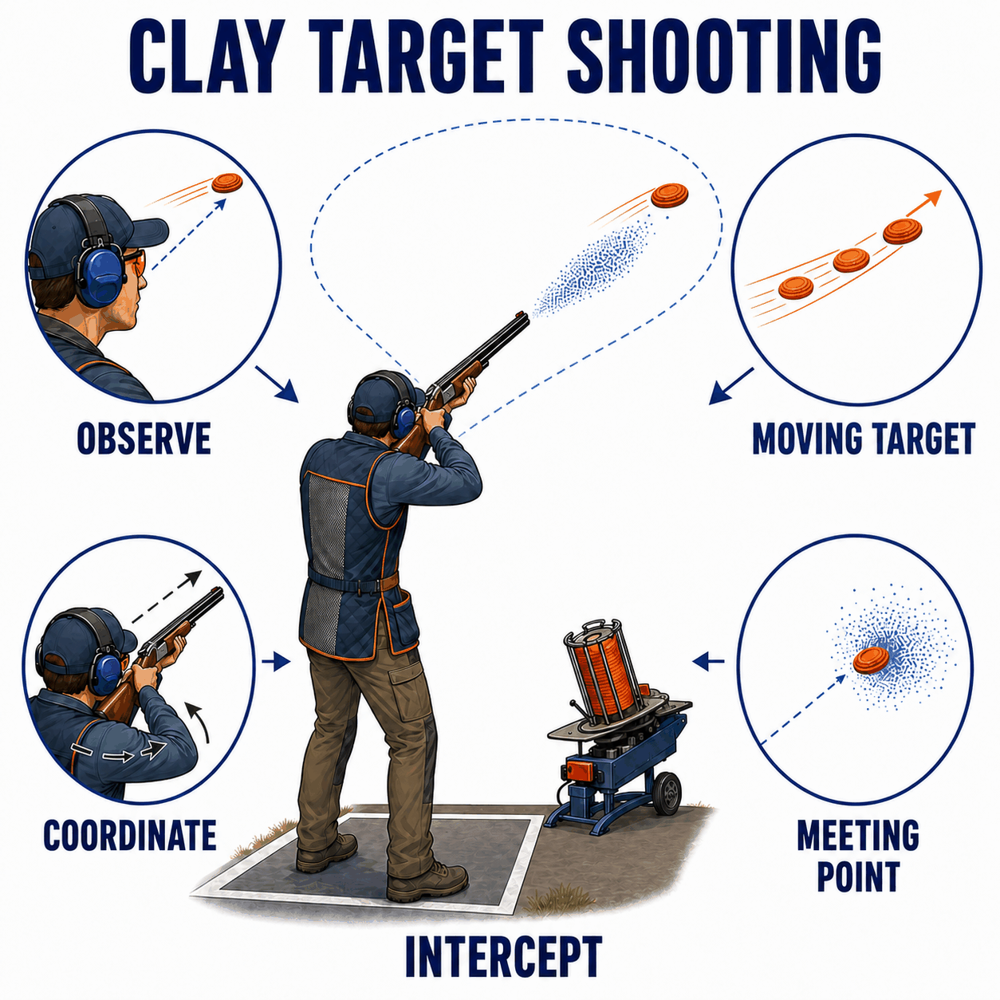
The clay flies, and the shot needs time too. Seeing, tracking and deciding the encounter form a single sporting task.
Clay target shooting brings together several shotgun sports. A machine throws a disc for the shooter to try to break in flight. The reference ISSF clay measures 110 mm in diameter, is between 25 and 26 mm high, and weighs about 105 g. A hit counts when, after a valid shot, a visible fragment breaks off.
The difficulty is that the clay doesn't wait. While the shooter sees it, decides and moves the shotgun, the clay keeps moving. The pellets are moving too, and spreading out. That's why it isn't enough to aim at where the clay is: you need to find the point where both movements will meet.
Experience helps you coordinate eyes, body and gun. You don't need extraordinary eyesight. Experts stand out mainly because they organise the task better and keep a steadier movement.
1.2
Brief history
Clay target shooting is about hitting a moving target, not aiming at a still image. To understand how it became a sport with rules, we'll now look at its first targets and machines.
How did the old trials with live birds turn into a sport of artificial targets, calibrated machines and shared rules? To understand it, you have to follow both the objects and the institutions.
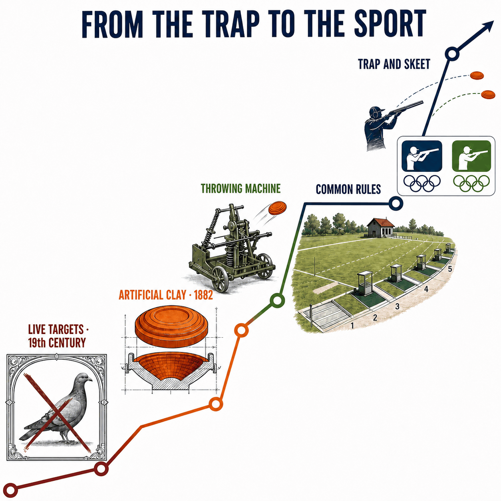
The history isn't just a line of technical progress. It's also the shift from live targets to artificial ones, common rules and comparable competitions.
In the 19th century there were competitions with live birds. Words like “pichón” and trap come from that period. Modern practice uses artificial targets. FITASC stopped organising trials with live animals in 2003.
Before today's clay, glass targets and other designs were tried. In 1882, George Ligowsky patented a concave, fragile disc designed to spin, fly and break. The patent doesn't prove he was the sole inventor, but it does show that shape, spin and breakage were already being studied.
The great leap forward was joining the target with repeatable machines, measured grounds and common rules. The organisation now known as the ISSF was founded in 1907, and FITASC adopted its current name in 1938. Shotgun shooting at flying targets appeared around the 1900 Olympics, although those events weren't the same as modern Trap. Today's sport is the result of a technical and regulatory evolution.
1.3
Clay target shooting as an organised sport
History shows that the modern clay isn't just a disc: it's part of a system of machines, measurements and common rules. Next, we'll look at which institutions organise and maintain that system.
What role do an international federation, the Spanish federation, a regional one and a club each play? Telling these levels apart helps you avoid confusing rules, licence, facility and day-to-day activity.
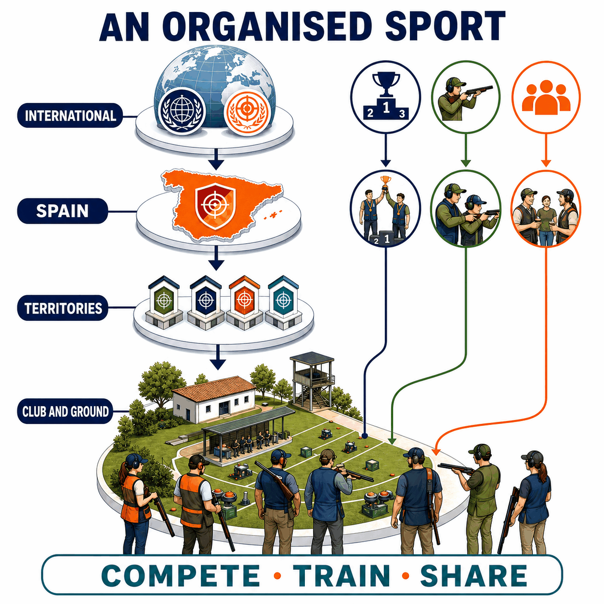
International rules, national organisation and the club's day-to-day practice serve different functions. They connect, but they aren't the same thing.
Clay target shooting doesn't have a single rulebook for all its variants. The ISSF regulates Olympic events and other international disciplines. FITASC keeps its own rules for Universal Trench, Sporting and other disciplines. Before checking a rule, you need to know which discipline you're shooting.
In Spain, the Real Federación Española de Tiro Olímpico publishes the rules for its area. The regional federations organise the activity in each territory and connect clubs and athletes with the national structure.
The club applies the rules in daily life: access, opening hours, supervision and use of the grounds. It can offer training courses, practice sessions, competitions and social rounds. These aren't the same thing. The paperwork, the scoring and the rules change, but safety and authorisations are always compulsory.
1.4
Main families of disciplines
Federations, regional bodies and clubs have different roles, but together they organise this sport. With this structure clear, we can now look at the main disciplines without confusing them.
Why aren't Trap, Skeet, Sporting, Universal Trench and Robot equivalent names? Each family organises the origin, uncertainty and direction of the targets differently.
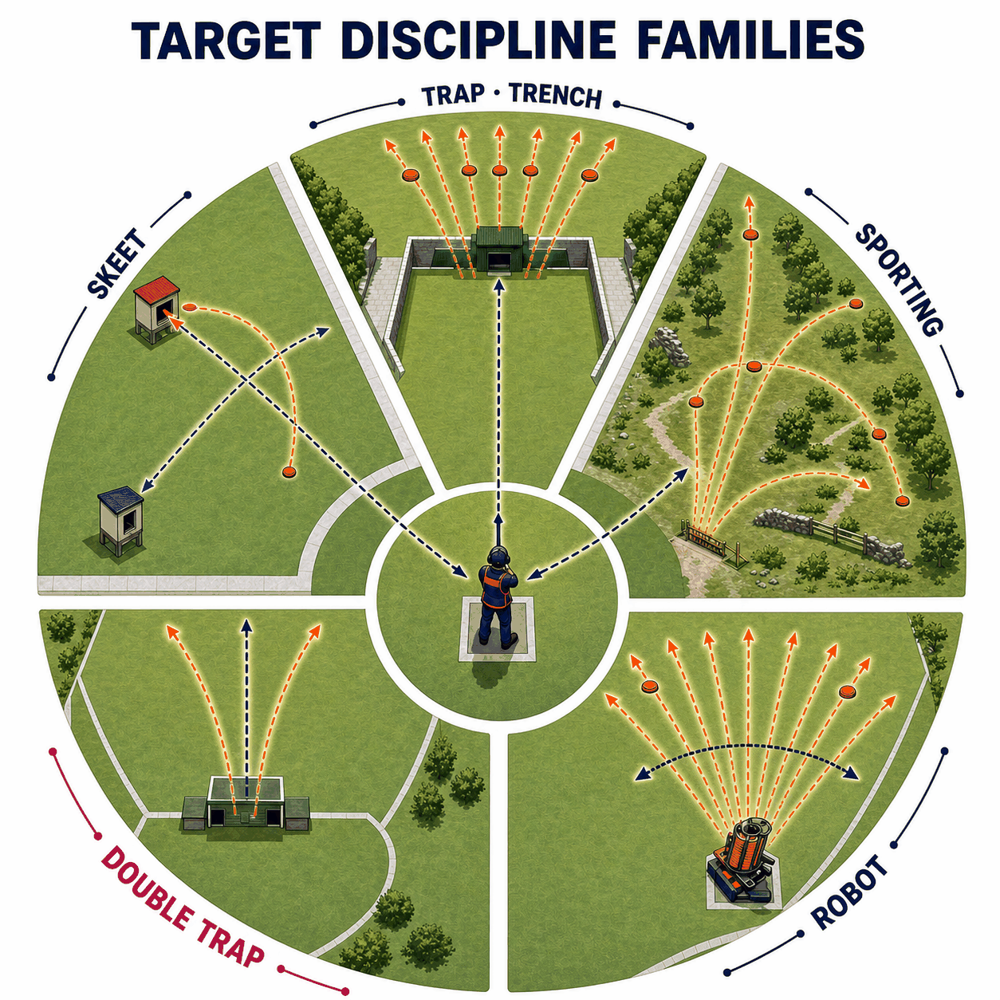
You recognise the family by where the clays are launched from and by the uncertainty the shooter has to resolve. The regulatory details are covered in chapter 11.
In Trap disciplines, the clays are launched from in front of the shooter and move away. Olympic Trap uses groups of machines and ISSF schemes. Universal Trench works with five machines and FITASC rules. They look alike at first glance, but the parameters and the pace differ.
In Skeet, the clays are launched from two side houses and cross known flight paths. In Sporting and Compak Sporting, several machines present very different flights: crossers, incomers, outgoers and other paths.
Double Trap launches two targets at once and is no longer part of the current Olympic programme. Robot-type machines can follow a rulebook or a local set-up. That's why “robot” describes a machine, not a universal discipline.
1.5
Why it's hard
In each discipline, the point where the clay is launched and the information available to the shooter both change. All of them require working out the encounter, which is why hitting the target is harder than it looks.
How can a shot that arrives late still look correct? The difficulty becomes clear once you look at the whole chain: perception, decision, movement and flight, while the clay never stops moving.
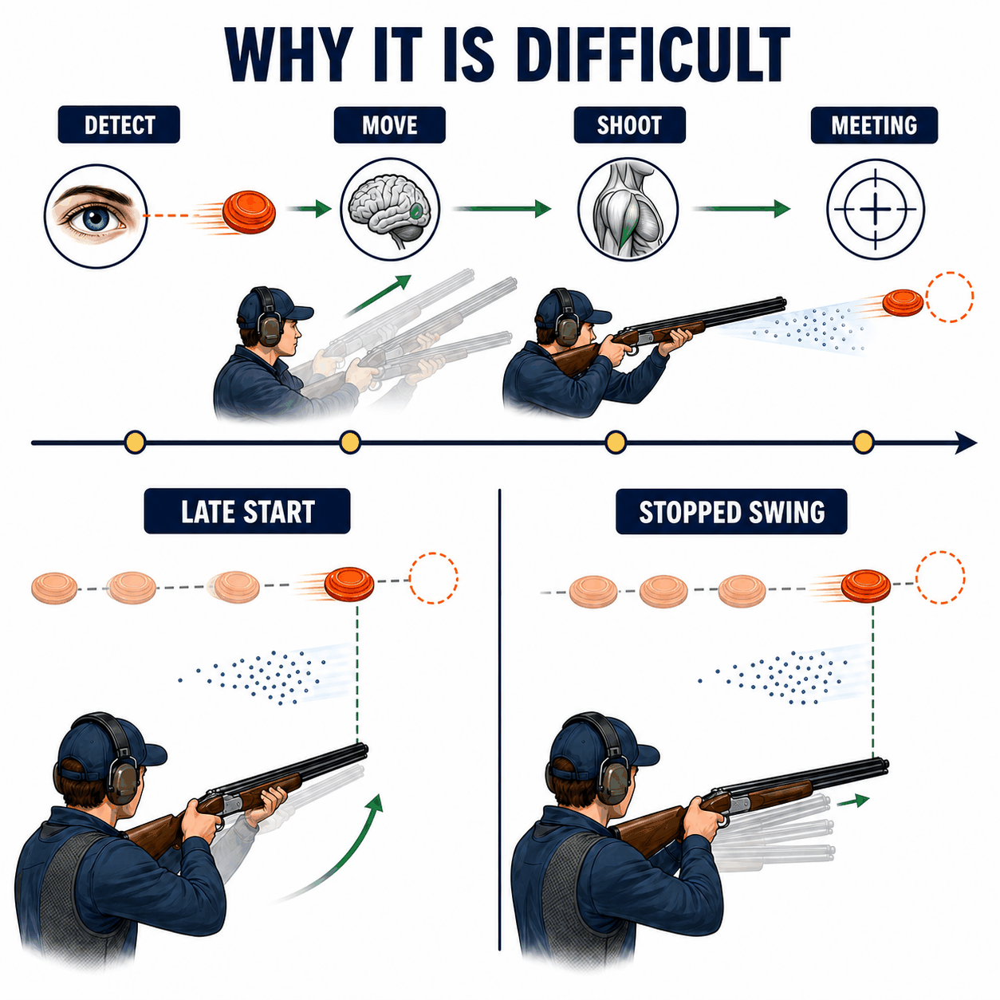
A miss can originate at different links of the same time chain. Two shots that look similar from the outside don't have to share the same cause.
Between the clay's launch and the impact, several things happen: the shooter spots it, reads its direction, decides, moves the shotgun and fires. After that, the pellets need time to arrive. Throughout that whole sequence, the clay keeps moving.
The basic idea can be summed up like this: lead = clay speed × time to encounter. This is a simplification, because the clay loses speed, rises and falls, and the pellets also slow down and spread out. Even so, it explains why the shot has to be aimed at a future position.
A miss doesn't leave a mark like a target face does, either. The shooter might have stayed behind or under, slowed the gun down, or lifted their head. Before correcting anything, you need to find out which of those steps went wrong.
1.6
The need to observe and repeat
A miss can come from the eyes, the timing, the movement or the geometry, and two similar misses can need opposite corrections. That's why it pays to observe methodically and repeat each drill with one specific question in mind.
When does repeating teach you something, and when does it just burn another cartridge? Repetition teaches you something when it keeps the scenario the same, sets out a hypothesis, and changes just one variable.
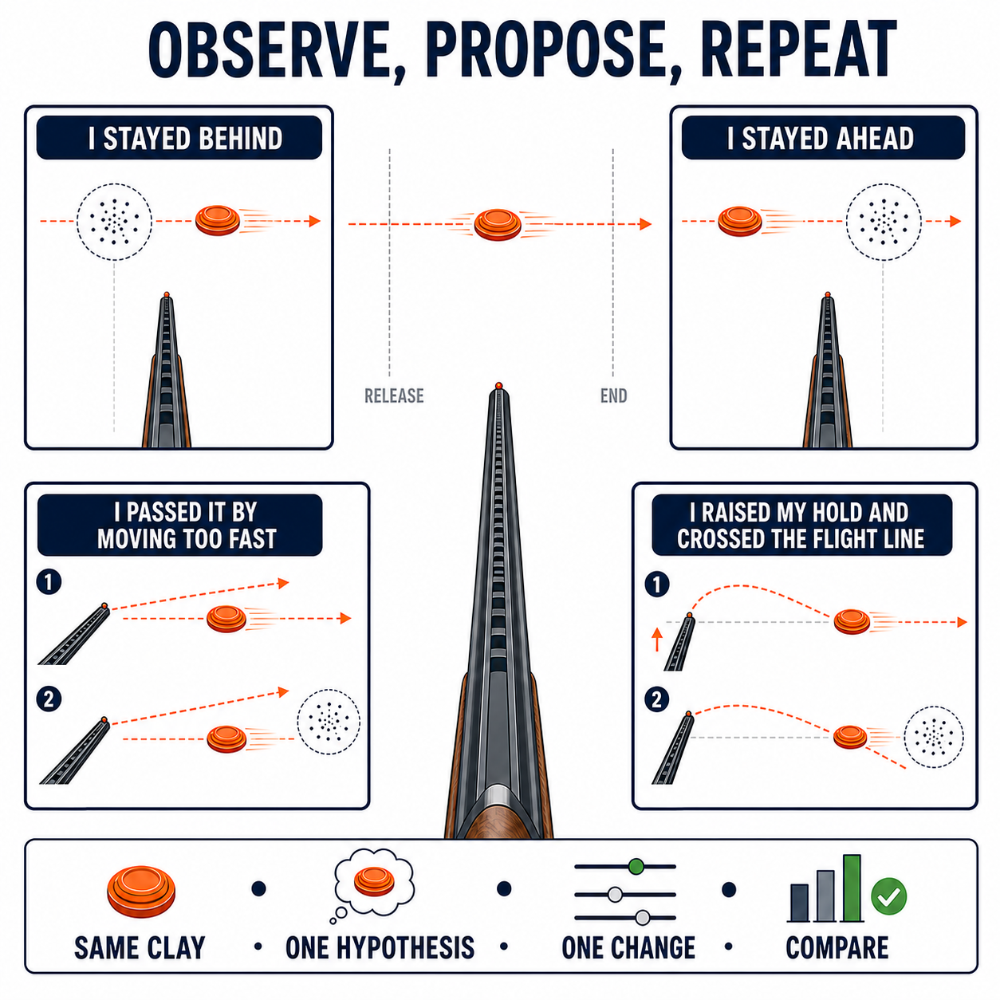
Repeating isn't blindly trying again. It's keeping the scenario the same, setting out a hypothesis, changing one variable and comparing.
In a round, the next clay can change machine, angle, height or station. That's part of the sport, but it makes it hard to know why you missed. Repetition helps when it keeps the same scenario and changes only one decision.
The method is simple: observe, set out a hypothesis, repeat and compare. For example, if we think the movement started late, we repeat the launch and change only that moment. Repeating isn't blindly trying again.
Training repetition shouldn't be confused with a “no bird” in competition. Nor does it produce a recipe that works for every flight. Once you understand a relationship, you need to go back to varying situations and check whether the lesson still holds.
1.7
Birth of the Plato simulator
Repeating helps you learn when you keep the same situation and change only one variable. Being able to pause, compare and try again is the foundation of the Plato simulator.
How does a brief correction on the ground turn into a scene you can observe and discuss? Plato exists to make that translation visible, without replacing real experience.
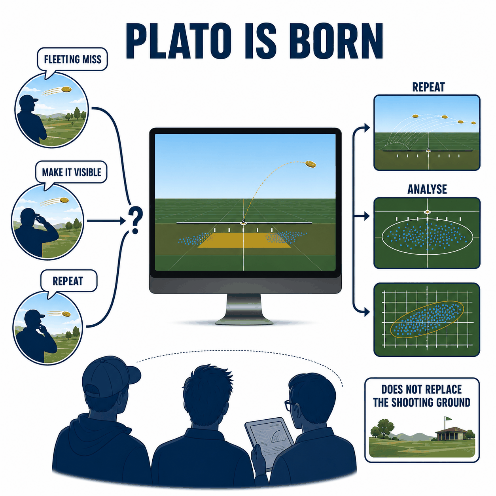
Plato comes from translating very brief phrases heard on the ground into visible relationships. That way a beginner, a shooter and a technical person can all discuss them.
Plato was created to turn brief corrections, like “you're behind” or “you're staying under”, into a scene you could watch calmly. The simulator shows the clay's trajectory, the meeting point, the pattern and the correction for each shot.
The app runs on a single HTML page and shows the view from the shooter's eye. It includes Universal Trench, Olympic Trap and Robot, five stations, slow motion, wind, repetition and different pattern spreads. Its value lies in observing and comparing, not in copying a distance off the screen and taking it straight to the ground.
Plato doesn't teach you how to handle a gun, and it doesn't reproduce weight, recoil, noise or competitive pressure. Nor does it grant authorisations or replace an instructor. Real practice has to take place at an authorised shooting ground, with proper supervision.
1.8
Project objectives
Plato lets you calmly observe what happens in a fraction of a second. It doesn't replace what has to be learned with a real gun and supervision, so let's now look at what it can genuinely be used for.
What should the simulator help you understand, and which promises should it avoid making? Its goals form a cycle of observation, comparison, decision and responsible validation.
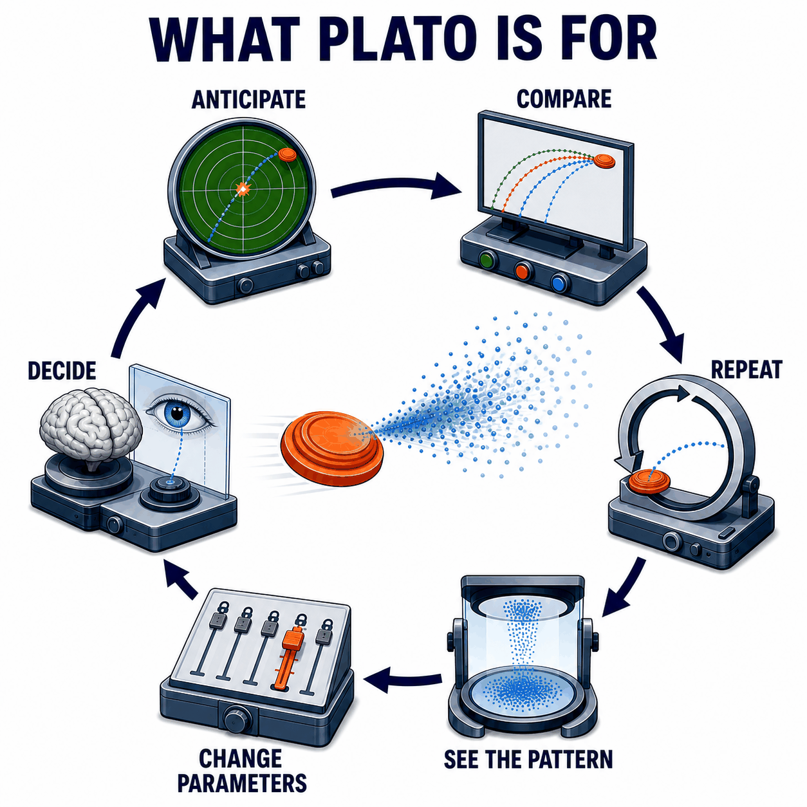
The goals form a cycle of inquiry. You observe, predict, act, compare, and go back to the ground with one specific question.
The first goal is to explain lead: aiming the shot at the zone where the clay and the pellets can meet. That zone changes with direction, speed, distance and the moment the shot is taken. There's no single lead that works for every clay.
The simulator also lets you compare trajectories and repeat a launch without changing the other parameters. That way you can study the effect of the station, the wind, the speed or the pattern spread separately.
The pellet cloud is shown in a simplified way. It helps you understand spread and margin, but it doesn't replace a real pattern test with the actual shotgun and cartridge. The final goal is to make a decision, observe the result and revise the hypothesis.
1.9
How to use this manual
The project shows physical relationships and shooting decisions, but it doesn't certify equipment or guarantee results on the ground. Knowing what it offers will help us decide how to read this book.
Do you need to read everything in order? The book offers different paths for getting started, prioritising safety, practising with Plato, or reviewing the technical model.
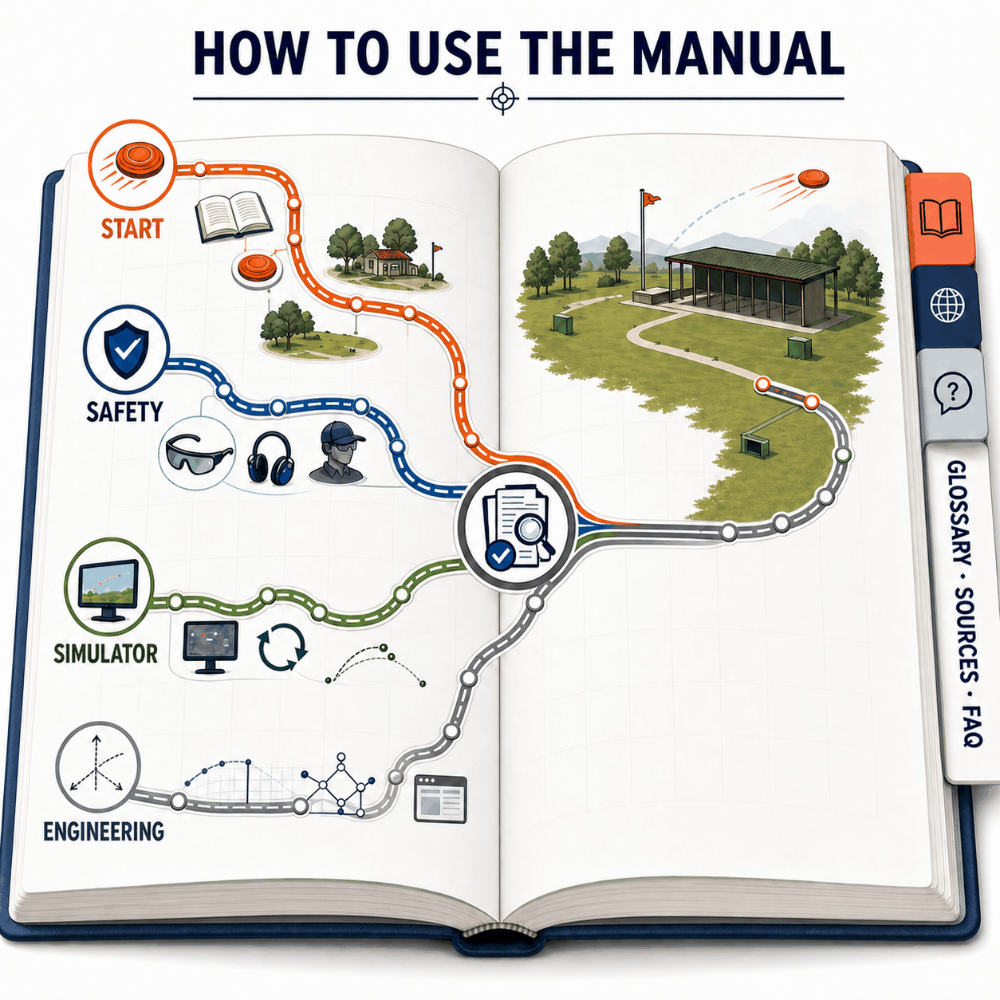
You don't have to read it the same way, or in the same order. Every route shares safety, dated sources and a return to supervised practice.
This book can be read from start to finish, or used to answer one specific question. If you're starting out, carry on to the chapters on getting started, safety, the ground and equipment. If you already shoot, you can go straight to misses, geometry or the disciplines.
To practise with Plato, it helps to follow a short cycle: read an idea, open the simulator, change one variable and observe the result. Then hide the hints and try to repeat the decision. One clear question teaches you more than many changes at once.
The technical part explains units, formulas and the limits of the model. In real practice, the law, the current rules, the ground's instructions and the safety officer always take precedence.
What we have learned
The clay and the pattern have to meet at the same place and at the same moment.
Each discipline changes the machines, the stations and the trajectories.
Spotting a miss is difficult because the clay doesn't leave a mark the way a target face does.
Plato lets you repeat and compare, but it doesn't replace training or real practice.
Expert reading. Every representation should state which part of reality it covers and which source it rests on. The simulator explains relationships, but it doesn't certify a ground or a gun.
Responsible access, paperwork and first steps
How to get started in Spain
To get started in clay target shooting, you don't need to buy a shotgun. The first step is to get to know a ground, get some guidance, and understand what role the club, the federation and the Guardia Civil each play. This chapter sets out those steps so that a beginner knows who to ask, and doesn't spend money before it's time.
Procedures, prices, schedules and insurance can change. This information was last checked on 2 August 2026, but it's always worth confirming the current details with the Intervención de Armas y Explosivos, the regional federation and the ground you've chosen.
2.1
The initial problem
We now know what clay target shooting is, where it comes from, and how Plato can help. Before we talk about technique, we'll look at how to get started in Spain with proper guidance, safety and legal backing.
At the start, words like club, licence, federation and ground tend to get mixed up. They don't mean the same thing, and none of them fully replaces the others.
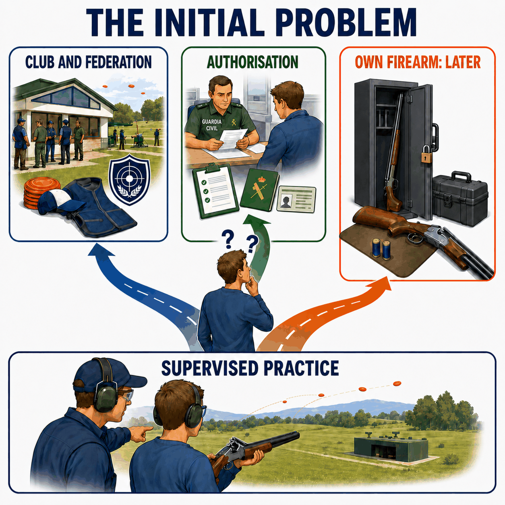
Getting started is easier to understand once you separate access to the ground, training, sporting paperwork and owning your own gun.
A club organises its own activity and decides how members or visitors gain access. The federation handles the sporting relationship and the competitions within its area. The Guardia Civil enforces firearms law. Finally, each ground has its own rules for access, safety, insurance and equipment.
It's also worth telling apart the gun's category and the type of licence. The category describes the gun; the licence authorises owning and using it under the conditions set out. As a general guide, here are the best-known relationships:
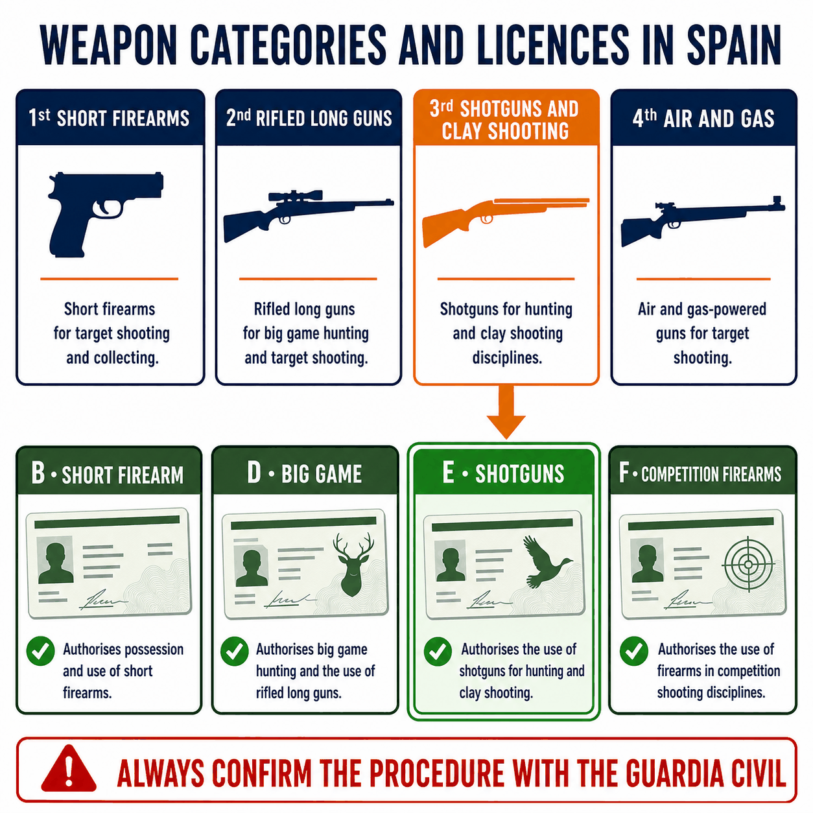
Category and licence are different concepts. This visual guide doesn't replace the classification that applies to each gun, or checking with the Guardia Civil.
Category 1: pistols and revolvers. Licence B is granted restrictively; certain competition guns can be documented under licence F.
Category 2: includes rifled long guns for big-game hunting, normally associated with licence D.
Category 3: includes certain long guns for sport shooting, shotguns and other smooth-bore long guns. For an ordinary clay target shotgun, the usual reference is licence E.
Licence F: covers guns classed as competition guns and is tied to the shooter's sporting accreditation. It isn't the automatic next step for just any clay target shotgun.
Licences A and C: apply to professional cases defined by the Firearms Regulations, and aren't part of a beginner's normal path.
This guide is only a general pointer. The exact classification of the gun and the licence you need must be confirmed with the Intervención before buying anything. Being federated doesn't document a shotgun, and holding licence E doesn't automatically let you into just any ground, either.
2.2
Recommended first step
The first decision shouldn't be to buy anything, but to find someone who can guide and supervise your first steps. The normal thing to do is approach a club, an authorised ground or the regional federation.
The most practical way to get started is to contact a regional federation, a club or a ground that works with beginners.
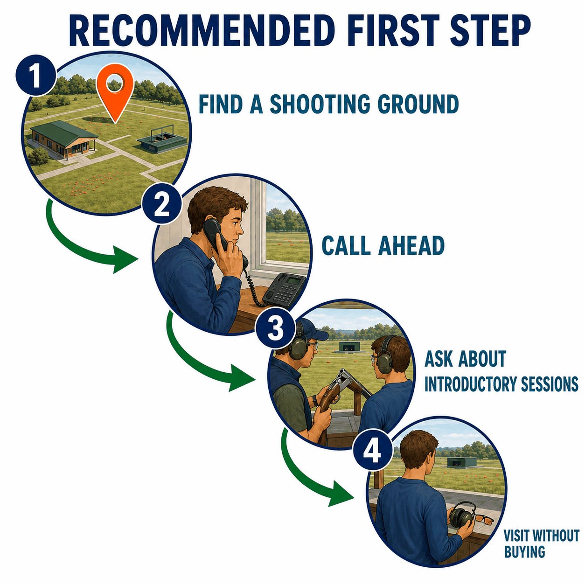
Finding out, getting guidance, completing the necessary paperwork and practising under supervision helps you avoid premature decisions.
A club doesn't grant firearms licences, but it does know the daily activity: which disciplines are available, opening hours, courses, visitor access and permitted equipment. RFEDETO publishes a directory of regional federations that helps you find clubs and grounds. It's worth using official contacts and checking that they're up to date.
The first message can be very simple: “I'm a beginner, I don't have a shotgun or a firearms licence, and I'd like to find out about clay target shooting.” After that, you just need to ask:
whether you can visit the ground before shooting;
whether there's an introductory course or taster day;
what documents and insurance are required;
who provides the gun and the ammunition;
what protection you need to wear and how much the activity costs.
The second contact is administrative. The Intervención de Armas for your home address explains how to apply for licence E, the fee, the documents and the tests. The ground guides you; the Guardia Civil decides.
2.3
Club, federation and administration
Talking to the right people beforehand avoids risks, expense and false expectations. To make sense of their answers, we need to tell apart the roles of the club, the federation and the Administration.
Each body answers a different question: where to practise, how to take part in the sport, and what firearms law allows.
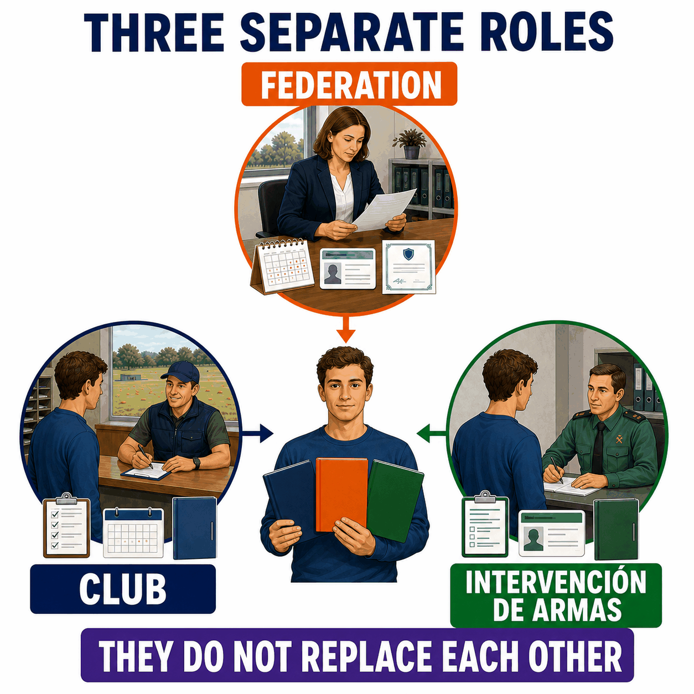
The club, the federation and the Intervención de Armas work together, but each one has a different responsibility.
The club organises training sessions, membership fees, courses and member access. The regional federation processes sporting licences and organises the activity in its community. The Intervención de Armas y Explosivos receives applications, checks the paperwork for guns and enforces the Firearms Regulations. Neither the club nor the federation can grant licence E.
Intervenciones de Armas offices are spread across Spain. You don't need to hunt for one at random: for licence E, the one that applies is the office for the applicant's home address. The official prior-appointment system lets you choose the province, the procedure and an available office. The Guardia Civil states that this service operates across all 52 provinces. Think of the map as a provincial network of offices, not a single national headquarters.
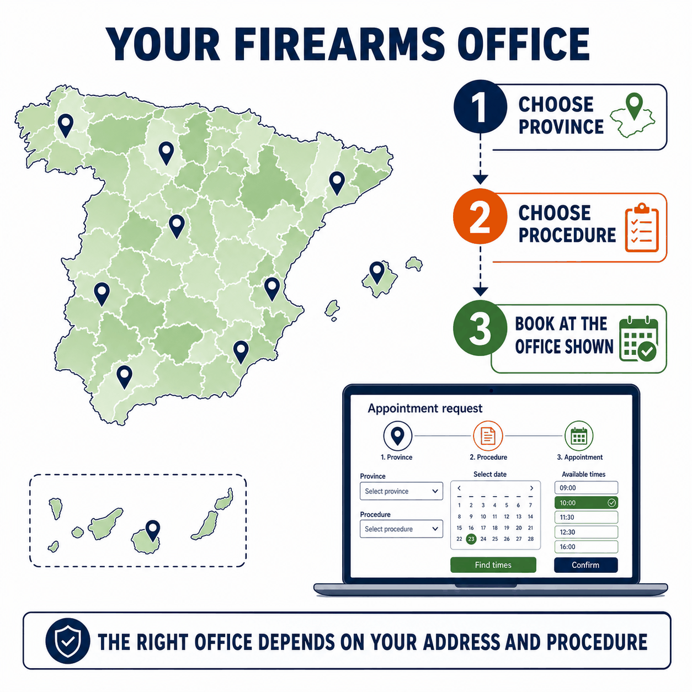
The office with jurisdiction depends on your home address and the procedure. The map shows the process of locating one, not the exact position of every office.
The prior-appointment system helps cut down waiting times, although the Guardia Civil notes that it's optional. Before travelling, it's worth checking the office, the opening hours and the paperwork. If there's any doubt about which office applies, either the appointment system itself or the provincial Comandancia can point you in the right direction.
The federation licence and its insurance also have limits. The compulsory sports insurance covers certain risks under the conditions set by law and by the policy, but you shouldn't assume that any card covers any activity or ground. It's worth asking for the certificate, the assistance phone number and the exclusions.
2.4
Applicable firearms licence
The club, the federation and the Administration work together, but each has its own functions and authorisations. This distinction matters for understanding the firearms licence for a clay target shotgun.
To buy and document an ordinary clay target shotgun, the usual reference is licence E.
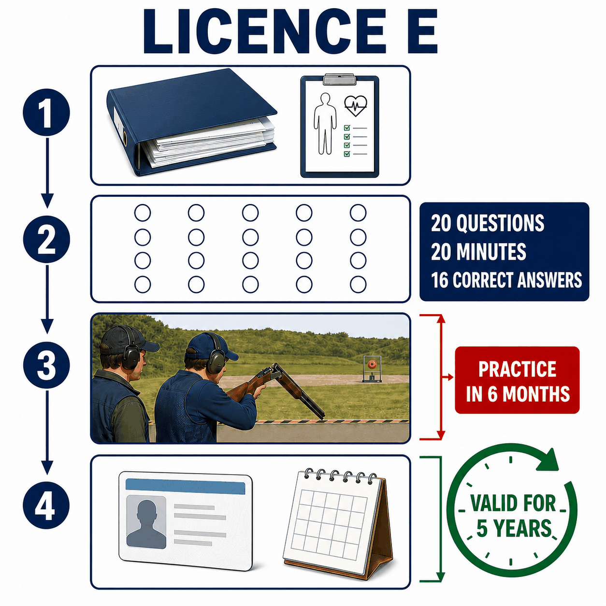
Licence E requires personal eligibility conditions, an initial competence test, and a regulated period of validity.
Licence E covers the guns set out in the Firearms Regulations, including category 3.2 shotguns. Only one licence E can be issued per person. It allows you to document up to six shotguns or six rifled long guns for sport shooting, with a combined maximum of 12. Its ordinary period of validity is five years. From the age of 67, it requires the three-yearly renewal endorsement set out by law.
The application is submitted to the Intervención that covers your home address, either in person or online if you have an electronic signature. The usual requirements include identification, the medical and psychological fitness certificate, proof of engagement in hunting or the sport, the fee, and, for a first-time application, the certificate of competence. The current list should be checked when you start the process.
There's no single national date for the exam. Each province sets its own schedule. Your application entitles you to three sittings. Once you've passed the theory, you have six months to pass the practical.
The theory test has 20 questions and lasts 20 minutes. You need at least 16 correct answers. The official syllabus covers seven topics, and the Guardia Civil publishes sample question sets and answers. The most useful approach is to study topic by topic, do timed mock tests, and review your mistakes.
The iPhone and iPad app Licencia de Armas España offers questions by chapter, mock exams, a review of your mistakes and statistics. It can be handy for practice. However, its listing shows a version published in 2018, and mentions a syllabus updated in 2020. It should be used as support, not as an official source or a guarantee of passing. Where there's a difference, the syllabus, question sets and answers published by the Guardia Civil take precedence.
In the practical test with a shotgun, loading, aiming, firing and unloading are all assessed. You fire two shots standing, unsupported, at a fixed 50 cm target face set 25 metres away. It isn't a round of clays: what's assessed is safe handling and the minimum result required.
2.5
Federation licence
Licence E is the usual route for acquiring and documenting an ordinary clay target shotgun, through its own administrative process. The federation licence belongs to the sporting side of things and serves a different purpose.
The federation licence identifies the athlete within the sport. On its own, it doesn't authorise owning a shotgun.
The sporting licence connects the shooter to the federation, but it doesn't replace the administrative authorisation for the gun.
The federation licence certifies the shooter's relationship with a federation for a specific period. It can be used for training, competitions, federation services, and to demonstrate sporting engagement in certain procedures. Its scope depends on the territory and the discipline.
It can be arranged directly, through a club, or via a federation platform. It can also be regional, or need an extra accreditation for a national competition. That's why you need to check validity, scope, discipline and insurance, not just hold a card.
It's worth keeping a record of the licence number, the issuing federation, the dates, the associated club if there is one, the policy and the assistance phone number. A taster session that happens before you sign up may have its own cover arranged by the organiser; ask about it.
2.6
Introductory course
Joining a federation lets you take part in the sporting activity and benefit from its cover, but on its own it doesn't authorise you to acquire or keep a gun. Now that we've separated these two issues, we can see an introductory course as training, not just paperwork.
A good course starts with safety and handling. Breaking clays comes later.
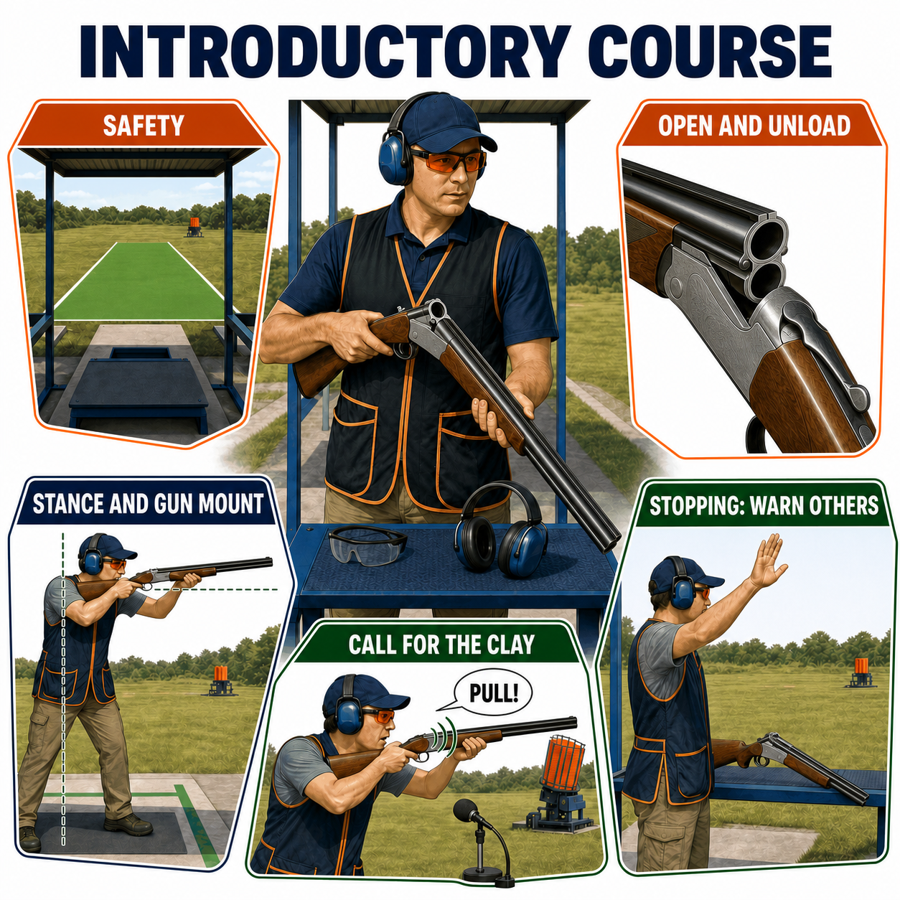
The progression should go from explanation and controlled handling to a few supervised shots.
You need to tell apart the competence certification tied to a first licence E and a club or federation's sporting course. They can complement each other, but an internal diploma doesn't replace the official tests.
Before booking, it's worth asking in writing who runs the course, where it takes place, how many students each instructor handles, and what insurance is in place. You should also clarify who provides the gun and the ammunition, how many shots are included, and what protective equipment is required.
The first part should teach you to check the state of the gun, keep the muzzle pointed in a safe direction, keep your finger off the trigger, and obey any stop command. Students need to know how to open, unload and hand over the gun before working on stance, gun mount or lead.
After that can come a balanced stance, placing the stock, watching the clay, and a few simple throws. Progress is measured first by safe, repeatable behaviour, not by the number of clays broken.
2.7
First visit to a ground
A responsible course prioritises the state of the gun, the commands and the ability to stop, not the number of hits. In your first visit to a ground, we'll see how these rules are applied by everyone together.
The first visit is for getting to know the place, listening to the commands and confirming the conditions before shooting.
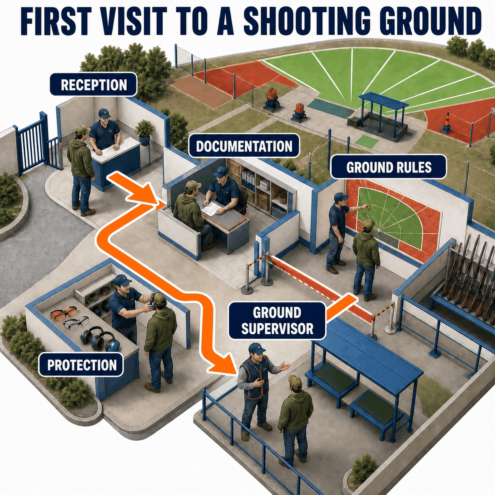
Checking in and the safety briefing come before going anywhere near a shooting station.
Before you go, confirm the day, the time, the contact person, the paperwork, the cost, and whether you can come in as an observer. A competition, maintenance work or the weather can change the opening hours.
At reception, you follow the instructions of the person in charge. They may ask for identification, your booking, your federation licence, or, if you're bringing your own gun, your licence and ownership permit. Eye and ear protection goes on before entering the designated area.
No one should touch someone else's gun, or go into a restricted area just because other users are doing it. It's also worth asking about which cartridges are allowed, collecting spent cases, and how waste is handled. Watching a full round is already a first lesson. If something isn't clear, there's no obligation to shoot.
2.8
Practical walkthrough example
It's better to leave your first visit knowing who's guiding you, what the conditions are, and what the next step is, than to improvise a shot. An example will now help us put the enquiries, the training and the paperwork in order.
The exact order can vary, but a simple route stops you mixing up paperwork and purchases.
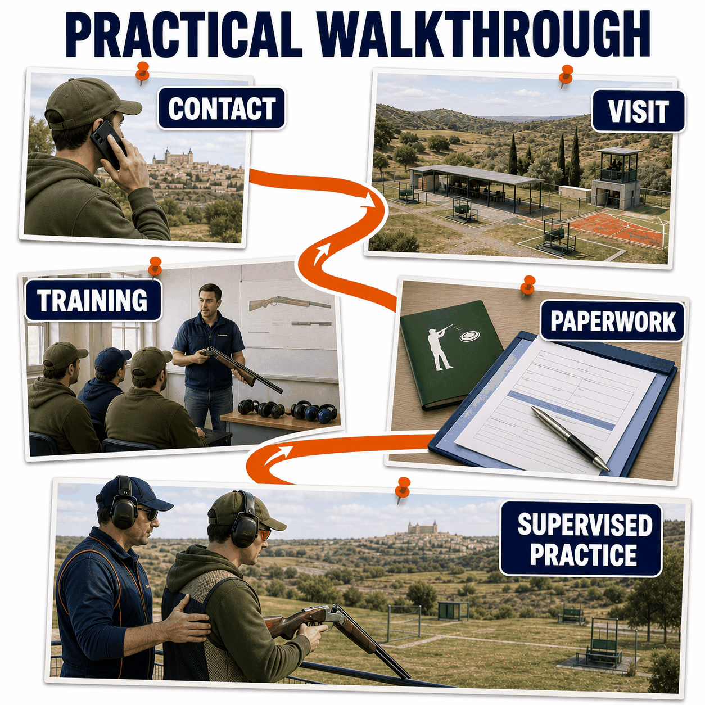
The ground, the federation and the Intervención form a coordinated route, not a single procedure.
Find a ground or club that takes beginners, and ask for a visit.
Confirm access, insurance, training, equipment and cost.
Check with the Intervención de Armas for your home address about licence E.
Arrange the federation licence if the activity requires it.
Complete the relevant training and tests.
Practise several times under supervision before buying your own equipment.
The important thing isn't to do it quickly. The important thing is knowing which body confirms each step. Opening hours, fees and admission can change; the firearms licence always depends on the administrative decision.
2.9
What a beginner shouldn't buy yet
The worked example sets out procedures that can seem confusing, even though timeframes and requirements vary by territory. It also shows why it's worth putting off purchases until you can choose with good judgement.
Putting off some purchases stops you spending money on equipment that might not suit your body, the discipline or the ground.
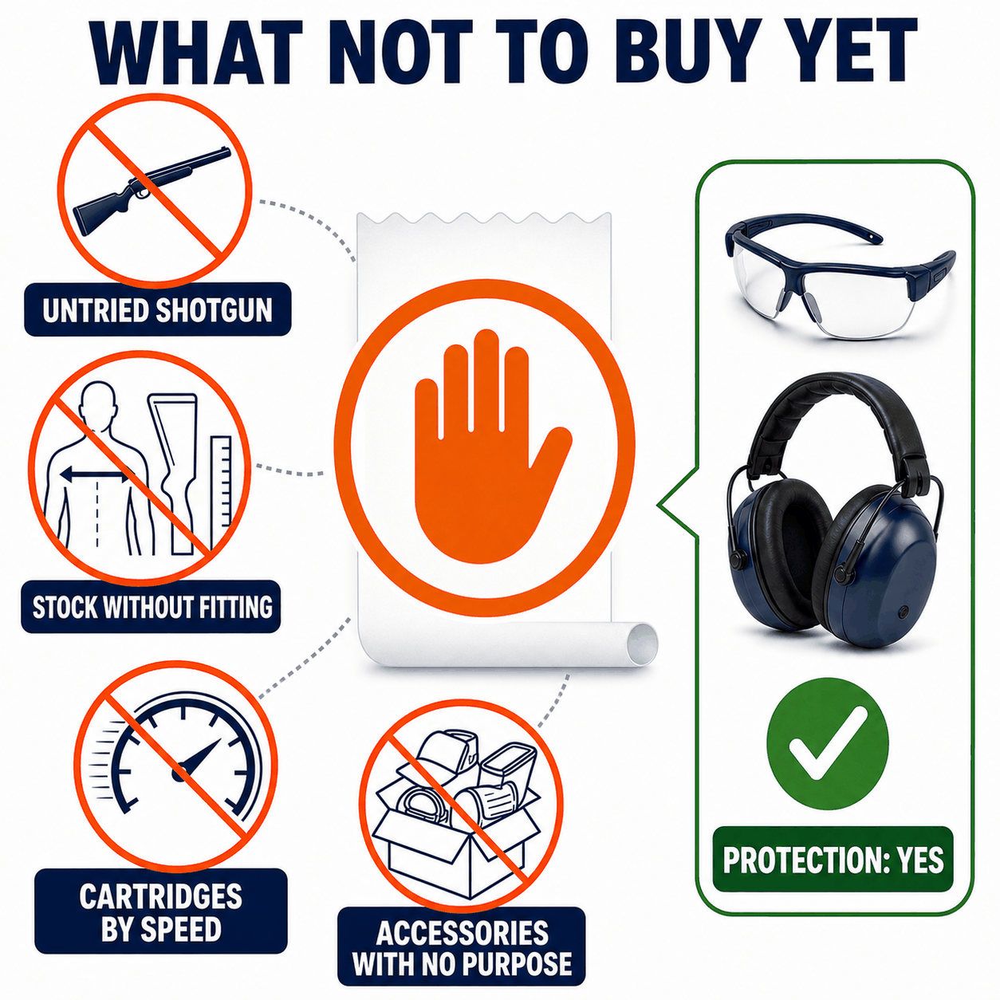
First you try things out and get measured with competent help. Then you choose the equipment you need.
The first purchase worth putting off is the shotgun. Stock fit, length, stance and eye dominance all matter a great deal. An excellent model can still suit a particular person badly.
It's also not worth buying large amounts of cartridges purely for their price or advertised speed. The gun determines the compatible gauge and chamber. The ground and the discipline can limit the load, the pellet size or the pellet material. Chokes also need to suit both the gun and the use it's put to.
Modifications to the stock, the recoil pad, the weight or the trigger should be made by competent people. A technique error can look like a fault in the gun. That's why it's better to watch several sessions before modifying anything.
A competition vest, coloured lenses, a cart and other accessories can wait. The one reasonable exception is having good eye and ear protection, confirmed with the instructor or the ground.
2.10
Checklist to get started
Trying things out, getting measured and asking for advice before buying stops you getting used to unsuitable equipment, or to a discipline you don't know yet. Now let's bring these decisions together into a final preparation checklist.
Before a first practice session, the place, the person in charge, the paperwork, the insurance and the equipment should all be clear.
One last check stops you turning up at the ground with major doubts or unnecessary equipment.
Booking, activity and the person responsible confirmed.
Administrative requirements checked for your actual goal.
Club, federation licence and insurance understood separately.
Instructor, gun, ammunition and supervision identified.
Eye and ear protection available before stepping onto the line.
A realistic budget, without buying a shotgun blindly just yet.
If there's any safety doubt at all, don't handle the gun or shoot.
For a first visit, comfortable clothing, sturdy footwear and the required protection are usually enough. Don't bring a gun or ammunition on your own initiative. The prices for signing up, training, the fee, the medical and psychological certificate and the sessions should be checked on the date you pay.
Chapter 03
Safety before technique
Safety isn't paperwork. It's the necessary condition for learning and sharing a ground without putting anyone at risk. The law requires you to keep control of the gun at all times. On the ground, that obligation turns into clear actions: safe direction, loading only when it's your turn, an open gun outside of firing, and obeying the person in charge.
Knowing the rules by heart isn't enough. Noise, being rushed or a mistake can cause a lapse. This chapter sets out a simple sequence that needs to be practised under supervision.
3.1
Fundamental principle
Getting off to a good start isn't about accumulating equipment, but about knowing who's supervising you, which documents you need, and how to act at each stage. With these steps clear, we reach the most important rule: safety.
What rule protects us when we can't be sure whether there's a cartridge inside? Treating every gun as if it were loaded, keeping the barrel pointed in a safe direction, and keeping your finger off the trigger form a single discipline. They aren't three separate tips you can trade off against each other.
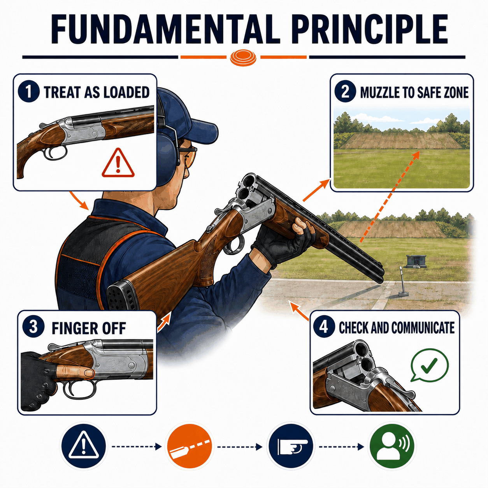
Seeing the state of the gun helps, but it isn't enough. Safe direction, finger off, checking and communication are all maintained before, during and after the shot.
The first rule is to treat every shotgun with the same care, even if we believe it's unloaded. The muzzle must always point towards a safe area, and your finger stays off the trigger until the moment you fire. Doubt never justifies careless handling.
The Firearms Regulations require you to keep control of the gun and act with due care. The mechanical safety catch is a help, not a guarantee. Each shooter is responsible for their own shotgun, but anyone who spots a danger must alert the referee or the person in charge.
3.2
Safe zones and no-go zones
Always treating a gun as if it were loaded protects us even when we slip up. To apply this rule, we need to know which directions and areas are safe.
Which way is it safe to point the barrel? It isn't enough to say “forwards”. You need to recognise the firing line, the authorised zone for flight and fall, the machines, the waiting area, and anywhere occupied by people or property.
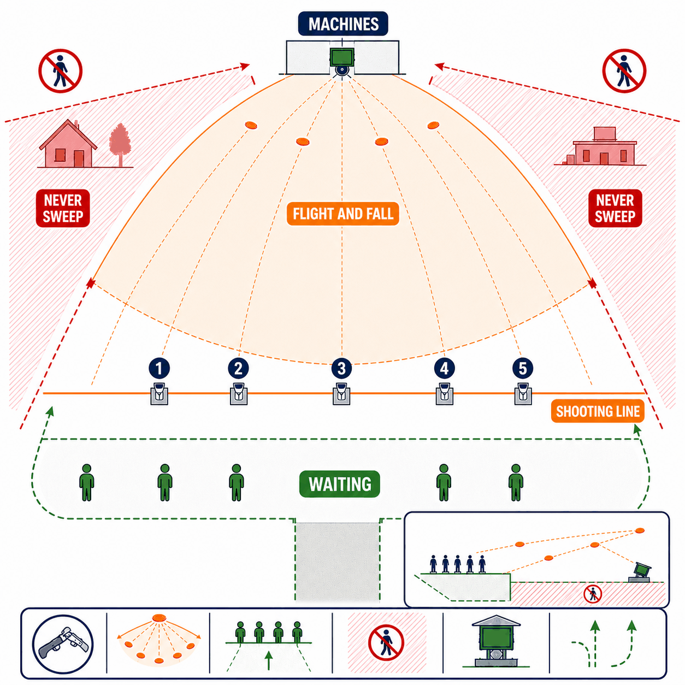
A shooting ground organises risk with physical limits. The five stations sit on the line. The waiting area is behind it. The machines, the flight and the fall occupy a controlled zone that no one enters while shooting is under way.
The firing line separates the waiting area from the stations and from the zone the clays fly and fall through. If there's a person in front of the stations, guns stay open and unloaded.
A safe direction isn't just somewhere that currently looks empty. You also need to think about what's behind it, and which surfaces might deflect a shot. The ground's signage and commands take priority, because every facility is different.
3.3
Gun open except when shooting
Safe direction depends on the state of the whole ground, not on what the shooter thinks they're about to do. That's why the gun must stay open except during the authorised moment of firing.
Why does an open shotgun communicate better than saying “it's empty”? Because it lets its state be checked from a distance. It also makes it harder for it to fire while waiting, rotating stations, or leaving the station.
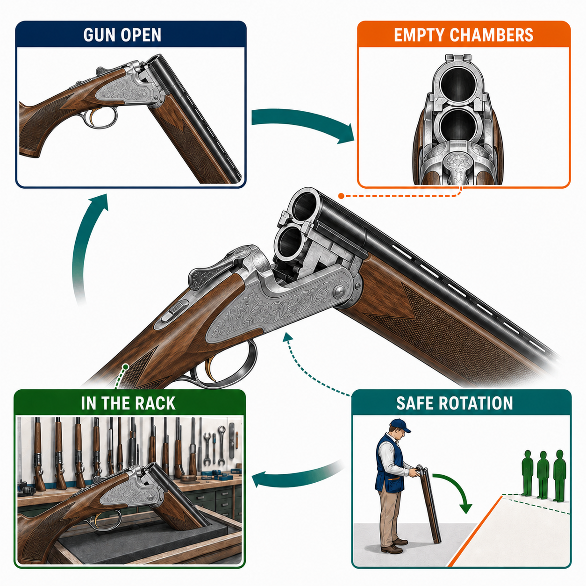
An open action turns being unloaded into a visible state. Both chambers can be seen, and the gun stays inoperative while waiting, being checked, and moving around.
On an over-and-under shotgun, opening it fully leaves the chambers visible. That state lets anyone check from outside that the gun can't fire. Outside your turn, the shotgun must be open and unloaded.
It stays that way while waiting, rotating stations, and leaving the station. It's only closed during your turn, with the barrels pointed towards the target zone. To hand it to someone else, it's also opened and the chambers are shown.
3.4
Safe sequence before firing
An open shotgun lets the whole group see its state and share the same safety information. Now let's set out the checks needed before closing it and firing.
When does waiting stop and shooting begin? Only when the station, the turn, an open line, a clear zone and authorisation to load all coincide. The cartridge must never come before those conditions.
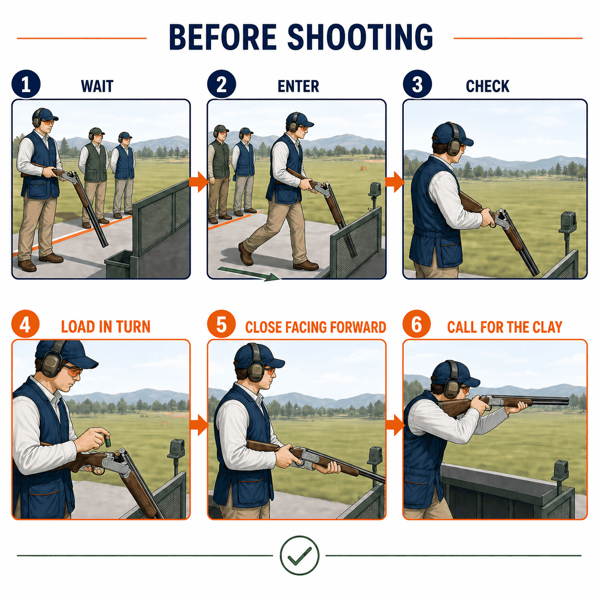
Loading appears at the fourth step, not the first. The shotgun is only closed at the station and pointed towards the target zone.
Before stepping onto the station, the gun is open and unloaded. Check that it's your turn, that the previous shooter has left, and that no one is in front. Once at the station, load only the permitted amount.
The shotgun is closed with the barrels towards the target zone. Your finger stays off the trigger until the gun is mounted and the shot is imminent. The referee's commands take priority: at STOP you stop, and at UNLOAD you unload.
3.5
Safe sequence after firing
Before starting, the station, the turn, an open line and authorisation to load must all coincide. After the shot, another series of steps leaves the gun in a state that everyone can check again.
When can the shooter turn around or leave the station? Only after keeping the gun pointed forward, opening it fully, removing the cartridges, and confirming that both chambers are empty.
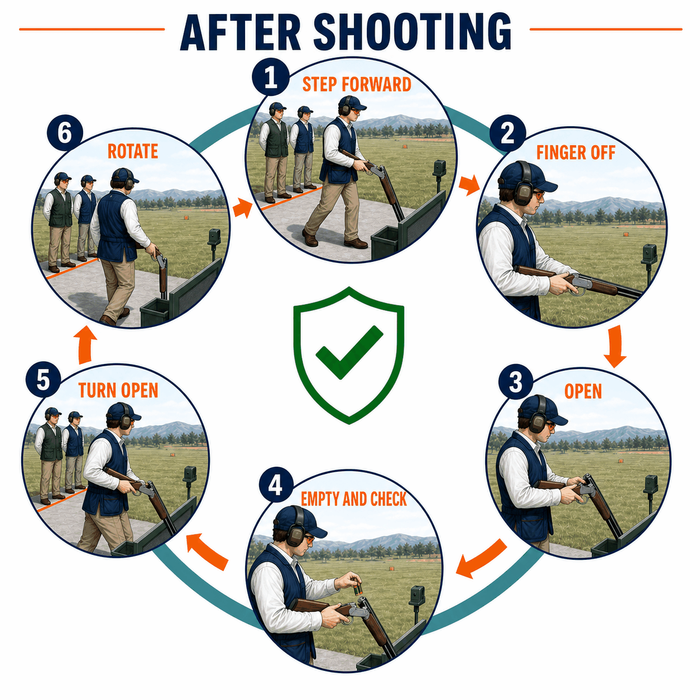
The outcome of the clay doesn't change the order. First forward, finger off, open and unload. Only after that do you turn round and rotate stations, with the action open.
The attempt doesn't end when you break or miss the clay. It ends when the shotgun is open, unloaded and checkable again. It's opened fully with the barrels pointed forward.
When opening an over-and-under, you need to control the ejection of the spent cases. They're then collected or placed where the ground indicates. You only turn round or change station with the gun open and empty.
3.6
Misfire or jam
Opening, unloading and checking the chambers closes the cycle without relying on assumptions. If the gun doesn't respond as it should, you need to follow the special protocol for a malfunction.
What should someone do if they pull the trigger and what's expected doesn't happen? Stay still, keep the muzzle pointed towards the flight zone, don't open or touch any mechanisms, and alert the referee or the person in charge.
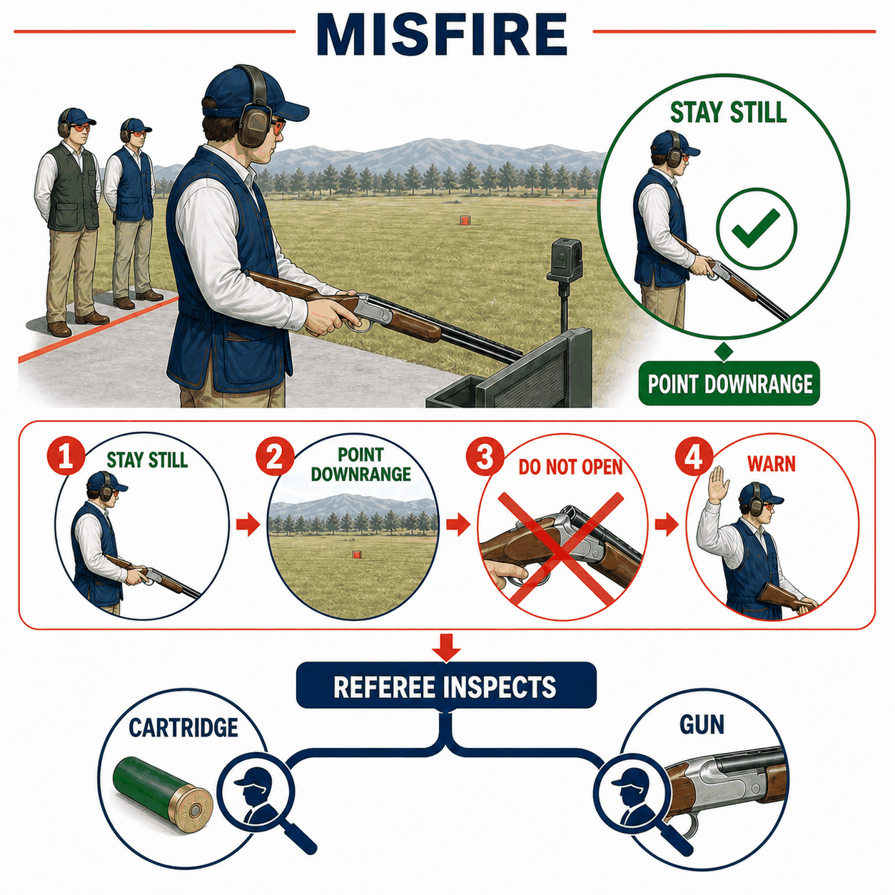
The cause is investigated after the situation has been made safe. For a beginner, there's just one immediate response: stay still, point forward, don't open it, and alert someone.
A click, an odd recoil, or a jammed action can have different causes. The initial response is the same: keep the barrels pointed towards the safe zone, take your finger off the trigger, and alert someone.
You don't open it suddenly, you don't fire again, and you don't look down the barrel. The referee decides what happens with the clay, and the person in charge or a gunsmith determines what to do with the gun. If the cause isn't clear, the shotgun is withdrawn from the round.
3.7
Typical risks for beginners
When something goes wrong, it's safer to hold your direction and wait for instructions than to hunt for the cause under pressure. Many of a beginner's risks appear when they try to do too many things at once.
Why can someone who knows the rules still break them? Because attention, hands and eyes all get overloaded. The risk shows up in small steps: asking a question, closing the gun, adding a cartridge, or trying to fix something.
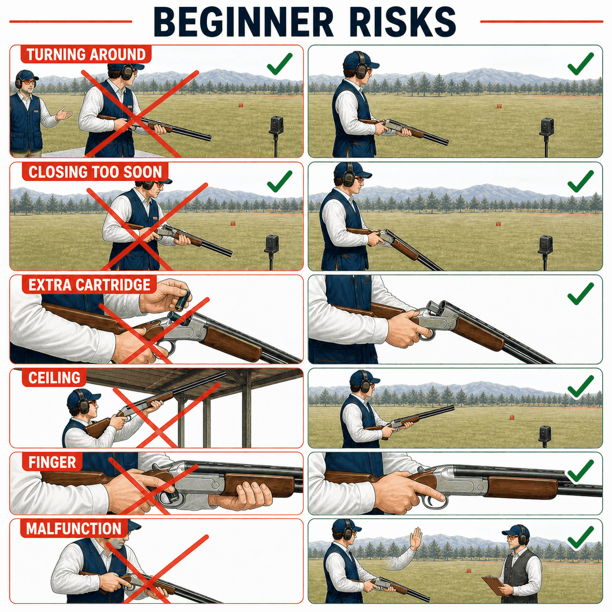
Every error has a specific barrier against it. It isn't fixed by saying “be careful”, but with a visible order: open before turning, load on your turn, watch the zone, and ask for help.
Many errors appear when switching from one action to another. A beginner might turn round to speak, close the gun too soon, or touch the trigger while lifting the gun. The routine must always be the same: barrels forward, finger off, open and check before talking or moving.
You also need to load only what's permitted, and make sure the roof, the sides or people don't come within the barrels' path. Only one voice should give safety commands; technical corrections wait until the gun is open.
3.8
Eye protection
Getting your equipment ready, knowing the commands, and listening to a single person in charge cuts down many errors before you even step onto the line. The first physical protection against fragments and particles is your eyewear.
Do tinted glasses count as protection? Only if, as well as helping you see, they're proper shatterproof eye protection. They also need to cover well and be kept undamaged.
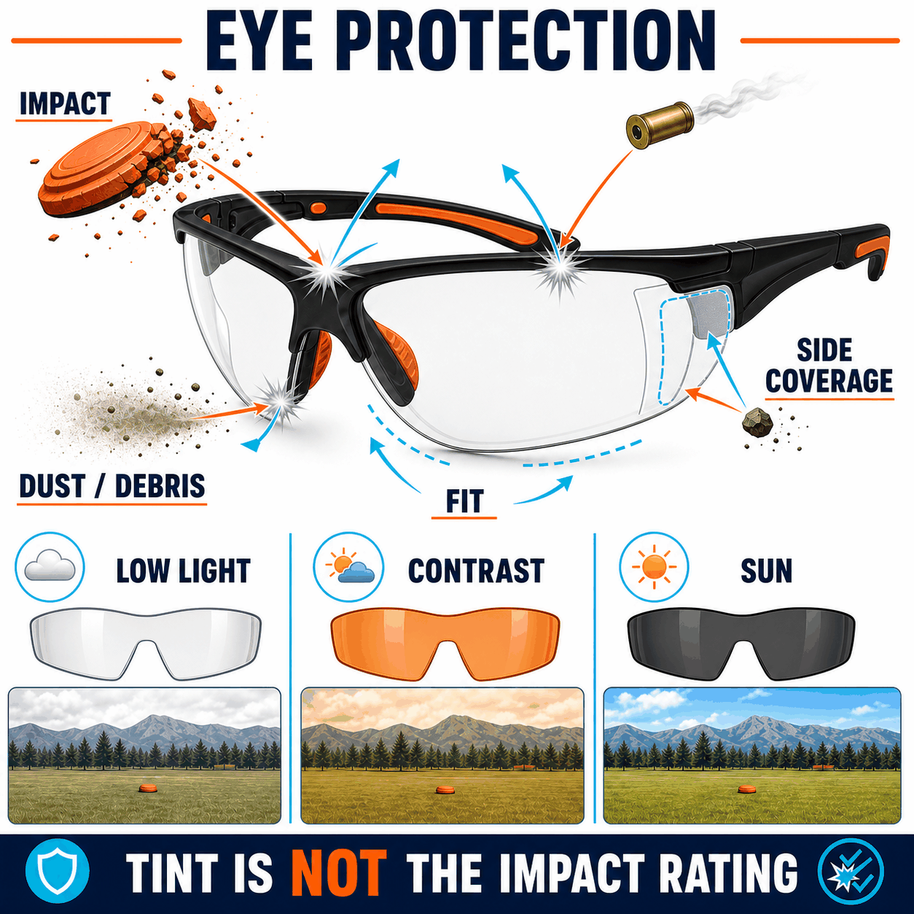
Protection depends on impact resistance, coverage and fit. The tint changes how you perceive the background and the contrast, but on its own it isn't an impact rating.
On the ground, fragments, dust or cartridge cases can reach the eye. That's why you need impact-resistant glasses with good coverage and fit. Ordinary sunglasses aren't shooting protection.
The lens colour can improve contrast, but there's no single tint that's perfect for every background. Protective eyewear must allow side vision, stay in place during the gun mount, and be compatible with your ear protection. A damaged lens should be replaced.
3.9
Hearing protection
Glasses need to protect well, fit the face, and be comfortable with the rest of your equipment; the lens colour matters less. The ground also produces very loud noise, so good hearing protection is needed too.
Why protect yourself before the first shot, if a round doesn't take long? Because a gunshot is impulsive noise. It can cause immediate damage, and it adds up with every exposure after that.
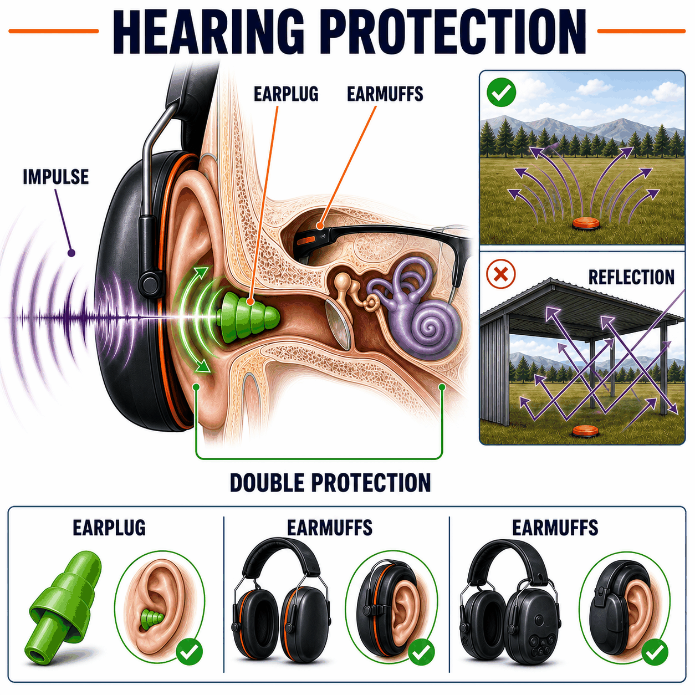
Earplugs and earmuffs only work if they fit properly. The cups reflect part of the acoustic energy, and thick glasses arms can break the seal of the earmuffs.
A shot produces impulsive noise capable of causing immediate damage. Protection goes on before entering the active zone. Don't wait for the first shot to find out whether the noise bothers you.
Earplugs depend on being inserted correctly. Earmuffs can lose their seal because of glasses, hair or a cap. For impulsive noise, double protection may be recommended. Even so, the shooter still needs to be able to hear the referee's commands.
Earplugs and earmuffs each have different advantages. Earplugs depend a lot on size and how they're inserted. Earmuffs are easy to check at a glance, but a thick pair of glasses arms, hair or a cap can break the seal. Level-dependent electronic systems let you hear conversation while limiting loud sounds. They shouldn't be confused with consumer headphones with no protective rating. NIOSH recommends double protection, earmuffs over earplugs, for impulsive noise. It also notes that real-world fit can perform worse than the figure on the packaging.
3.10
Body safety
A single exposure can damage your hearing, and the damage can build up without us noticing it at the time. As well as protecting eyes and ears, we need to position our body correctly to shoot safely and control recoil.
When does pain stop being a technical nuisance and become a safety warning? When it changes your gun mount, your balance, your attention, or your ability to control the gun.
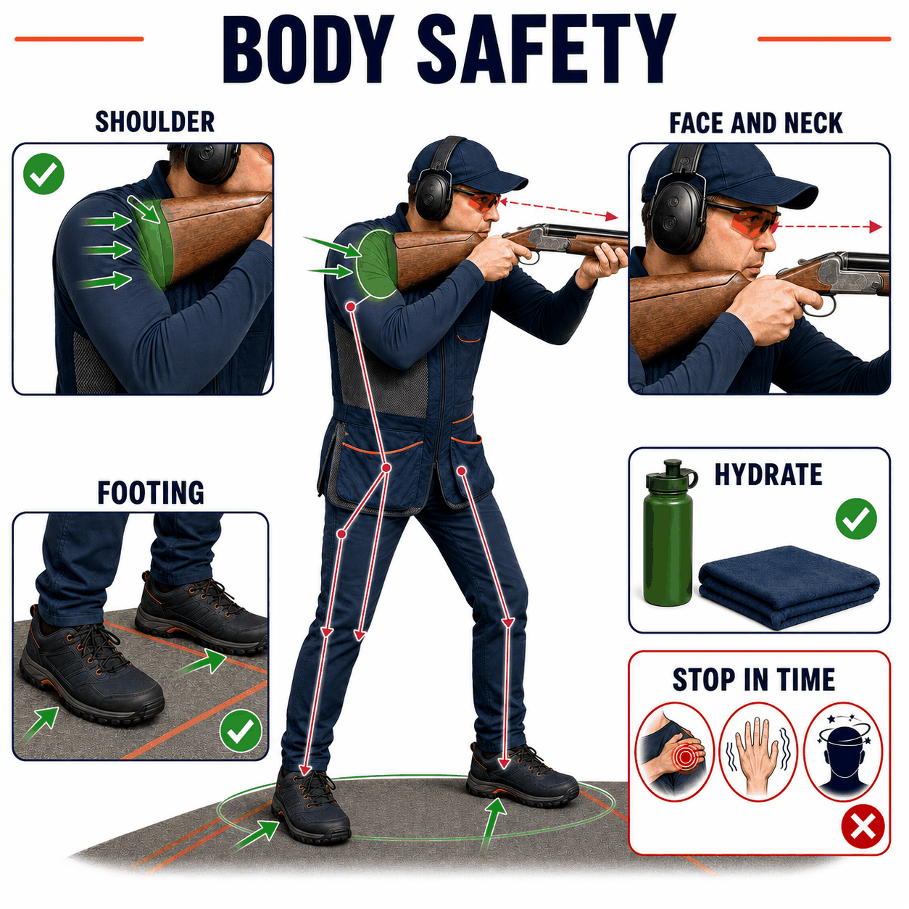
The stock transmits recoil to the body. A stable, repeatable mount spreads the load. Pain, shaking, dizziness or loss of control are all reasons to stop the session.
The recoil pad needs to sit firmly and repeatably against the shoulder. If the stock forces you to stretch your neck, or strikes your cheek, there may be a technique or fit problem. It's checked with an instructor, and always with the gun open and unloaded.
Sturdy footwear, staying hydrated, suitable clothing and breaks all help you keep control. Pain, dizziness, shaking or losing focus are reasons to stop. There's no number of rounds that's safe for everyone.
3.11
Beginners and supervision
A stable stance protects the shoulder and the face, and helps you keep your balance without clamping the shotgun rigidly against the body. A beginner should learn this positioning with a qualified person supervising them.
When does someone know enough to train alone? Not when they can recite the rules. They know it when they carry them out consistently, recognise their own limits, and follow the club's specific procedure without help.
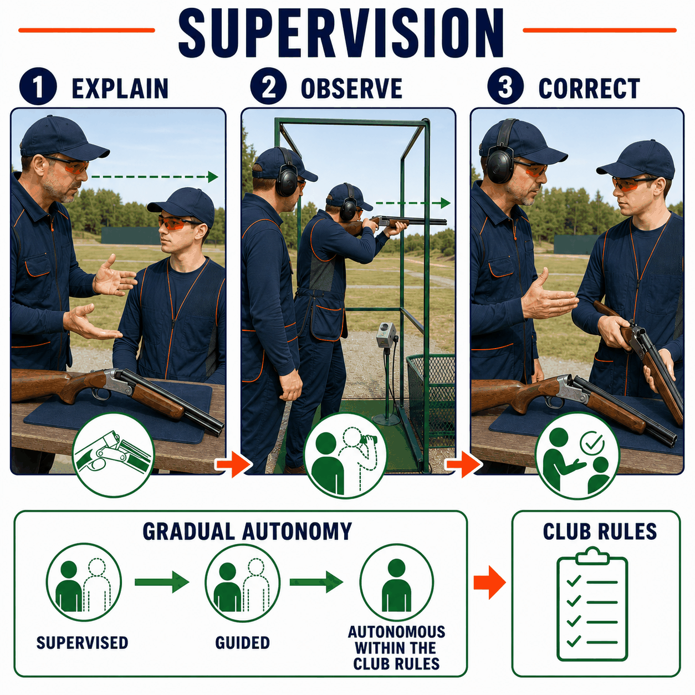
Supervision isn't about shooting for the student. It explains beforehand, observes from a safe position, and corrects afterwards with the gun open. Independence is earned through actions, not rushed into.
Reading the rules isn't enough. On the ground there's noise, turns and the unexpected. An instructor can see if the muzzle drifts off line, if a finger goes to the trigger too soon, or if the gun is opened badly.
Corrections are explained before loading, or afterwards, with the shotgun open and empty. There's no number of clays that grants independence. Independence comes when the safe sequence is maintained without help, including when there's a stop command or an incident.
3.12
Safety in the simulator
Good supervision isn't just watching: it simplifies the tasks, controls the ammunition, and stops the action when a doubt appears. The simulator can reinforce these ideas, but it also needs to be used responsibly.
Can a screen teach real safety? It can organise concepts and questions. But it can't certify handling, assess a gun, or grant authorisation to use it.
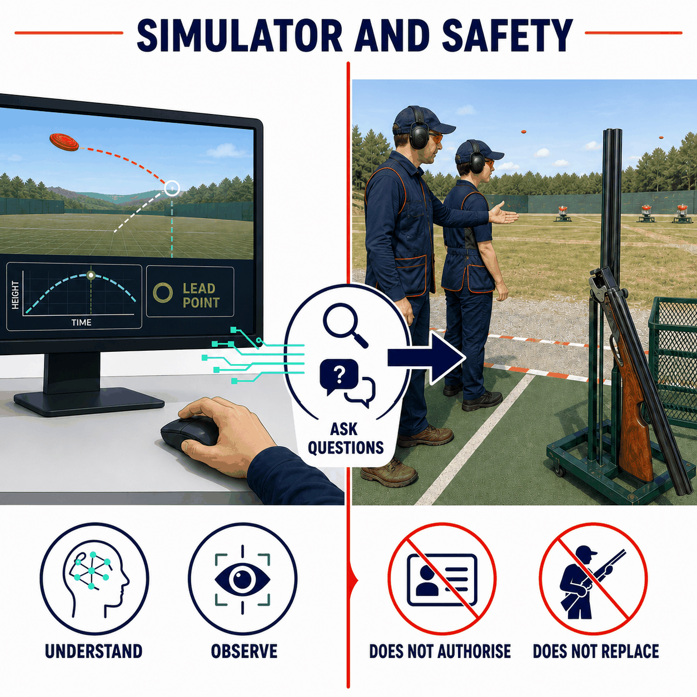
What transfers from the screen is understanding, observation and questions. Safe handling, authorisation and assessment belong to real-world training and the ground.
Plato helps you understand trajectories and decisions. It doesn't reproduce weight, closing the action, recoil, noise, people around you, or unexpected commands. Hitting the target in the simulator doesn't prove someone knows how to handle a shotgun.
In Spain, owning and using guns requires the relevant authorisations and a permitted facility. The app doesn't issue licences, and it doesn't replace the tests or in-person training. It's there to help you bring better questions to your instructor, not to practise real handling at home.
What we have learned
The muzzle stays pointed in a safe direction, and the shotgun stays open outside your turn.
Before firing, you load and close the gun pointing forward. Afterwards, you open it, empty it, and only then turn round.
If something goes wrong, hold your position and alert the person in charge.
Protection, attention and supervision are all compulsory. The simulator doesn't replace any of them.
Expert reading. Safety works through visible states and multiple barriers. If the rule, the gun or the local procedure raises a doubt, it's clarified before loading.
Chapter 04
What a shooting ground is like, and how a round unfolds
A clay target shooting ground brings together access points, stations, machines, waiting areas and people with different roles. Understanding that order helps you settle in calmly, and know when to wait, shoot or change station. This chapter explains how a round works, and what can vary depending on the discipline or the club. The measurements and procedures cited correspond to sources checked on 2 August 2026.
4.1
Overview of a shooting ground
Safety sets limits that will be present throughout this book, and no technique can override them. Now we'll walk through the shooting ground, get to know its zones, and see how a group completes a round.
The ground is easier to understand starting from the entrance: reception, waiting area, stations, trap house and flight zone. Each zone has a function and limits.
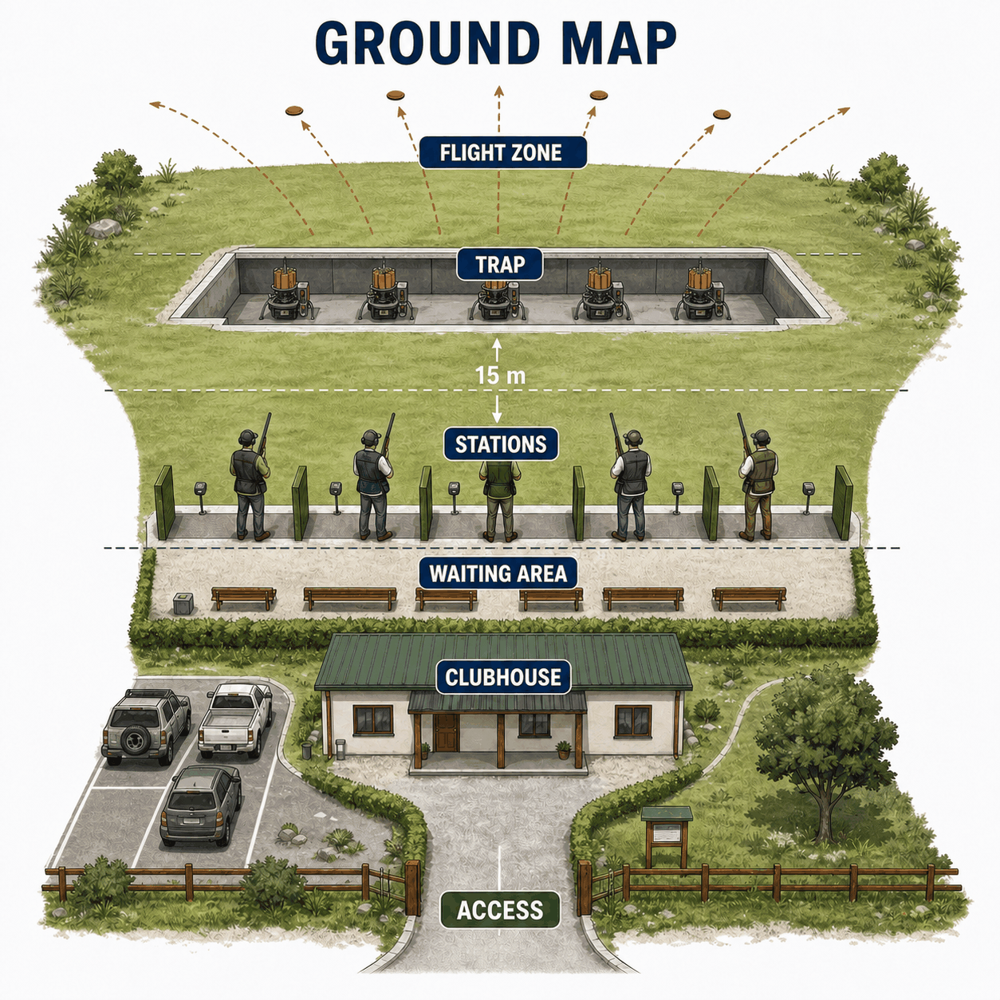
It helps to read the ground from back to front. The public zone ends before the shooting line. From there on, a space controlled by the person in charge of the ground takes over.
The public zone includes the entrance and the office. Next comes the waiting area, where the assigned ground is confirmed. The shooting line is reserved for shooters, the referee and authorised staff. Ahead of that are the trap house, the flight zone and the pellet fall zone. Nobody enters those zones while the ground is in use.
The Weapons Regulation requires the facility to have a safety zone. Spectators must stay behind the shooters, and the machines must be protected. Each ground applies these rules through its own site plan, signage and access control.
Services vary from club to club. There may be a gun shop, an instructor, a café or gun hire, but none of these are compulsory. On an actual visit, the booking and staff instructions take priority.
4.2
Several layouts at the same facility
A layout includes zones for moving around, waiting, shooting and receiving falling clays; it isn't just a shooting line. When there are several layouts, their sectors must be coordinated and must not overlap.
A facility can have several layouts. Each one has its own schedule, discipline, group and person in charge.
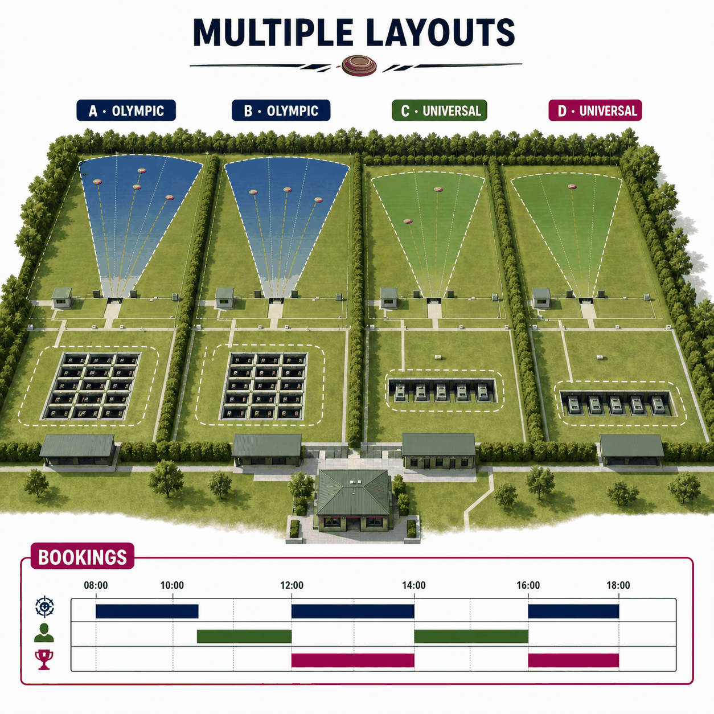
Sharing a facility doesn't mean sharing a time slot. Identifying the layout and time avoids joining the wrong group or discipline.
Layouts are usually identified with letters or numbers. This reference is used to organise bookings, results and access. It also stops the flight paths of nearby layouts interfering with each other.
Several disciplines can coexist within the same facility. Olympic Trap uses fifteen machines and Universal Trench uses five. Both have five stations, but their clay programmes are different. Before entering, you need to confirm the layout and discipline.
To begin with, it helps to treat each layout as an independent room: you enter at the assigned place, time and group. Two similar lines can use different rules and schemes.
4.3
Parts of a trap shooting ground
In a shared facility, you must respect the limits and instructions of each layout, even if one seems to be idle. In a trap layout, the setup is divided into stations, trap house, machines and fall zone.
Five stations form a straight line. The trap house is 15 m ahead, and the flight sector continues beyond it.
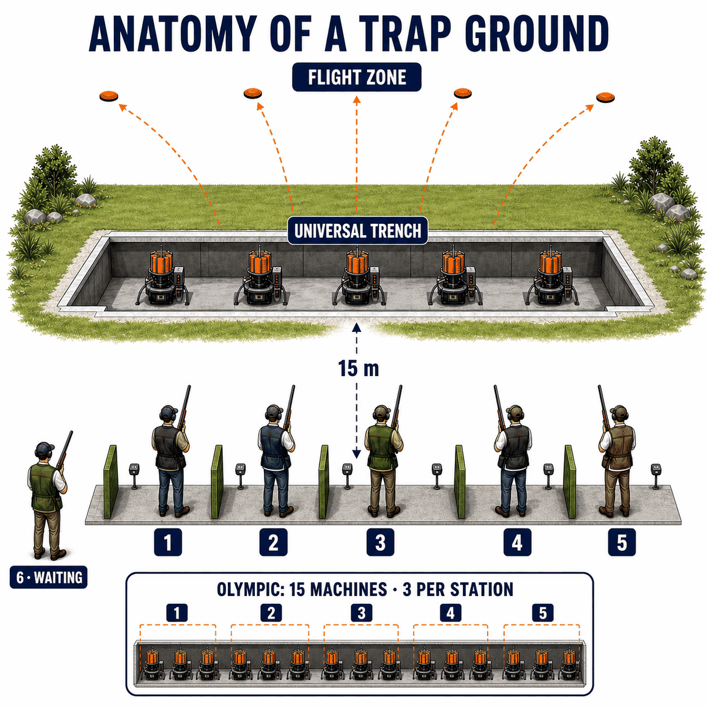
Universal Trench: waiting area behind, five stations in line, 15 m to the trap house, five machines aligned inside and the flight sector beyond. Olympic Trap keeps five stations, but uses fifteen machines grouped in threes.
The five stations are numbered from left to right and form a single line. The trap house is 15 m ahead of that line. The waiting area is behind the shooters, never between the stations and the trap house.
In Universal Trench there are five machines aligned inside the trap house, one facing each part of the shooting line. The trap house is protected and partly underground. The clays come out from beneath its cover and continue towards the ground.
Beyond the trap house is the flight sector. It shouldn't be confused with the whole safety zone of the ground. The regulations limit valid flight paths, and the Weapons Regulation protects a larger space around the facility.
In Olympic Trap there are also five stations in line, but the trap house contains fifteen machines: three per station. This difference changes where the clays originate and shouldn't be hidden in a generic diagram.
The same flight path looks different from each station. A clay may look like a side angle from station 1 and almost head-on from station 3. It's the shooter's position that changes, not the clay's flight.
The basic idea is easy to remember: waiting behind, five stations in line, trap house ahead and flight beyond. The infographic explains spatial relationships, but it doesn't replace the approved plan of an actual ground.
4.4
Group organisation
Knowing each part helps you understand the distances, the lines and the responsibilities, even when the machines are hidden beneath the trap house. This space is also where the group of shooters needs to organise itself.
A typical squad brings together up to six shooters. Five occupy the stations and the sixth waits behind the first. One person alone must direct the sequence.
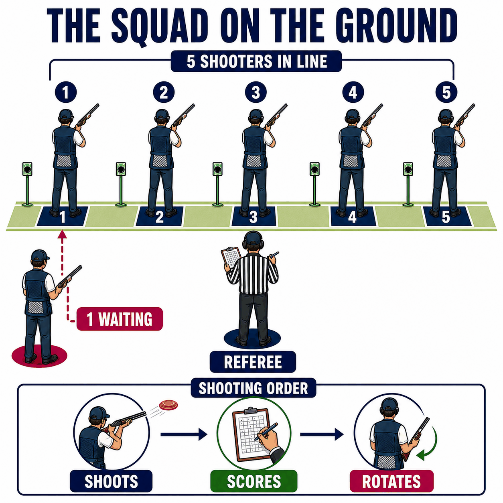
Before starting, each person needs to know three things: their number in the squad, their starting station, and who resolves an issue.
The best-known arrangement brings together six people: five on the line and one waiting. There can also be smaller groups, especially in teaching or training.
In competition, the referee is in charge. In practice, the person appointed by the club is in charge. They start the round, resolve questions and can stop it. The coach teaches, but several voices at once only create confusion.
In some unofficial competitions, the shooters themselves help with refereeing. This is a local practice, not a universal rule. One person can call the scores and two others can record them separately. The double record makes it possible to compare results if a doubt arises. The organisers decide who carries out these roles and how an error is corrected.
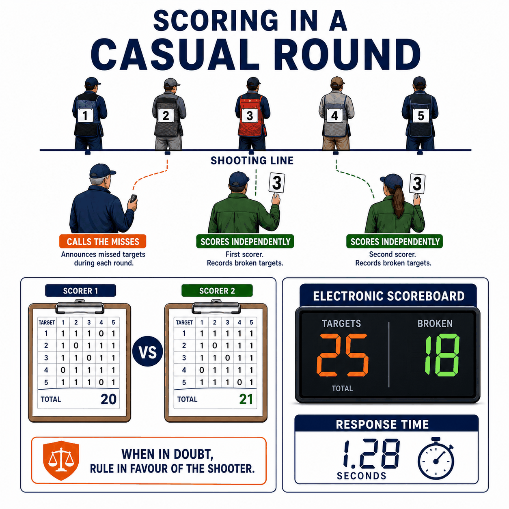
The double record helps to spot differences. The organisers and the rules of the round determine how these are resolved.
The best-equipped grounds may use electronic scoreboards. These show the score and, in some cases, the shot time. This information helps the referee and the shooter, but it doesn't replace a ruling under the regulations when there's an incident.
The group works like a wheel: five active positions and one waiting. Each clay belongs to one shooter, but the pace depends on everyone.
4.5
Rotation between stations
The group must keep to an order: each person has a turn, a station and duties that the others can see. The rotation keeps that order while the shooter's point of view changes.
The rotation moves from station 1 to 5. Then you go back behind to the waiting position at station 1. You never cross in front.
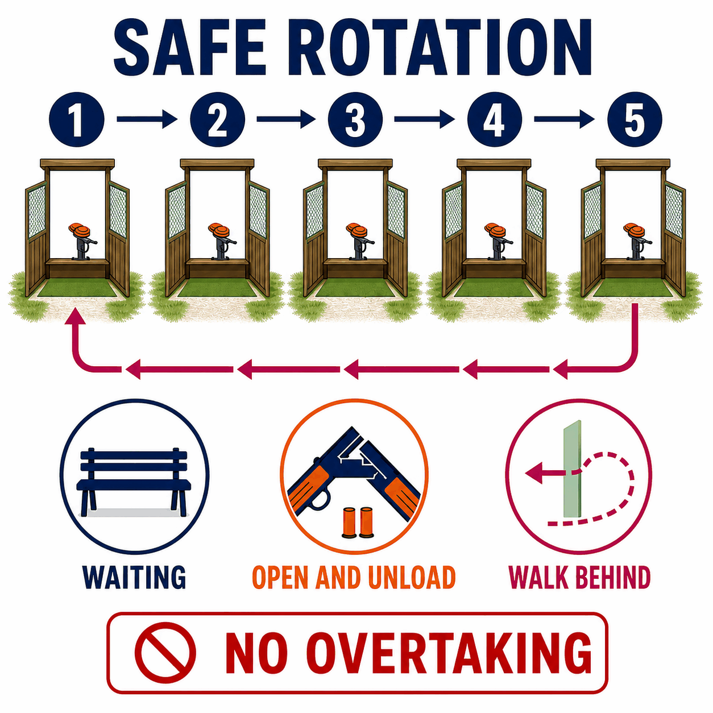
The return route stays behind the line. Before moving, pay attention to the previous result, the safe state of the gun, and the signal from the person in charge.
The rotation lets you shoot from five different viewpoints. From station 1 you move to 2, and so on up to 5. From there you return behind, without crossing active stations or passing in front of the trap house.
The shooter waits their turn to move forward. On leaving station 5, they carry the gun open and unloaded. If the person in charge calls a halt, the whole rotation stops.
The common mistake is moving because the next station looks free. The right signal isn't “there's room”, but “it's my turn to move forward”.
In a full squad, the shooters start out spread across the stations. The referee and the scoresheet set the order. Saying everyone starts at station 1 is only useful for explaining an individual exercise.
The correct rotation ends up becoming automatic: wait, open, unload and move along the set route. Fluency comes with practice.
4.6
Number of clays and shots
Rotating isn't simply walking around the ground: you need to carry the gun in a safe state and respect the turn at the new position. The number of clays and shots sets the pace and the limit of the round.
A typical official round contains 25 clays. Clay, shot and cartridge are different quantities.
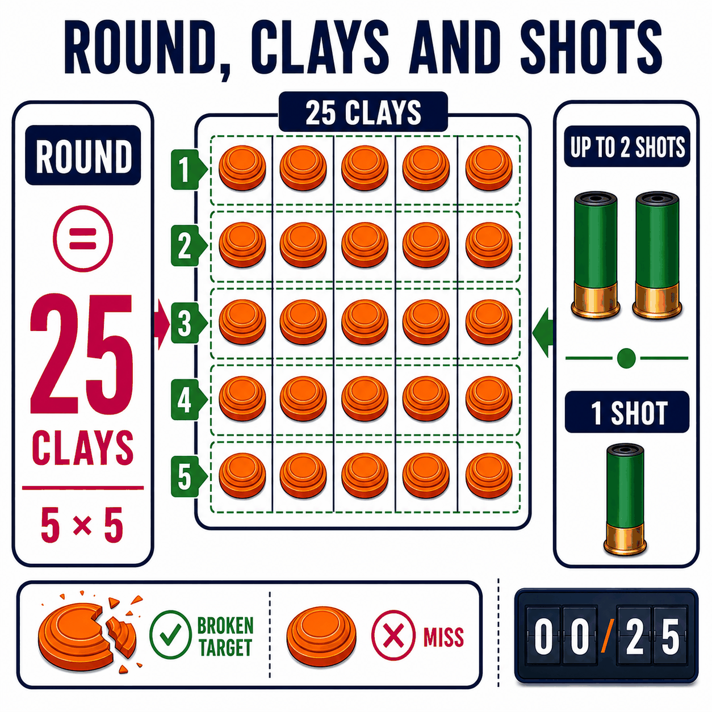
The scoring unit is the clay presented. It can be resolved with the first shot, with the second when that's allowed, or be lost.
In ISSF Trap and Universal Trench, a round consists of 25 targets. Each shooter receives five from each station. The distribution of flight paths changes depending on the discipline.
In the ordinary rounds, up to two shots at a clay are allowed. If it's broken with the first, there's no second shot. In the finals and final tie-breaks of ISSF Trap, only one is allowed. That's why 25 clays doesn't always mean 25 cartridges.
Each clay earns one result: hit or lost. Breaking it with the second shot still counts as a hit when that shot is allowed. The scoreboard doesn't add a point per shot.
A training session can use fewer clays or repeat a flight path. It shouldn't be compared without explanation to an official round. For learning, it's sometimes better to shoot less and review each attempt.
4.7
How to call for a target
The round organises cartridge use, scoring and second-shot options according to the discipline. Each attempt begins when the shooter calls for the target and the release mechanism is activated.
The call activates the release system. The call must be short and clear.
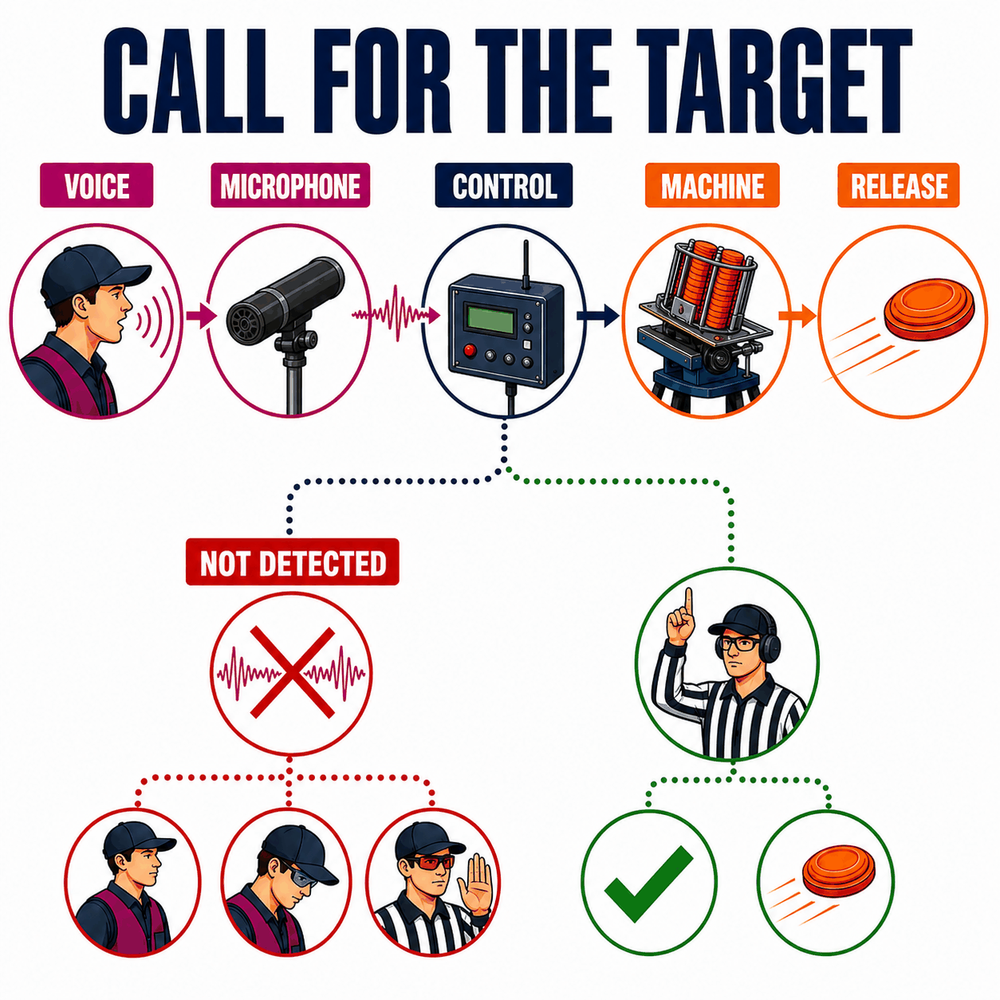
The call must be short and recognisable. If the system doesn't respond, the referee or person in charge decides. The shooter doesn't decide on their own.
When it's their turn, the shooter gets ready and uses a call that activates the system: pull, go, “los” or another one accepted by the organisers. What matters is that it's clear, short and consistent. It helps to keep a similar duration, volume and tone for each clay.
The release can be activated with a button or with microphones. The voice system listens for the call and orders the clay to be released. It doesn't recognise a word the way a voice assistant does: it responds to the sound. That's why a particular voice may not trigger a microphone well even when others do.
If the system doesn't detect a call, the shooter keeps the gun under control and waits. They don't call several times in a row or decide on their own. Under the referee's direction, they can try a small change in vowel sound or tone so the microphone picks up the call better. The Canterbury manual also notes that some voices need a slight adjustment.
Before the first round of each day, FITASC allows a test of the gun, or fogueo. It's done one shooter at a time, at their station, following the squad order and only when the referee gives the order. The barrels point towards the ground and above the trap house, within the safe zone.
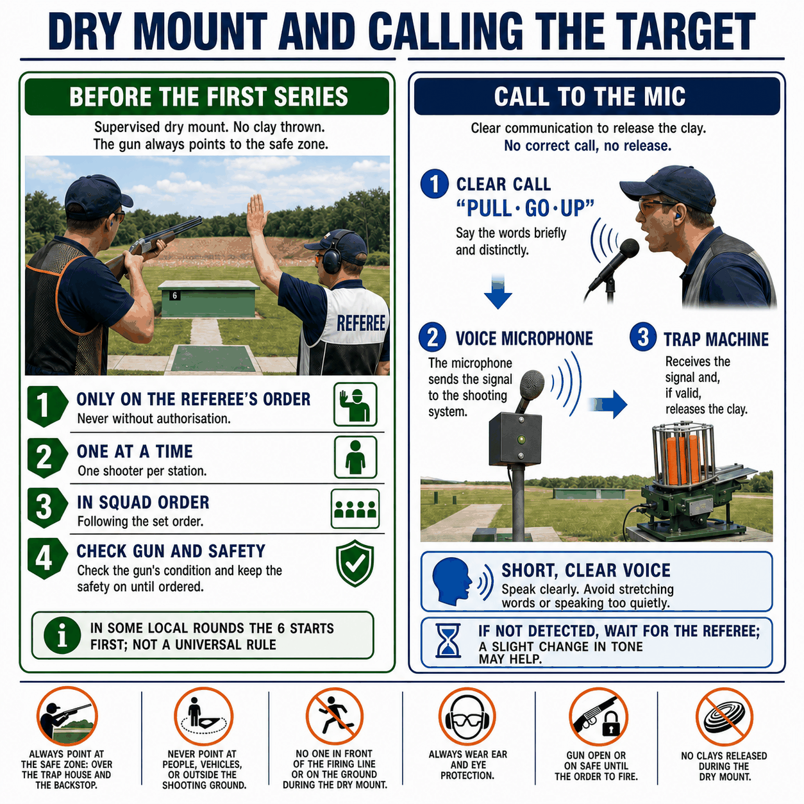
The warm-up is carried out one at a time and in the order set by the referee. The call must be short and clear; if the microphone doesn't respond, wait for instructions from the person in charge.
This test stops the first scoring shot arriving completely cold. It also lets you check the sequence of gun mount, safety and shot before calling for the first target. It doesn't replace checking the state of the gun before each turn.
At some grounds it's customary to start that warm-up with the sixth shooter, or whoever is waiting. This is a local arrangement. It shouldn't be presented as a universal rule: the valid order is whatever the referee indicates according to the regulations and how the ground operates.
The simulator represents the call, a delay and the flight. It doesn't reproduce the acoustics, the microphone or the faults of an actual ground.
4.8
Valid clay, broken clay and no-bird
Calling for the target is a clear command that should trigger the release under the expected conditions. From that moment, the referee and the regulations decide whether the target is valid, broken or void.
“Broken” can mean that the clay came out faulty or that it was hit. The moment it breaks changes the ruling.
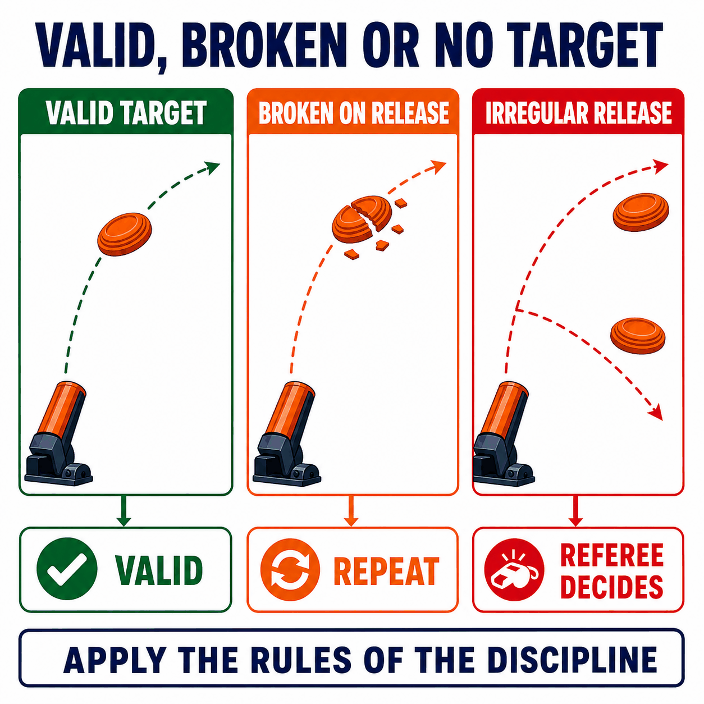
The decisive observation isn't “I saw dust”. What matters is the state of the target and whether a visible piece came off, as defined by the regulations.
A valid clay comes out whole and follows the expected flight path. If the shot knocks off a visible fragment, it counts as a hit. A cloud of dust without a fragment isn't enough. The decision belongs to the referee.
If the clay comes out already broken, it's declared void and repeated according to the discipline. ISSF uses “no target” and FITASC uses “no bird”. It doesn't count as a miss even if the shooter has fired.
It can also be voided for an irregular flight path, a release from the wrong group, or two clays released together when only one should have come out. The exact causes vary between regulations.
To avoid confusion, it helps to say “hit by the shot” or “broken on release”. If there's any doubt, listen for the ruling and carry on. The explanation can wait for the break.
4.9
Deliberate repetition during training
Not every clay we see counts, and not every break is credited to the shooter; it depends on how it came out and what happened afterwards. In training, a clay can be repeated for a different purpose, as long as it's recorded as a repeat.
Repeating during training is useful for comparing attempts. Everything stays the same and only one thing changes.
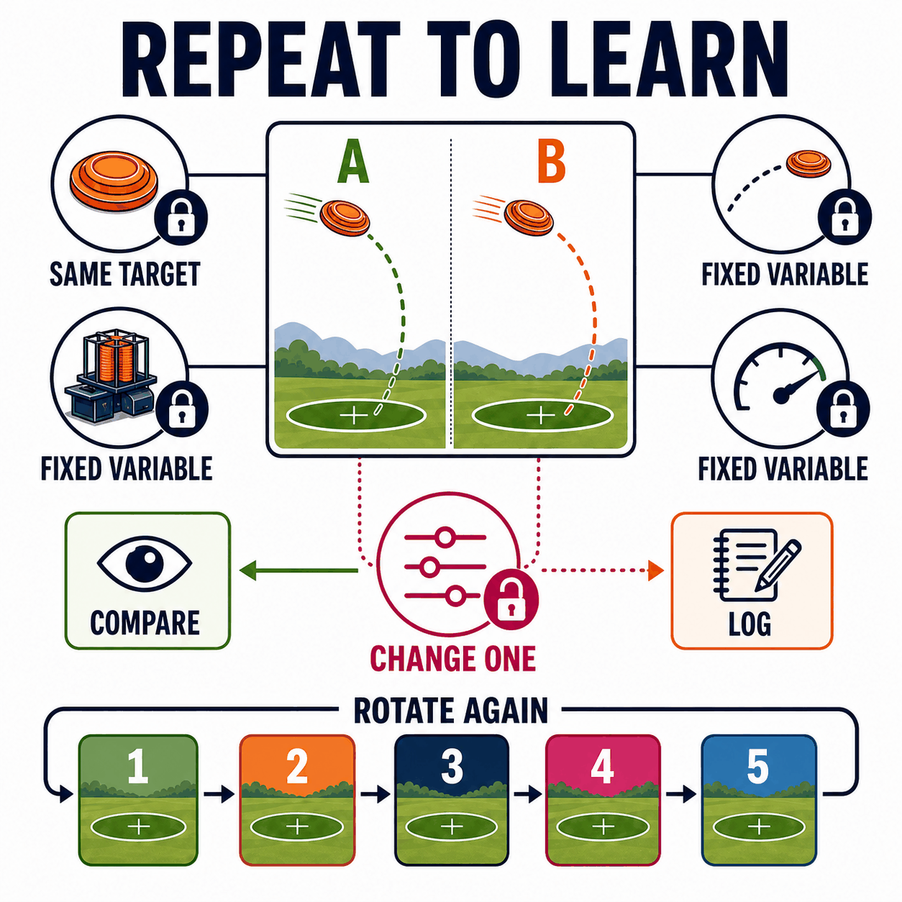
A deliberate repeat is useful when it answers a specific question. Afterwards, the shooter should return to the normal variety of the five stations.
A regulation repeat happens when the referee declares a clay void. A training repeat is different: the coach and the shooter agree to watch a flight path again to study a problem.
It helps to ask a simple question, such as “am I starting the movement late?”. The station, machine and preparation stay the same. Then a single decision is changed. If everything is changed at once, the result teaches you little.
Only the person in charge can authorise this practice. You don't enter the trap house, you don't touch the thrower, and you don't interrupt another squad.
The simulator's “Repeat target” function keeps the previous target without adding a clay or changing station. It's useful for comparing perception and timing, but it doesn't reproduce all the conditions of an actual ground.
4.10
Day-to-day running of the club
Repeating to learn keeps the same parameters and allows decisions to be compared, while a regulation repeat responds to specific causes. Both must respect the turns and the club's safety rules.
Before shooting, you need to confirm documentation, payment, turn and ground. The specific system depends on each club.
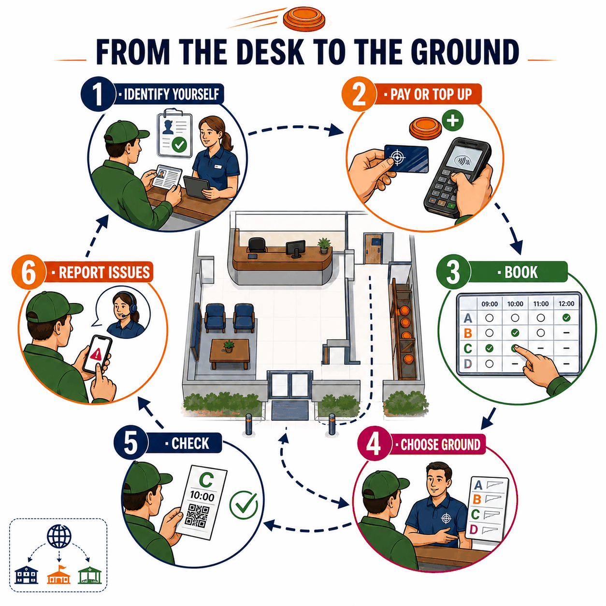
This is a common process, not a universal rule. The documentation, payment method and booking depend on the club, the discipline and the type of user.
The club may ask for identification, a licence and other documentation. It also checks whether the person is a member or a visitor, charges for the service and assigns a time slot. These tasks vary depending on the facility.
Some clubs use prepaid cards. These are inserted into a reader and deduct a round or the clays thrown. The card may be personal and won't necessarily work at another ground. If the facility offers several disciplines, it's easy to accidentally activate the wrong layout or programme. Before inserting the card, check the discipline, layout, price and balance.
Staff load clays, check microphones, maintain the machines and organise the turns. A fault is reported to the person in charge. The user never enters the trap house or handles the system.
4.11
Behaviour and etiquette
Bookings, maintenance, the people in charge and the internal rules make each round possible before the first target is called for. All this work needs respect and good manners, both on and off the line.
Good manners protect concentration and safety. Silence, order and a clear authority keep the round moving at a steady pace.
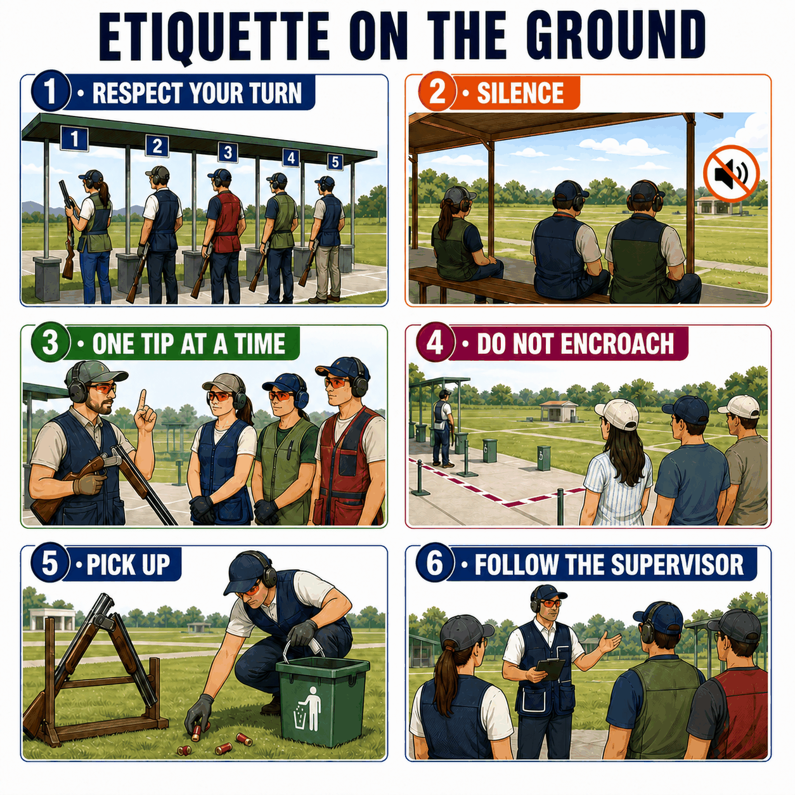
Local rules spell out the details of good manners. The shared principle is not to introduce people, noise, movement or instructions that disrupt an action in progress.
Talking behind a station, crossing a boundary, or giving advice during preparation can distract the shooter and mask a call. Technical help should wait for the break.
With an over-and-under shotgun, it helps to open the gun in a controlled way. With the barrels pointing towards a safe area, the free hand can hold the ejected cases so they don't fly off. They're then placed carefully in the container provided. They shouldn't be thrown down hard. On grounds with acoustic activation, a case hitting a metal bucket can end up triggering the next shooter's clay. This precaution depends on the equipment and local rules.
FITASC requires the use of case containers where they're available. Material isn't collected between active shooters or during a halt. Visitors stay outside the shooting area, and everyone follows the instructions of the person in charge.
During learning, it helps to listen to a single instruction. The coach corrects the technique and the referee decides the result, when the roles are kept separate.
What we have learned
A ground separates access, waiting, shooting line, trap house and safety zone. The five stations are 15 m from the trap house. Universal Trench uses five machines and Olympic Trap fifteen. The squad rotates in order, and a sixth person waits behind station 1.
A typical round has 25 clays. Before starting, card, discipline, ground and turn are confirmed. During the round, the person in charge is respected, the target is called for clearly, and the gun and cases are handled with control. The regulations set the framework, and each club organises its day-to-day application.
Chapter 05
Shotguns, stocks, chokes, cartridges and kit
Choosing equipment for clay target shooting isn't about buying the most expensive shotgun, the tightest choke and the fastest cartridge. It's about making the person, the discipline, the gun, the ammunition and the ground work together. If one piece doesn't fit, the beginner ends up adapting their body to the tool. If the piece is well understood, the technique shows through more clearly and the equipment doesn't hide the problem.
This chapter was reviewed on 2 August 2026. It explains international rules and documents available as of that date. Even so, it doesn't replace the gun's manual, the competition regulations, the club's rules or the work of a qualified gunsmith.
5.1
Main types of shotgun
We now know how the ground is organised, how the group rotates, and what happens from calling for the target to the end of the action. Now we'll get to know the equipment, always linked to the environment and the person using it.
To start with, it helps to separate two ideas that often get mixed up. One is the mechanism: how the gun opens, loads and fires. It can be a break-action with two over-and-under barrels, a break-action with side-by-side barrels, or a semi-automatic with a single barrel. The other idea is the use and the set-up: hunting, sporting, trap or another discipline. An over-and-under can be a hunting gun or a competition gun. There are also semi-automatics built for clays. That's why the outward shape isn't enough to tell whether a gun suits a person.
The over-and-under shows the chambers when it opens. The chamber is the housing the cartridge goes into. It also allows two different barrels and two different chokes, with no magazine. The semi-automatic reloads after each shot by gas or by inertia, and can make the recoil feel less pronounced. In exchange, it requires you to check the chamber, the receiver and the magazine. The side-by-side places the two tubes horizontally and remains very present in hunting and traditional gunmaking. FITASC allows all actions in Universal Trench except slide (pump) actions, including semi-automatics, provided their ejection doesn't disturb others. That rule is a reminder that “common” and “permitted” don't mean the same thing.
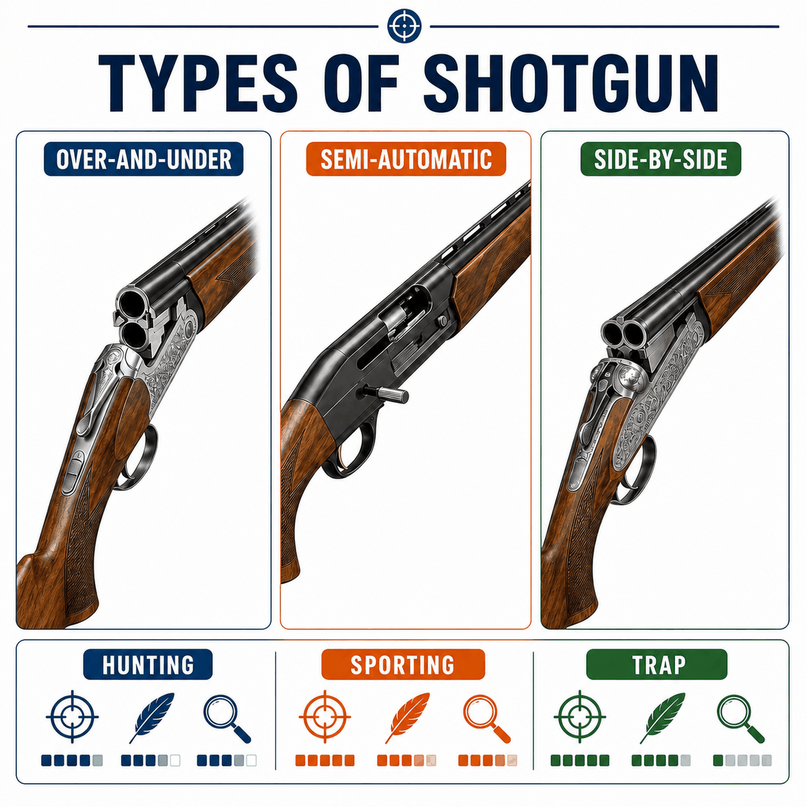
Three mechanisms, six questions: visibility of the state, second shot, ejection, balance, adjustment, and the discipline's rules.
In practice, the choice starts with the use. Trap looks for stability, a repeatable gun mount and an image designed for clays moving away. Sporting requires you to deal with varied releases, heights and directions. A light field shotgun can be comfortable to carry and quick to move. But, if everything else is equal, less weight also increases the speed of free recoil. A competition gun tends to add weight, locking mechanisms built for heavy use, balance options and more specialised stocks. These are design trends, not guarantees that a specific shotgun will fit.
Before comparing models, you need to set a minimum baseline: calibre and chamber compatible with the discipline, a known mechanism, a completed inspection, and safe practice opening and unloading it. Only after that does it make sense to compare impressions. A gun that breaks more clays in five attempts may just have had easier flight paths. A gun that allows twenty identical gun mounts gives a more useful clue for learning.
5.2
Over-and-under shotgun
There's no single clay shotgun: each mechanism changes the loading, the balance and the way the second shot is taken. We'll start with the over-and-under, because it lets you clearly see the state of its two barrels.
In an over-and-under, the two barrels sit one above the other and pivot on the action, which is the central part of the gun. When you move the top lever, the barrels swing open. Then you can see both chambers and load or remove a cartridge in each. This quick check explains part of its use on the ground: open and empty, it shows its state to the shooter, the referee and the other squad members. Even so, it must always be checked, keeping the gun pointed in a safe direction.
The two shots can use barrels with different chokes. The choke is the narrowing at the muzzle, or a tube that does that job. A selector, if there is one, decides which barrel fires first. The exact set-up is in the manual. When you open the gun, the extractors lift the cases so they can be removed by hand. Automatic ejectors can throw them clear if they've been fired. Some models let you disable or change that function, but it shouldn't be assumed. The practical advantage is being able to control two cartridges and two chambers. The cost is taking the recoil without the cycling of a semi-automatic, and looking after the lubrication and wear of the moving parts.
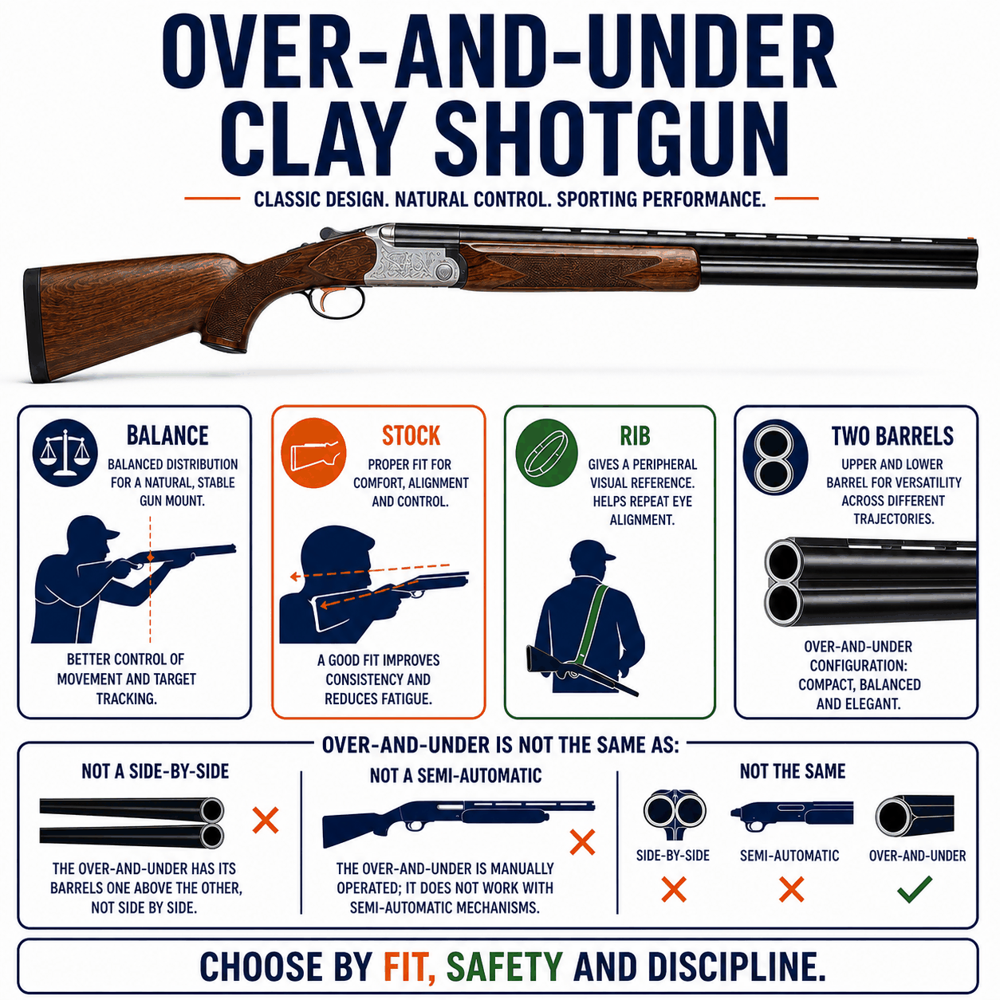
The break action makes the sequence visible: two chambers, two barrels, and an open state that others can recognise.
For a beginner, “two barrels” doesn't always mean “two triggers”. Many modern over-and-unders have a single trigger and a mechanism that switches to the second barrel. Some competition guns have a removable trigger group. Even so, the so-called cassette isn't a universal part, and it doesn't appear on every model. It shouldn't be taken out on the ground as a matter of routine, either. Any disassembly is done according to the manual, with the gun unloaded and in a suitable place.
When trying out an over-and-under, it's worth looking at more than just the opening. You need to see whether the top lever moves without losing control, whether the forend gets hot or slips, whether the ejectors send the cases where they should, and whether the selector is clear beyond doubt. A new action may feel stiff. But sudden hardness, an incomplete lock-up or unusual marks call for inspection, not more force.
5.3
Semi-automatic shotgun
The over-and-under has two barrels and opens in a very visible way, which is common in many clay disciplines. Comparing it with the semi-automatic will show the difference between a sporting preference and a mechanical function.
A semi-automatic fires once each time the trigger is pulled. It uses part of the energy from the shot to extract the case, eject it, cock the mechanism and load the next cartridge. It isn't automatic: it doesn't keep firing if you hold the trigger down. The most common systems work by gas or by inertia. In both cases, several areas need checking: the chamber, the ejection port, the carrier and the tubular magazine.
Its main appeal is practical. The gun's cycle and, in some models, the damping systems can distribute the force differently and reduce the felt recoil. SAAMI notes that the action, the fit and the way the gun is held all influence that sensation, even though the physical impulse is still there. There's also a possible nuisance for others: the case is ejected sideways. FITASC allows semi-automatics in Universal Trench provided the ejection doesn't disturb other shooters, and requires cases to be picked up before leaving the station.
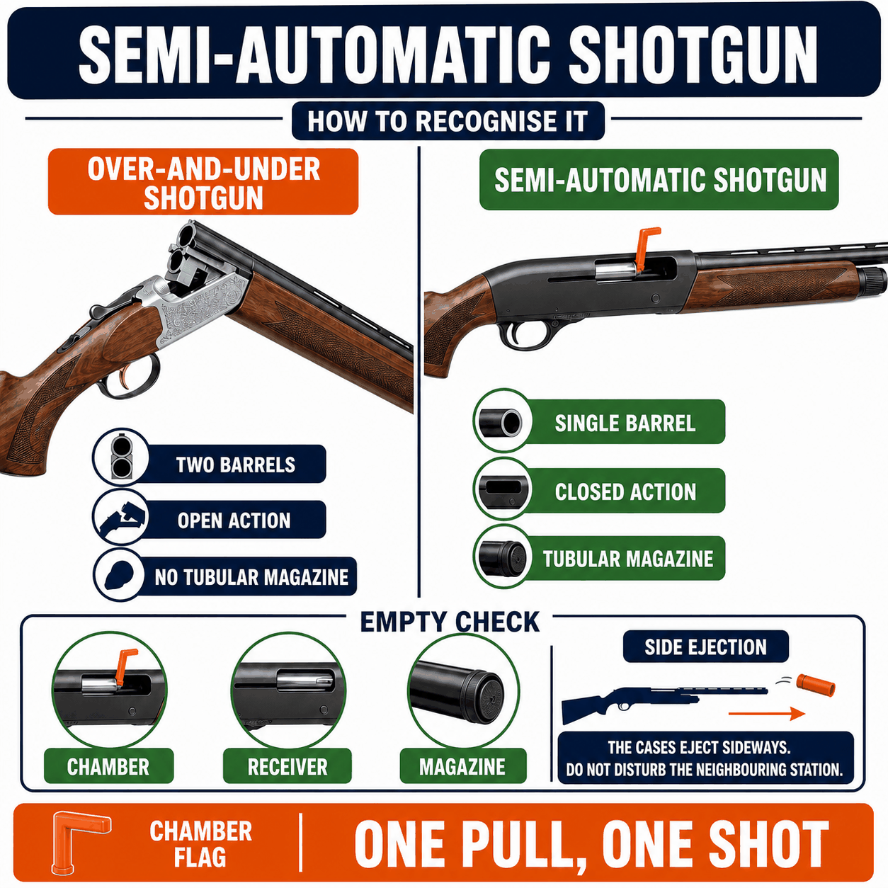
Checking a gun is empty means going through three areas: chamber, receiver and magazine; the open ejection port on its own doesn't tell the whole story.
Saying that in Spain a semi-automatic “holds three cartridges” needs context. Some hunting rules limit the magazine to two cartridges. With one in the chamber, that allows three shots without reloading. The Weapons Regulation also sets separate general limits for semi-automatic long guns. On a ground, the discipline is what governs, and only the permitted cartridges are loaded when it's your turn. A hunting rule shouldn't be turned into a universal sporting capacity.
The choice between gas and inertia isn't settled by a stock phrase, either. The gas system taps off part of those gases and feeds them to a piston. It usually needs that area cleaned and checked. The inertia system uses the relative movement of masses and has different maintenance needs and a different sensitivity to assembly. Compatibility with light loads, and unloading, are checked in the model's manual and with authorised ammunition. Cartridges are never loaded for testing outside the station.
5.4
Side-by-side shotgun
The semi-automatic makes part of the reloading easier, but requires you to know the magazine, the chamber, the bolt and the ejection. The side-by-side adds another historical and visual reference to this basic comparison.
The side-by-side is a break-action shotgun with two barrels placed horizontally. Like the over-and-under, it opens, shows the chambers, and allows two shots. What changes, though, is the picture in front of the eye, the width of the assembly, and the balance between hands, action and weight. It can have one or two triggers, extractors or ejectors, and fixed or interchangeable chokes, depending on the era and the model.
It's associated with hunting and traditional gunmaking by history, not because it's outdated. Purdey still makes side-by-sides based on an action developed in the nineteenth century, and Beretta keeps specific manuals for its 480 series. In many modern clay disciplines you see fewer of them than over-and-unders, but FITASC Universal Trench allows this mechanism. There may be fewer of them due to commercial supply, ergonomics, more specialised stocks and ribs, or competitive habit. There's no technical rule that stops you breaking a clay just because the barrels sit side by side.
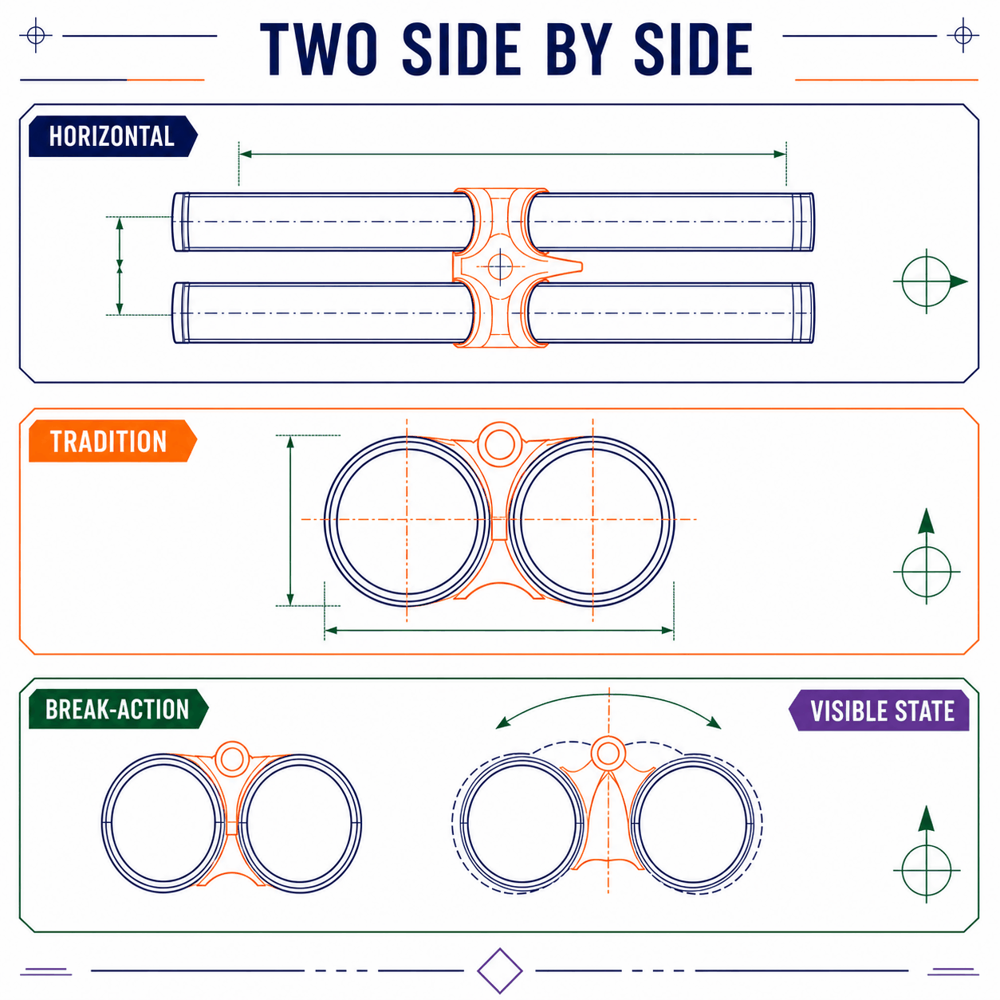
The side-by-side arrangement changes the silhouette and the distribution of mass, but keeps the same safe, readable open break-action.
An old side-by-side calls for more care, and not because of its style. Before using modern ammunition, calibre and chamber markings, locking mechanisms, welds, bores, chokes and proof testing should all be checked. “Old” doesn't mean unsafe. “Nice-looking” doesn't mean fit for use, either. Compatibility is set by the gun's identification and a professional assessment, not by a photo or a family memory.
On mounting the gun, a beginner may notice more width near the muzzle and a different grip, especially with straight or English-style stocks. You shouldn't try to centre each barrel separately. The eye lines up with the plane the gun was designed for, and the combined pattern is checked on paper. If the two barrels centre incompatibly, the fix is a technical one. It isn't changing your aim between shots.
The double trigger, if there is one, lets you choose directly which barrel fires first. A single trigger may have a selector or a fixed sequence. This difference means you need to know the model, but it doesn't change the basic rule: every check is done with the action open, the chambers visible, and following the manual.
5.5
Hunting shotguns and clay shotguns
The side-by-side keeps its usefulness and its tradition, even though today it isn't the most common choice on every ground. More important than the position of the barrels is telling apart a hunting shotgun from one set up for clays.
“For hunting” and “for clays” indicate design priorities, not closed borders. In hunting, what may matter is walking for hours, reacting to an irregular opportunity, and carrying a lighter gun. On a ground, dozens or hundreds of shots are repeated. The gun is mounted almost the same way over and over, and it's valued for keeping its balance, lock-up and comfort through intense sessions. This difference helps explain why a competition shotgun tends to be heavier, adjustable and more expensive. But it doesn't prove that a field gun can't work for starting out.
Weight shows the trade-off well. With the same ammunition, more mass reduces the speed and energy of free recoil. SAAMI notes, though, that the recoil you feel also depends on the action, the recoil pad, the length, the drop, the angle of the recoil pad — called pitch — and the way you hold the gun. More mass stabilises the movement and can smooth out the session. It can also tire small arms and make changing direction less agile. Less mass makes the gun easier to carry and bring up, but increases control errors and transmits a different impulse.
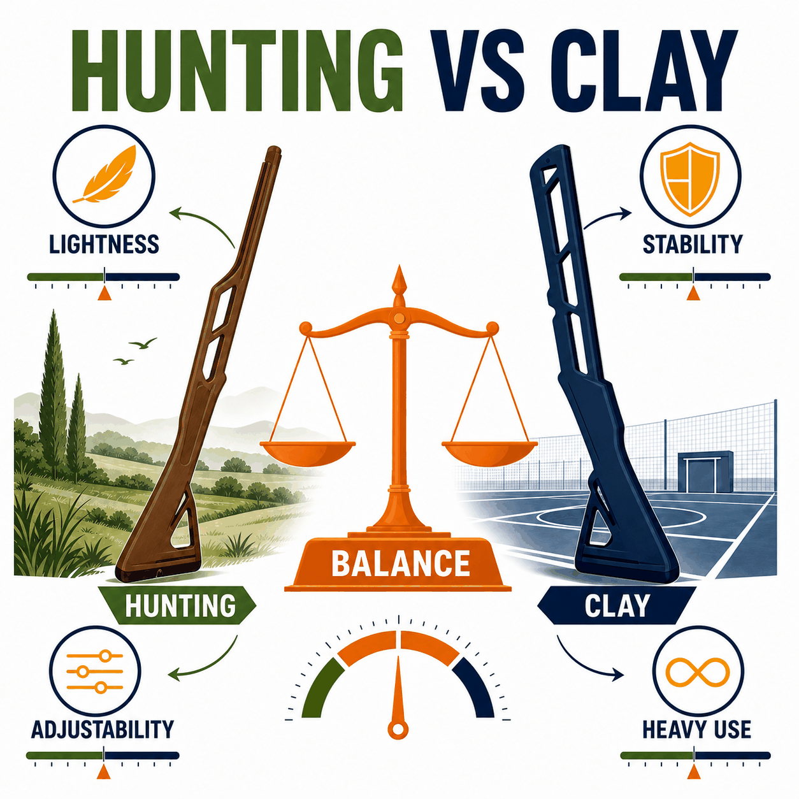
Field and ground weigh up weight, durability, fit, stability and shot volume differently.
The stock also changes the task. The stock is the part that rests against the shoulder, the face and the hand. Browning explains that the eye acts as the rear sight. It also explains that a straighter stock, with less drop, is used on trap and skeet guns for targets that tend to rise. A clay shotgun may add an adjustable comb, a raised rib, weights and long barrels. A sporting gun looks for stability without losing the ability to handle varied targets. No geometry makes up for a painful or poorly repeatable gun mount.
Cost should be looked at over the equipment's whole life. A cheap option that doesn't allow spares, adjustment or servicing can end up expensive. An over-specified competition platform can be unnecessary for someone who still doesn't know which discipline they prefer. On top of the budget, you need to add inspection, a case, chokes, tools and possible stock changes. Trying out the club's equipment lets you wait until you have your own criteria.
5.6
Trap and sporting
Weight, stock, barrels and balance depend on the intended use; a well-known brand doesn't guarantee the gun will suit the shooter. Even within clay shooting, Trap and Sporting have different needs.
A trap gun is set up for a fairly specific family of clays. They come out ahead, move away and often rise. A sporting gun has to handle targets that come in, go out, cross, drop, roll or change distance a great deal. That leads to different trends. Trap favours stability, a higher stock and a raised point of impact. Sporting looks for a more neutral picture and controlled switching between different flight paths. These are optimisations, not bans on cross-use.
Catalogues show these differences without giving a single recipe. Trap tends to look for more stability; sporting, more ease in changing flight path. Barrel length has an influence, but it doesn't classify the gun on its own. The stock, the rib, the weight and its distribution also count.
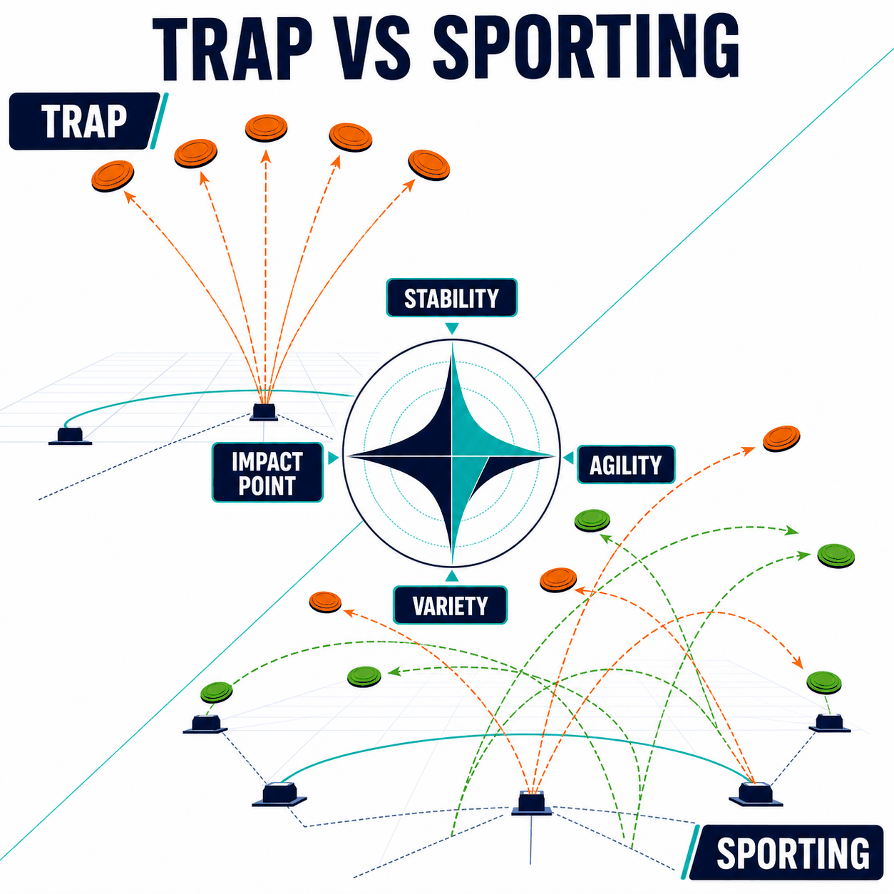
Trap concentrates its set-up on clays that move away; sporting widens the directions and distances, and changes the trade-off between stability and agility.
The regulations also change. FITASC Universal Trench allows up to 28 g of lead and defines five machines and schemes. Sporting regulations organise varied presentations. In its events, ISSF controls a maximum nominal load of 24 g with a control tolerance. To choose cartridge, choke and barrel order, you need to read the current edition of the discipline's rules. It isn't enough to apply “trap equals 24 g” to anything that has a trap.
Someone who switches between disciplines can use a single shotgun and change the set-up, use sets of barrels, or have dedicated guns. Each option costs learning. If eye height, weight or swing speed change, the body's reference point changes too. For a beginner, it's usually more useful to keep one set-up over several sessions and note which limitation appears before adding another variable.
5.7
Parts of a shotgun
Trap calls for different movements and ways of presenting the gun from Sporting, so the equipment should be chosen according to the discipline. Before making adjustments, it helps to know the parts of the shotgun.
Learning the parts isn't about memorising a diagram. It's useful for reporting an issue without touching what you don't understand. From back to front come the recoil pad, the stock, the comb and the grip. Next come the action, the top lever, the safety catch, the selector if there is one, the trigger guard and the trigger. Ahead are the forend, the chambers, the barrels, the rib, the bead, the muzzle and the chokes. On a semi-automatic, the bolt, the ejection port, the carrier, the magazine and the release controls are added.
The chamber holds the cartridge. It isn't the same as the barrel. The extractor lifts the case and the ejector can throw it clear. The action joins the lock-up and the firing mechanism on a break-action gun. Some competition models have a removable trigger group, but calling every shotgun's group a cassette is a mistake. Chokes are the fixed constriction or the interchangeable tube at the muzzle. The rib is the top plane that guides peripheral vision, not a telescopic sight.
The vocabulary follows the function: support, lock, fire, contain, guide the eye and control the pattern.
The names vary between Spain, Latin America and each manufacturer's own translations: carrillera or lomo, banda or solista, báscula or receptor. What matters is matching each word to the real part in the manual. During a malfunction, it's enough to say “the action won't open” or “the case is stuck in the chamber”. There's no need to diagnose a broken ejector. That diagnosis is for the person in charge or the gunsmith.
There are also parts that look alike but don't do the same thing. The recoil pad transmits the support to the shoulder. The heel and the toe are its ends. The forend is for gripping, and it completes the lock-up of the break-action assembly. The trigger guard protects the trigger. The muzzle is the end of the barrel, and never a handle. Naming them correctly helps give short, clear safety instructions.
A personal record with a photo and the manufacturer's terms stops the wrong names being carried from one gun to another. It also makes it possible to point out a fault to the person in charge without inventing words or handling the gun to show it off.
5.8
The stock and the body
Knowing the names of the barrels, the action, the trigger, the safety catch, the forend and the stock lets you follow clear instructions. The stock is the part that directly connects the gun to the body.
The stock positions the shoulder, the face and, above all, the eye. Since the shotgun doesn't usually have a rear sight, the eye takes on that role. That's why length, drop, cast and the angle of the recoil pad matter. Two people of the same height may need different measurements.
Length runs from the trigger to the recoil pad. If there's too much, it makes the gun mount harder; if there's too little, it cramps the posture. Drop sets the height of the eye, cast centres it sideways, and the angle of the recoil pad spreads the support. No single measurement should be adjusted on its own.
A well-fitted stock distributes the support and places the eye repeatably; it doesn't force the body to chase the rib.
Pain in the shoulder or cheekbone isn't part of learning. It can point to poor support, an unsuitable stock, tension or too many rounds. If it persists, you need to stop and find the cause.
Your dominant hand isn't enough on its own to choose the side or the fit of the stock. Your supporting shoulder and dominant eye matter too. The simple dominant-eye test is explained in 6.10, Looking at the barrel instead of the clay. If the dominant eye and the shooting shoulder don't match, an instructor should assess the posture and any possible visual aids before modifying the gun.
The eye that keeps the object centred when you close the other one is the dominant eye. The head and hands must stay still throughout the test.If a right-handed shooter has a dominant left eye, an instructor can fit a small occluder to the left lens, right on the line that eye uses to see the bead. This reduces its interference and may make it possible to keep both eyes open.
At some grounds there's a practice for checking from the front whether the eye, the rib and the bead line up. This is an inherently dangerous manoeuvre, because a person stands in front of the muzzles. It must never be improvised or carried out between shooters. It can only be directed by a competent instructor or the person in charge of the facility, with the shotgun open and completely unloaded, the chambers checked both physically and visually, and all ammunition removed from the area. Safer alternatives that don't put anyone in front of the barrels should always be preferred. This observation can reveal a misalignment, but it doesn't replace several gun mounts or a patterning test.
This frontal check exists as a field practice, but it means someone stands in front of the muzzles. It isn't improvised: only a competent person directs it, with the gun open and completely unloaded, chambers checked and no ammunition present; safer alternatives are always preferred.
Winter clothing changes the effective length and the support. That's why the fit should be checked in normal conditions, without chasing tiny differences every week.
5.9
Adjustable comb
A suitable stock always places the eye, shoulder and hands in a similar way; an unsuitable one forces you to correct every gun mount. An adjustable comb changes the height of the eye relative to the rib.
The adjustable comb moves up and down and, usually, sideways too. It's used to position the eye comfortably and repeatably relative to the rib. Raising it usually raises the point of impact; moving it sideways centres the eye without tilting the head.
Seeing more of the rib can help keep a rising clay in view, instead of blocking it with the barrel. But the comb doesn't “raise the pellets” on its own. It changes the relationship between eye and gun, and the shooter reorients the whole assembly. An adjustable rib can genuinely change the point of impact mechanically on some models. Stock and rib can give similar results on the pattern plate by different geometric routes.
The stock rests on the shoulder, the cheek rests on the comb, and the eye lines up above with the rib. Raising, centring and checking changes that relationship and must be validated with an actual pattern.
The comb shouldn't be moved after every miss. A low shot can also come from lifting your head, stopping the gun, or misreading the flight path. You start from a recorded position, make small changes, and check the point of impact.
With the gun unloaded and without firing, a simple reference is sometimes used on the ground: placing two one-euro coins, one on top of the other, at the back of the rib. If, on mounting the gun, the bead is still visible above them, there's visible rib gain. This is only a rough guide; it doesn't replace professional fitting or a patterning plate. A high set-up lets you see more of the clay and aim slightly below it. That picture can require some adjustment when going back to a hunting shotgun, with which many shooters cover more of the clay.
The two coins offer a simple visual reference. The actual rib gain and the point of impact are confirmed on a patterning plate.
The posts must stay firm and within the manual's limits. The starting position is marked so it can be recovered. After every change, unloaded gun mounts are practised and checked to make sure nothing moves.
5.10
Fully adjustable stocks
Raising the comb can change where the pattern hits relative to what we see when aiming, but it has to be measured and tested. Stocks with more adjustment offer more possibilities, though they also make it easier to lose a stable reference.
A fully adjustable stock lets you adjust more than just the comb. It can change length of pull, comb height and side position, rotation, pitch, toe-out and the position of the recoil pad. Some systems add damping and balancing weights. Its reasonable promise isn't to hit the clay on its own. It's to let different people position their eye, face and shoulder without carving a new stock for every test.
There are three routes. A manufacturer can build turrets and weights into wood, as B-Fast does. It can also offer a modular structure, like the TSK options cited by Beretta. Or a stockmaker can measure, cut, add mechanisms, or make one to measure. Browning documents adjustable comb, recoil pad and length on trap models. A Spanish patent describes a fully adjustable stock for personalised fitting. That shows there's local development, though a patent doesn't prove the availability, quality or suitability of any specific product.
Adjusting doesn't mean moving everything: you set a reference, change one dimension, and check the gun mount, the support and the pattern.
A made-to-measure wooden stock and an adjustable metal structure solve problems in different ways. The first can spread the contact continuously and give less temptation to change it. The second makes it easier to test, repeat measurements, or adapt to clothing and bodily changes. They also change the look, weight and stiffness. The decision should include how the adjustments will be kept in place during transport and use.
Added weight at the back shifts the balance. It can also change how quickly the gun starts or stops moving. That's why a fit that's comfortable for the body still needs to be tested in motion. A stock that positions the eye well can change the feel of the swing if it changes the mass distribution a lot.
Stops, scales and screws must let you return to a reference point. Without a record, adjustment turns into a string of sensations that can't be compared.
5.11
The rib
Having more adjustment options doesn't mean the shotgun ends up better: every change needs a reason, a measurement and a way back. The rib lets the eye see part of that geometric relationship.
The rib is the long surface sitting above the barrels. In Spanish it has two names, banda and solista, depending on the region and the maker. It gives a visual plane, reduces glare when it's well finished, and holds the bead. It can be flat, stepped, raised, ventilated or adjustable. Its look affects what the shooter perceives. But in clay shooting, the main focus stays on the clay. The rib and the bead are noticed peripherally, to keep the alignment.
Staring fixedly at the bead turns the task of intercepting a clay into static aiming. The clay loses sharpness, the swing becomes deliberate, and it tends to stop. But completely ignoring the rib doesn't fix an irregular gun mount either. During preparation, you can check that eye, rib and beads are aligned. When the clay comes out, the gaze goes to the clay and the gun follows from peripheral vision.
The rib organises the peripheral reference; the clay keeps the visual focus. Apparent height and point of impact aren't the same variable.
A raised rib can allow a more upright stance and leave more space below the clay. An adjustable one can change the point of impact on models designed for that. Beretta documents a front-and-rear B-Fast mechanism. Krieghoff explains that lowering its rib relative to the barrel raises the point of impact on certain models. So the intuitive rule “raising the rib always raises the shot” doesn't hold. It depends on the pivot point and the manual.
The mid-bead, if there is one, is mainly used to check that the eye isn't off-centre. It doesn't create a sighting line like on a rifle. If the two beads seem to come apart on mounting, the cause may be the height of the face or the tilt of the gun. This check is done before calling for the target. During the flight, trying to line up a geometric shape again takes attention away from the movement.
The width, the matte finish and the ventilation change the contrast and the feeling of heat. They don't replace a stock that positions the eye well. A rib that feels comfortable at the gunsmith's should be tried out in the actual light and stance of the ground.
5.12
Chokes
The rib helps position the eye relative to the gun, although during the shot your gaze should stay on the clay. The choke doesn't change that direction; it changes the shape and density of the pattern, which we'll look at now.
The choke is a narrowing at the muzzle. It can be fixed or interchangeable. It doesn't add accuracy or power: it changes how the cloud of pellets opens up. Generally, more constriction keeps more density at distance; a wider opening spreads the pattern sooner.
Many specialised trap shotguns, especially traditional models and set-ups, have fixed chokes. Other modern trap shotguns use interchangeable tubes. You shouldn't assume a set-up from the name of the discipline: check the barrel markings and the model's manual. A fixed choke should only be modified by a qualified gunsmith.
The names Cylinder, Modified or Full are families, not universal measurements. Stars and notches should be checked against the manufacturer's table. A tube that fits may not be rated for the material or load you've chosen. A threaded barrel is never fired without a choke tube fitted.
Distance and constriction change the spread and the density; the actual pattern belongs to the combination of gun, choke and cartridge.
An over-and-under can use a different choke in each barrel. The first is usually more open and the second tighter, because the clay is moving away, though this doesn't apply to every discipline. A wide pattern doesn't fix a big error. The actual combination is only known by patterning both barrels.
The tube must be clean, undamaged and properly seated. It's checked with the gun unloaded. If it's loose, protrudes or shows damage, stop using it until a competent person checks it.
Extended chokes are easier to identify, but they're still parts under pressure. Their brand doesn't guarantee compatibility.
5.13
Cartridges
The choke doesn't move the centre of the shot: it changes how the pellets are distributed as distance increases. That distribution also depends on the cartridge used.
A shotgun cartridge brings together the case, the head, the primer, the powder, the wad and the pellets. On the box, you need to check the calibre, length, load, pellet size and material. You also need to read any indication of velocity and use. Calibre 12 isn't enough on its own. The chamber length marked on the barrel limits which fired case length is allowed. Browning's manual warns that using a length greater than the chamber can dangerously raise pressure.
Grams indicate pellet mass, not powder or total “power”. ISSF controls a maximum nominal load of 24.0 g with a test tolerance of 0.5 g, and a maximum diameter under its rules. FITASC Universal 2025 allows up to 28 g of lead with a 2% tolerance and regular pellets of up to 2.5 mm plus tolerance. RIO sells 24 g and 28 g options in calibre 12. These figures belong to specific products and disciplines. The club can impose additional materials or limits.
Reading the box means relating chamber, load, pellet, wad, stated velocity and regulations; no single number works alone.
A 28 g load contains more pellet mass than a 24 g load of the same size and material. But the exact figure requires measuring diameter, density and manufacturing variation. More mass or more velocity tends to increase the impulse and the free recoil. SAAMI also includes the wad and the gases in the calculation. The advertised velocity depends on a measurement method. It doesn't guarantee that two cartridges will give the same flight time, pattern or feel in a specific shotgun.
The batch and how it's been kept matter. Deformed cases, damp, corrosion or cartridges of doubtful origin are set aside following the manufacturer's and the ground's instructions. Calibres aren't mixed in your pocket. A smaller cartridge can slip dangerously into a larger barrel and become stuck as an obstruction. The inspection is done before loading. Ammunition is never repaired or reloaded during a round.
The original box keeps the batch number and specifications. That information is needed if an anomaly appears or pattern results are compared. Keeping batches separate stops you blaming the choke or the technique for a variation in ammunition.
5.14
Personal equipment
The load, the pellet size and the muzzle velocity influence the number of pellets, the recoil, the spread and the energy they retain. Personal equipment completes the preparation and protects the shooter.
Personal equipment starts with two protections, not the vest: hearing and eyes. The ISSF 2026 guide requires adequate hearing protection near the line and impact-resistant glasses for athletes, referees and officials. FITASC Universal requires hearing and eye protection at its event. Tinted lenses can improve contrast in certain light. But they don't replace impact resistance, a good fit, peripheral vision, or a mount that doesn't shift when you bring the gun up.
The noise of a gun is impulsive. It can cause cumulative or immediate damage. NIOSH recommends double protection, plugs and muffs, for gun noise in its occupational guidance. On a specific outdoor ground, the choice should take into account measurement, frequency, fit and rules. Thick glasses can break the seal of the muffs. Electronic protectors make conversation easier in some situations. But ISSF bans athletes and coaches from using devices with sound amplification or reception on the competition ground, except for authorised exceptions.
Protection first; then clothing that keeps cartridges organised, allows a snag-free mount and supports a stable stance.
The vest gives an even surface at the shoulder and accessible pockets. It shouldn't carry loose cartridges mixed with other objects. A cloth helps dry your hands or remove outside moisture, but it doesn't authorise cleaning a loaded gun. A cap and glasses help with the light. Stable footwear stops slips. Clothing should let you turn your torso and mount the gun without stiff folds. Gloves can improve grip or warmth if they keep your feel and don't get in the way of the trigger guard and controls.
A full bag carries what you need to stay organised, not a portable workshop: documentation, spare protection, glasses in a case, a cloth, water and the gun's choke tool. Medication, heat and fatigue can affect control and attention. Equipment doesn't fix them. If your glasses steam up or a hearing protector stops you hearing the referee, you step out of the sequence and sort it out before carrying on.
Every item should be placed without encroaching on the neighbouring station or forcing you to leave the gun propped up in some improvised way. The order of the vest should also stay the same from round to round.
5.15
Basic maintenance
Glasses, hearing protection, footwear and clothing need to work together, not just be separate accessories. To keep everything safe, both the gun and the equipment need to be checked, cleaned and maintained.
Maintenance starts before cleaning: gun unloaded, ammunition out of the area, a safe direction, and the manual open at the right model. Barrels and chambers are checked without looking down the muzzle. The condition and tightness of the chokes, the lock-up, the forend and any visible damage are also checked. If there's an obstruction, deformation, crack, loose part or odd behaviour, you don't try “just to see if it fires”. It's put aside and a gunsmith is consulted.
After a day's shooting, an over-and-under usually needs disassembly to the authorised level, cleaning of the bores and chambers, removal of plastic or lead residue, drying and a light film of protection. The break-action surfaces get the grease specified by the manufacturer. Chokes are removed with the gun unloaded. The thread and housing are cleaned, lightly lubricated and reinstalled with their tool. Beretta warns that cleaning or firing a threaded barrel without a tube fitted can dirty, damage or block the thread.
The cycle ends where it started: an empty-chamber check, proportionate cleaning, no obstructions, and safe storage.
More oil doesn't mean more care. It can trap dirt, get into the wood or the mechanisms, and affect how the gun works. A semi-automatic adds maintenance of the bolt, the magazine and the gas or inertia system according to the manual. Instructions for one action aren't applied to another. Before reassembling, you check that no patch is left in the bore. Internal repairs and adjustments are for the manufacturer, an authorised service centre or the gunsmith.
The final inspection isn't just about the metal shining. You check that the bore is clear, that surfaces are dry where the manual doesn't call for lubrication, and that no part or tool is missing. Wood, polymers and finishes get compatible products. A solvent suited to barrel deposits can damage varnish, adhesives or the recoil pad. The gun is stored once its moisture has settled. It's never left damp inside a closed case. Before the next outing, an unloaded functional check is repeated, because transport and storage can also loosen parts or reveal corrosion.
Chapter closing map. Maintaining a gun well means first recognising what you're inspecting. Go back to 5.7, Parts of a shotgun, to locate the barrels, action, lock-up, forend and other essential parts. The review in 5.8, The stock and the body, and the adjustments in 5.9 and 5.10, are a reminder that cleaning doesn't authorise changing measurements or replace a professional fitting. Finally, 5.12, Chokes, and 5.13, Cartridges, connect constriction, the actual gun-and-ammunition combination, and patterning distance. Maintenance keeps that combination in safe condition, but only a test on the pattern plate lets you check its pattern.
What we have learned
The shotgun is a system, not a category of prestige. The mechanism determines how it loads, unloads and shows its state. Specialising in trap or sporting changes the priorities for balance, stock, rib and pattern. The right choice starts with a supervised trial, not with a catalogue.
The eye acts as the rear reference: the stock and the comb must position it the same way every time, without pain.
The rib, the comb and the point of impact are related, but they aren't the same thing and don't follow one universal rule.
The choke and the cartridge produce a pattern that belongs to that combination; only an actual patterning test shows the centre, density and variation.
Glasses and hearing protection are part of shooting, and maintenance ends with safe, legal storage.
Expert reading. The simulator can isolate rib gain, velocity and spread to teach cause-and-effect relationships. It doesn't reproduce felt recoil, moment of inertia, deformation of the cloud, the mechanical cycle or fitting. That boundary needs to be clear when the reader carries a digital observation over to an actual gun.
Chapter 06
Why a beginner misses the clay
A miss doesn't have a single cause. The pattern — that is, the cloud of pellets — can arrive late, low or off the flight path. The eye can stop tracking the clay. The head can change the alignment. The gun can slow down even though the shooter thinks they're still moving it. From the station, several causes feel almost the same: the clay stays whole and there's little information left to work out what happened.
This chapter turns twelve common phrases heard on the ground into questions that can be observed. It isn't meant to diagnose from a distance or replace the instructor. It separates what's backed by studies and manuals, what depends on the discipline or on each person, and personal comments marked as such. The goal isn't to pile up corrections. The goal is to pick a single hypothesis and test it safely.
6.1
First instinct deceives
The shotgun, stock, choke, cartridge and protective gear form a set that needs to be fitted and maintained properly. Now that we know the equipment, we can look at why a shot misses even when it looks right from the outside.
The first question comes up straight away: if the bead looks aligned with the clay, why doesn't it break? Because that image is of the present moment. The meeting with the pattern will happen an instant later.
The apparent alignment doesn't freeze the scene. From the moment you recognise the clay to the moment the pattern arrives, the clay keeps moving. To hit it, place and moment have to coincide.
This first intuition comes from tasks where the result seems immediate. We point at an icon on a screen, touch a ball at rest, or aim at a fixed mark. In those cases, the position we see still holds good by the time the action finishes. A clay is different. It's a moving target, and it doesn't wait for the shooter to finish looking, deciding and moving. By the time the pellets reach the target's distance, the clay is no longer where it was when it started.
This doesn't mean the shooter has to work out a formula as the clay comes out. It means picturing where the meeting point will actually happen. Research on visuomotor interception, which studies how the body intercepts moving objects, describes exactly that: actions that aim to coincide with a moving object even though there are delays in vision and in movement. The nervous system works with recent information plus prediction. If you react only to the current position, you arrive late when the target is moving fast.
There are also two separate time spans that shouldn't be mixed up. One belongs to the person: detecting, recognising and organising the movement. The other belongs to the shot: leaving the barrel and covering the distance. The second one doesn't disappear just because the cartridge is fast. Ballistic calculators call the time it takes the projectile to arrive the time of flight. They also define lead as the correction needed for a moving target. In a real shotgun, the pellet cloud and its loss of velocity complicate the detail, but the basic idea stays the same: during that interval, the clay keeps moving.
Example: a clay crosses from left to right. The beginner picks it up visually, brings the barrel to its edge and fires just as the two appear to overlap. If the centre of the pattern then crosses the flight line, it may meet the trail, not the clay. A useful correction isn't simply telling them to “see more gap”. It might be starting the movement earlier, keeping a separation learned with the instructor, or continuing the swing — that is, the follow-through movement — through the shot.
6.2
Delays add up
Aiming at the spot where we see the clay ignores the fact that the clay is moving and that the shooter needs time to respond. To understand this delay, we'll break down all the time spans that add up.
There's no single delay called “reaction”. The sequence includes detecting, deciding, moving, actuating, firing and waiting for the pellets to fly. Meanwhile, the clay keeps going.
The steps don't all take the same time, and they don't reduce to a single figure valid for everyone. The chain is there to remind you that the clay changes position throughout all of them.
The eye doesn't hand over a complete trajectory the moment an orange blur appears. First you have to pick the clay out from the background. Then you have to read its direction and apparent speed, and decide how to start the movement. Then the body accelerates an object with weight, the hand completes the intended action and the shot leaves the gun. Finally, the pellets cover the distance. Calling all of this “reaction speed” hides where the problem might actually be.
Experimental research on interception shows that vision-guided corrections arrive with latency — that is, with a delay. A 2026 study found approximately 114 milliseconds to respond to position jumps in two manual on-screen tasks. That figure shouldn't be carried straight over to a shotgun: the people, the movement, the setting and the task were all different. What it does confirm is a more modest and solid idea: new visual information doesn't change the action instantaneously.
Nor should these steps be pictured as a rigid queue that never overlaps. The gaze can keep updating the trajectory while the gun is moving. The shooter can correct during the swing. Experience helps anticipate regularities. Reviews of visuomotor control describe a mix of prediction and ongoing adjustment. That's why an expert doesn't just have “faster reflexes”: they read the important information sooner and move the gun more steadily.
Example: two shooters miss the same crosser behind. The first spotted the clay late because they were looking too close to the trap. The second saw it in time, passed it, but stopped the gun when pulling the trigger. The result may look similar, but the correction isn't. The first shooter is helped by reviewing their gaze zone. The second, by maintaining continuity. Telling both of them “more lead” can hide the cause and add tension.
For a beginner, the chain should work as a practical checklist. When did the clay come into clear focus? Did the movement start smoothly or in a rush? Was the gap still growing at the moment of firing? Did the barrel keep moving afterwards? There's no need to answer all of this during a round. It's enough for instructor and pupil to pick one observable step and compare it across several similar repetitions.
6.3
Falling behind the clay
Seeing the clay, deciding, moving the gun and waiting for the pellets to arrive all take time, while the clay keeps moving. The most common result is that the pattern ends up behind.
“You're behind” tells you where the centre of the shot passes relative to the clay. It doesn't by itself show why it happened. Separating result from cause stops you applying the same fix to different misses.
On a side crosser, the relationship between behind and in front is easy to grasp. Starting late or stopping the swing can be causes, but they aren't automatic diagnoses.
On the ground, being behind means that the useful part of the pattern crosses the zone the clay has already passed through. The clearest case is a side crosser: the clay moves sideways and the cloud is left in its trail. On a near-straight-away, the phrase is harder to read, because the error can show up as height and depth instead. “Behind” always has to be read against the actual trajectory, not against the edge of the screen or the horizon.
You often hear that this is the most common beginner's mistake. The claim matches the experience of many instructors, but we haven't found population-level data that would give it a universal prevalence. There is concrete evidence that higher-level shooters show steadier gun movement and an earlier, longer final gaze than sub-elite shooters. That finding supports working on visual stability and gun movement. It doesn't support claiming that every single miss was behind.
The same result can be reached by several routes. The shooter might detect the clay late, start from a poorly chosen hold point, accelerate suddenly, try to measure the gap by looking at the barrel, or stop the gun when firing. They might also misread the speed or the distance. The faster and more sideways the clay looks, or the longer the time of flight, the more the required separation shows up. But “adding gap” without sorting out the movement can produce a miss in front on the next attempt.
Example: a clay crosses from right to left. The pupil manages to get past the leading edge, hesitates to check the gap, and pulls the trigger once the gun has already lost angular speed. The mental picture before the shot was correct, but the meeting point wasn't. During the hesitation, the clay moved on and the barrel slowed down. The useful cue might be “keep your eyes on the clay and follow through the shot”, not necessarily “aim a metre further ahead”.
The analysis should rest on patterns, not a single result. If several similar crossers miss behind and the footage or the instructor spot a stop, a strong hypothesis emerges. If some end up in front and others behind, it's worth reviewing gun mount, gaze and rhythm before settling on a lead figure. Fragments are also misleading: breaking the trailing edge might suggest a centre that's behind, but the uneven distribution of the pattern means you can't turn every break into an exact measurement.
6.4
Shooting under the clay
Being behind describes where the shot landed, but it can stem from a late start, a stop, or too little lead. If the shot lands low, we need to look separately at the vertical axis.
On a rising clay, “low” can describe where the pattern passes. It doesn't automatically identify whether the cause was the eyes, the body, the gun or the timing.
A rising clay mixes height and timing. A low cloud can come from reading too little rise, from a variable alignment, or from a stop during the climb.
Being low means the useful centre of the pattern passes below the clay at the meeting point. The definition sounds simple, but it isn't always easy to judge from the station. A clay that's rising and moving away changes apparent size, passes across different backgrounds, and can look like it's climbing less once it starts losing vertical speed. The shooter has to track that climb without forgetting the sideways movement or completely blocking the reference.
One possible cause is reading the flight path as flatter than it is. Another is stopping the gun's rise when firing. The relationship between the eye and the rib can also shift. The rib is the top surface of the barrels that the eye uses as a reference. If the cheek loses its repeatable contact, or if the stock puts the eye at a different height, the direction the shooter thinks they're giving doesn't match the actual line. Manufacturer manuals confirm that comb height and cast are used to keep the dominant eye consistently aligned with the plane of the rib.
That doesn't turn stock adjustment into an instant cure. Browning, for example, documents trap guns whose point of impact sits above the point of aim to keep the clay visible. It also documents models with adjustable rib or comb. These are facts about specific guns, not a universal recommendation. The point of impact should be checked with a pattern test. Any modification must be made with the gun unloaded, following safe procedure and with competent help.
Example: the pupil breaks side clays but keeps going low on a very steep straight-away. Before raising the comb, the instructor watches several attempts. They see the cheek lifting off at the end and the barrel stopping its rise right as the shot goes off. The equipment wasn't the main variable after all. Work focuses on a comfortable mount, visual tracking and follow-through. Afterwards, if the trend continues with a repeatable gun mount, the point of impact of the gun-and-shooter combination is checked.
You also have to avoid over-correcting. After hearing “low”, a beginner might suddenly jerk the barrels up and lose the clay, or force their head into an awkward position. A useful correction is small in scale and comes with something to watch for: keeping the clay visible, keeping the cheek in the same place, and finishing the movement above the previous line. If pain shows up, the test stops. An uncomfortable position is never made routine just to land one isolated hit.
6.5
Covering the clay
A low shot can stem from misreading the trajectory, from the gun mount, or from the relationship between the eye and the stock. Correcting it by blocking the clay can also create a visibility problem.
Leading doesn't always mean losing the clay behind the barrels. “Blocking it” describes one specific picture. It depends on the trajectory, the technique, and the relationship between eye, stock and rib.
Lead is a relationship in time. Occlusion — that is, blocking the clay with the gun — is a visual relationship. Confusing the two can make the shooter measure with the barrel or lose their reference for a second shot.
From the shooter's viewpoint, blocking the clay means part of the gun comes between the eye and the clay until it hides it. This can happen on a rising clay when the barrel line passes above the image of the clay. It can also happen with a shooting method that deliberately crosses its trajectory. The difficulty starts when the shooter runs out of visual information. They can no longer read direction, apparent speed or continuity properly.
“Putting the barrel ahead” shouldn't be confused with “looking at the barrel”. In shotgun shooting, the gun can sit ahead in peripheral vision while central attention stays on the clay. The NSCA distinguishes visual connection with the clay from consciously checking the gap. When the shooter looks at the near reference to measure it, visual tracking is interrupted and the movement can slow down.
The picture also depends on the equipment. The height of the eye above the rib and the shotgun's point of impact determine how much barrel is visible and where the centre of the pattern sits relative to the apparent reference. Some trap models are designed or regulated to shoot above the point of aim, making it easier to keep the clay visible. That's manufacturer data for specific setups. It doesn't mean every beginner should raise their stock, or that there's an ideal ratio for everyone.
Example: on a straight-away, the pupil raises the barrel until the clay disappears and fires from memory. If they miss, they lift their head to find it again, and the second attempt starts from a different alignment. Before touching the gun, the instructor checks the gun mount, the point of impact and the method chosen. They might teach a reference that keeps the clay in view, or confirm that the setup needs a professional evaluation. The correction is verified with a pattern test, not by feel.
6.6
Lifting the head
Sometimes the clay gets blocked because the eye and gun are set too flat, not because it's a technique recommended for everyone. If we lift our head off the stock to see it again, that also changes the direction of the shot.
The urge to check whether you've hit the clay can lift the cheek off the stock at the worst possible moment. The movement changes the eye's alignment and also breaks the shot's visual continuity.
The eye works as the system's rear reference. If it changes height during the shot, the image of the rib changes, and the actual direction of the pattern can change too.
Lifting the head breaks the eye's position relative to the rib. On a shotgun with no rear sight, the eye acts as the rear reference. If the cheek lifts off the stock, the shooter stops looking from the point the gun was fitted for.
The movement can start before the shot out of fear of blocking the clay. It can happen at the same instant, through anticipation. Or it can come afterwards, from the rush to check whether the clay broke. All three variants look alike from the outside, but they affect different phases. The last one is the most deceptive: the shooter thinks they've already finished, even though the follow-through keeps the alignment going and, if there's a second shot, keeps the visual reference needed to correct it.
Causer and colleagues' research didn't specifically study “lifting the head”. It did find that, in trap, skeet and double trap, an earlier and longer final gaze was associated with higher level and with successful attempts. The reasonable conclusion is to favour a stable visual connection. It isn't a claim that any long gaze guarantees a hit. Gun movement, trajectory and pattern still play a part.
Example: the first shot doesn't break the clay. The pupil lifts their cheek to look over the barrels, rushes to put it back down and takes the second shot from a different height. Even though they “aim” at the same spot, the eye-rib relationship has changed twice. The instructor can ask them to finish the movement while keeping comfortable contact, and let the result come into view on its own, instead of hunting for it with their head.
“Keeping the cheek down” doesn't mean crushing it against the stock or putting up with pain either. Enough pressure is whatever gives stable contact without excessive tension. If a correct gun mount forces an uncomfortable position, the problem may be one of fit, not of willpower. A good diagnosis separates habit, anticipation and gun geometry before repeating rounds with the same discomfort.
6.7
Inconsistent gun mount
Lifting the head breaks a reference that needs to stay stable while we move the gun and fire. A different gun mount on every attempt creates that same uncertainty even before calling for the target.
When the stock, cheek and body settle into a different position on every attempt, the results look random even though the clay is almost the same each time.
Repeatability doesn't require identical bodies or a universal stance. It requires that the solution chosen for that person places eye, shoulder and gun in roughly the same way every time.
Mounting the gun means resetting feet, body, shoulder, stock, cheek, hands and gaze. If the recoil pad or the cheek land in a different place, the gun's direction changes before the swing even starts. The shooter might blame the lead, when in fact they're starting from a different reference on every attempt.
Being consistent doesn't mean copying a posture from a photograph. Anatomy, handedness, mobility and discipline all change the solution. The CPSA manual and manufacturer documents present stock adjustment as a way to align the eye with the rib repeatably. The instructor's job is to find a safe, comfortable setup for that person, not to force them into some universal set of angles.
Foot position matters because it sets the range of movement, but it doesn't explain everything. An uncomfortable stance can make the torso hit its limit mid-crosser and the gun stall. A raised shoulder can change the recoil pad's contact. A cheek that settles late can change the picture right before the shot. That's why the assessment works through the chain from the ground up to the eye, and watches several repetitions.
Example: repeating the same clay, the pupil alternates between high and low misses with no clear pattern. The instructor stops correcting lead and just watches the mount. They notice that, on some attempts, the heel of the recoil pad sits outside the shoulder pocket and the head tilts to find the rib. Once a comfortable gun mount is stabilised, the misses spread less. Only then does it make sense to work on the meeting point.
Working outside a real round can help, but it has to keep the same safety culture. The CPSA describes mounting drills and alignment checks. Any practice with a gun must be done completely unloaded, in an authorised area and according to the club's rules, ideally with supervision when starting out. The simulator, for its part, doesn't reproduce weight, contact or anatomy. It can only teach the geometric consequence of moving the eye, not train the physical gun mount.
6.8
Flinching and recoil anticipation
Without a gun mount we can repeat, any change in lead gets tangled up with movements of the eye, shoulder and stock. On top of that, fear of recoil can alter the movement right before firing.
Physical recoil happens after the shot has begun. Flinching appears when the body braces too early and changes the gun's orientation before the pattern has even left the barrel.
The key is separating two moments: an anticipatory response, which can move the gun beforehand, and actual recoil, which begins with the shot. Pinning down the specific cause takes observation.
In everyday use, a flinch can include a sudden clench of the hand, closing the eyes, a tensed shoulder, or a jerk that throws the gun off line. Not all of these show up together, and they don't have a single cause. Expecting the noise and the impact, an uncomfortable fit, a load that feels unpleasant, the pressure to hit the clay, or fatigue can all play a part. Framing it purely as “fear” places blame and makes diagnosis harder.
The physics of recoil is well defined: the mass and velocity of the shot charge and the gases generate a push in the opposite direction, transmitted to the gun and the shooter. SAAMI publishes free recoil formulas for comparing setups under stated assumptions. An experimental study with sporting guns measured very brief impulses and forces that varied with ammunition and gun. This data shows that the physical stimulus is real. On its own, it doesn't predict how much discomfort any given person will feel.
Anticipation is a different matter. If the hand clenches, the shoulder pushes, or the eyes close before the shot is complete, the line can be thrown off. Research on recoil dynamics in trained shooters recognises anticipatory effects such as the flinch. Its findings shouldn't be applied directly to clay shooting beginners: the guns, the tasks and the experience levels are all different.
Example: the pupil tracks several clays well, and right before pulling the trigger, hunches their shoulder and drops the barrel. Afterwards they describe an unpleasant knock to the face. Firing more cartridges to “get used to it” can reinforce the expectation. The sensible response is to stop the round and review gun mount, fit, permitted load and hearing protection with the instructor and, if needed, with a gunsmith. Nobody improvises tests with tampered cartridges or carries out unauthorised exercises.
The instructor should watch the sequence: what changes before, during and after. Authorised footage can help distinguish prior tension from movement produced by the recoil itself. If the movement shows up at the end of a session, fatigue is one hypothesis. If it shows up from the very first shot, it's worth reviewing comfort, noise and experience. No infographic can diagnose pain or an injury.
6.9
Stopping the swing
Flinching shows that an anticipated bodily reaction can spoil an otherwise correct aim. Stopping the swing also breaks the movement at the most important moment.
The shot isn't the end of the movement. It's a moment within it. If the barrel loses speed before the meeting point, a crossing clay keeps moving and leaves the pattern in its trail.
Before, during and after form a single curve of movement. Stopping takes angular speed away from the gun while the clay keeps its own.
The swing is the movement with which the body and gun track the apparent trajectory. On a crosser, the barrel needs to pick up direction and angular speed, hold the chosen relationship with the clay, and keep it through the shot. Pulling the trigger shouldn't act as a signal to brake. When it does, the picture the shooter remembers may have been correct an instant earlier, but it no longer represents where the pattern is going to be.
Saying that stopping “equals shooting behind” is a useful simplification for side crossers, not a law for every clay. If the clay is rising or going away, the error can mix with low and depth. Nor does every delayed cloud prove a stop: starting late or misjudging the meeting point produces a similar result. The cause has to be seen in the movement itself.
Causer and colleagues' research provides an objective reference: elite trap, skeet and double trap shooters showed slower, steadier barrel movement than sub-elite shooters, along with differences in gaze. “Slower” doesn't mean sluggish, nor that there's a single correct speed. It describes less agitation in the measured profile. The reasonable lesson is to look for smoothness and stability, not to chase the clay with jerky corrections.
Example: the pupil passes a clay from left to right, feels the gap is enough and, on firing, tenses up their hands. The barrel stays almost still while the clay keeps going. On the next attempt they get a single instruction: finish the arc at a safe reference point beyond where the shot is taken, without changing the gaze zone or exaggerating the lead. The instructor confirms from the outside whether the continuity genuinely improves.
The follow-through serves two purposes. Mechanically, it stops the intention to brake from showing up too early. Visually, it keeps information about the clay flowing, for a possible second shot and for understanding the result. It isn't about making a long, theatrical gesture after a hit. It's the natural consequence of an action that isn't cut short by anticipating the noise or the break.
6.10
Looking at the barrel instead of the clay
The shotgun needs to keep moving through the shot so it doesn't end up pointing at a spot the clay has already passed. The movement loses its smoothness when we stop looking at the clay and start looking for the barrel.
The bead informs from the periphery. The clay needs the visual attention that lets you read direction and speed. This is where the mistake of shifting focus onto the gun gets diagnosed. Setting up the gaze positively before the target is released is covered in 8.11, Gaze zone.
When the barrel takes over central focus, the clay loses sharpness and continuity. With attention on the clay, the gun can stay as a peripheral reference. Each case also needs to take eye dominance into account.
Central vision supplies the detail needed to track the clay. Peripheral vision covers a wider field and keeps a reference on the gun. While the clay is in flight, your main attention should stay on the clay.
The mistake happens when the shooter tries to measure lead as a fixed distance. They look at the bead, check the gap, and go back to the clay. In that switch they lose information and can stall the gun. It's better to keep the clay sharp and notice the barrel peripherally.
Studies with shooters link a steadier final gaze with better results and a less agitated gun. They don't point to one exact spot valid for every discipline, but they do support the idea that gaze can be trained.
Before correcting the gaze, it's worth knowing your dominant eye. There's a simple guideline test for this. You form a small triangle with your hands and, with both eyes open, centre a distant object inside it. Without moving your hands, close one eye, then the other. The eye with which the object stays centred is usually the dominant one. The test should be repeated; it isn't a clinical diagnosis.
If a right-handed person has a dominant left eye, there's cross dominance. They may see two barrel references, or let the non-aiming eye take over when aiming. An instructor can look at several solutions: switching shoulder, adjusting technique, or fitting a small translucent patch or occluder on the lens of the eye not aligned with the gun. The patch blocks the bead reference, but keeps part of the peripheral vision. It should never be fitted by trial and error: it needs supervision and must comply with the discipline's rules.
6.11
Too much information
Looking at the barrel takes away information about the clay and tends to stiffen a movement that should be continuous. Getting too many instructions at once can cause the same kind of block.
Thinking isn't the enemy. The problem shows up when a person tries to apply too many new rules at once, in a skill that still demands a lot of working memory.
Angle, speed, body position, cartridge and outcome can all matter. But they don't all have to occupy conscious focus at the same time. A well-chosen cue brings order to the attempt.
When starting out, almost everything demands attention: feet, shoulder, cheek, gaze, clay, lead, trigger, noise and result. Working memory keeps a limited amount of information active while the movement is being organised. If the instructor piles on explicit instructions with no order, the pupil may try to run through all of them during an action that lasts a very short time. The movement becomes late, choppy and hard to assess.
Motor learning research confirms that applying several instructions at once can depend on working memory capacity, especially in learners. Other studies compare an internal focus, aimed at body parts, with an external focus, aimed at the effect of the movement. External focus often improves learning and performance, although it isn't an absolute rule for every skill or every phase. Sometimes a correction about the body is necessary; the question is when, and how many at once.
Cutting the load doesn't mean teaching by guesswork or hiding the technique. The beginner needs a clear explanation outside the action and a short cue inside it. They can understand that the cheek sets the alignment, but when calling for the clay, attend only to “seeing its leading edge”. In another round, the focus is “finishing the swing”. The complexity stays in the learning programme; it isn't piled onto a single attempt.
Example: before a clay, three onlookers say at once “open your feet more”, “push your cheek down”, “look further out”, “lead more” and “don't stop”. The pupil tries to check every instruction and spots the clay late. Whoever's in charge needs to bring it back to a single voice, choose the priority, and leave the rest for later. If the gun mount is sound, the cue could simply be to keep the clay sharp. The observations get discussed afterwards.
Choosing a single variable also stops you changing equipment compulsively. Angle, cartridge speed, choke and stock height can all explain differences, but throwing them all into the first correction makes it impossible to know what actually produced the change. The simulator helps when it keeps the scenario fixed and changes only one variable. It does harm if it turns into a panel where the pupil changes everything after every miss.
6.12
Fatigue and too many rounds
A single correction we can check teaches more than a pile of instructions all at once. Tiredness adds to the confusion, so shooting more rounds doesn't always mean training better.
A session stops teaching once it becomes hard to hold attention, gun mount or control. At that point, the person starts repeating a worse version of the movement.
There's no universal number of rounds. The decision rests on signs: losing concentration, inconsistent contact, less controlled movement, pain, or needing to force the posture.
A beginner's fatigue doesn't only show up as general tiredness. It can reduce the stock's steady pressure, delay the start of the movement, increase tension in the hands, or make the gaze leave the clay early. Mental fatigue can also appear: keeping to a routine gets harder, impulsive corrections multiply, and each miss weighs more heavily than the last. These signs reduce the value of stacking up more attempts.
There isn't enough evidence to recommend the same maximum number of rounds for every beginner. The right load depends on the gun, the cartridge, the fit, the discipline, the breaks, physical condition and experience.
Recoil is a repeated stimulus that can be measured. Trials with sporting guns show that ammunition, gun mass, stock shape and reduction systems all change the forces transmitted. However, perception and the effect on each body can't be worked out from a formula. Pain in the shoulder or face shouldn't be assumed to be a necessary toll of adaptation. It's a signal to stop and review technique, fit and load with qualified staff.
The closest evidence on fatigue in shooting has to be treated with care. A study on expert biathletes increased physical load and observed changes in timing, but not a drop in accuracy under their protocol. It isn't clay shooting, and it isn't a beginner population, so it doesn't prove that one extra round worsens any specific percentage. It does remind us that fatigue, rhythm and performance don't follow a simple relationship, and that experience allows for compensation.
Example: the first two rounds show a repeatable gun mount. In the next one, the recoil pad drops, the pupil lifts their head and starts anticipating. Even if they want to finish a box of cartridges, the session is now training variability and discomfort. Stopping, drinking water, noting what changed and coming back another day protects both the body and the learning.
What we have learned
A miss is born from the relationship between the trajectory, the pattern and the shooter's actions. “Behind” or “low” describe the result, but on their own they don't explain the cause.
Gaze, gun mount and swing should be watched across several repetitions before changing the meeting point or the equipment.
One single cue gives more useful information than five corrections all at once.
Pain, loss of control and growing fatigue are reasons to stop, not proof of sporting commitment.
Expert reading. A reliable diagnosis would need to synchronise the clay's trajectory, the gun's movement, visual behaviour, the instant of the shot and the pattern's distribution. The simulator can isolate geometric relationships and repeat scenarios; it doesn't watch the real body, and it can't identify the cause of a miss on its own.
Chapter 07
Step-by-step learning and Shu-Ha-Ri
Learning clay shooting isn't about finding a secret phrase to break the next clay. At the start there are many new tasks all at once: acting safely, positioning the body, repeating the gun mount, seeing the clay, moving the gun and making sense of a result that vanishes into the air. Mounting the gun means bringing the shotgun to the shoulder and setting the cheek down repeatably. Progress begins when we cut that load down and every attempt has one clear question behind it.
This chapter uses Shu-Ha-Ri as its teaching thread. It's an idea from traditional Japanese arts. First you follow a taught form, then you analyse it and adapt it, and finally you act with autonomy without forgetting the basics. It isn't a scientific theory of motor learning — that is, of movement learning. Nor is it a federation classification. It's a map for organising practice. Here it's set against experimental research, experience on the ground, and what the Plato simulator can actually do.
7.1
Learning as in other sports
Misses are easier to understand once we split them into gaze, timing, movement, gun mount and fatigue. Now we'll look at how to correct them without trying to change everything at once.
A fast skill is built slowly. First a recognisable movement gets organised. Then it's repeated with useful feedback. Only afterwards do speed, variety and autonomy get asked for.
Repetition works when there's an intention and information keeps coming in. Over time, some parts of the movement demand less attention and leave room to read the clay.
In tennis, swimming or music, doing a movement fast before you can repeat it tends to hide the error. The same happens with clays, with an added difficulty: the real action lasts a very short time, and the clay leaves no mark you can study afterwards. That's why the initial technique isn't trying to look like competition form. It's after a sequence the pupil and the instructor can both recognise: the same set-up, a comfortable gun mount, an available gaze and a continuous movement.
Repeating isn't copying without thinking. Every attempt shows the gap between what was expected and what happened. Motor learning research points to some improvements being fast and others slower. It doesn't say how many clays any one person needs, but it's a reminder that progress doesn't always move at the same pace.
The phrase “muscle memory” is a shortcut. Muscle doesn't learn on its own: the nervous system, perception and planning all take part. With practice, some parts of the movement demand less attention and free up more capacity for reading the clay.
A correction helps when it points to something observable. The instructor can see whether the head lifts or the barrel stops. A phrase like “finish the arc towards that reference point” is usually more useful than a list of movements. Safety and pain, on the other hand, get corrected immediately.
Across five simple repetitions, the goal might be keeping the cheek down and finishing the movement, not breaking five clays. The instructor watches a single variable. Speed comes once the movement is already stable.
7.2
First stage: Shu
As in other sports, a complex movement is learned step by step before introducing changes and decisions of your own. The first stage, Shu, focuses on learning a common basic form.
In Shu, the beginner keeps to a simple form set out by a single qualified voice. This isn't blind obedience. It cuts down decisions so they can learn safety, reference points and rhythm without becoming overloaded.
Shu turns an overwhelming action into a stable sequence. The exact form is decided by the instructor, according to the person, the discipline and the ground's rules.
The Japan Karate Association describes Shu as protecting, or faithfully following, the teachings and the fundamentals. In clay shooting, this doesn't mean there's a universal stance that suits every body. It means accepting, for a while, a coherent routine taught by an instructor who can see it as a whole. Switching advice after every miss makes it impossible to know what's actually being learned.
The routine starts before calling for the target. The feet are set in a similar way for the agreed clay. The stance should give stability and allow you to turn without locking up. The gun is mounted repeatably. Shoulder, cheek and hands need to allow control without pain. The stock, the anatomy and the discipline all change the fit.
Once the position is set, the gaze takes over. The pupil needs to find the clay and keep it available, while the gun's reference stays in side vision. Causer's work with shotgun shooters links level and success to measurable differences in final gaze and gun stability. It doesn't give one exact gaze point for every clay. It does support the idea that vision can be trained, and shouldn't be left to chance.
The movement keeps going through the shot. “Hold firm without stiffening” names a simple balance: enough contact to control the gun, without turning arms and hands into a brake. The beginner doesn't yet need to work out every method of leading. Leading means aiming at the point where the clay and the shot will meet, not at the exact spot where the clay is seen at that instant. At the start, it's enough to recognise a basic relationship between clay, barrel and continuity, and repeat it across a few attentive attempts.
A case from the ground: the pupil gets five instructions before every clay, and every attempt looks different. In Shu, the instructor cuts the task down to a constant set-up and a single cue, for example “sharp clay, finish the movement”. After the round, the gun mount gets discussed. During the flight, nobody tries to run through feet, shoulder, cheek, hands, eyes and trigger.
Following a form doesn't get rid of the questions. It puts them in the right place. The instructor explains what's being aimed for and stops the pupil changing gun, cartridge and stance all at once. Safety and the ground's rules always come above the exercise.
Dry mounting can be practised at home to build fluency. You choose a fixed point and rehearse bringing the stock to the cheek and shoulder in a smooth movement. Slow sweeps left and right can follow, without touching the trigger. This should only be practised after personally checking the gun is unloaded, with no ammunition in the room, in a safe setting, and where local legislation and rules allow it. At the start, it's best to learn the routine with an instructor.
Practising at home only makes sense when you can guarantee a setting with no ammunition, a gun checked and confirmed unloaded, and a safe direction.7.3
What the beginner should achieve
Shu cuts down the decisions, so the gun mount and the movement can be repeated safely without changing every detail. At this stage, it's worth setting clear goals for the beginner.
The first real progress isn't a high score. It's practising safely, without pain, and repeatably. It's also seeing the clay, recognising a miss and trying again with one concrete decision.
The first achievements form a base. Hitting the clay counts within it, but it doesn't make up for unsafe handling, pain, or a movement that can't be repeated.
Safety has to come first because it puts everything else in order. “Automatic” doesn't mean unconscious or infallible. It means that breaking the gun open at the right moment, keeping a safe direction and paying attention to whoever's in charge don't require a fresh decision every time. That fluency is only gained through in-person training and under the specific rules of the ground. A screen can't certify it.
The second criterion is the absence of pain. A firm contact can feel unfamiliar, but pain in the shoulder, cheek, neck or hand doesn't prove correct adaptation. It can point to a variable gun mount, an unsuitable stock, tension, load, fatigue, or a mix of several of these. The cause needs observation from an instructor, a gunsmith or a healthcare professional where appropriate. Carrying on shooting to “toughen up” can lock in anticipation and make control worse.
Repeatability comes next. If the eye ends up at a different height on every gun mount, the image of the rib and the direction of the shot both change too. The initial goal isn't to freeze the body still. It's to cut down big variations and recognise a comfortable position. A small ritual helps: set the feet, breathe, fix the gaze zone, mount the gun and call for the clay. The instructor checks from outside whether what feels the same to the pupil actually looks alike.
Seeing the clay through the shot is another milestone. The beginner who keeps hunting for the bead loses information about direction and speed. In the study by Causer, Bennett and colleagues, elite and sub-elite shooters showed differences in gaze behaviour and gun movement. In another trial, specific gaze training improved performance measures in international skeet athletes. These are results from specific groups, not a universal visual recipe. Even so, they justify training visual attention.
The first conscious leads don't have to be expressed in metres. It's enough to tell “current position” apart from “meeting point” and to recognise whether the centre of the shot ended up behind, in front, high or low. Understanding a miss doesn't mean self-diagnosing it, either. The pupil forms a hypothesis and checks it against the instructor across several comparable attempts.
Basic confidence comes from that control, not from hitting the clay by chance. A clay broken with a different gun mount and a lost gaze teaches less than a miss made according to the cue. Once a person can repeat the set-up, describe what they saw, and accept a correction without rebuilding their whole technique, they're ready to gradually increase the variety.
7.4
Second stage: Ha
At the start, progress is measured by actions we can repeat and by understanding what we're doing, not just by breaking clays. Once that base is solid, the Ha stage introduces changes with a purpose.
Ha begins once the basic form can withstand small changes. The shooter compares alternatives, understands why they work, and adapts the solution without dismantling the whole movement.
Variation is introduced gradually. Each change raises a question and gets compared against a known baseline before being mixed with others.
In the institutional Japanese explanation, Ha is breaking away, or detaching, in order to think and work things out for yourself. In clay shooting it doesn't mean leaving the instructor or changing technique on a whim. It means the pupil can now hold onto the fundamentals while exploring one difference: a more sideways crosser, a different height, a different hold point, or the interval leading to the second shot.
Constant practice and variable practice produce different effects. Shea and Morgan's classic experiment found that a blocked sequence made performance easier during acquisition. Blocked practice means repeating the same task several times in a row. Random practice, by contrast, which mixes tasks together, could favour retention and transfer. Later work shows the effect depends on the task and doesn't always show up the same way in applied settings. The sensible conclusion is a gradual one: repeating one clay helps build a reference; mixing clays afterwards checks whether that reference can adapt.
Ha also changes the question about lead. Instead of looking for one distance that fits everything, the shooter compares relationships: what happens when the sideways component increases? When is it worth starting from a different hold point? Why does the second shot need a fresh read? The instructor can set up two blocks with a single difference, and then interleave them. This stops the improvement coming purely from anticipating a fixed sequence.
The second shot deserves a task of its own. The clay is further away, its vertical speed has changed, and the shooter has just taken the noise and the recoil. If the head lifts to check the result, continuity is lost. Rather than “shooting twice, faster”, Ha aims to keep vision and organisation intact: first attempt, reading the remaining clay, correction, and second movement, always within the safety and the rules of the discipline.
Miss patterns show up when comparable rounds get logged. Three misses behind on right-to-left crossers is a clue. One on its own isn't a diagnosis. If high and low alternate across every clay, it may be worth reviewing the gun mount before the trajectory. Variation only helps tell causes apart when you know what actually changed.
Example: first a medium clay from station 3 is repeated until a stable picture is achieved. Then only the hold point is changed, keeping the clay and every other condition the same. Finally two clays are mixed without announcing their order. If performance drops once they're mixed, that isn't a failure. It reveals that the solution still depended on preparing the response in advance.
7.5
Third stage: Ri
Ha lets you compare different solutions without losing the reference that helps make sense of each change. The autonomy of Ri arrives after making many such comparisons consciously.
Ri isn't shooting with no foundation. It's solving a new situation quickly because the fundamentals are already integrated. It's also knowing how to go back to them when the result gets worse.
Expert autonomy is still an information loop. Personal style organises fast decisions, but it keeps safety, observation and the ability to correct.
The JKA describes Ri as detaching in order to establish a creation of your own. Applied to clay shooting, the shooter no longer needs to talk themselves through the whole sequence before every clay. They read direction and apparent speed, choose a response compatible with their technique, and carry it out. That fluency can feel intuitive, but it's built on thousands of comparisons between perception, movement and result.
Expert level doesn't get rid of attention. It changes where it's used. In Causer and colleagues' study, elite shooters showed an earlier, longer final gaze and a steadier gun than sub-elite shooters. That doesn't mean everyone has the same visible style. It means experience can organise information-gathering and gun control differently.
Adaptation shows up when the ground, the background, the light, the station or the discipline change. A reference learned on a comfortable clay can fail against a more sideways clay. Ri doesn't look for a new rule for every case. It recognises relationships: more sideways component, less useful time, a different hold zone, a different rhythm. The shooter keeps a technique of their own, but knows which part can be changed and which fundamentals aren't negotiable.
Competitive preparation adds pressure, scoring and consequences. An expert can suffer from over-control if they try to consciously direct every fragment of an automated skill. At the same time, 2026 research on motor sequences warns that automation doesn't mean a complete absence of attentional demand, even after a great deal of practice. That's why Ri isn't described as an “empty mind”, but as selective, flexible attention.
Correcting yourself mid-round takes care. After a miss, the shooter decides whether it was normal variation, a clear read, or a pattern starting to repeat. Changing stock, technique and hold point over a single clay can add more noise. A small, checkable correction — recovering the gaze zone, say — protects continuity. If the problem persists, it gets logged to work on outside competition.
Example: on a new ground, the first crossers look faster against a dark background. The autonomous shooter doesn't multiply the lead purely on feel. They watch one attempt, recover their set-up, and adjust a temporary or visual reference. If they can't identify the cause, they go back to a basic routine. Returning to Shu isn't a step backward. It's using the fundamentals as a diagnostic tool.
7.6
Why “just shoot by feel” doesn't work at the start
Ri doesn't mean improvising, but making your own decisions about a technique that's already understood and tested. That's why it's usually too soon to ask a beginner to shoot purely by feel.
Expert intuition is compressed knowledge. Asking for it from someone who doesn't yet have any reference points shows them the final result without teaching them what information produced it.
The expert recognises and executes without counting every step. To teach, they have to open that box up and turn a feeling into signals that can be observed and practised.
When an experienced shooter says “don't think, just shoot”, they may honestly be describing what they feel. They no longer consciously work out foot position, or put the meeting point into metres. Their perceptual-motor system recognises regularities and produces a response. The mistake is assuming the beginner has those same regularities just from hearing the phrase.
A practised skill contains steps the expert has stopped noticing. Karni's work showed that experience produces specific, progressive changes. Dahm's recent study found that even heavily practised sequences could still carry attentional demands. Together, these results point to avoiding two extremes: believing everything must be controlled with words forever, or claiming that learning only starts once every explanation is dropped.
Describing a feeling isn't the same as teaching a technique, either. “The clay's slow”, “just watch it” or “let it come out” can be excellent cues for someone who shares the same base. For a novice they're ambiguous phrases. A teachable instruction identifies what to watch, what to do and how to assess it: “keep the clay sharp and let the barrel keep moving to this safe reference point; I'll watch whether it stops”.
Copying only the visible result can be misleading. Two experts may look like they're moving freely, but their stocks, anatomy, hold points and methods aren't identical. The beginner who imitates the outward speed without understanding the organisation behind it tends to arrive late, tense up, or lose the clay. The same goes for equipment: copying someone else's stock height doesn't copy the position of their eye.
Teaching has to translate expertise without overloading. Outside the actual attempt, the full model gets explained. Inside it, a short cue is used. Research by Wulf and colleagues found advantages for feedback focused on the effect of the movement in sporting tasks. Feedback means information fed back about what's just happened. But that doesn't license banning every instruction about the body. At an early stage, an explicit correction about safety or gun mount can be essential. The skill lies in choosing the right information for that particular attempt.
Example: a companion says “I just look at the background and it happens on its own”. The instructor breaks the phrase down: gaze zone before calling for the target, peripheral pickup, attention on the clay, and gun continuity. Now the pupil can practise one part and get evidence back. Over time, that sequence might compress again into the feeling of “it happens on its own” — but it's no longer borrowed magic.
7.7
Repeating the same clay
Useful intuition comes from well-remembered experiences, not from working without method. Repeating the same clay helps build it through comparisons that are easy to recognise.
Repeating one clay keeps part of the problem fixed. That way you can compare height, lead and continuity. Afterwards, that crutch has to be taken away, and the solution tried out among varied clays.
Same clay, one hypothesis, one single change. The sequence ends with transfer to a varied round, because repeating isn't memorising one isolated response.
In a normal round, a miss can be followed straight away by a different clay. Angle, height and apparent speed all change before the pupil has made sense of the first one. Deliberately repeating one trajectory cuts down that noise. This shouldn't be confused with re-throwing a no-bird under the rules. It's a training exercise, authorised and organised by whoever's responsible for the ground.
The first block is there to find a picture. The pupil watches where the clay appears, how it climbs, and what gap forms before the shot. The instructor doesn't change gun mount, hold point and lead all at once. If the pattern keeps landing low and the gun mount stays consistent, a vertical correction is tried. If the gun stops, continuity is worked on before adding distance.
Repetition allows the first and second shots to be compared. By the second, the clay has moved on and the situation is no longer the same, even though the original clay is. It's worth logging separately where the gaze is lost, whether the head lifts, and what correction gets tried. Two hits aren't two copies of each other. They form a small sequence of perception and decision.
Blocked practice usually improves performance quickly within the block, but that progress can depend on knowing what's coming next. Shea and Morgan showed the classic paradox: greater difficulty during random practice, but later advantages in retention or transfer. A 2023 study reproduced signs of contextual interference in implicit adaptation, although not every applied task responds the same way. That's why the exercise needs two necessary phases: stabilise, then vary.
Plato applies this idea in a checkable way. The “Repeat target” button clones the last clay, keeps the station and trajectory, and marks it so it doesn't count towards the round or change station. This lets you compare attempts without using up another scenario. The pattern keeps its own variation, so repeating the clay doesn't turn the result deterministic. That difference is a reminder that a cloud of pellets isn't a solid disc.
Example: a crosser is repeated six times. The first two attempts establish the reference. The next two change only the lead. The last ones are done without any visual aid. Afterwards, five varied clays are called for. If the correction only works on the memorised crosser, it hasn't transferred yet. The log needs to say what changed, not just how many broke.
7.8
Fewer rounds, higher quality
A controlled repetition keeps the same clay and changes a single decision, which separates learning from chance. Rather than fixing a large number of rounds in advance, it's better to stop once attention and quality start to drop.
There's no universal number of rounds for learning well. The useful dose ends once attention, gun mount, comfort or control can no longer sustain the intended task.
The session is regulated by signs, not by pride or by how much ammunition is left. Breaks separate the blocks and help decide whether the next one will still teach anything.
The load depends on supervision, the gun, the cartridge, the fit, the breaks, physical condition and each person's individual response. The most defensible general rule is a functional one: keep going while the execution stays safe, comfortable and attentive.
A quality session is split into blocks with a purpose. Before starting, one variable is chosen. During the block, redesigning the whole technique is avoided. At the end, there's a rest, and one sentence gets logged. The number of repetitions isn't decided to empty a box of cartridges, but to gather enough evidence without spoiling the movement. If after several attempts it's no longer clear what's being practised, another shot just adds volume, not necessarily learning.
Physical fatigue can harm more than just the immediate result. Branscheidt and colleagues induced muscular fatigue and observed a deterioration in motor learning that persisted over following days. It was a different experimental task, so it doesn't let us calculate a maximum number of clays. It does advise against treating fatigue as a neutral setting where trying harder is enough.
Breaks aren't a magic formula either. One study on distributed practice found advantages over massed practice in a motor sequence. Distributed practice means spreading the work out with rests; massed practice means piling it up with little rest. Other protocols have produced more mixed results. The practical decision is to use breaks to recover attention and assess quality, not to promise that any specific duration will consolidate every movement. Between sessions, sleep and time also play a part in stabilising motor memories, but the findings shift depending on the task.
The stopping criterion needs to be agreed beforehand. Pain, swelling, loss of a safe direction, a gun mount that's different every time, difficulty holding onto a single cue, or frustration that leads to shooting without observing, are all sufficient signs. Nobody trains through pain to produce “muscle memory”. The session is stopped, the fit is reviewed, and if the symptom persists, appropriate assessment is sought.
Example: a pupil plans two rounds. After the first, they note that the cheek stays down and the clay stays visible. Halfway through the second, they start repositioning the recoil pad after every attempt and notice discomfort. The plan doesn't force them to finish. The session closes with three notes: which clay was worked on, which sign appeared, and what the instructor needs to review. That information is worth more than a score gained with a deteriorating execution.
7.9
Evolution of results
Training with quality demands attention, a goal, and a pause to make sense of what happened in each attempt. Results have to be watched with patience, because progress is never a steady climb.
A round of 25 clays is a small observation, not a sporting identity. Progress shows up better in trends, repeatable processes and transfer than in one isolated jump in score.
The scores rise and fall around a trend. The steps at 5–6, 15–20 and 23–25 come from a personal observation, but they don't form a timetable or a guarantee.
In the first rounds there may be very few hits. That doesn't prove a lack of ability. The person is still splitting their attention between safety, gun mount, vision and movement. Once one or two pieces fall into place, the score can climb quickly. A plateau appears later, because the remaining errors are less obvious, and consistency demands repeating the solution across more trajectories and under more pressure.
Nor does 23–25 guarantee winning a competition. A high score in a round of 25 expresses a very demanding performance, but rankings, total number of targets, tie-breaks and finals depend on the rules and the event. The ISSF changed formats in 2026 and brought back shoot-offs for certain qualifying ties. This manual shouldn't turn a saying from the ground into a permanent competition rule.
Statistically, a single round carries a lot of uncertainty. If each clay is represented as a hit or a miss with a stable probability, the result follows a binomial distribution. This is a simplification, because clays aren't identical or independent. A binomial distribution means a model for counting hits and misses across a fixed number of attempts. NIST recommends suitable intervals for small proportions, instead of blindly trusting a single point estimate. In plain terms: an 18 today and a 16 tomorrow can come from the same underlying level.
To read the trend, it's worth logging at least discipline, ground, starting station, score and one process criterion. A moving average across several rounds smooths out some of the noise. Splitting results by clay type reveals more than a single total. Retention matters too: does the improvement hold after a few days? So does transfer: does it show up on another ground, or only on the repeated clay?
Example: someone goes from 8 to 15 in a session of easy targets and drops back to 10 on a more demanding ground. They haven't “lost five clays” as if that were some fixed property. The sample changed, and perhaps the difficulty did too. The useful move is to compare categories, keep the record, and ask what pattern holds. Confidence is built through trend and understanding, not by protecting an isolated best score.
7.10
Role of the coach
Periods without improvement and temporary setbacks are part of learning, and a single score isn't enough to make sense of them. The coach helps read these signals and choose the next drill.
The coach turns private sensations into shared observations. They protect the learner's progression and decide which correction deserves attention now and which one can wait.
The student brings sensation, the coach observes the process, and the outcome offers an incomplete signal. A useful intervention cross-checks all three sources and prioritises a single variable.
The shooter can't see themselves in profile while following the clay. They might feel the head stayed still when it actually lifted. They might also recall a correct lead just before the barrel stopped. The coach watches that sequence from outside: stance, gun mount, start, continuity and the reaction afterwards. Their value isn't in piling up comments, but in linking one signal to a checkable task.
Safety comes first. Incorrect handling, pain or loss of control are corrected immediately, even if they weren't the focus of that set. Learning comes next. If the student misses behind, lifts their head and shifts their feet, the coach doesn't need to correct all three during the next flight. They pick the variable that limits the task the most and leave the rest for later.
Feedback can refer to the outcome — where the shot ended up. It can also refer to the process — what the movement did. Both are useful if they answer the current question. Wulf's research on sporting tasks found advantages for cues focused on the effect. Winstein and Schmidt's classic experiment showed that reducing the frequency of knowledge of results could hurt immediate practice while improving retention. These aren't universal recipes, but they warn against commenting on every detail after every attempt.
A competent coach withdraws support gradually. At first they might demonstrate, set up references and give frequent feedback. Later they ask the student what they saw first, wait through several repetitions, or only step in when the error goes beyond an agreed margin. That way they can check whether the person is learning to detect and correct without depending on a constant voice.
They also choose the drills. Repeating the same clay is right for isolating one relationship. Varying the presentations tests transfer. Hiding a visual aid tests autonomy. Difficulty is matched to level. A round that's too easy can produce a score without information. One that's too hard produces misses that can't be told apart. Teaching moves between these two extremes.
Example: the student gets three contradictory diagnoses from bystanders. The coach stops the conversation, asks what they saw, watches two attempts without stepping in, and settles on “keep the clay sharp.” They then compare authorised video or the outcome. Once the gaze is stable, they review the gun mount. The sequence also teaches a social rule: during a set, there is only one voice in charge.
7.11
Using the simulator at each stage
A good coach turns vague sensations into observations that are reliable, concrete and easy to check. The simulator can support this work differently at each of Shu, Ha and Ri.
Plato lets you see, repeat and vary part of the perceptual problem. Each stage uses these advantages differently, without confusing mouse and screen with gun, body and shooting ground.
Shu observes and repeats; Ha changes one variable; Ri works through less predictable scenarios. Every route ends in supervised validation on the ground.
In Shu, the simulator helps you learn the vocabulary before recoil, noise and the pressure of your turn are added. Slow motion starts at 0.35× and can be taken up to 1.00×. The orange flight path, the yellow lead area and the blue pattern can be shown or hidden. The student calls for a clay, watches where it is and where the meeting point is calculated, and uses “Repeat target” to keep the same presentation. This isn't meant to train safe handling: Plato has no weight, no real barrel and no people standing around.
A Shu routine can use three passes. First, slow motion with the flight path and lead aid. Second, the same clay with the flight path but without the yellow area. Third, hidden aids and a comparison afterwards. The code keeps track of up to two shot corrections and splits them along axes relative to the clay. That lets you talk about behind, ahead, high or low without turning a hit into the only signal.
Ha makes use of the controls. You keep the same clay and change a single variable: cartridge speed, first or second pattern spread, rib gain, wind or station. You then compare disciplines and schemes. You need to write down the hypothesis: “if I increase flight time, I expect more lead,” for example. Moving several sliders around until it works only teaches you to find a combination on the screen.
In Ri, you can work at 1.00×, hide the aids, switch between schemes and use Robot to work through less predictable presentations. This trains reading and decision-making within the model, not full competitive technique. The hand moves a mouse with no mass and no recoil; the eye watches a flat view with a limited field and scale. A good virtual result doesn't license speeding up your real progression, nor does it demonstrate safety.
Research on virtual environments shows the potential for transfer, but also specific findings and limits. One table-tennis trial found real improvements after virtual practice. Another study on non-specific visual training in volleyball improved cognitive measures, but was less effective for concrete sporting skills than contextual practice was. Plato should offer hypotheses about perception and geometry, not promise automatic transfer.
The right cycle ends on the shooting ground. You take a single question to your coach, test it under real rules, and bring the observation back to the simulator. That way, Shu-Ha-Ri never turns into three levels of a video game. It's a way of deciding how much help to show, how much variation to introduce, and when to check that the learning lives outside the screen.
What we have learned
Shu-Ha-Ri is a useful metaphor for ordering guidance, variation and autonomy; it isn't a scientific or federation scale.
Beginners progress first in safety, comfort, reliable repetition, vision and understanding their misses.
Repetition builds a reference. Changing the situation and withdrawing the aid lets you check whether what was learned is retained and works in other cases.
A single score doesn't define your level, and the rungs of personal commentary are experience, not a forecast.
The coach observes and paces the help; Plato makes a hypothesis visible; the supervised shooting ground confirms whether it transfers.
Expert reading. This chapter separates immediate performance, retention and transfer. It proposes progressing from controlled practice towards functional variability, gradually reducing feedback, and recording process alongside outcome. It also always states the distance between laboratory evidence, field experience and simulator behaviour.
Chapter 08
The geometry of lead, explained for shooters
Lead is not a fixed distance. The clay keeps flying while the pellets are travelling. That's why the gun has to be aimed at the zone where the two will coincide. The useful question isn't just “how much gap do I leave?” but “what flight path do I see, and where will the meeting happen?”
You don't need to do maths on the station. It's enough to read position, direction and time; move without breaking the swing; and check a single idea with an instructor.
8.1
The main rule
Staged learning gives us a method the simulator lets you practise: observe, repeat, change things with judgement, and make your own decisions. With that foundation, we can study the visual heart of the problem: the geometry of lead.
A shotgun can't send its pellets into the past. If the clay is moving, aiming at the spot where it is the moment you decide to shoot usually leaves the pattern behind. You need to aim the shot at a future meeting zone.
While the pattern travels along the blue line, the clay moves along the orange flight path. Only the lower solution makes the place and the moment coincide.
Picture a photograph taken the instant you call for the clay. It shows the shooter, the clay and a line joining the eye to the clay. That photo tells you where the clay is now. But it doesn't say where it will be when the shot arrives. The clay keeps moving while we watch it, move the gun, pull the trigger and the pellets fly. That's why putting the aiming point on the present picture doesn't freeze the scene.
That correction is called lead, or forward allowance. It doesn't always mean leaving a big gap out front. On an almost incoming presentation, the clay seems to move little from side to side; the important correction may lie in the height. On a clay crossing side-on, the separation is easier to see. On a diagonal, two parts mix together: the horizontal and the vertical. The main rule is about time and space. What it looks like changes depending on where we're watching from.
Research on visuomotor interception studies actions where the body has to match up with a moving object. “Visuomotor” means sight and movement are both involved. Even though there are delays in seeing, deciding and moving, the body learns patterns. It doesn't solve every shot with a conscious formula; it predicts and corrects during the movement. That's why repeating a similar clay teaches you more than hunting for one universal figure. It's also why a correct picture can arrive too late if the swing — the gun's continued movement — slows down.
In the Plato simulator, the yellow aid shows a recommended orientation. The blue cloud shows the estimated pattern — the zone where the pellets would go. The code first calculates an approximate interception, then adjusts the angle using the same simplified physics it uses to diagnose the hit. That aid isn't a recipe for the shooting ground. The screen doesn't reproduce the gun's weight, the gun mount, human delay, or the full ballistics. But it does let you hide the hint, repeat the same flight, and check the relationship between the current position and the future one.
8.2
What the meeting point is
The main rule is to bring the pattern to the clay's future position, not to shoot where it used to be. That future position is called the meeting point.
The meeting point isn't the spot the shooter is looking at when the clay appears. It's the three-dimensional zone where the clay and a useful part of the pattern can be at the same time.
Position and direction help calculate the future spot. The line of the shot only works if it reaches that zone at the same instant.
It helps to build the idea step by step. First we look at where the clay is now. Then we work out where it's heading — it can go left, go right, climb, drop and move away all at the same time. Next we think about how much further it will travel before the shot reaches it. That gives us the possible future spot. Finally, the gun is aimed so the useful centre of the pattern passes through that zone.
The word “point” simplifies a great deal. The clay has size. The cloud contains many pellets. And both occupy volume over a small interval. On the shooting ground, you're after a window of coincidence, not a sizeless mathematical intersection. What's more, not just any graze breaks the clay: pellet density, the energy left, the clay's orientation and the pattern's real spread all matter. Here we use the centre of both movements to explain the geometry, not to promise absolute certainty.
From the eye, depth flattens out. Two positions several metres apart can look close together on a screen or against the sky. That's why the gap we see doesn't map directly onto the real distance. A similar-looking visual gap can stand for different numbers of metres depending on how far away the clay is. The useful reference is learned through a specific presentation: apparent speed, line, size and the moment chosen to shoot.
The meeting point also changes as the gun moves. If the shooter takes longer, the clay is already somewhere else and the pellets have to cover a different distance. If they shoot sooner, the window is closer. If they wait, it may be further away, higher, or already dropping. The simulator recalculates the recommendation at every instant, looking for the shortest distance between the centre of the shot and the moving clay. This shows that the solution isn't a fixed mark in the landscape.
8.3
Variables that change lead
The meeting point depends on place and moment, so there's no fixed mark that works for every clay. The conditions of the presentation and the shot explain why lead changes.
Lead changes with the clay, the perspective, the shot and the execution. To know what produced the result, it's best to change only one variable at a time.
The variables of the clay, the shot and the shooter all come together in the time and position of the meeting point. No single figure fits every case.
The first family belongs to the clay. Its speed sets how far it moves in a given interval. But direction decides how much of that movement we see sideways. A fast clay moving away almost head-on may call for little visible lateral correction. A slower one that's fully crossing can show a bigger gap. Height and curve add a vertical part. A rising clay isn't at the same height by the time the pattern arrives.
The second family belongs to perspective. Distance and angle turn real metres into visual movement. Change station, and the same presentation can look more incoming or more crossing. As it moves away, the clay looks smaller and its speed within the field of view changes. That's why two similar presentations don't always call for the same movement.
The third family belongs to the shot. A higher nominal muzzle velocity tends to shorten flight time. “Nominal” means the speed given as a reference figure. But the pellets lose speed and don't fly as a single projectile. Cartridge, pellet size, choke, barrel and conditions all change the real pattern. Choke is the narrowing at the muzzle that changes how wide the pattern spreads. Plato takes an effective speed from the cartridge control and applies a simplified drag. It's there for comparing cases within the simulator, not for turning the panel into a manufacturer's table.
The fourth family belongs to execution. Spotting the clay late, starting the movement roughly, lifting the cheek off the stock, or slowing down as you pull the trigger all change the real orientation. This can happen even when the shooter knows the theoretical gap. “Reaction time” isn't a fixed figure added to the lead after the shot, either. It happens before the pellets leave and gets mixed in with seeing, deciding and moving. Technique organises that time. It doesn't remove it.
The hold point can also be set higher or lower depending on the station. “Higher” describes the gun's starting orientation, not that the shooter is standing on a platform. To compare, repeat the last clay and change only the cartridge, the station or that orientation. The conclusion should express a specific relationship, not a universal rule.
8.4
Frontal target
Speed, direction, distance and flight time act together; changing one changes the solution even if the clay looks similar. We'll start with an incoming clay to get a clearer look at depth and height.
A clay moving away almost head-on is deceptive, because it seems to move little from side to side. Depth dominates the scene. Height and apparent size give the most useful clues.
Not having a big lateral crossing doesn't remove the meeting point. The clay moves away, changes height, and can be hidden if it's covered by the barrels.
On a lateral crossing, the eye sees a clear trail. On an incoming clay, most of the movement heads into the background. The clay seems to get smaller and move less across the screen, even though it's covering real distance. A beginner can read that picture as an almost still clay and put the centre of the pattern on its current position. The correction usually doesn't look like a big horizontal gap. It looks more like reading the line as it rises or falls, and choosing the right moment.
Early in the flight, many trap clays climb. If the gun has a flat point of impact and the shooter puts the barrel right on the clay, it can block their view of it exactly when they most need to see its height. The point of impact is the centre where the pattern lands relative to the aiming point. It should be checked on a pattern plate. The gun mount — how the shotgun is placed against the face and shoulder — should be checked by a competent person.
Gravity gradually reduces the vertical part of the movement, and if the flight continues, it starts to drop. From the eye, the clay can seem to “stop” near the top. It doesn't have to stop in space; it simply climbs less and less while continuing to move away. If the shooter chases only the vertical speed, they tend to shoot late. A complete read keeps track of depth, size and direction together.
A practical reference is to keep the leading or top edge visible, depending on the technique being used, and to keep the gun moving through the shot. This shouldn't turn into checking the rib to see the outline. The barrel stays as peripheral information. In the simulator, a straight-away presentation lets you compare the orange position, the yellow recommendation and the blue centre. That way, a small lateral component isn't mistaken for no correction at all.
8.5
Crossing target
On an incoming clay, there can seem to be little crossing, even though height and distance are changing fast. On a crossing clay, the lateral movement we usually associate with lead is easier to see.
A crossing clay shows lead in the easiest way to see. The clay travels across the field of view. The line of the shot has to reach a future lateral position without the gun stopping.
Two crossing clays can call for different apparent gaps. Crossing speed, distance, the moment of the shot and the gun's continuity all matter.
When the clay crosses from left to right, or the other way round, most of its speed shows up sideways. You can clearly see it moving. That's why it's easy to understand that shooting at its current centre leaves the pattern trailing behind. That clarity makes the crossing shot a good presentation for learning the concept. But it doesn't make it an easy task. The shooter has to pick up the line, match the gun's speed to the clay's, build the right separation, and keep the movement going.
“Close” and “far” aren't only about size. At a greater distance, the pellets need more time and the clay can move further before the meeting point. Even so, the angular separation the eye sees also depends on crossing speed and perspective. You can't assume a distant clay should always be seen with a bigger gap. That's why measuring in barrel lengths, centimetres of screen, or background trees gives fragile references outside one very specific case.
The shot point needs to leave room to read the clay and complete a comfortable movement. Wait too long, and the distance grows, which can bring on rushing. Shoot before recognising line and speed, and the lead becomes a guess. The CPSA places the break point within a sequence: look point, hold and pick-up. It doesn't present it as a mark separate from the rest of the movement.
Continuity is key, because pulling the trigger doesn't stop the clay. If the gun slows down at that instant, the orientation that looked right can be lost. Causer and colleagues' study found steadier barrel movement in elite shooters than in sub-elite ones, and in successful attempts. But it doesn't give a single speed figure. “Continuing” means keeping the movement organised, not giving it a yank after the shot.
8.6
Diagonal target
The crossing shot shows clearly that firing at the clay's current spot usually leaves the pattern behind. On a diagonal flight path, that lateral lead has to be combined with a vertical correction.
A diagonal forces you to read two changes at once. The clay moves sideways and also changes height. Correcting only one part leaves the pattern behind, low, or both.
The diagonal arrow can be read as two coordinated parts. Separating the diagnosis helps, but the final movement has to be continuous.
A diagonal clay moves away while crossing and climbing or dropping. The eye sees a slope. But that slope on screen isn't the flight's real incline. It depends on the station, the depth and the projection. If the shooter treats the clay as a horizontal crossing shot, they can leave enough lateral separation and still end up low. If they focus only on the climb, they may reach the right height once the clay has already moved off sideways.
The phrase “behind and low” comes up a lot in coaching. There's no survey that lets us say it always happens to beginners. But it is a reasonable hypothesis when three things come together: late detection, a tendency to aim at the current spot, and a rising flight path. It needs confirming by watching several similar attempts. A single unbroken clay doesn't show where the densest part of the pattern actually passed.
Visual references can simplify without falsifying. Instead of thinking “right, higher, further,” the student identifies the leading-edge line and moves along that slope towards a future zone. The axes are then analysed separately. Did the pattern trail behind the direction of flight? Did it fall below? Did it stray sideways off the line? The simulator offers correction windows that separate lead, sideways error and height.
The body also has to be able to travel through that diagonal. A stance set up only for the start can run out of turn by the end. A hold point that's too high can hide the presentation. These decisions belong to the instructor and the discipline. The geometry shows which way the orientation should evolve. It doesn't replace adjusting the body, safety, or individual assessment.
8.7
Rising target
On a diagonal, it isn't enough to just say “in front,” because the solution changes along two axes at once during the flight. A rising clay lets us study vertical movement in more detail.
A rising clay demands you keep reading its height as it moves away. Near the top it can look slow. But the depth keeps changing, and the meeting point doesn't wait.
Gravity slows the climb up to the top. Adjusting the gun changes the relationship between the aiming point and the centre of the pattern, not the clay's flight path.
When it's launched, the clay has a positive vertical component: part of its movement is upward. Gravity and aerodynamics gradually change that movement until it reaches a high point and then falls. The simulator reproduces the arc with reduced gravity to suggest lift, without modelling the full aerodynamics of a disc. This is a teaching decision. It lets you compare heights, but it doesn't turn the drawn curve into a measurement of a real clay.
From the station, the climb blends with the clay moving away. When vertical speed drops, the clay can feel as if it's hanging in the air. Waiting for that picture increases the distance for a second shot and can change the pattern density. It's best to choose a break point where there's still time to see the line and move with control, depending on the discipline and the instructor.
Visibility matters. With a shotgun whose pattern centre matches the aiming point, the shooter may feel they need to cover a rising clay. Some trap models have a point of impact set above the line of sight to keep the clay visible. Browning documents this purpose for the Citori Plus. Its setting shouldn't be applied to another gun without checking it first. The centre is confirmed by patterning, with a repeatable gun mount and by following the manual.
Raising the comb can lift the eye and change where the gun is aimed relative to the picture. But it doesn't fix a head that lifts, an inconsistent mount, or a swing that stops. Nor should it be adjusted between attempts on a hunch. First you need to work out whether the pattern is genuinely, repeatedly low, or whether the execution is changing. Only after that does a competent gunsmith or instructor decide whether it's a fit problem or a point-of-impact problem.
8.8
Five trajectories compared
A rising clay forces you to work out a future height without losing sight of it or blocking it with the gun. By comparing several flight paths from the same reference point, we'll see which parts of the solution stay the same and which change.
Extreme lateral crossings usually call for more visible lead. Each presentation combines direction, height, depth and shot timing differently.
Each lane shows the current position, the orange flight path and the green meeting point. The lengths are there for comparison. They aren't a universal scale for the shooting ground.
The first clay comes out fast to the left. The lateral crossing dominates, and the meeting point shifts in that direction. The second also goes left, but diagonally: it demands keeping both slope and separation at once.
The third is central and almost vertical. Height and the loss of apparent size matter more here. The fourth presents a medium crossing to the right. The fifth opens up much wider: the bigger the lateral component the shooter sees, the further the clay travels during the pellets' flight, and the greater the lead usually needs to be. The exact value still depends on distance, speed and station.
These descriptions don't assign metres. A different machine, another station or a different distance changes the projection. Even in a regulated discipline, the shooter doesn't know a single fixed presentation in advance. The sector allows variation. FITASC's rules show that flight paths are defined with schemes, angles, heights and distances. They also show that a round can bring together different presentations. The plate here sorts visual families; it doesn't replace the official scheme.
For every flight path, it's enough to ask: where does it appear? Where is it heading? Which part of the movement dominates, and where do I want to break it? Then you practise a single family. Repeating the same presentation lets you connect sensation and outcome; changing station shows how the apparent crossing changes.
8.9
Visual lead methods
The comparison confirms there's no lead distance that works for every case, because it depends on direction and time. Visual methods offer different ways of building that separation during the swing.
There are several coherent ways of building lead. They all share a focus on the clay and on continuity. What changes is where the barrel is when it picks up the clay, and how the separation is created.
Swing-through, maintained lead and interception can all reach a valid geometry by different routes. Mixing their phases breaks the rhythm and the reference.
In the method of passing the clay, often called swing through, the barrels start behind. They then match the line, travel through the clay and fire once the separation appears. Its advantage for learning is that it lets you feel the relative movement. Its difficulty is that a shooter in a hurry can suddenly accelerate, or slow down right when they spot the gap.
In maintained lead, the barrels are placed out in front and keep the separation while tracking the clay. This shortens the distance the barrel travels across the clay and can give a steady picture. But it demands judging the visual distance early. If the student looks at the barrel to measure it, they lose information about the clay. The separation is controlled with peripheral vision, keeping attention on the clay.
The method the CPSA calls its own picks up and tracks the clay to recognise its speed and line, then pulls ahead before firing. In shooting-ground talk it's usually called pull away. Other schools of teaching use interception, or insertion: the gun enters ahead at a predicted position and adjusts from there. The names change between schools. What matters is that coach and student are talking about the same sequence.
No method removes the need to keep the gun moving. Nor is there one that's optimal for every person, discipline and presentation. The CPSA manual particularly recommends its own method for sporting beginners. But this chapter also covers trap, and doesn't turn that recommendation into a universal law. An instructor may choose a different progression depending on the discipline, gun mount and flight path.
Mixing techniques within the same attempt creates contradictions. For example, starting out in front as in maintained lead, waiting for the clay, letting it pass, and then trying to swing through it forces you to rebuild the rhythm from scratch. During a learning stage, it's best to stick to one method until you can explain its phases and repeat it. Later on, an experienced shooter can adapt the solution without losing continuity.
8.10
Hold point
Each method organises the approach, the lead and the continuation of the movement differently, but they're all after the same physical meeting point. The hold point marks where that journey begins.
The hold point is the starting orientation of an over-and-under shotgun before the presentation. It's described in the first person: from my eye, aligned behind the top rib and the front bead, I look towards marker clay S.
From my eye towards marker clay S: neutral hold on S; as the author's own training reference, stations 1-2 slightly up and to the left, and stations 3-5 slightly up and to the right. These are orientations of the over-and-under, not physical positions of the shooter, nor a universal rule.
The specific reference given by the author for training is this: at stations 1 and 2, orient the over-and-under slightly above and to the left of marker clay S; at stations 3, 4 and 5, slightly above and to the right. It describes a training approach based on his own experience. It doesn't replace an instructor's guidance, nor does it serve as a universal rule for any shooter, discipline or shooting ground.
The neutral hold sets the starting orientation on marker clay S. From there, the shotgun has a direct route into whatever flight path appears, and it makes it easier to keep continuity if a second shot is needed. It doesn't remove the need to spot the clay, read its direction and adapt the movement.
A higher hold can shorten the first movement when the presentation matches what was expected. It also brings a risk: the barrels can cut across the flight line. If the first shot misses, you may have to find the clay again and rebuild the aim. By then it will be further away and may have started to drop. The problem grows for anyone used to a flat rib who covers the clay with the gun, because they can lose sight of it right when they need to prepare the second shot.
Nor is it a good idea to aim the gun so far out that you have to swing back onto the clay or hold tension. The right point depends on the station, the discipline, the possible presentation, the method, the stance and how well the over-and-under fits. In trap it's a compromise that has to let you respond to left, centre and right without guessing at one specific machine.
Look point, hold point and break point are not the same thing. The eyes wait to detect; the barrels start from an orientation; and the shot is completed further along. If the student fixes their gaze on the aiming point, they lose information about the background and the clay.
Stance is set up towards the break point to preserve body movement on both sides. An instructor has to adapt this decision to the shooter's mobility and handedness. The muzzle always stays within the authorised zone.
Plato includes a hold position and resets the gun mount when you call for or repeat a clay. It's an interface reference, not a prescription for the shooting ground. Its use lies in comparing, from the virtual eye, how the starting movement changes between a neutral hold and a slightly higher one.
8.11
Gaze zone
A good hold point avoids unnecessary movement without getting so far ahead that it stops you reading the presentation. The look point completes the preparation and marks where to look for the clay first.
The eyes wait in a zone where the clay can be spotted early and against a clear background. Peripheral vision signals the presentation. Attention then shifts to the clay to read line and speed. This builds a pre-shot pick-up routine that avoids reverting to the close focus discussed in 6.10.
The gaze doesn't fix on the machine or the aiming point. It waits broadly, detects, then narrows attention onto the clay. Eye dominance needs individual assessment.
Looking straight at the machine concentrates attention on a small, close zone. The presentation can appear as a flash crossing the field of view before it's recognised. The CPSA manual suggests looking out in front of the trap, or towards the first place where the clay is clearly visible. In trap, with the gun pre-mounted, this separation also helps you avoid fixing on the barrels.
“Looking into the distance” doesn't mean deliberately defocusing until you lose the clay. Before the presentation, you keep a wide field and receptive attention. When movement appears, the periphery helps detect it. Attention then moves to the clay and picks up direction and speed. The gun stays as a peripheral reference. If the shooter keeps switching focus between the clay and the aiming point to measure the gap, the visual information arrives in fragments.
The specific evidence for shotgun shooting is modest but useful. Causer and colleagues recorded gaze and kinematics in 48 trap, skeet and double trap shooters. Kinematics means how the gun moves. Elite shooters showed an earlier onset and a longer relative duration of the final fixation. The pattern also distinguished successful attempts from misses. The study backs up visual and gun stability. It doesn't fix a universal gaze coordinate, nor does it prove that a beginner should copy one specific duration.
Keeping both eyes open usually widens binocular and peripheral information, but only “when it's appropriate.” Binocular means both eyes are involved. Dominance can sit in the eye over the rib, be cross-dominant, central or incomplete. The CPSA explains that a ghost image can lead the shooter to look at the aiming point and stop the gun. Closing one eye, occluding it, changing shoulder or altering the fit are individual decisions. They're assessed more than once with an instructor and, if there are visual concerns, with a healthcare professional.
8.12
Stock fit and geometry
The gaze needs room to find and recognise the clay before guiding the gun; looking at the barrel reduces that information. The relationship between the stock and the eye can make this vision easier or harder.
On an over-and-under shotgun, the eye acts as the rear reference, aligned behind the top rib and the front bead. You aim along that rib; you never look through the stock.
On an over-and-under, the eye sits behind the top rib and aims with the front bead. The stock positions the eye; it isn't something you look through. The result is confirmed with a repeatable gun mount and real patterning.
A clay-shooting over-and-under isn't aimed like a rifle. Mounting it consistently leaves the eye as the rear reference, behind the top rib and the front bead. The orientation is built by looking along the top of the rib towards that bead, with your main attention on the clay. You never look through the stock: the stock only positions the face, and with it, the eye. If the eye ends up low, high or off to one side, the direction being presented changes, even if the front bead looks close to the clay.
Raising an adjustable comb lifts the cheek and, usually, the eye too, relative to the top rib. In the over-and-under models documented by Browning, the comb allows height and cast to be varied to line the eye up with the plane of the rib. Cast is the sideways offset of the stock. The Citori Plus also offers an adjustable rib that changes the point of impact. These mechanisms shouldn't be generalised: every over-and-under has its own range of adjustment and procedure, and is adjusted unloaded, following its manual.
A shotgun that shoots high places more of the pattern above the aiming point and can keep a rising clay visible. A flatter set-up centres the pattern near the pointed line. Expressions like 50/50 or 70/30 describe a distribution observed at one distance and with one patterning method. They aren't an exact property that stays the same with any cartridge, choke, gun mount or distance.
Technique and mechanics are easily confused with each other. If the face lifts off on the first shot, the eye moves, and the second shot fires from a different geometry. Raising the comb doesn't fix that habit. If several carefully repeated patterns show a stable centre away from the reference point, then there's a case for reviewing the fit. The order is: check the gun mount, measure the pattern, make a small change, and measure again with competent help.
Plato represents rib gain as a ballistic lift in the shot without changing the visual width of the rib. This is a declared abstraction. It lets you observe how a higher centre changes the yellow reference, but it doesn't reproduce anatomy, barrel convergence, or the specific mechanism of any given stock.
8.13
First and second shot
The stock doesn't change the clay's flight path, but it does relate what the eye sees to the centre of the pattern. This relationship matters especially when comparing the first and second shots.
On an over-and-under, both shots are aimed from the eye along the top rib and the front bead. The second doesn't repeat the first: the clay is further away and at a different stage of its flight.
From the eye, the reference follows the top rib and front bead of the over-and-under. Distance, height and pattern all change between shots; keeping the face down, the gaze steady and the gun moving helps build the second solution without looking through the stock or having to find the clay again.
After a first miss, the clay keeps going. The extra distance lengthens the pattern's journey; the clay may be near the top of its arc or may have started dropping. The shooter keeps their eye behind the top rib of the over-and-under and aims by the front bead, but updates the meeting point. Repeating the first aim exactly doesn't guarantee the second shot.
The pattern can also be different. Many clay-shooting over-and-unders pair a more open first barrel with a tighter second one to keep density up at greater distance. This is a common set-up, not a universal rule: it depends on the gun, the discipline and the regulations. A tighter choke doesn't correct direction; it changes the spread. Cartridge, barrel and choke should all be checked on the pattern plate. Plato's two controls are a teaching comparison, not a test of a real over-and-under.
The most visible problem happens when the shooter lifts their head to check the result, or loses the clay behind the barrels. When they come back, the eye is no longer in the same reference position behind the top rib. Keeping the cheek down, attention on the clay and the gun moving preserves information for correcting. This doesn't mean firing twice automatically: the rules, the state of the clay and safety decide when a second shot is appropriate.
The correction should be based on the evidence available. If the first shot chipped a visible fragment off the back, that could suggest a meeting point that was too far behind. But a partial break isn't a precise instrument. If there was no sign at all, the shooter shouldn't invent a large compensation. An instructor can observe continuity, head height and direction. In the simulator, the two windows separately freeze the centre of the pattern and its error components.
This final section pulls the chapter together. The rule is still coincidence in time and space, but every instant builds a new meeting point. Comparing the five clays teaches that there's no single gap. The sequence of look, hold, appearance and tracking lets you reach that meeting point in order. The second shot shows why the geometry has to stay alive until the action is over.
What we have learned
Lead is a future coincidence between clay and pattern. It's not a fixed distance.
Direction, speed, height, distance, cartridge, perspective and gun movement all change the solution.
Incoming, crossing, diagonal and rising clays each split the lateral, vertical and depth components differently.
Visual method, hold point and look point form a single sequence. They should be learned with one consistent coaching voice.
Stock and point of impact change the gun's geometry. They're only adjusted after checking the gun mount and the pattern.
The second shot requires updating your read without lifting your head or losing continuity.
Expert reading. A rigorous validation has to solve the meeting point in three dimensions. It then has to project the solution from the eye and state the simplifications made for the clay and the cloud of pellets. Comparing only 2D positions can produce a visual aid that looks convincing but is physically wrong.
Chapter 09 · Optional technical interlude
The engineering version: the physical model
A simulator doesn't copy the whole of reality. Plato calculates the movement of the clay and the pellets in three dimensions, in metres and seconds, but it simplifies the aerodynamics, the cartridge and the pattern.
This chapter explains those decisions and compares them with regulations and technical studies. The figures on screen belong to the model: they don't certify a gun, a cartridge or a shooting ground.
9.1
Scope of the model
This geometric explanation lets us distinguish the current position, the meeting point, the height and the lead in both shots. Now we'll turn these relationships into a clear, checkable mathematical model.
The first question isn't whether the picture looks real. What matters is knowing what conclusions the model lets you draw. Plato usefully represents distances and the passage of time. It doesn't reproduce the full physics of the air, and it doesn't certify a gun, a cartridge or a shooting ground.
The model has three boundaries: it calculates three-dimensional meetings, approximates flight and pattern, and leaves out gun handling, recoil, anatomy and full aerodynamics.
Plato calculates two main movements. The first is the clay's. It starts from a launch position and is given a velocity sideways, upwards and towards the back. It then falls with reduced acceleration and can be pushed off course by crosswind. The second movement is the shot. It starts from the virtual eye and opens out into 306 pellet directions. The pellets lose speed with distance and drop slightly. The program tracks each one of them while the clay is moving. To decide whether there's a hit, it checks whether a pellet passes close enough and still carries enough energy.
The program uses familiar physical units. Position is expressed in metres, time in seconds, cartridge velocity in metres per second, and energy in joules. It also uses angles and a wind value. Using a real unit, though, doesn't mean the value has been calibrated against field tests. The clay uses only 42% of gravity, to visually mimic the effect of lift. The pellet starts out at 78% of the chosen value. Drag, mass, fall and the energy needed to break are design values. You can check them in the code, but they don't come from a full test of the gun, cartridge and clay working together.
Full studies of a disc's flight take into account its position, tilt, velocity, spin, lift and air resistance. Plato doesn't solve that whole system. Nor does it represent the cartridge wad, chamber pressure, the deformation of each pellet, collisions between pellets, air density, temperature, or the disc's physical orientation. The spin you see on screen helps you recognise the clay, but it doesn't change its flight. The screen does offer numerical data: angle, height at 10 m, range, flight time, lead and impact energy. Other elements, such as the coloured ellipses and the fragments, are visual aids.
Example: as cartridge velocity increases, the yellow aid usually moves closer to the clay because travel time goes down. That comparison holds within the model. It doesn't let you conclude that two specific commercial cartridges will behave in exactly that way, because the nominal figure is measured under a protocol and the real cloud decelerates differently. The right way to use it is to form a qualitative hypothesis and then test it against documentation and real-world patterning.
9.2
Coordinate system
A model is useful when it explains what it represents, what it simplifies, and what it can't check on its own. To be able to review it, we first need to fix a common coordinate system.
Calculating the flight needs a fixed reference; explaining the miss needs another one centred on the clay. Plato uses x for the sideways axis, y for height and z for depth.
To analyse the meeting, the clay's centre is taken as the origin. Depth is the longitudinal separation: negative towards the shooter, zero on the clay's plane, and positive towards the back.
The basic reference is the shooter's virtual eye. Its starting position is (0, 1.7, 0): zero sideways, 1.7 m in height and zero depth. The horizontal and depth origin therefore coincides with the centre station and the eye's plane; the ground sits at y = 0. The front of the trap house is at z = 15 m, and the clay's visible release point at y = 0.16 m. The machine is drawn below and slightly behind that opening.
That fixed frame is used to move every object around the shooting ground. When studying a shot, the origin is shifted to the clay's centre: Δx = xPellet − xClay, Δy = yPellet − yClay and Δz = zPellet − zClay. So Δz < 0 places the pattern closer to the shooter, Δz = 0 puts it on the same depth plane, and Δz > 0 means it has passed further away. Sharing depth isn't enough to break the clay: sideways position and height must also match, within the impact volume.
The positive x axis points to the shooter's right; a positive horizontal angle produces velocity towards that side. The positive y axis points up. The positive z axis moves away from the eye. In Universal Trench, stations are 2.5 m apart and the visible release stays at the centre; in Olympic Trap, stations are 3.15 m apart and the release reference lines up with the active station. When you change station, the code changes eye.x — it doesn't teleport the whole shooting ground.
The sight is defined with two angles. Yaw shows the turn to left or right. Pitch shows whether the sight rises or falls. The program converts those angles into a unit vector — that is, a direction whose length is one. It can also do the reverse operation and recover the angles. The camera then carries the points of the 3D scene onto the 2D screen, using a vertical field of view of 48 degrees. Zoom only changes this way of showing the scene. It doesn't shorten the trap house, doesn't speed up the clay, and doesn't change the meeting point.
Example: from station 1, the eye has a negative x relative to the centre. A clay launched from the centre no longer looks the same direction as it does from station 3. The physical trajectory can be identical, yet its apparent angle changes. That's a geometric reason to practise different stations without putting every difference down to the machine.
9.3
Simulation time
Well-defined axes let us place the shooter, the machines, the clay, the wind and the shot without depending on how they look on screen. Next we'll use those axes to define how time passes in the simulation.
Not every frame lasts exactly the same length. That's why the program measures the real time between one image and the next. It caps intervals that are too large, then applies the slow-motion factor before advancing the physics.
Each repaint contributes a real-time value; Plato derives the scaled physics time from it, and keeps the real time for the duration of traces and analysis.
The browser hands requestAnimationFrame a high-resolution timestamp. Plato stores the previous one, subtracts the two, and divides by a thousand to get seconds. That interval, called realDt here, is clamped between 0 and 0.05 s. That way, a brief browser stall doesn't make the clay jump several metres at once when it resumes. Then simDt = realDt × slow is calculated. With the initial value of 0.35, one second of clock time advances 0.35 s of flight.
Position isn't calculated by adding a small displacement on every frame. The internal clock sim.t advances with simDt. The trajectory functions recalculate position from the time elapsed since launch. That way, the main parabola depends less on how many frames the computer shows. Fragments and the duration of visual aids are updated differently, using realDt. That's why a correction can stay visible for several real seconds even while the flight is in slow motion.
Slow motion allows factors from 0.15 to 1.00. There's no physical pause button: even the minimum value keeps things moving. “Reset” returns to the waiting state and clears the round, shots and fragments; “Repeat target” restarts the clock with a copy of the last clay. The launch delay, configurable between 0 and 0.35 s, occupies its own phase in which the clay isn't visible yet and firing is locked.
Browser performance can affect smoothness and responsiveness. Web documentation notes that requestAnimationFrame usually follows the screen's refresh rate and is normally paused in hidden tabs. Plato correctly uses the time it receives, so a fast screen doesn't automatically speed up the physics. However, the 50 ms clamp discards some of the time after a heavy load: it improves visual continuity, but it makes the simulated clock fall behind the real one.
9.4
Clay launch
Separating physics time from playback speed stops slow motion from changing the result instead of just showing it more slowly. With a stable clock, we can calculate the clay's launch.
Each table doesn't just store an arbitrarily chosen initial velocity. It stores the angle, the height at 10 m, and the range. From that data, the program works out the horizontal and vertical velocities needed for the parabola to satisfy both measurements.
Two vertical constraints determine the parabola; the horizontal angle splits the velocity across the sideways and depth axes.
Every visible clay starts from an opening located 15 m from the eye and 0.16 m above the model's ground. The active table supplies a horizontal angle, a height measured 10 m after launch, and a fall distance. The function solveClayLaunch treats height as a parabola relative to the horizontal distance covered, and works out its slope and curvature to satisfy the control points exactly. From that it obtains horizontal velocity, vertical velocity and an approximate flight time.
The horizontal angle turns that speed into two components: vx = sin(angle) × vh and vz = cos(angle) × vh. The vertical component already comes from the resolved slope. The velocity shown by the compliance badge is the magnitude of all three components, converted to km/h by multiplying by 3.6. In Universal Trench, one of the scheme's five rows is picked at random; in Olympic Trap, one of the three machines linked to the station.
FITASC publishes ten schemes and defines, among other measurements, five machines, 15 m from the stations to the trap house, height control at 10 m, and range tolerance. ISSF publishes ten Trap tables for 15 machines. The documented review transcribes those official rows without touching them up to make the exercise easier or more impressive. The “meets official table” badge means the parabola reconstructs the selected row within the programmed tolerance; it doesn't mean a federation has certified the application, or that the browser has measured a real shooting ground.
Robot uses a different selection. A machine draws rows from circular, pseudo-random or weighted sequences. The “Force” control multiplies the range. “Height” adds 0.085 m to the height at 10 m for each degree of the control. “Spread” multiplies the angle. Limits are then applied at the end to avoid extreme values that could cause calculation errors. The drawn machine is placed behind the opening and follows the launch direction, to avoid a visual kink.
9.5
Clay movement
The thrower gives the clay a position, a direction and an initial velocity according to the chosen scheme. From that moment on, the clay has to move continuously under the model's forces.
During flight, Plato keeps the sideways velocity and the depthwise velocity constant, except when wind is acting. Height follows a curve built with reduced gravity. The program doesn't calculate air resistance on the disc, or changes in its tilt.
The implemented trajectory adds together uniform motion, parabolic fall, and a quadratic sideways drift from wind; the full aerodynamic model is left out.
Once visible, the clay's position is obtained directly from the flight time. In depth, z = z0 + vz·t. In height, y = y0 + vy·t − ½·9.81·0.42·t². Sideways, an acceleration proportional to the wind control is added to the initial motion: x = x0 + vx·t + ½·wind·0.28·t². Instantaneous velocity is the derivative of those expressions: the vertical component decreases linearly, and the sideways one changes over time if there's wind.
The clay doesn't lose speed as it moves towards the back. Nor does the program calculate a drag force opposing the motion. It doesn't calculate lift that depends on the disc's angle, or forces that change its orientation. DLR research shows that a full aerodynamic model can include position, velocity, tilt, spin, gravity, air density, lift and drag. Plato replaces that whole system with a constant effective gravity. The 0.42 factor makes the disc appear to stay in the air longer, but it isn't a coefficient that holds for every real case.
The rotation you perceive in the disc's drawing isn't a physical variable either. The ellipse is drawn with a constant shape and colour; the slight turn of certain aids depends on the launch angle, to make them easier to read. There's no angular velocity of the clay that affects stability. That's why the model can't study how a tilted disc rises, falls on its edge, or changes its drag.
Flight ends when the centre reaches y = 0.12 m, leaves a useful visual window, or goes past 120 m of depth. On touching the ground, a visual break is triggered and, if it wasn't a repeat, the round moves on as a miss. The orange trajectory is clipped at ground level, so as not to suggest underground positions. That ending is an interface rule, not a simulation of a bounce or of material fragmentation.
9.6
Shot representation
The clay rises and moves away while the simplified gravity changes its vertical velocity and its trajectory. The shot needs a similar calculation in order to find it.
The shot starts at a specific moment and in a specific direction. It doesn't travel like a ray, or like a single bullet. Plato creates a central axis and a cloud of pellets. Each pellet can have its own spread, velocity and small delay.
The red dot fixes the visual direction; the gain can raise the physical axis, and 306 discrete trajectories make up the evaluated cloud.
The fire function only acts when there's a visible clay, shots remain, and the play hasn't ended. It takes the current time and converts the sight's yaw and pitch angles into a direction. It then adds the rib's vertical gain. The shot starts from the virtual eye, not from a muzzle with a defined length. This choice avoids having to calculate parallax — that is, the difference in position between the eye and the barrel. All firing lines originate from eye.
The effective velocity is set as 0.78 × cartridge velocity. With the initial control at 400 m/s, the calculation uses 312 m/s before introducing differences between pellets. The central axis is used to find the closest approach to the clay and to draw the likely centre. Around it, 306 directions are created. Only one in three is kept for the visual effect, but all of them take part in hit detection. The image is therefore a sample of a larger calculated cloud.
Each pellet advances according to its direction, its velocity factor and a short delay. Distance covered uses an exponential velocity loss — that is, a loss that follows a curve. Vertically, the full gravitational fall, ½·9.81·t², is subtracted from the moment that pellet starts moving. This is where it differs from the clay. The 0.42 factor only modifies the disc's effective gravity, to visually mimic its lift, without calculating its full aerodynamics. Current external ballistics studies track hundreds of pellets and calculate the air forces on them and their spacing. This confirms that a cloud represents the shot better than a single bullet. However, it doesn't by itself prove that Plato's coefficients are accurate.
The instant matters because the clay keeps moving while the cloud travels. To evaluate a pellet, the code checks the clay at shot time + pellet time. That avoids the mistake of comparing the whole cloud against a single frozen snapshot. The search lasts a maximum of 0.42 s, enough for the distances the design allows for, but it doesn't guarantee results for extreme shots outside that window.
9.7
Pattern
Calculating each pellet's trajectory lets us separate out the central direction, the spread, the fall and the arrival time. The set of all those trajectories forms the pattern we see.
Plato's pattern is a 3D cloud. Within a single shot it's always calculated the same way, but it changes with every new shot. Its radius grows with distance and with aperture. It doesn't aim to copy the exact pattern of any particular real shotgun.
The cone defines where the pellets can travel; the pattern observed at the point of contact is irregular, and keeps a short shot-string length.
The radius is calculated in metres as 0.22 + aperture×0.0045 + distance×(0.0035 + aperture×0.00003). Aperture starts out at 30 for the first shot and 20 for the second. A lower value produces a smaller radius and gets a tighter-choke label. The radius is converted into an angle using atan(radius/distance); that angle bounds the cone within which the directions are spread out.
The distribution isn't uniform, and it doesn't depend on chance alone. The first pellet occupies the central axis. The rest use the golden angle and a radius related to the square root of their order number. That first creates a regular coverage. Ripples, small clusters and variations controlled by the shot's seed are then added. The seed is the starting number that generates the pattern. The “Pattern variance” control decides how far the cloud departs from the regular template. Pellets in the outer zone can travel somewhat more slowly and set off with a delay of fractions of a millisecond. This forms a simplified shot string: the cloud has a certain length, and isn't a perfectly thin plane.
Published trials point to two cautions. Real patterns don't necessarily follow a Gaussian distribution, also known as a bell curve. Also, choke and distance change the pattern's area and density a great deal. A fuller 3D model can study the deformation, contact and forces that separate the pellets in more detail. Plato doesn't count hits within a regulation circle, or represent each pellet's material. The fixed mass of 0.083 g, the 306 samples, and the shape of the cloud are decisions the program makes on its own.
On screen, the blue ellipse is a projected estimate of the radius, not a paper pattern board. After firing, the correction panel maps each pellet onto a plane perpendicular to the shot's axis, using two axes: the clay's direction of travel and height. That view lets you tell apart the centre, the spread, and the pellet that broke it. It doesn't prove that a gap you see drawn will repeat with a real cartridge.
9.8
Chokes in the model
The pattern is a three-dimensional cloud with denser and sparser zones, not a uniform circle that guarantees a hit. Chokes change its aperture and must be applied separately to each shot.
On screen, choke isn't represented as a physical part of the gun. It's a control that changes the aperture, and so the radius of the pellet cone. The labels Full, 3/4, 1/2 and 1/4 serve as educational guidance within a scale of 0 to 100.
A lower value narrows the mathematical cone; distance opens it back up. The label gives guidance, but it isn't the same as a constriction measured in a gun.
The “Pattern, shot 1” and “Pattern, shot 2” controls run through values from 0 to 100 in steps of five. The code shows Full up to 20, 3/4 up to 35, 1/2 up to 55, 1/4 up to 75, and “open” above that. The value goes straight into the radius formula. So 20 and 30 aren't millimetres of constriction, or percentages of pellets inside a circle; they're unitless internal parameters.
With the initial values, the first shot uses 30, labelled 3/4, and the second 20, Full. This reproduces the common idea of having a tighter pattern for a second shot that's usually further away. However, the simulator doesn't know about the choke selector, the choke's length, the bore, the wad or the cartridge. Nor does it check whether a specific combination really produces the order you'd expect.
Computational and experimental research confirms the general relationship worth teaching: choke affects spread, and its effect has to be read together with distance. But it also shows that the pattern emerges from more complex interactions, and varies from shot to shot. Manufacturer manuals require you to check the point of impact through real patterning. So the control can compare “more open” and “tighter” within Plato, but it can't choose a tube for competition, or diagnose a barrel.
After the first shot misses, the counter advances and the live drawing switches to the second control. If the clay breaks, there's no second shot. When you repeat the clay, it starts again with the first control. The switch is tied to the shot number, not to time, distance or a manual command. That makes it predictable for single-variable exercises.
9.9
Cartridge velocity
Choke changes the pattern's aperture, so the same error can be small or decisive depending on distance and barrel. Cartridge velocity also determines how long the cloud takes and with how much energy it reaches the clay.
The control shows a reference velocity between 360 and 430 m/s. However, the model starts the cloud at 78% of that value, and then reduces its velocity along an exponential curve. That's why reading only the figure on screen can lead you to the wrong conclusion.
Quantitative example of the model with 400 m/s selected: the table tracks the cloud's centre out to 40 m. These are results from Plato's formulas, not certified measurements of a commercial cartridge.
If the user selects V, Plato uses v0 = 0.78V for the central pellet. Each peripheral direction can multiply it by a factor between 0.88 and 1.02, depending on variation. The loss with distance follows v(s) = v0·e−0.014s. Integrating that law gives the distance covered, s(t) = ln(1 + 0.014v0t)/0.014; inverting it lets you find the time for a given distance.
For example, 400 m/s in the interface starts out as 312 m/s on the axis before spread is applied. That's an explicit decision the program makes. It shouldn't be hidden behind phrases like “400 m/s cartridge”. SAAMI defines methods and conditions for measuring cartridge velocities, and explains that a cloud can trigger instruments differently depending on whether its leading edge or its dense zone is detected. The manufacturer's figure belongs to that protocol; Plato's velocity belongs to its formula. Comparing them requires knowing the distance to the sensor, the test barrel, the temperature and the detection criterion — data the interface doesn't ask for.
A higher velocity reduces the calculated time to reach the same distance. Since the clay keeps moving during that time, the meeting point usually ends up closer to its current position. It also reduces the fall over time, because the vertical term depends on t². Even so, direction, drag and the numerical search all interact: it's not a good idea to turn the difference into a fixed rule of centimetres without fixing the whole scenario.
The internal units are m/s. When the code shows the clay's initial velocity in km/h, it multiplies m/s by 3.6; to convert the other way, it divides by 3.6. NIST publishes the equivalent factor of 0.2777778. This conversion is exact within the model; what stays approximate is the physical value it's applied to.
9.10
Rib gain or height adjustment
A higher initial velocity reduces flight time, but it doesn't eliminate air braking, or make every distance effective. Rib gain, meanwhile, creates a vertical difference between the sight and the shot's real centre.
Plato distinguishes between the red dot the user sees and the real direction of the shot's centre. Gain can raise that direction by up to 0.96 degrees. It doesn't move the camera, or make the shotgun's rib any wider.
The red reference stays wherever you aim; the blue axis rises by a programmed angle. It's a metaphor for point of impact, not a virtual gun fitting.
The control runs from 0 to 100%. The code converts it linearly between 0 and 0.96 degrees. When firing, the direction is calculated as sight pitch + gain. That's why a user can keep the red dot on a reference point while the physical centre, drawn in light blue, travels somewhat above it. The “Flat” and “High” buttons set 0 and 65%, respectively.
The lead aid does the reverse operation. It first finds a physical direction that brings the shot's centre closer to the clay; it then subtracts the gain from the recommended pitch, to say where to place the sight. That way the difference between aiming and point of impact is preserved. The camera and the virtual gun don't rotate separately in depth, and the rib doesn't change width or perspective.
On a real shotgun, raising the comb changes the relationship between the eye and the rib's plane; an adjustable rib can shift the point of impact through its angle. Manufacturers state that this is checked by patterning, and that the adjustments depend on the model. Plato brings all of that together under a single vertical angle. It doesn't represent cast, drop, length of pull, buttplate pitch, cheek pressure, or repeatability of gun mount.
Example: a rising clay gets hidden when the reference sits directly on top of it. With gain, the pattern's centre can pass above the red dot and let you keep the disc in view. This explains a geometric relationship. It doesn't justify raising a real stock by trial and error: technique, fit, safety and pattern should be checked first, with competent help.
9.11
Wind
Gain shifts the point of impact relative to what we see, but it doesn't widen the rib or the pattern. Wind adds an outside effect on the clay and the pellets.
The wind control makes the clay drift sideways. It doesn't represent the full real movement of the air. Nor does it act on the pellets. Even though the control is shown in m/s, the result isn't a weather forecast.
The programmed wind curves the clay sideways over time; the cloud keeps its own trajectory. That asymmetry should stay visible when interpreting the result.
The slider allows values between −4 and +4 m/s. It appears in the sideways equation as ½·wind·0.28·t²; so the effective acceleration is 0.28·wind m/s². The sign chooses the side, and the drift grows with the square of time. An early clay barely drifts; one that's been flying longer builds up more displacement. The sign follows the program's x-axis convention, not a meteorological wind-direction notation. What's more, the value stays constant across the whole scene: there are no gusts, no gradient with height, and no zones sheltered by the trap house.
The control's name suggests an air speed. However, the formula converts that value directly into acceleration through a fixed coefficient. It doesn't use mass, area, air density, drag, or the disc's orientation. A real aerodynamic model calculates the forces from the air the clay receives. Those forces can change lift, drag and tilt. Plato offers a simple, easy-to-see change so you can compare situations.
The pellets don't get wind. Their positions only depend on direction, drag-affected distance and reduced vertical fall. As a result, turning on wind changes where the clay will be, while the cloud follows the same physics as in still air. That separation exaggerates the exercise's clarity, and can overstate the change in lead. The badge warns “baseline validation without wind”, because the height and range checks start from the original launch.
Example: with a clay travelling to the right, a positive wind increases its sideways component according to the code's convention. The yellow aid is recalculated with the modified instantaneous velocity. If the user fires using a reference learned without wind, they can end up behind or off line. The lesson worth keeping is that a change in flight forces a change in the solution. The exact amount shouldn't be carried over to a real shooting ground.
9.12
Impact detection
Wind acts over different flight times, so its effect points to a tendency, not a correction valid for every case. To decide the outcome, we need to check whether any trajectory actually reaches the clay.
The program doesn't award a hit just because two drawings overlap on screen. It compares each of the 306 pellets against the clay while both are moving. The pellet has to pass within the simplified radius of 5.5 cm and still carry enough energy.
The evaluation runs through time: contact within 5.5 cm and energy of at least 0.55 J produce a break; a weaker contact is reported separately.
For each direction, pelletHitTarget studies the time from zero to 0.42 s. In each interval, it compares the pellet's movement with the clay's, and looks for the moment they're closest. That way it doesn't need both to coincide exactly at one of the checked instants. The program keeps the smallest distance found. If it drops below 0.055 m, it calculates the energy at the estimated moment of contact.
Energy is calculated with E = ½mv², using a fixed mass of 0.000083 kg and the model's residual velocity. If the contact reaches at least 0.55 J, the pellet breaks the clay. If it enters the radius with less energy, it's logged as a “weak hit”. If none of the 306 pellets qualify, the shot misses even if the blue ellipse looks like it covers the clay. This introduces gaps, and stops the cloud being treated as a solid disc.
The 5.5 cm radius matches the geometric radius of a standard 11 cm diameter clay, but the volume is still simplified as a sphere around its centre. The disc's thin edge, its instantaneous orientation, the specific area struck, the minimum number of hits, and material strength aren't modelled. ISSF counts a clay as hit when at least one visible fragment breaks off; the sporting rule doesn't prescribe Plato's internal energy threshold.
There can be visual false positives and negatives. The 2D projection can overlap two objects that are separated in depth; the drawn ellipse is an estimate, and shows only a third of the pellets. Conversely, a pellet that isn't drawn can be the one that breaks the clay. The result text identifies its index and energy, but the figure shouldn't be read as a laboratory measurement.
9.13
Randomness
Continuous detection avoids missing hits that happen between two frames, and ties the break to distance and energy. Even with the same aim, pattern variation can give different results.
Plato uses randomness in three ways. The machine draw can't be repeated exactly. Robot's sequences can be repeated if they keep the same state. The pellet cloud stays stable within a single shot, but gets a new seed on the next one. The seed is the starting number used to generate the pattern.
“Repeat” freezes the clay, not the whole experiment: the trajectory is kept, while the pattern draws a new seed.
In Universal Trench and Olympic Trap, Math.random() selects an allowed row. The ECMAScript standard requires it to return a number between 0 and 1 with an approximately uniform distribution, but leaves the strategy to the engine and offers no seed control. Because of that, a new session can't reconstruct the same machine sequence from a saved identifier. That computational randomness picks scenarios and points in the pattern; it doesn't prove that it reproduces the mechanical variability of a real machine, the deformation of the pellets, or human error.
Robot uses its own number generator, started with 24681357. It's called a linear congruential generator, and gets each new number through multiplications and additions with 32-bit integers. The “random” sequences use that number to pick a row. The weighted variant gives more chances to absolute angles of 40 degrees, or heights of 4.4 m. The circular variant advances in order. If the whole starting state were the same, Robot's sequence could be repeated. However, the Reset button doesn't return the seed or the index to their starting value. Resetting the round doesn't reset Robot's series.
The pattern gets an integer seed created with Math.random() every time you fire. From that seed, a function that always gives the same result generates small variations and clusters. All the calculations for the same shot use the same cloud. This is needed so the hit and the correction panel don't contradict each other. A later shot generates a different seed, even when the clay itself is repeated exactly.
The copy stored by “Repeat target” keeps the station, machine, position and initial velocity, so the clay repeats its trajectory under the current parameters. It doesn't freeze wind, cartridge velocity, choke, gain or the pattern's seed. If the user changes those controls, the repeat turns into a deliberate experiment; if they don't, pattern variation is still there. It's an exact repeat of the clay, and an approximate one of the shot.
9.14
Parameters for each discipline
Controlled variation stops the pattern from always being identical, while a repeatable seed lets you study the same case. After that, each discipline adds its own limits and launch tables.
A discipline isn't just a change of appearance. It's a set of data and limits. This section explains which tables, machines, measurements and tolerances each discipline uses. How the on-screen selector works is explained afterwards, in 10.6, Discipline selection.
All three disciplines share the integrator, but they change where the data comes from and how each launch is selected.
Universal Trench contains ten schemes of five rows. Each row stores machine, angle, height at 10 m and range between 60 and 75 m. The program draws any one of the five machines, draws five throwers 1.1 m apart, and keeps the visible release at the central marker clay. Stations are 2.5 m apart. These choices reflect the FITASC structure, including the 5 m range tolerance used in verification.
Olympic Trap contains ten tables of fifteen rows, transcribed from the second printing of the ISSF 2026 Rule Book. Each station is linked to three machines, and the draw only picks within that group. The target distance is 76 m with a tolerance of ±1 m; heights and angles come from each official row. 15 machines and five marker clays are drawn, with 3.15 m between stations. The automatic comparison protects row-by-row accuracy, even though the aerodynamics and the visual representation remain simplifications by the simulator.
Robot offers five sets built around a single machine. ABT CPSA 2026 and Trap1 FITASC 2025 keep their own regulated limits separately: 70 ±1 m for ABT and 50 ±2 m for Trap1, along with their sectors and heights. Circular fairground, extreme local and pseudo-random are explicitly non-regulation models. Force, height and spread all let you modify any of them; on a regulated profile, the badge switches from “Within limits” to “Outside limits” once the setup stops meeting them.
All the modes share cartridge velocity, two apertures, variation, wind, the rib, slow motion, the delay, and a maximum of two shots in the ordinary round. Load weight in grams isn't part of the physical state. The program doesn't tell 24 g apart from 28 g, or change the pellet count. It also always rotates through five stations and counts 25 clays. These similarities are decisions the simulator makes. They shouldn't hide exceptions in the rules, such as Trap finals with a single shot. What's reviewed here is the content of each configuration. Section 10.6 explains what the screen keeps, resets or shows when the user switches discipline.
9.15
Model validation
Official parameters belong to specific schemes and dates, and shouldn't be mixed with teaching profiles or informal shoots. To validate the model, you need to check those tables and the physical rules the program must always follow.
Plato has two internal checks. They're useful, but they have limits. The first compares the schemes and the launch geometry. The second reviews, with repeatable results, the collision, the energy, the chokes, the internal seed, slow motion, rib gain and the yellow guide. Neither replaces an external experimental test.
The current audits cover regulatory data and the model's internal contracts. Earning outside trust requires independent measurements, without confusing them with certification.
scripts/verify-schemes.js extracts the tables from app.html. It then compares them row by row against two independent reference tables: 50 rows from the ten Universal Trench schemes, and 150 rows from the ten ISSF tables. Next, it repeats the parabola calculation and checks the height and the range. In the run on 2 August 2026, it passed more than 200 launches. It showed model velocities between 68.0 and 115.8 km/h, and maximum numerical errors on the order of 10−14 m. It also checks the declared information and limits for ABT CPSA and Trap1 FITASC.
scripts/verify-ballistics.js extracts the ballistic functions and values from app.html. It then runs cases that must always give the same result. It checks hits at the centre and at the clay's physical edge. It also confirms that a case placed one millimetre outside is rejected. It reviews contact without enough energy, the remaining energy, the effective range and the fall. It compares the chokes for shot 1 and shot 2, both in radius and in trajectories. It checks that a cloud repeats with the same seed and changes with a different one. It also verifies that the physical state is the same at 0.35× and at 1.00× when comparing the same simulated time. Finally, it checks the rise from rib gain, the yellow guide, and the relationship between each shot and its frozen markers.
Both scripts carry out internal checks. verify-schemes.js can find badly copied data, incorrect information, or equations that don't match the independent regulatory tables. verify-ballistics.js can detect whether a change breaks the physical rules defined in the code. Passing these tests doesn't prove the coefficients reproduce a real shooting ground. Nor does it, on its own, check every screen interaction, every browser, responsive design, or accessibility.
External validation would need data measured outside the program itself: trajectories captured with calibrated cameras, chronography under protocol, paper patterns, and discrepancies logged by version. The DLR literature offers an example of 3D flight estimation compared against observed impact. ISSF and FITASC regulations provide constraints; they don't validate every coefficient. No software test suite would, on its own, turn Plato into a certifying body.
9.16
Formulas explained
The automated tests check that the program is consistent and matches documented cases, but they don't certify a real shooting ground or a real cartridge. The final formulas let you review the relationships that produce these results.
Plato's formulas follow a simple sequence. First, a position and a velocity are set. Then time is allowed to pass. Finally, the meeting point is searched for, and it's checked whether any pellet passes close enough and still carries enough energy.
The chain reads from top to bottom: move the clay, calculate the pellet's flight, estimate the meeting point, and check distance and energy. The final example applies the formulas to a clay set at 20 m.
For the clay, the basic idea is position = starting position + velocity·time + ½·acceleration·time². In z there's no acceleration; in y the acceleration is −9.81×0.42; in x, wind×0.28 appears. The initial components come from the horizontal speed and the angle: sine splits it sideways, cosine forwards. The height at 10 m and the fall point fix the parabola before that breakdown.
For a pellet, the distance isn't v·t, because drag is introduced. With k = 0.014 m⁻¹, s(t)=ln(1+kv0t)/k and t(s)=(eks−1)/(kv0). Its position adds the direction vector, multiplied by that distance, to the eye, and subtracts ½·9.81·t² in height, using full gravity for that particle's own local flight time. The residual velocity is v=v0e−ks, and the energy E=½mv². The 0.42 coefficient from the earlier formula belongs to the clay, and doesn't take part in this fall.
The first estimate of the meeting point takes the clay's current position and its velocity at that moment. It works out how long the shot's centre would take to get there. It then moves the clay forward over that time, and repeats the calculation five times. Next, recommendedAimAt adjusts the yaw and pitch angles. It searches for the smallest distance through progressively smaller angular changes. It doesn't solve a single exact equation for the disc and the cloud. It starts from a first mathematical estimate and improves it through a numerical search that follows the model's rules.
The instantaneous distance between a pellet and the clay's centre is d = √((xp−xc)²+(yp−yc)²+(zp−zc)²). The integrator steps forward in 0.0007 s intervals, but the collision isn't decided only at those endpoints: within each interval, the instant of closest relative approach is calculated analytically. There's contact if that minimum distance is equal to or less than 0.055 m, the approximate physical radius of the modelled clay, and there's only a break if the relative energy also reaches 0.55 J. The conversions keep to SI: the controls use m, s, m/s, m/s², kg and J; the display converts the clay's velocity to km/h with the factor 3.6, and angles between radians and degrees with π/180.
Full example: a row supplies 30 degrees, 2 m at 10 m, and 70 m of range. The solution works out the velocities, the clock places the clay, the 400 cartridge turns into an effective 312 m/s, the aid estimates the future point, gain separates sight and axis, and 306 pellets look for contact. Every arrow in that chain corresponds to code; the absolute fidelity of its constants requires external data.
What we have learned
The model is useful because it shares coordinates, units and time. The launch respects the table, the cloud calculates each pellet, and the hit compares position and energy. Even so, external measurements are still needed to calibrate its values.
Geometry works in three dimensions, and the camera only projects the result.
Slow motion scales the flight, while the visual duration of the analysis follows real time.
Choke, cartridge, rib and wind are teaching controls with limited real-world correspondence.
Repeat keeps the clay, but doesn't freeze the pattern's seed or any controls you've changed.
Two internal reviews check the schemes, the geometry, and the ballistic rules that must always give the same result. Validation through external tests remains future work.
Expert reading. The technical priority isn't adding more decimal places. What matters is being able to reconstruct and review each result. To do that, you have to separate out the regulatory data, the values chosen for the design, and real-world measurements. It's also worth expanding property-based and collision tests, logging seeds, and comparing the model against real trajectories, velocity measurements and patterns.
Chapter 10
How the simulator works, exactly
Plato lets you stop and review an action that, on the shooting ground, happens very fast. The sequence is simple: set up, call, track, fire and analyse.
The controls are there to compare one variable at a time. The application doesn't replace the shooting ground, and it doesn't teach safe gun handling, recoil, physical gun mount, or competitive pressure.
10.1
Access and requirements
The physical model lets us calculate the trajectory, flight time, spread, energy and contact, always within the limits stated. Now we'll leave the equations behind and learn how to use the screen that shows these calculations.
Opening Plato takes very little. This section explains what the browser needs, and what it means for the whole application to live inside a single web file.
Two routes lead to the same simulator: the web publication, and a local copy served over HTTP. A mouse and a wide screen give you the experience the controls were designed for.
The simplest way to use Plato is to open the application published on GitHub Pages. There's no program to install and no account to create. The browser downloads app.html, parses its HTML, CSS and JavaScript, and draws the scene in an area called canvas. The application doesn't query a server to calculate each clay. States, trajectories, shots and graphics are all calculated inside the browser itself. That's why the most comfortable environment is a current desktop or laptop computer with JavaScript enabled.
The design responds to different widths, but that isn't the same as a full mobile experience. Below 1040 pixels, the bar and the controls reorganise themselves, and below 560 pixels they drop into a single column. However, the main gesture is written for a mouse: moving aims, the right button calls for the clay, and the left one fires. There are no dedicated touch-event handlers. On a phone, you can open the page and tap the visible buttons, but fine tracking of the clay shouldn't be promised as equivalent to using a mouse.
The application can also be run from a copy of the repository. Since everything lives in a single file, opening app.html directly can work in modern browsers. Even so, a simple local server better reproduces the context of a website: from the project folder, you can use, for example, python3 -m http.server 8000 and visit http://localhost:8000/app.html. Once the files are downloaded, that local route doesn't need a connection for the physics or the drawing. The project's external links and the fonts, naturally, do need a network.
There's no closed list of certified browsers, or a certified minimum resolution, in the code. The sensible recommendation is to test an up-to-date browser with support for Canvas 2D, mouse events and requestAnimationFrame, and to have enough width to read the scene, the seven indicators and the parameters at the same time. If the clay looks small, the “Visual zoom” control enlarges the projection without changing distances or physics.
10.2
Main screen
Plato can be opened on the web, or run locally with a modern browser, without installing a special server. The main screen brings together the scene, the state, the aids and the controls.
The screen brings together the shooting ground, the sight, several aids and the shot's data. This section explains how to tell each zone apart, without confusing them.
The screen is organised into four layers: action, state, scene and parameters. Each colour has a specific function, and shouldn't be read as decoration.
The top strip holds the immediate actions. On the left are “Call target”, “Repeat target”, “Fire”, “Reset” and the two station buttons. Next to them, “Flat” and “High” are quick shortcuts to two rib-gain values. Then come seven indicators: state, round, station, clay, lead, aim and result. Finally, three checkboxes let you show or hide the lead aid, the pattern and the trajectory.
The centre is the view from the shooter's eye, placed by the model at a height of 1.70 m. The grid floor and the horizon stay fixed; the mouse moves the shotgun's direction. Ahead are the five stations, the edge of the trap house, and the marker clay labelled “S”. If the translucent ground is switched on, you can also see the machines. When you call a clay, its orange disc appears. A dashed orange line shows the expected flight. The yellow area marks the ideal lead point. The blue area surrounds the pattern's likely centre at the spot you're aiming at.
The red dot is the sight. With rib gain, a light blue point joined by a line can appear above it: it's the physical direction of the shot's centre after applying the elevation, not a second sight. After firing, green marks a pellet that breaks the clay; the bottom-left panel keeps the correction for shots 1 and 2. The legend in the bottom right corner is a reminder of this visual grammar.
The bottom strip brings together the settings that stay the same between attempts. That's where you choose discipline, scheme, station, hold, zoom, slow motion, delay and cartridge velocity. It also shows the two pattern apertures, variance, analysis duration, wind, gain, the three Robot controls, and the “Generate notebook” button, which produces a printable PDF of the whole round with whatever settings are active at that moment, with a cover, an index, one sheet per clay, and a final page with the usage notice and the licence. The top bar reports on the current attempt. The bottom bar defines the conditions of the experiment. The badge in the centre shows the machine, the angle, the model's velocity, the height at 10 m, the range and the flight time. Its status can be “Matches official table”, “Within limits”, “Outside limits” or “Non-regulated model”.
Real screenshot from the documented version. The scene takes up the centre; actions and indicators sit at the top, and the laboratory parameters at the bottom.10.3
Calling for the target
The interface separates what happens on the field, the controls that change it, and the review of the result. The first action is to call for a clay.
Several steps happen between the call and the clay's appearance. The program checks the turn, chooses the release, applies the delay, and only then shows the flight.
Calling for a clay starts a state machine: it validates the turn, fixes station and trajectory, applies the delay, and only then opens the tracking phase.
You can call for a clay three ways: with the “Call target” button, with the right mouse button over the scene, or by pressing Enter. The code blocks a new call while a clay is in delay or being tracked, while a station change is still pending, or after all 25 clays have been used. That protection stops clays overlapping, or a correction that still belongs to the previous attempt from being disturbed.
On the first call of a round, the chosen starting station gets locked in. The application updates the eye's position, returns the sight to the selected hold, and checks the active scheme. In Universal Trench, it randomly picks one of the scheme's five rows. In Olympic Trap, it randomly takes one of the three machines linked to the station. In Robot, it uses the circular, pseudo-random or weighted sequence from the chosen configuration. It then converts the angle, the height at 10 m and the range into a three-dimensional initial velocity.
The state changes from “Waiting” to “Delay”. The “Release delay” value, between 0 and 0.35 s and defaulting to 0.03 s, represents the wait built into the call system or thrower. It doesn't include the human time needed to recognise and move: that time starts when the user sees the clay. Once the delay runs out, the state moves to “Tracking”, and the flight function starts returning visible positions.
Calling for a clay also clears shots, streaks and fragments from the previous scene, though it briefly keeps the frozen corrections until the new attempt replaces them. It resets the shot counter to zero, the result to a dash, and shows the “PULL” banner for 360 ms. The chosen clay is stored as the last clay, so “Repeat target” can rebuild it later.
This sequence is a piece of software logic. The button, the right click and Enter don't represent regulation calls, or a certified acoustic system. The delay is an observational variable, not the measured response of a real machine.
10.4
Firing the shot
The call starts the small release delay and chooses a trajectory, but it doesn't move the aiming point. When you fire, the position the user chose turns into a cloud of pellets.
When you press to fire, the application creates a cloud of pellets, follows its path, and calculates the result. This section explains that sequence.
Each shot applies the matching choke, propagates a cloud of 306 directions, and evaluates contact and energy before declaring a break, a weak hit, or a miss.
The user fires with the “Fire” button, the left mouse button over the scene, or the space bar. The action is only accepted when there's a visible target being tracked. You can't fire during the delay, after the clay has finished, while it's falling after two misses, or after using up the two available cartridges.
The first shot uses “Pattern, shot 1”, and the second, “Pattern, shot 2”. The starting values correspond to the labels 3/4 and Full, though the underlying slider is a teaching-scale aperture between 0 and 100. The indicated cartridge velocity is multiplied by 0.78 to get the effective velocity the model uses. Rib gain is added to the physical vertical angle without moving the red sight.
The simulator creates 306 pellet directions. It uses the golden angle to stop overly regular rings from forming. The “Pattern variance” control adds small gaps, clusters, delays and velocity differences. Each pellet loses speed along an exponential curve, and falls with the full acceleration of gravity. In each interval, the program looks for the moment when the pellet and the clay are closest. That stops a fast pellet passing through the clay between two checks without being detected. Contact uses a radius of 0.055 m. What's more, breaking the clay needs enough energy within a maximum window of 0.42 s.
Geometric contact isn't enough: the pellet has to keep at least 0.55 J, according to the internal threshold. If it does, the clay breaks, fragments appear, and the result shows centre or edge, pellet number and energy. If it touches without enough energy, “weak hit” is shown. If there's no contact, the miss for shot 1 or 2 is logged. After a first miss, you can still track the same clay; after the second, the state moves to falling until it ends.
The result belongs to the program, and doesn't replace the referee. The model doesn't rule on irregular clays, late releases, cartridge failures, gun malfunctions, or authorised re-throws. It only evaluates two shots, geometric contact and minimum energy.
10.5
Shotgun movement
Each left click uses one barrel, and stores its own parameters, its pattern and its result. The mouse moves the aim to place the shot, while the scene stays fixed.
The mouse moves the red dot and represents the shotgun's direction. However, this movement alone doesn't teach the full gesture the body makes on the shooting ground.
The mouse governs two aiming angles within a fixed view. The real body adds feet, torso, shoulders, gun mount, weight and recoil that the screen doesn't reproduce.
Inside the canvas, the mouse position turns into two angles from the eye: sideways turn and elevation. The red dot is drawn exactly in that direction. Moving the cursor to the right increases the turn; raising it increases the vertical angle. The application hides the native cursor, so there aren't two visual references competing with each other.
The viewpoint doesn't turn freely with the sight. The horizon, the trap house and the ground keep their projection from the station; only the aiming line changes. This choice lets you compare the sight against a stable background. You can also fine-tune it with the arrow keys, which change the angles at an internal rate of 1.45 radians per second while held down.
The code holds a sensitivity of 0.0019 radians per pixel for the pointer-lock case, but the interface doesn't request that lock. In normal use, it takes the cursor's absolute position within the canvas. The visible limits are the edges of the canvas: the sight's projection is clipped to stay between zero and the available width or height. There's no sensitivity slider exposed to the user.
The mouse trains visual reading and decision-making, not muscle memory. On the shooting ground, weight, feet, torso, gun mount, noise and recoil all come into play. Moving the mouse well can show you understand the meeting point, but not that the gesture with a real shotgun is safe or repeatable.
Hold and zoom help separate two problems. “Hold” changes the starting direction the sight returns to; “Visual zoom” changes the projected scale, without physically bringing the eye or the target any closer. If you increase zoom, a small angular movement covers more pixels, and can feel more sensitive even though the clay's trajectory hasn't changed. To compare two tracking attempts, keep both values fixed and describe the error using the panel, not the apparent distance the cursor travelled.
10.6
Discipline selection
Moving the sight doesn't shift the whole field; it changes the shotgun's direction from the shooter's eye. The chosen discipline decides which machines and schemes can launch the clay.
Choosing Universal Trench, Olympic Trap or Robot changes the machines and the way releases are selected. The user also needs to check which settings stay active. The tables and physical limits for each option are explained in 9.14, Parameters for each discipline.
All three disciplines share the shooter, the flight and the pattern, but they change the machine layout, how releases are selected, and what the configurations mean.
The selector holds exactly three disciplines: Universal Trench, Olympic Trap and Robot. There's no Skeet, Double Trap, Compak Sporting or Courses hidden as options. Changing discipline rebuilds the scheme selector, and changes the visible geometry of machines and marker clays. If the application is waiting, it also clears the previous review and returns the sight to the hold.
Universal Trench offers ten schemes with five machines. Each row defines machine number, horizontal angle, height at 10 m and fall distance; when you call, a row is drawn. Olympic Trap offers ten official tables of fifteen machines, grouped in threes in front of each station. Only one of the three linked to the active station enters the draw, and the target range is 76 m.
Robot offers five ready-made configurations, also called presets: “ABT CPSA 2026”, “Trap1 FITASC 2025”, “Circular fairground robot”, “Extreme local robot” and “Pseudo-random robot”. All of them use a single machine. The first two each follow their own regulated limits, and select releases within their sectors. The other three represent non-regulation popular-shooting models. Their sequences can be circular, weighted, or pseudo-random. The badge reports whether a regulated configuration is still within its limits after you move the controls.
The chosen configuration doesn't automatically change every laboratory control. Cartridge velocity, chokes, pattern variance, wind, slow motion, delay and gain stay as they were. The “Robot force”, “Robot height” and “Robot spread” controls only act in the Robot discipline, even though they stay visible in the other two. To compare disciplines rigorously, you also need to note down and restore these shared parameters.
The discipline names describe implemented sets, not a full competition. Plato's round keeps 25 targets and two cartridges as a shared framework, but it doesn't model round times, a squad's turns, referee calls, malfunctions, penalties, or every condition of a FITASC or ISSF event. What the verifier confirms is that the rows are consistent with the coded heights and ranges. A shooting ground's sporting compliance requires the current regulation, measurement and the involvement of the competent officials. This section deals with the usage flow and the visible states; it doesn't re-justify the regulatory figures worked out in 9.14.
The real screenshot shows the Olympic Trap layout: fifteen machines under the trap house, and the active marker clay lined up with the selected station.10.7
Shooting stations
Universal Trench, Olympic Trap and Robot use the same engine, but have different tables, limits and regulatory references. The shooting station changes the viewpoint we watch the ground from.
The same scheme can look different from stations 1, 3 and 5. The reason is that the eye's position relative to the trap house changes, and with it, the clay's apparent angle.
The station shifts the eye relative to the trap house. The trajectory stays the same in the shooting ground's coordinates, but the apparent crossing angle, the release reference and the sight's movement all change.
The station can be chosen with a slider from 1 to 5, or with the “Station -” and “Station +” buttons. Before the round starts, the selected number becomes the starting station. When you call the first clay, the position gets locked in, and the round advances automatically after each target counted. If you start on 3, the sequence is 3, 4, 5, 1, 2, and it keeps going round until 25 are complete.
Changing station shifts the eye sideways. Universal Trench and Robot use an internal spacing of 2.5 m; Olympic Trap uses 3.15 m. The eye doesn't move forwards, or change height. From that new position, the directions towards the hold, the clay, the meeting point and the cloud are all recalculated. That's why a flight that looks almost head-on from the centre can pick up a sideways component from an end station.
In Universal Trench and Robot, the release marker clay stays at the centre of the trap house. In Olympic Trap there are five marker clays, and the active one lines up with the station. The fifteen machines are grouped in threes; the clay selection is limited to the group that matches the shooter. This relationship between station, marker clay and group is a functional difference, not just a change of decoration.
The side buttons change the station, and also carry out a full reset. The slider can only change the effective station while the round isn't locked in. “Repeat target” is the exception: it brings back the station stored with the release, and doesn't advance the rotation. That's the right tool for comparing references without the geometry changing halfway through the exercise.
A round of 25 produces five turns at each of the five stations, but the simulator doesn't coordinate with other shooters. The rotation is an individual counter. For example, if you start at station 4, the first five targets correspond to 4, 5, 1, 2 and 3; the sixth goes back to 4. This confirmed rule helps you anticipate the next viewpoint, though it doesn't, on its own, describe the running order of a real squad.
10.8
Clay speed
Rotating through the five stations changes the viewing angle without arbitrarily moving the ground or the marker clay. From any station, the clay's velocity remains a fundamental variable.
There's no control called “Clay velocity”. In Universal Trench and Olympic Trap, velocity is calculated from the height and the range of each release. In Robot, it can be changed indirectly.
The clay's velocity comes from the scheme's height and range. It isn't entered directly in Universal Trench or Olympic Trap; in Robot it's changed indirectly through force.
Plato doesn't offer a general control called “Clay velocity”. In Universal Trench and Olympic Trap, the user chooses discipline and scheme; the code then takes the height at 10 m and the fall distance from a row. A function solves the parabola that satisfies both conditions under reduced gravity, and obtains the horizontal and vertical components. The initial velocity shown on the badge is the result of that calculation.
This matters because the visible number isn't an independent piece of data. It can't be kept fixed while everything else changes. Two rows can have a similar range and different heights. So they can need different initial velocities. This version's verifier checked 200 launches from Universal Trench and Olympic Trap. It got model velocities between 68.0 and 115.8 km/h. The numerical errors in height and range were practically nil, after comparing the rows against independent regulatory tables.
In Robot there is an indirect route. “Robot force” multiplies the nominal fall distance between 70% and 135%, then clamped to the 45 to 120 m range. Since the ballistic solution has to reach that new distance, the initial velocity changes. “Robot height” can also change it, by varying the height-at-10-m condition. The badge at the top lets you watch the result in km/h.
A faster release covers more ground during the same reaction time, and usually demands more exacting reading and movement. However, lead doesn't depend on km/h alone: angle relative to the eye, current distance, vertical component, cartridge and the moment of the shot all matter. The screen shows the model's initial velocity, not a radar measurement or the perceived angular velocity.
That's why “faster” might not look that way from every station. A clay moving away almost along the line of sight can have a lot of linear velocity and only shift a few pixels sideways; a slower one crossing hard can sweep across the screen fast. For a beginner, the badge's figure answers “how fast does the model release it”; the apparent movement answers “how fast does its direction change from my eye”. They're related quantities, but they aren't interchangeable.
10.9
Cartridge velocity
The clay's velocity changes the time available and the lead needed, always within the chosen profile. Cartridge velocity acts on the other side of that timing calculation.
The cartridge control can move from 360 to 430 m/s. Doing so changes how long the cloud takes to arrive. This section also explains which part of that behaviour is simplified.
The value you enter is turned into an effective velocity of 78%. A shorter travel time shifts the meeting point, but it doesn't, on its own, describe a commercial cartridge.
The “Cartridge” slider accepts values between 360 and 430 m/s in steps of 5, defaulting to 400 m/s. That number is presented as a reference initial velocity. The engine doesn't launch the pellets at exactly that figure: it multiplies it by 0.78, so the default value produces an effective initial velocity of 312 m/s for the calculation.
From there, an exponential loss with distance is applied. The time needed to reach a given plane is calculated with the same model, and feeds both the yellow lead solution and the evaluation of each pellet. If you increase the configured velocity, travel time goes down, and the target covers less distance before the meeting point. The ideal point can move closer to the clay, though the visual difference depends a great deal on the angle and the distance.
The control doesn't choose a 24 g or 28 g load, pellet diameter, wad, powder, pressure or batch. The cloud always keeps 306 simulated particles and a fixed mass per pellet. So using 400 m/s doesn't mean you've reproduced a product advertised as 400 m/s. It's a comparison of one variable in the model, within a system that keeps every other decision constant.
To see it without confusion, it helps to repeat exactly the same clay. The user can fire once at 360 m/s, wait for it to finish, change only the cartridge, and repeat at 430 m/s. Watch the yellow region and the arrival time, and don't necessarily expect a big difference in the cloud's size, because aperture is governed by a different control.
A numerical example makes the internal scale clear: 360 m/s becomes 280.8 m/s effective, 400 becomes 312 m/s, and 430 becomes 335.4 m/s, before the loss with distance is applied. This doesn't mean the pellet keeps those velocities all the way to the clay. The isolated comparison asks how much the travel time changes within this drag law; it doesn't let you infer pressure, recoil, penetration or the suitability of a real load.
10.10
Chokes
The cartridge determines how long the pattern takes and what energy it keeps on arrival, not just its release velocity. Chokes regulate the cloud's aperture on each shot.
Plato lets you choose one aperture for the first shot, and another for the second. A more open pattern covers more space, but it doesn't guarantee a hit, because it also spreads the pellets out more.
At the same distance, 3/4 covers a larger area, and Full concentrates the pattern more tightly. No choke corrects a directional error.
The controls are called “Pattern, shot 1” and “Pattern, shot 2”, because what the user sees is the resulting pattern. Each one runs along an internal scale from 0 to 100. The interface translates the ranges into labels: up to 20, Full; up to 35, 3/4; up to 55, 1/2; up to 75, 1/4; and above that, open. The starting values are 30 and 20 — that is, 3/4 for the first, and Full for the second.
The pattern's radius is calculated with a fixed term, another tied to the aperture value, and another that grows with distance. A high value produces a wider cone; a low one, narrower. The live blue cloud follows the control that matches the next cartridge. After the first shot misses, the display automatically switches to the second choke.
The simulation keeps 306 pellets in both cases. Opening spreads those directions over a wider cone and can create more gaps in a particular region. Closing concentrates them, but demands placing the centre more precisely. The result isn't decided by comparing the clay with a solid circle: individual pellets propagate, and only an intersection with enough energy breaks it.
The label is a teaching equivalence, not the regulatory measurement of a real choke. Plato doesn't know the bore diameter, the constriction in millimetres, the cartridge, the wad, the specific deformation, or the distribution measured on a pattern plate. Its purpose is to show the trade-off between coverage and density, especially between a close first shot and a more distant second one.
The label boundaries also deserve attention: a value of 20 still shows as Full and 21 already falls into 3/4; 35 is still 3/4 and 36 moves to 1/2. It's an interface step over a continuous formula, not a sudden physical jump. If two tests use 20 and 21, the label changes more than the geometry does. The expert should record the numerical value; the beginner can use the label to get their bearings without treating it as an absolute classification.
10.11
Rib gain
Choosing different chokes for the first and second shot lets you compare different densities at different distances. Rib gain shifts the shot's real centre vertically relative to the sight.
The sight can end up below the shot's real centre. This separation aims to show, in a simple way, the effect of rib gain on the point of impact.
Gain doesn't widen the rib. It keeps the red reference and raises the shot's blue physical centre up to the modelled maximum of 0.96°.
The “Rib gain” control runs from 0 to 100% in steps of 5. Internally, that percentage is converted into an angle between 0 and 0.96°. The “Flat” button sets it to zero; the “High” button fixes it at 65%, equivalent to about 0.62°. These are quick shortcuts, not two complete gun types.
The red sight still shows where the user places the reference. When there's gain, the engine adds the angle to the shot's physical pitch. On screen, a slightly higher light blue point appears, with a faint line between the two. The yellow solution compensates for that elevation: for the physical centre to reach the meeting point, the recommended visual reference may end up slightly lower.
On a rising clay, this separation helps explain why a setup that hits high can keep the target more visible above the rib. But the simulator doesn't draw an adjustable stock, nor does it calculate the shooter's anatomy. The control brings together, in a single gain, the teaching effect of the eye-rib-point of impact relationship; it doesn't diagnose how much a real comb should be adjusted.
The correct comparison keeps the clay, station, cartridge and movement unchanged. With zero gain, align the sight with the aid and see where the blue centre ends up. Repeat at 65% and watch how the visual aid asks for a different reference to produce a similar meeting point. If you also change the hold or the zoom, you mix in different perceptual causes.
As an order of magnitude, the “High” shortcut applies 0.624°. At 20 m, a constant angular separation of that size equates to roughly 22 cm vertically; the maximum of 0.96° works out to around 34 cm, using the tangent and without adding any other corrections. This is a geometric reading of the model, not a table of real point of impact. It helps explain why a small angular difference can become visible with distance.
“Rib gain” is, moreover, the name chosen by the interface; it shouldn't be treated as a universal standardised quantity. To report a test, it's best to record the percentage and the equivalent angle, together with distance and trajectory, rather than simply saying “high”.
10.12
Wind
Gain explains why the red point and the shot's real centre may not coincide, even though the clay's flight hasn't changed. The wind control lets you add a known environmental effect.
Wind in Plato pushes the clay to one side. It doesn't alter the whole scene, nor does it push the pellets. This section clarifies what changes and what stays the same.
Crosswind curves the clay's flight in opposite directions. In the current implementation it doesn't push the pellet cloud.
The “Wind” slider runs from −4 to +4 m/s in steps of 0.2, with zero as the default. There's no separate on/off checkbox: a value of zero switches it off. The sign determines which side of the lateral axis the acceleration is applied to. It's worth checking on screen which way each sign moves the clay. The left and right the shooter sees also depend on the station and the flight angle.
The code adds to the clay's lateral axis a term proportional to half the time squared. It also updates its lateral velocity consistently with that acceleration. The deviation grows during the flight: at first it may look small, and later it clearly separates the orange trajectory from the no-wind version. The yellow aid is recalculated using the modified position and velocity.
Wind doesn't act on the pellets. Their position depends on the shot's direction, velocity loss and vertical drop. They receive no lateral movement caused by the air. There are also no gusts, turbulence, changes in the disc's orientation, or variations over time. So the control serves to show that a target that drifts forces you to update the meeting point. It doesn't represent the full ballistics within the atmosphere.
When the value isn't zero, the badge at the top adds “base validation, no wind”. The warning is a reminder that the regulatory check refers to the base trajectory calculated from height and range, not to the disturbed flight being observed. A case can show “meets regulations” for its base launch while, at the same time, being distorted by an experimental wind.
The formula itself lets you gauge the simplification. With +4 m/s on the control and 2 seconds of flight, the added deviation is 2.24 m; with −4 it takes the opposite sign. Doubling the time quadruples that part of the displacement. The result illustrates accumulation and direction, but it doesn't claim that a real 4 m/s wind displaces any clay by exactly that amount: orientation, lift, spin, gusts and specific aerodynamics are all missing.
Because of that time dependence, comparing two captures taken at different instants is misleading. A valid observation starts from the same repeat, waits for the same moment in the flight, and changes only the sign or the intensity.
10.13
Slow motion
Changing the wind lets you compare its effect without touching the other variables, but it doesn't offer an exact correction for a real shooting ground. Slow motion helps you observe it without changing the physics of the calculation.
Slow motion reduces the flight's speed so it's easier to observe. Some aids still use real time. It's worth understanding this difference so as not to get used to a pace that doesn't exist on the ground.
Slow motion multiplies the simulation time but keeps the relative physics of the meeting point intact. The analysis elements fade according to real time.
The “Slow motion” control runs from 0.15x to 1.00x in steps of 0.05. The starting value is 0.35x. While it's below 1.00, a note appears at the bottom of the scene reminding you that the analysis is slowed down. On reaching 1.00x, the note is hidden and the physical clock advances at the pace of the time elapsed between frames.
The animation loop uses requestAnimationFrame. On each frame it measures the real time, caps it at 0.05 s to avoid large jumps, and multiplies it by the scale before updating the clay and the sight via the keyboard. At 0.35x, one real second contributes 0.35 s to the flight. The trajectory, gravity, wind and meeting point all use that same scaled time, so their internal relationships don't fall out of sync.
The duration of the visual aids uses a different clock. Shots, bursts, fragments and corrections disappear according to real time. The “Analysis” control decides how long they stay visible. Thanks to this separation, you can slow the flight down without turning a 4.8 s correction into a wait of almost 14 seconds. So slow motion and analysis duration are two separate controls.
For teaching purposes, 0.15x or 0.35x helps you distinguish the orange clay, the yellow aid and the blue pattern, and see that the meeting point happens after the shot. It isn't a definitive training speed. Once the sequence is understood, you need to move up progressively to 1.00x; otherwise you can hit the target by moving late thanks to a decision time that doesn't exist on the ground.
A flight of 2 s of simulated time takes about 5.7 s of real time at 0.35x and about 13.3 s at 0.15x. That calculation helps you avoid confusing the observed duration with the one shown on the badge. If “Analysis” is set to 4.8 s, its markers last 4.8 s of the real clock, not 4.8 simulated seconds. This lets the beginner study the meeting point, while the expert can recognise two deliberately different time bases.
10.14
Robot and extreme parameters
Reducing the playback speed shows more slowly a process that keeps its physical timings; at 1× the model's normal pace returns. Robot mode uses that same physics with either regulated or extreme parameters.
Robot builds its clays from a single machine and several profiles. After trying extreme values, it's important to know how to return to a moderate, understandable setup.
Three transformations are applied to a preset row: force on range, height on elevation, and lateral on angle. Internal limits prevent unbounded values.
Robot uses a single virtual trap and five profiles. “ABT CPSA 2026” continuously generates outputs within ±30°, 1.5-3.5 m of height at 10 m and 70 ±1 m. “Trap1 FITASC 2025” works within ±22°, 1.7-2.7 m and 50 ±2 m. “Fairground round” cycles through nine rows; “extreme popular” weights the more lateral or higher outputs; and “pseudorandom” draws from seven cases. The first two represent regulated limits; the last three are popular models.
“Robot force” multiplies the nominal range between 70 and 135%. The result is capped at 45-120 m. “Robot height” adds 0.085 m to the height at 10 m for every degree of the control, from −12° to +18°, and then caps the value at 0.8-5.8 m. “Robot lateral” multiplies the row's angle between 50 and 140%, with a final limit of −62° to +62°.
There's no fourth “irregularity” control. Variety depends on the chosen configuration and on the system that orders the sequence. Robot's internal seed starts at 24681357. From there, a mathematical generator calculates the following numbers. A reset doesn't return the seed to its starting value. So resetting clears the round and the scene, but doesn't guarantee that the pseudorandom series starts again in exactly the same way.
Extremes are useful for breaking comfortable references: a clay can come out very lateral and low, or almost vertical and high. They should be read as experimental exercises. To restore a regulated base, select ABT CPSA or Trap1 FITASC and set force, height and lateral to 100%, 0° and 100%, with wind at zero. The band should show “Within limits”; if a control takes the setup out of range, it will show “Out of limits”.
The “irregularity” mentioned in the manifest doesn't correspond to an independent control and shouldn't be invented. In this version, it's observed as diversity between rows and as selection order. “Extreme popular” increases the probability of certain rows, while “fairground round” cycles through them; neither adds continuous noise to a trajectory that has already been launched. Force, height and lateral are applied before resolving the flight, and wind acts afterwards, during the animation.
Real capture: the “Non-regulatory” badge separates the extreme popular exercise from the verified Universal and Olympic tables.10.15
Repetition
Robot lets you compare recognised profiles with popular setups that don't follow a standard, and it identifies them clearly. The Repeat function keeps exactly the same output so you can try a different decision.
“Repeat target” keeps the output and the station. Some controls can be changed between attempts. “Reset” performs a different kind of clean-up. Here we explain precisely what each action keeps and what it clears.
Repeat retrieves the output and the station without adding a clay to the count. The lab controls can be changed between repeats to isolate a cause.
After a normal call, the application saves a copy of the target: starting position, velocity vector, machine, station, discipline, Robot label, height and range. “Repeat target” clones that copy, restores its station and starts the flight again with the “REPEAT” label. It doesn't increase the round counter or the number of breaks, and it doesn't set up the next station.
The phrase “exactly the same clay” refers to the saved starting geometry. The visible delay is taken from the current value, because startTarget() reassigns it. Wind, slow motion, cartridge, chokes, variation, gain and analysis duration are also read again during the new run. This lets you keep the output while deliberately changing one variable, but it means the repeat stops being identical if those controls are changed.
The pellets don't repeat the same microscopic pattern either: each shot creates a new random seed. The cone and the variation can stay the same, but the specific gaps change. That difference is useful as a reminder that the pattern isn't a solid plate, though it does mean you can't attribute a single result to the sight's geometry without observing several repeats.
“Reset” serves a different purpose. It returns the application to waiting, clears the target, shots, fragments and corrections, sets round and breaks to zero, unlocks the station and takes the sight back to the hold. It keeps the control values, the last saved clay and Robot's seed. So it isn't a universal “factory settings” button.
A reasonable comparison needs more than two results. Run three repeats without changing anything to observe the pattern's natural variation. Then run another three changing a single variable. Note whether the result was a centre hit, an edge hit or a miss, along with the horizontal and vertical correction. If you only compare one hit with one miss, the randomness of the 306 directions can make you believe a variable was the cause. Repeat keeps the trajectory. Running several attempts helps separate that effect from the pattern's natural variation.
Before pressing “Reset”, also record the discipline, scheme and station. Even though the last target is still available, a new round with inherited controls isn't the same as the chapter's starting setup. Resetting the counter and restoring the experiment are different operations.
10.16
Reading results
A repeat doesn't count as an official clay, nor does it move the shooter to a different station, because it keeps the same geometry for the trial. Afterwards, the results panels show corrections that are easy to read.
Knowing whether the clay broke isn't enough to improve. The panel lets you see whether the shot was high, low, ahead or behind, and turn that result into a correction for the next attempt.
The diagnosis is expressed on axes tied to the flight: lead along the trajectory and height vertically. Centre, edge and energy complete the reading.
The “Result” indicator gives the immediate summary. A break reports whether the pattern's centre landed in the centre or edge zone, which of the 306 pellets caused the contact, and with how much energy. A contact below 0.55 J is labelled “light touch”. A miss shows shot 1/2; once both are used up, it warns that the clay will keep falling.
The scene keeps more information. The orange disc shows the clay's position at the key moment. The red sight marks where the shot was fired. The light blue point represents the shot's physical centre, and the green marks the impact that breaks it. The blue and yellow outlines compare the real pattern with the ideal one. The numbers 1 and 2 let you tell the attempts apart when both remain visible.
The bottom panel shows each shot separately. It places the pellets on a plane perpendicular to the shot's direction, as if you were looking at the cloud head-on. The horizontal axis shows the error along the clay's movement. The vertical axis shows the height error. If the centre is behind, the instruction is “lead more”. If it's ahead, it says “lead less”. If it's above, “aim lower” appears, and if it's below, “aim higher”. When the error is close to the limit accepted by the program, it shows “lead OK” or “height OK”.
“Right” on screen shouldn't be confused with “ahead”. On a clay travelling left, forward and behind occupy visual sides opposite to a clay travelling right. The correction uses axes relative to the target's velocity. It's also worth distinguishing the pattern's centre from the pellet that breaks it: an edge break can coexist with a poorly placed centre.
Example: if the panel places the centre 0.18 m behind and 0.03 m high, the horizontal deviation exceeds 0.12 m and the vertical one stays within 0.08 m. The useful instruction is to lead more, not to aim lower and lead more at the same time. If an edge pellet still breaks it, the result is valid for that simulation, but the diagnosis still reveals a centre that was lagging behind. Separating the outcome from the quality of placement stops you learning from a lucky break.
A screenshot would only demonstrate this reading if it captured, all at once, the numbered shot, the markers and the correction thumbnail with content. A scene that has already finished, or an empty panel, doesn't prove where the shot ended up. In the absence of a current screenshot meeting those conditions, this unit relies on the behaviour confirmed by app.html and on the teaching plate, which explains the system without pretending to record an actual run.
10.17
Guided scenarios
The correction shows the lead and height error relative to the pattern's centre, separately for the first and second shot. The guided scenarios use this information to practise a single variable.
The controls can be organised into eight exercises that gradually increase in difficulty. Repeating lets you compare results in a fairly stable way.
The scenarios form a ladder: first direction and height; then cartridge and choke; and finally randomness, extremes and wind.
The application doesn't contain a wizard that loads “Scenario 1” with a button. The guided scenarios are built using disciplines, schemes, repeats and controls. The recipe should be understood as an editorial protocol compatible with the reviewed version, not as a hidden automatic feature.
For a first almost head-on clay, use Universal, station 3, slow motion 0.25x, and call for targets until you get an angle close to zero; repeat that clay. For a medium crossing shot, keep the scheme and look for around 20-30°. For a strong crossing shot, use a row close to 40-45°. In all three cases, keep the wind at zero and the cartridge at 400 m/s. Watch first with the yellow aid, then repeat without it.
For a rising shot, select an output with a height at 10 m close to 3.0-3.5 m and compare “Flat” with “High”. For cartridges, repeat a crosser and alternate between 360 and 430 m/s without touching the choke. For chokes, use the same clay and cartridge, and alternate between Full and open on the first shot; assess several clouds, because the pattern changes between shots.
The extreme Robot scenario starts at “ABT CPSA 2026” with 100/0/100 and moves on to the extreme popular preset before increasing the controls. The wind one uses a repeat with 0, −4 and +4 m/s. There's no direct control for the clay's speed, so beginners shouldn't be asked to “set 90 km/h”; instead, you observe the resulting model speed shown on the badge.
In every exercise the sequence is the same: set a question, call for or find an output, repeat, change one variable, read the panel, and restore. “Reset” restarts the round, but doesn't restore the sliders. That's why it's worth noting down the base setup: station 3, neutral hold, zoom 1.00x, slow motion 0.35x, delay 0.03 s, cartridge 400 m/s, wind 0 and gain 0.
Each scenario needs a criterion for knowing when it's been understood. In the head-on shot, you need to recognise the height without chasing pixels. In crossers, you need to tell lagging behind apart from leading ahead. In the rising shot, you need to explain the separation between the sight and the physical centre. In the cartridge exercise, speed and time are related. In the choke one, coverage and density are distinguished. In Robot, you need to know how to restore the base setup, and in wind, how to recognise the sign of the deviation. Completing a recipe without being able to explain that relationship doesn't mean you've mastered it.
10.18
Built-in help
A guided scenario should pose a question, set the controls and compare results, not chase a score by chance. The built-in help explains each element briefly, but it doesn't replace this manual.
The application offers brief explanations of the controls and a more complete help panel. It also includes links to the manual, the technical documentation and other resources.
Help has two levels: pop-up titles on each control and an internal panel. The manual and the documentation open in new tabs.
Every main button, indicator, selector and slider has a title attribute. When you hold the pointer over it, the browser shows a brief explanation: what the control does, what range it represents, or how the data should be read. It's contextual help, useful for recalling a function, but it doesn't replace the chapter, because it doesn't show relationships between several controls.
The “Quick help” link opens an overlay panel within the same page, using the #ayuda fragment. Its blocks explain disciplines, speed and trajectory, cartridge and pattern, lead, on-screen elements, and a basic sequence of use. It's closed with “Close”, which returns to the empty fragment. The panel doesn't explicitly pause the animation; it's best to open it when the simulator is waiting.
“Manual” opens index.html in a new tab. “Technical documentation” opens the same file at the #ingenieria anchor. The project page and the MIT licence panel are also linked. Links that open in another tab use target="_blank" and rel="noopener"; “Quick help” and “MIT Licence” stay in the current tab.
The public page works on desktop, and its CSS reorganises controls on narrow screens. The help can be read on mobile because the panel allows scrolling, but the application doesn't implement touch gestures for aiming and firing with the same ergonomics. The documentation should say “accessible for reference” rather than promise equivalent mobile training.
The pop-up texts use the browser's title attribute. They usually appear when the mouse stays still. They aren't a permanent aid and may show up differently with the keyboard, a screen reader or a touchscreen. When a doubt affects a result, you should prefer the visible panel and this manual. The habit of “trying until it seems to work” doesn't replace the description confirmed in the code.
In a local copy, “Manual” and “Technical documentation” resolve paths relative to the same directory. On GitHub Pages they point to the project's published site. Opening a new tab keeps the simulator's state in the original tab, but doesn't sync changes between the two. Quick help, on the other hand, is a layer of app.html itself: it doesn't download another application or create a separate session.
10.19
Screenshots explained
Brief help lets you carry on with the exercise and links to a fuller explanation when needed. The annotated screenshots show a complete session without depending on the live animation.
A real screenshot can demonstrate how a feature looks in a specific version. To avoid being misleading, it must state what it shows, when it was taken, and what its limitations are.
A documented screenshot must name the control, explain what it changes, direct the eye, propose a test, and state its limitation.
A useful screenshot doesn't try to explain everything at once. It must state which version it shows and number the area to be highlighted. It must also name the parameter, explain what it changes, point out what should be observed, propose an exercise, and state a limitation. If this information is missing, the image only serves as a visual reminder. If the screen changes, it can even become an incorrect instruction.
In the general screenshot, callout 1 corresponds to actions; 2, to indicators; 3, to on-scene aids; 4, to the correction panel; 5, to the legend; and 6, to parameters. The flow reads from top to bottom and loops back to the diagnosis: set up, call, track, shoot, analyse and repeat. The order stops you from moving controls without knowing what question you're investigating.
The flight screenshot proves that the orange clay, the dashed line, the yellow zone and the blue cloud can coexist. The Olympic one shows fifteen machines and five marker clays. The extreme Robot one contributes the “Non-regulatory” label. An image whose scene has already finished and whose panel is empty is not included as proof of the first shot: that state proves neither the shot nor its correction. Every image kept backs up a claim that can actually be seen.
Screenshots alone don't prove the physics. A circle can be well drawn and badly calculated. That's why they're checked against app.html and verify-schemes.js. Older images whose panel layout no longer matches the reviewed code shouldn't be used either. This chapter prioritises the PNGs in docs/screenshots that correspond to the current interface.
Control map. Actions and status are read above; the experiment is defined below. Exercise: locate which controls change the clay and which change the shot. Limitation: the screenshot doesn't show later states.Flight sequence. The target is already being tracked and all three aids are visible. Exercise: hide them one at a time. Limitation: a still image doesn't convey the pace.Olympic scenario. Observe the grouping of machines and the active marker clay. Exercise: change station before starting. Limitation: the visual layout doesn't replace the ISSF rulebook.Extreme scenario. The badge separates popular training from the regulated reference. Exercise: go back to ABT CPSA 100/0/100. Limitation: the status confirms the model's parameters, not an external homologation.
What we have learned
The sequence is set up, call, track, shoot, read and repeat. Discipline, station, wind and Robot change the geometry; cartridge, chokes and gain change the shot; slow motion and aids change the observation.
Work on a single variable, keep the output with “Repeat target”, and take a specific question to the ground for the instructor.
Chapter 11
Universal, Olympic, Robot and other disciplines
Changing discipline changes the problem. The output, the trajectories, the permitted load, the pace and the background all vary. This chapter separates the rulebook, the machine's capability, the simulator's representation and the on-ground experience.
The regulatory references come from ISSF 2026 and the FITASC rules in force that were consulted. A simulator setup may respect their limits, but it doesn't homologate a shooting ground. In competition, the authorised officials decide.
11.1
Why disciplines don't all feel the same
We're already familiar with the screen, the controls and how to read results, without confusing the guide, the pattern and the impact. Now we can compare Universal, Olympic and Robot to understand their differences.
A technique that works in Universal can give worse results in Olympic or with an oscillating machine. The reason is that the output, the trajectories, the pace and the way you see the clay all change.
Three layouts produce three visual problems: five outputs from a central reference, fifteen machines grouped by station, and a single machine whose movement can be regulated or free.
The first difference lies underground. Universal Trench uses five machines in a line and an output reference above the central machine. Olympic Trap employs fifteen machines, split into five groups of three, one facing each station. Trap1, a FITASC discipline useful for understanding part of what clubs call “robot”, uses a single machine that continuously changes direction and elevation within defined limits. The shooter doesn't see that mechanism, but does notice where the clay appears and how long it takes their eyes to pick it up.
The second difference is regulatory. In Universal, the ten official schemes combine angles, heights measured at 10 metres and ranges between 60 and 75 m. In Olympic, the ten ISSF tables coordinate fifteen trajectories and fix 76 m with a tolerance of 1 metre. The ammunition shouldn't be confused either: FITASC allows up to 28 g of shot in Universal, while ISSF limits its events to 24.0 g with a 0.5 g tolerance. These are regulatory maximums, not automatic purchase recommendations or descriptions of every commercial cartridge.
The overall feel depends on several factors, not a single figure. A faster output means finding the clay sooner. A wider apparent angle demands more lateral movement. A high clay changes the shotgun's plane. A dark background or light coming from the front can delay detection. Pace matters too. Both rulebooks move the group from left to right and allow two shots in the ordinary round. However, in ISSF Olympic Trap finals only one is allowed. That's why simply saying “Olympic is faster” leaves out a good part of the problem.
In Plato, the difference is reproduced through tables and geometry, but it isn't certified. Universal picks one of five rows from the scheme and launches the target from the central marker clay; Olympic picks one of the three machines in the group corresponding to the station. In Robot, ABT and Trap1 generate continuous positions within their limits, while the popular profiles cycle through or draw from their own rows. The program resolves a visual parabola from height and range. That's why it's useful for comparing decisions, even though it doesn't measure a real trap or reproduce the disc's full aerodynamics.
11.2
Universal Trench
The same physics produces very different experiences when the launch point, the uncertainty, the pace and the rules change. We'll start the comparison with the five machines and schemes of Universal Trench.
In Universal Trench, the placement of the machines and stations, the trajectories and their tolerances are all defined. A beginner should first learn where the clay appears and how it crosses the centre line.
Universal combines five machines, five stations at 15 metres, a 90-degree lateral sector, and height and range controls defined by ten schemes.
Regulatory parameters. The 2025 FITASC rulebook defines five machines on firm, flat bases at the same level. Between clays loaded on adjacent machines there must be 1 to 1.25 m, with 1.10 m recommended. The five 1 m square stations sit 15 m from the trap house's front edge and 2.5 m apart between centres. A clay placed on the cover, above machine 3, marks the zero-degree output. This is shooting-ground geometry, not an approximate setting each shooter can decide for themselves.
FITASC sets out ten schemes. Each one assigns an angle, a height at 10 m and a flight distance to the five machines. The trajectories must stay within a 90-degree sector with its vertex at machine 3; machines 1 and 2 throw to the right and 4 and 5 to the left, crossing the centre line. The current tables show heights from 1.5 to 3.5 m and distances of 60, 65, 70 or 75 m. The general range tolerance is ±5 m, and the height-check tolerance is ±0.50 m.
A round has 25 clays. The sono-pull system, which detects the shooter's voice, and its distributor must guarantee that each person receives the five trajectories from each station, in random order. A squad can have up to six people. Five occupy the stations and the sixth waits to replace whoever is at station 1. After station 5, it goes back to station 1, with the gun open and unloaded. The shooter has 10 seconds to call for the clay after the previous one. The output must be immediate, and only the system's reaction time is allowed, which the rulebook estimates at roughly a tenth of a second.
Two shots can be taken at the same clay. The load must not exceed 28 g of lead shot, with the tolerance set by FITASC, and the maximum nominal diameter is 2.5 mm. This doesn't mean “Universal is 28 g” in every training session: a lighter load can be used if it's legal, compatible with the gun and allowed by the shooting ground. For the beginner, the useful task is to recognise a central output, notice whether it opens out or crosses the centre line, and keep the movement going through the second attempt.
The same flight, read at five instants spread across the window in which the clay is still within range. Machine 5 of the FITASC Universal 1 scheme from station 1, with a 400 m/s cartridge, flat rib and no wind: the lead the eye perceives goes from 160 cm just after the clay is launched to 224 cm at the last useful shot, at 48 m. The fifth instant is deliberately out of range, to show what it costs to lag behind. The simulator generates this notebook with the “Generate notebook” button, so you can produce your own with your own settings.11.3
Olympic Trap
Universal combines several measured trajectories that the shooter learns to recognise from five stations. Olympic Trap uses more machines and adjusts the difficulty through its ISSF tables.
Olympic Trap uses fifteen machines and a very precise distribution of outputs. This arrangement makes the event highly comparable and, at the same time, usually demands faster detection than Universal.
Each station faces a group of three machines. Across 25 clays, the distribution evens out to ten outputs to the right, ten to the left and five central ones.
Regulatory parameters. The fifteen machines and their tables increase the uncertainty about the exact direction of the output and demand faster visual acquisition. The ISSF 2026 rulebook sets them at the front of the trap house and divides them into five groups of three. The machines within a group are 1 to 1.10 m apart; the centres of adjacent groups are normally 3 to 3.30 m apart. Each square station sits 15 m from the front edge, aligned with the central machine of its group. The output mark is a triangle painted on the cover, not the marker clay used in Universal.
The device distributes a round of 25 evenly: ten clays to the right, ten to the left and five to the centre. From each station, the shooter receives two from the left-hand machine, two from the right-hand one and one from the central one, in a variable random order. The ten official tables assign an angle and a height to each of the fifteen machines. They all share a regulatory distance of 76 m with a tolerance of one metre. The demand comes from that precise combination, from the fast acquisition and from the pace, not from some supposed lack of randomness.
In the ordinary round, two cartridges may be fired per clay. In finals and finals shoot-offs, only one. ISSF ammunition may not exceed 24.0 g, with a 0.5 g tolerance in the inspection procedure, and the shot must not exceed 2.6 mm. The difference against Universal's 28 g maximum is four grams, or 16.7% over 24 g. If the shot's material and diameter were the same, 28 g would contain roughly 16.7% more pellets; this doesn't by itself imply a higher velocity or a better pattern.
In 2026, ISSF published changes to the finals format and reintroduced shoot-offs to resolve qualifying ties. These details matter to the competitor, but they don't change the fifteen-machine layout or the beginner's basic task. On the ground, a clay is perceived that appears in front of the active station and quickly reaches its angular problem. In Plato, each station exclusively selects its group of three and shows an aligned marker clay. The table is official; the parabola, the marker clay and the visual representation are the model.
The same reading applied to Olympic Trap: machine 1 of station 1's group in the ISSF Olympic 1 table. The regulatory 76 m compresses the shooting window, because the clay reaches 48 m in 1.41 s. The first four instants fit within that window and the fifth is left outside as a warning. Compare this with Universal: here the lead grows less between the output and the good window, from 87 to 89 cm, and the shot is taken at the end.11.4
Robot
Olympic isn't simply a faster Universal, because the machines, the schemes, the timings and the competition all change. Robot shows even more clearly that the same technology can be used across different disciplines.
A Robot machine can be set up for a regulated discipline or for a “local shoot”. The machine's name alone isn't enough to tell which. You need to know its settings and the rulebook being applied.
A single trap can vary direction, elevation and range. Mechanical capability alone doesn't decide which rulebook is being followed.
“Robot” describes a family of machines, not a universal discipline with a single rulebook. A commercial unit can swing laterally, vary elevation, change spring tension, and release clays randomly or following a sequence. Laporte offers ABT/Trap One machines with horizontal and vertical movement; Promatic sells wobble systems with oscillation motors and random interruption. Those spec sheets demonstrate mechanical capability. They don't prove that any setting made with them is FITASC, ISSF or RFEDETO.
Closest regulated reference. FITASC's Trap1 uses a single multidirectional machine. The machine changes continuously, randomly and unpredictably within its limits. The stations are at 15 m and 2.5 m apart. The 2025 rulebook sets a flight of 50 ±2 m. The height at 10 m runs from 1.70 to 2.70 m if the machine is buried, or 2 to 3 m if it sits level with the station. It also recommends extremes of 22 degrees to each side, with a tolerance of five. It allows two shots and up to 28 g.
ABT, DTL, Trap1 and a fairground “robot” don't mean the same thing. A manufacturer can sell the same mechanical base for several disciplines. However, the rulebook depends on the setting, the shooting ground, the distribution system, the officiating and the programme. Even the word random can refer to different things. It might be continuous mechanical movement, a calculated choice between several rows, or a prepared sequence the shooter doesn't know. To understand the round, you need to ask which parameter changes and what its limits are. The machine's name isn't enough.
Plato contains five Robot setups. robot_abt represents ABT CPSA 2026 with 70 ±1 m, a ±30° sector and heights of 1.5 to 3.5 m. robot_trap1 represents Trap1 FITASC 2025 with 50 ±2 m. It uses a recommended sector of ±22° and heights of 1.7 to 2.7 m for the installation represented. Both generate positions continuously within their limits. “Fairground round”, “extreme popular” and “pseudorandom” are non-regulatory models. The three controls let you test changes. The band switches to “Out of limits” when a regulated profile stops meeting its framework.
An output from robot_abt at −29°, almost at the edge of the ±30° sector, seen from station 3. Since the machine generates each position continuously within its limits, this card doesn't describe a clay that will recur: it shows what one of the possible combinations demands. Card from the same notebook.11.5
Local rounds, fairs and “trillos”
An oscillating machine can follow a recognised rulebook or have an extreme local setup; calling it Robot doesn't clarify which of the two it's using. Popular shoots and “local shoots” explain the origin of many of those settings.
In this manual, “local shoot” is a colloquial way of naming certain popular shoots. It isn't an official discipline and shouldn't be confused with a homologated shooting ground.
The difference isn't a matter of folklore but of control: base, level, limits, measurement, background and sequence can be standardised or depend on the local set-up.
A temporary set-up can introduce changes that a regulated shooting ground controls with measurements and tolerances. If the base isn't level, an equal movement to both sides can produce different heights on the right and left. If the machine sits on a mound, the relationship between the station, the output and the horizon changes. Spring tension affects the range. The vertical tilt changes the height, and the oscillation disc limits the lateral spread. Manufacturers allow these adjustments to be made. This explains the wide variety of clays, but it doesn't authorise using any combination without first checking safety and local regulations.
The perceptual context also changes. A background of trees, pale ground, low sun or a nearby safety tape can alter the moment when the clay is spotted. The order might be circular and end up being learned; it might be random; or the organiser might deliberately choose eye-catching outputs.
The answer isn't to turn irregularity into heroics. Before taking part, you need to know who's running the round, what rules apply, where the limits lie, and what loading, rotation and incident instructions govern it. The admissible gun and ammunition may differ from an ISSF or FITASC competition. The beginner shouldn't assume that a shotgun allowed at a popular shoot is admitted in another discipline. The authority of the person in charge of the ground, and real safety, take precedence over any custom remembered from somewhere else.
11.6
Extreme trajectories
Popular shoots combine sociability and skill, and some setups favour those who know the machine; even so, they must be safe and explain their conditions. Their extreme trajectories can be studied with geometry, without treating them as something mysterious.
A trajectory is only extreme relative to a specific reference. It can be trained for, but an intentional difficulty shouldn't be confused with a badly adjusted machine.
“Extreme” always needs a reference: a flight can fall outside a discipline's corridor by height, spread, range, pace, or a combination of these.
A trajectory isn't extreme on its own. It has to be compared with a discipline, a shooting ground or the shooter's experience. In Universal, the rulebook limits the sector to 90 degrees and its tables set a height at 10 m of between 1.5 and 3.5 m. In Trap1, the limits are considerably narrower and the range is 50 ±2 m. In Olympic, the tables reach angles of 45 degrees and set 76 ±1 m. You can't call “regulatory” any flight that simply falls between the lowest and the highest across all these disciplines. Each one uses a different system.
There are five main difficulties. A very high clay forces you to raise the line without hiding it under the barrels. A very low one leaves little time before it nears the ground. A very fast one shrinks the decision window. An irregular sequence stops you anticipating the output. On extreme crossers, transverse speed dominates: the clay covers more of the visual field, usually demands more lead, and can leave the comfortable swing zone sooner. Two moderate conditions, such as more speed and more lateral movement, can turn out harder than a spectacular but familiar output.
Commercial machines show why these flights are technically possible. A Laporte Gravity declares tilts of up to 70 degrees and distance adjustment between 5 and 120 m; a Promatic Super Sporter offers elevation of up to 70 degrees and long-range versions. These are manufacturer specifications for versatile equipment, not values automatically admitted in a trench competition. The organiser has to fit the machine's capability within the rulebook and the safe zone of their shooting ground.
In Plato, “Robot extreme popular” includes outputs of up to ±55 degrees, heights of 5.2 m at ten metres, and ranges of 96 m. The controls can push the model to 120 m and ±62 degrees. Everything is shown as non-regulatory. To learn, start from a reference and change a single variable; starting at the maximum mixes too many effects together.
11.7
Gentle grounds
A very high, low or lateral clay leaves less time and takes the meeting point into unfamiliar zones. Gentler shooting grounds let you practise the technique before adding that difficulty.
Saying a shooting ground is “gentle” means its clays come out more comfortable under certain conditions. A high score there is valid, but it doesn't guarantee the same result on another ground.
A gentle shooting ground reduces variety or perceived demand; it can help with learning, but the score only describes those conditions.
“Gentle” is a judgement used during training. It isn't an ISSF or FITASC category. It can refer to clays with a shorter range, more central angles, medium heights, an output that's easy to see, or sequences that repeat. It can also describe a regulatory shooting ground whose scheme feels comfortable to a particular shooter. Without measuring, we don't know which of these causes explains the feeling. That's why saying “they were slow today” isn't enough as a technical statement. Perception depends on the machine, the wind, the background, the light, the station and the moment of the shot.
A forgiving setup has real value. It lets a beginner practise safety, gun mount, visual acquisition and continuity of movement without devoting all their attention to rescuing the clay. Trap1, for example, offers a regulated single-machine framework with a shorter range than Olympic Trap; that doesn't make it a flawed version, but a different sporting problem. Outside competition, the instructor can repeat a specific output or reduce difficulty, always within safe operation and the ground's rules.
The risk appears when the score is interpreted as universal ability. If the background makes the orange easier to spot sooner, reaction time improves without coordination having changed. If the angles are narrow, the lateral lead is reduced. If the same pattern repeats, the brain can anticipate it. A 23/25 under those conditions is still a valid result for that round, but it doesn't promise 23/25 on another scheme, in different light, or in a competition where the machines have been checked and sealed according to the rulebook.
The fix isn't to make every session harder. It's best to alternate blocks. First an action is consolidated with low variability; then one dimension is expanded, such as height or laterality; finally a regulated or unfamiliar round is tried. In Plato, “Repeat target” creates the stable block, and changing the scheme introduces variability. Robot's percentages are model controls: 80% force doesn't mean “80% regulatory”, nor does it correspond to a universal manufacturer setting.
11.8
Demanding grounds
A gentle shooting ground doesn't hand you the hits, but it offers clearer cues for steadying your eyes and your movement. Difficult grounds add changes that only help once a good foundation already exists.
A shooting ground can be difficult and still fully comply with the rulebook. Telling it apart from a badly adjusted facility or an off day for the shooter takes observation and measurement.
A low score opens up three distinct hypotheses: a legitimate challenge, a technical deviation in the ground, or insufficient adaptation by the shooter.
A demanding shooting ground can fully comply with the rulebook. A scheme with several high, lateral or hard-to-spot clays is still valid if every machine meets its table and its tolerances. In Olympic, the balanced distribution stops a shooter receiving only central, comfortable clays. In Universal, the five trajectories from each station appear in random order. Standardisation doesn't remove the difficulty. It ensures the challenge is defined, can be checked, and is comparable within the competition.
There are also causes unrelated to the table. A crosswind alters the flight; the rulebook provides for checks and decisions by the jury, but it doesn't turn the air into a static laboratory. The background can hide the output, the light can change during the round, and the pace of a fast squad reduces mental recovery time. A tired shooter tends to spot late, lift their head, or stop their hand. A drop in score alone doesn't prove the machine is “out of adjustment”.
A technical suspicion must be raised with data. In Universal, range and height are checked, the settings are locked, and the round is stopped if a machine has moved. In ISSF, the fifteen machines on a ground must be the same make and model, and the tables fix direction, height and 76 ±1 m. Only authorised staff should intervene. A competitor can report an observed irregularity to the referee, but must not enter the trap house, touch a machine, or ask for a trajectory to be softened to their liking.
Hard training works best when a simple task is kept. Rather than trying to recover the usual score straight away, you can pick a single goal: “see the clay before you move”, “don't stop the swing” or “open the gun without turning round”. Plato helps separate the visual reading from other problems. First the result is hidden, slow motion is used, and it's repeated. Then the full scheme is introduced. An extreme setup isn't the same as a championship ground. Competition requires the standard to be met. The simulator's extreme mode is designed to break your usual references.
11.9
Training on the competition ground
The difficulty depends on speed, angle, visibility and sequence, not on a single machine setting. Training on the competition ground reduces some of the uncertainty of the environment.
Visiting the venue lets you get to know the background, the light, the sound and the organisation. However, a prior session doesn't guarantee that the wind, the scheme or the conditions will be the same on competition day.
Scouting the venue reduces perceptual and logistical surprises, but the wind, the light, the scheme and your personal state can still change.
Training at the venue helps because your eyes get used to a specific place. It lets you discover where the clay appears against the background and what landmarks lie behind the trap house. It also helps you learn how the light comes in, how audible the sono-pull is, and what pace the referees and squads keep. You can also rehearse the practical organisation: access, paperwork, the waiting area, moving between grounds, and warm-up time. None of these things appears in a table of angles, but all of them can occupy part of your attention on competition day.
Official practice has limits. FITASC states that, for its Universal championship, the facility opens on the three days before, and the technical committee checks the settings the day before; during the competition there's no practice on the grounds being used. The training schemes may be the same as those used in the event, but they don't have to be. ISSF regulates pre-event training within the championship programme and equipment inspection. So “having shot there before” doesn't mean knowing every output in advance.
The visit should produce small decisions. It's worth choosing a hold point for each station, identifying the area where the orange is picked up best, and checking whether your glasses give enough contrast. It isn't the time to rebuild the stock or try out three new cartridges. If the light changes between morning and afternoon, note it down; if the wind alters the trajectories, avoid memorising a rigid visual distance. The useful reference is a reading process, not an exact mental photograph.
You always need to check the competition programme. There's no guarantee that the venue has already set the final scheme, or that the organisers allow free practice. Plato can help you prepare for switching between disciplines and stations. However, it doesn't reproduce each club's backgrounds, the real sound, the sun, or a wind with turbulence. What can be carried over to the ground is the general way of reading the visual problem.
11.10
Cartridge change
Knowing the background, the light, the stations and the machines helps, but it doesn't replace the ability to read each output. Changing cartridge also alters the timing, the energy and the feel of the shot on the same ground.
Between 24 and 28 g, the total mass of pellets changes, and their number can change too. Velocity is a separate characteristic. That's why it's not a good idea to explain all the differences using velocity alone.
Load sets pellet mass. Pellet count, velocity, pressure and recoil are related, but they are not the same property and do not always change in the same direction.
Load affects the possible pellet count, pattern density and felt recoil. Velocity changes flight time. None of these characteristics describes a complete cartridge on its own. Rule before habit. ISSF limits load to 24.0 g plus 0.5 g of tolerance in its competitions. FITASC allows up to 28 g in Universal, plus the stated tolerance. These figures are maximums. They don't require using exactly 28 g in Universal, and they don't allow using 28 g in ISSF Olympic Trap either. The event programme, the ground's rules, compatibility with the gun and the applicable regulations determine which cartridge can be used.
Four grams may not seem like much, but 28 g contains 16.7% more mass than 24 g. If the pellets and material are the same, the count increases by roughly that same proportion. If the diameter changes, the sums change a great deal, because the mass of a sphere grows with the cube of its diameter. More pellets can raise the pattern's potential density, but the actual distribution also depends on choke, wad, deformation, barrel, distance and batch. The only real way to check is to pattern safely and under control, wherever you're authorised to do so.
Load alone doesn't determine velocity either. The Fiocchi 2024 catalogue, for example, states that within the same Official Rossa family, 24 g gives 415 m/s and 28 g gives 400 m/s, measured at the muzzle with a 700 mm barrel and full choke. That's one manufacturer's example, not a universal law. A brand can formulate different products. Figures shouldn't be compared either without reading the test method: temperature, barrel length and measurement point all affect the published number.
Calculated recoil depends, among other factors, on the mass and velocity of the load, on the gases, and on the weight of the gun. The recoil the shooter actually feels also depends on the stock, stance, clothing and anticipation. Changing cartridge just before a competition brings a different response, even if the product looks better on paper. A sensible way to adapt is to start with a few rounds, keep the same choke, and log the first and second shots. Plato only has a reference velocity control between 360 and 430 m/s. It doesn't represent grams, brand, wad, pressure or the difference in recoil between 24 and 28 g.
11.11
How to represent the disciplines in the simulator
The cartridge should be chosen for its compatibility, the rules, and its proven performance, not as an attempt to correct a late read. The simulator represents each discipline with clear parameters and always keeps its provenance visible.
An official configuration must keep the data that gives it its meaning. Users can create modified exercises, but the screen must make it clear when the original reference is no longer in use.
A trustworthy preset keeps its provenance and version. Pedagogical variants are born as marked copies and never overwrite the normative reference.
A ready-made configuration, or preset, is more than a list of numbers. It must state the discipline, the source, the edition, the units, the tolerances and any simplifications. In a normative reference, the number of machines, the stations, the trajectory tables, the distribution and the ammunition form a set that must be protected. If a user widens an angle or changes the range, the result can still be a good exercise. However, it must appear as “modified” or “pedagogical”. Keeping the official label after the change would give a confidence the model can't justify.
Plato separates three disciplines in the interface. Universal offers ten tables of five rows; Olympic, ten tables of fifteen; Robot, two regulated profiles and three popular single-machine models. Station, wind, slow motion, cartridge and aids all stay adjustable. Only Robot exposes force, height and laterality. There's no general reset button: switching discipline repopulates the schemes, but doesn't necessarily return wind, cartridge, chokes, gain or Robot controls to their starting values. “Reset” restarts the round, not the configuration.
The rows for Universal and Olympic are checked against independent regulatory reference tables. ABT CPSA and Trap1 FITASC keep their own limits. The other three Robot configurations appear as “Non-normative model”. When force, height or laterality is modified, the regulated profile is recalculated. The screen then shows “Within limits” or “Outside limits”. This distinguishes the reference, the modified exercise and popular practice, without claiming that the application has measured a real facility.
A future version could make checking even easier. It would keep the original reference locked and create a copy the moment the first change is made. The visible card might show “ISSF 2026, table 1, unmodified” or “pedagogical derivative: lateral 120%”. A reset button would return all controls to their starting value. A side-by-side comparison would keep the station, the moment of the shot and the scale. Until that feature exists, users must note down the values and reload the page to fully recover the initial state.
What we have learned
Universal, Olympic and Robot are not three levels of the same scale. Machines, distribution, heights, ranges, ammunition, pace and references all change. The regulation defines a reproducible problem; the manufacturer describes what its machine can do; the club decides on a configuration within its own framework; and the shooter's experience explains how it feels, without replacing any measurement.
Plato is most valuable when it makes that separation visible. Universal and Olympic keep their regulatory tables; ABT CPSA and Trap1 FITASC keep their own limits; and the three popular models allow variables to be exaggerated without presenting themselves as the norm. “Meets official table”, “Within limits”, “Outside limits” and “Non-normative model” answer different questions and shouldn't be read as interchangeable labels, nor as certificates for a real facility.
Chapter 12
How to use the simulator to train
The simulator teaches more when it answers a specific question. Repeat a release, change a single variable, watch the result and write it down.
Exercises progress from visible aids to varied situations. The real test comes afterwards, on an authorised shooting ground, under supervision, without crediting the simulator with what only practice can teach.
12.1
The simulator as a mental tool
All disciplines require intercepting a target, but they don't use the same machines, tables or limits. Now we'll put this comparison into practice with specific exercises in the simulator.
How can we stop moving the mouse and hitting by chance, and start making a decision we can explain and repeat?
Training follows a cycle: think about what to expect, watch the flight, choose the meeting point, act, review what happened, and repeat with a goal.
Plato's mental value doesn't lie in memorising a distance measured in pixels. It lies in consciously following six steps. Before calling for the clay, we think about what we expect to see. When it appears, we watch its direction and height. Then we choose a meeting zone, move the sight, review the correction, and repeat to check whether the decision holds up. This cycle helps us tell what we expected apart from what actually happened.
The yellow aid shows the solution calculated by the model. The blue cloud represents the probable centre of the pattern in the area we're aiming at. At first, you can leave both visible. Later on, it's worth hiding the yellow aid, trying to guess where it would appear, and showing it again to check. That way we stop simply following a cue and start reading the clay's flight. The orange trajectory can also be hidden once you recognise the movement without needing a line.
The code confirms two important functions. The application saves the corrections for the first and second shots. It also lets you repeat exactly the last clay without adding another clay or changing station. Using these functions as a mental cycle is a training suggestion. It is not an ISSF or FITASC rule.
The first exercise has six attempts. In the first two, you look at the aid before moving the sight. In the next two, you try to guess the solution and then check it. In the last two, the aid stays hidden. After each attempt, say a single decision out loud: “I expected a crossing shot to the right, so I chose this zone.” The result isn't measured by clays broken, but by how many times the prediction landed on the same side and at the same height as the solution. If you start responding without thinking, or your explanations lose clarity, it's time to end the session.
12.2
What you can train
The simulator helps you think about trajectories and decisions, but it doesn't fully reproduce the shooter's body on the ground. With that limit clear, we can separate out what can genuinely be trained on screen.
What can reasonably be improved with a screen, and what data is worth recording to check it?
Plato can exercise visual relationships and decisions: reading the flight, estimating the meeting point, comparing scenarios and remembering patterns to test them later.
Plato lets you practise several specific abilities. You can watch a trajectory, separate its lateral movement from its vertical movement, picture a future meeting zone, and compare how these relationships change when you move to another station or adjust a control. You can also practise the moment you stop thinking about the clay's current position and start thinking about its future position. These are perceptual and understanding skills. They don't yet make up the complete movement of a real shot.
To measure progress, it's not enough to note down “hit” or “miss”. The correction panel separates lead or lag from height. When the aid is visible, the top indicator shows the calculated lead. Across six repetitions, you can note whether the error fell behind, ahead, low or high. You can also watch whether those errors start clustering. Visual memory is checked by repeating without the aid and, better still, by then trying a similar trajectory. It isn't proven by reciting a number.
You can also compare relative velocities. The “Cartridge” control changes the model's pellet flight time. The Robot settings and controls change the clay's release. The station moves the virtual eye and changes the crossing angle we see. These relationships exist within the program. However, the figures don't certify a real cartridge, machine or perception. The application uses known simplifications and projects the scene onto a flat screen.
One study compared expert and novice clay target shooters. It didn't find extraordinary basic visual abilities in the experts. It also warned that training vision generally, beyond normal levels, doesn't necessarily improve shooting. This limits what we can promise. Plato doesn't “improve your eyesight” in general. It trains specific reading and matching tasks within its own image. Whether what's learned transfers to another task has to be checked afterwards. It isn't enough for the exercise to start feeling easy.
To test it, choose a family of crossing clays. Make four attempts with the aid and four without it. Note whether the prediction fell behind or ahead, and high or low. Rest, then repeat the next day with a similar release. The goal is to keep the decision pointing in the right direction without relying on the aid. An immediate streak of hits can simply be down to having just repeated the same exercise.
12.3
What can't be fully trained
Reading, comparing and anticipating can be practised with repeatable scenes and visible results. Gun mount, recoil, gun handling and real pressure either don't appear at all, or are only partly represented.
What skills go untrained, even when someone gets good results with the mouse?
The screen trains visual relationships; the body, the noise, the recoil, the stress and safe handling all belong to supervised in-person practice.
A good result in Plato doesn't prove that someone knows how to hold a shotgun, mount the stock, keep their face in place, turn with their feet and torso, or follow through after firing. The mouse only controls two angles from a fixed virtual eye. It doesn't convey weight, weight distribution, stock length, recoil, fatigue or pain. That's why it doesn't teach gun mount on its own, and it doesn't build the muscle memory of the real movement.
Nor does it reproduce the sound or the social atmosphere of a shooting ground. There, you wear ear protection, hear shots close by, follow a group's pace, wait your turn, and light and pressure over the result both change. The application can run at 1.00x and present unexpected releases. Even so, making the program harder isn't the same as feeling the pressure of a competition. Any resemblance should be treated as a possibility to be checked, not as a proven equivalence.
The most important limit is safety. Plato doesn't teach you to check the chambers, load at the right moment, keep the gun pointed in a safe direction, break it open after firing, or deal with a malfunction. Real practice depends on the Guardia Civil, the regulations, the sporting rulebook, the facility and the person in charge of the ground. An icon or a warning is no substitute for an in-person correction. A beginner should never treat the simulator as permission to handle a real gun.
If there's pain, loss of control or any safety doubt, stop practising and consult a competent person. No observation made on the ground sets a universal number of series, nor allows you to diagnose an injury.
To remember these limits, set up two columns. Under “screen”, write trajectory, meeting point, comparison and decision. Under “ground”, write open gun, safe direction, gun mount, balance, recoil and getting along with others. Before taking an exercise onto the ground, the instructor decides which part can be checked and which part must be taught from scratch. If a conclusion depends on the body or the real gun, it isn't confirmed by moving another control in the program.
12.4
One-variable method
Recognising what's missing stops you from assuming that everything learned on screen carries straight over to the ground. To make good use of the simulator, we'll organise each session using the change-one-variable method.
How can we tell which control caused a difference, when the application offers so many options?
An interpretable comparison keeps the baseline, repeats it, changes a single control, observes, records a conclusion and restores it.
If we change discipline, station, cartridge, choke, wind and gain all at once, the result can have too many causes. The one-variable method avoids that confusion. First, fix a starting situation and save the last clay. Then press “Repeat target”, change a single control, watch the difference, and go back to the starting value. Your notes should state what was changed and what was kept the same.
Not every variable is studied the same way. Cartridge, choke, gain, wind and the aids are recalculated when you repeat, and let you compare the exact same clay. The Robot controls for force, height and laterality, on the other hand, only take effect when a new clay is created. “Repeat target” recovers the position and velocity that were already saved. To study those three controls, you have to go back to the starting situation, change one, create several new clays and compare families of releases. You can't claim to have repeated exactly the same release.
The full method has seven steps. First, fix the baseline: Universal, station 3, wind 0, camera 0.35x, cartridge 400 m/s and aids visible. Second, repeat the same release. Third, change a single thing: cartridge to 430 m/s. Fourth, watch how the yellow solution moves. Fifth, describe the direction and approximate size of the change, without converting pixels into real metres. Sixth, note the conclusion: “with a higher velocity in the model, the time was shorter and the lead moved closer to the clay.” Seventh, go back to 400 m/s.
You need to repeat several times, because the pattern changes and a single hit can be misleading. To study the geometry, look first at the recommended centre, not just whether a pellet breaks the clay. To study the distribution, try to keep the direction and the moment of the shot as similar as possible. The conclusion should stay small: “in this scenario, within the model, X changed.” We can't claim: “this real cartridge always needs exactly Y.”
At the very least, prepare a table with the starting situation, the changed value, three observations, and the result on returning to the start. If the expected pattern doesn't reappear, check whether the moment of the shot, the station, an aid, the second shot's choke or the release also changed. Going back to the starting value keeps the experiment under control.
12.5
Exercise 1: understanding lead
Changing a single variable lets you understand the cause of the result, and makes every attempt useful. The first exercise applies this method to lead.
How can a beginner see that, if they shoot at the clay's current position, the pattern can arrive behind it?
The exercise makes the initial error visible: while the pellets travel, the clay keeps moving forward; the gap is widened gradually until a match is found.
While the pellets are travelling, the clay keeps moving. That's why, if you aim at where it is right now, the pattern usually arrives behind it. Start with a clay that crosses clearly, and use slow motion. There's no general “moderate crossing clay” button. Choose Universal or ABT CPSA and call for clays until you get a sideways release that's easy to read. The application saves the last clay so “Repeat target” can reconstruct it. There's no visible history or a selector for previous attempts. Keep wind, station, cartridge, chokes and gain unchanged.
On the first attempt, deliberately shoot at the clay's current position. The point isn't to practise a miss so you can repeat it later on the ground. The goal is to see, just once and without a real gun, what happens as a matter of geometry. Then check the panel. If the centre falls behind, the initial idea is confirmed within the model. On the following repetitions, move the sight a little further ahead each time. Leave the yellow aid visible for three attempts, and hide it for the last three.
The meeting point doesn't always sit the same distance from the clay. It changes with the moment, the direction, the distance and the calculated flight time. That's why you don't learn it by placing your fingers on the screen or memorising centimetres. The useful reference links three ideas: the direction of flight, the future position and the continuity of the decision. Don't change the zoom either. Zoom only changes the image, and it would make the on-screen gaps stop being comparable.
Record six attempts in three columns: side of the error, height of the error, and aid visible or hidden. The main measure is the central lead error over the last three attempts, not your best shot. If you land ahead some times and behind others, you don't yet have a stable reference. Show the aid again, slow the speed down, and do fewer repetitions with more attention.
If you take this idea onto the ground, phrase it as a question for the instructor: “on crossers in this direction, am I making the decision too late?” Don't carry over metres or on-screen references.
12.6
Exercise 2: understanding height
The lead exercise links direction, velocity and flight time to a gap we can actually see. The second exercise works on height alone, so as not to mix the two axes.
How can we tell a height error apart from a lead error, without turning rib gain into a recipe for adjusting the shotgun?
With trajectory and lead held constant, gain shifts the model's physical shot centre vertically; it doesn't prescribe a real stock adjustment.
The lateral error shows up in the direction the clay is moving. The vertical error falls above or below its flight line. Choose a rising clay that doesn't cross too far to one side. Keep station, cartridge, choke, wind, zoom and the approximate moment of the shot unchanged. Repeat the release and start with “Rib gain” at 0%. Then compare 50% and 100%. The red dot is still the sight. As gain increases, the physical shot centre appears higher up.
Try to keep the lateral gap stable. On each repetition, place the sight a similar lateral distance away, and watch mainly the panel's vertical axis. Note low, centred or high. If the moment of the shot also changes, the clay will be at a different distance and the comparison will be less reliable. Slow motion helps you pick a similar instant, though it can't guarantee it's exactly the same one.
The code confirms that this control is a simplification. It converts the percentage into a maximum elevation of 0.96 degrees and adds it to the shot direction without moving the sight. It doesn't calculate stock length, drop or cast. Nor does it include cheek pressure, the rib, or the shooter's anatomy. The “Flat” and “High” buttons quickly set two values, but they don't indicate what adjustment a real shooter needs.
So the exercise answers this question: “what visual effect does raising the line of the shot produce?” It doesn't answer “how much should I raise my stock?” Breaking a clay with gain at 100% doesn't prove that a real shotgun needs raising. In a real test, gun mount and the point of impact measured with a specific gun and ammunition both matter. Any change should be decided by a competent instructor and, where needed, a gunsmith.
Make three attempts at each value and note whether the centre falls low, centred or high. Don't just count the pellets that touch the clay. The expected conclusion is simple: within the model, a higher gain raises the shot centre. If it doesn't, check whether you fired at different moments or the second shot's choke changed. When you finish, go back to 0% and note down which values you used.
12.7
Exercise 3: cartridge and flight time
Working on height separately uncovers gun-mount and vertical-reading faults that the words “ahead” or “behind” don't explain. The third exercise adds cartridge velocity and its flight time.
Why does a higher velocity change the meeting point? And why doesn't this comparison let you decide between commercial cartridges?
Within the model, a higher velocity setting reduces the relative travel time and brings the meeting point closer to the clay's current position.
A higher starting velocity reduces the time needed to cover the same distance. If everything else stays the same, it also reduces the lead needed. Use “Repeat target” to keep exactly the same clay, and try to fire at a similar moment. Start with 360 m/s, move on to 400, and finish at 430. The clay's trajectory doesn't change. The control only affects the model's pellets. Look at the yellow aid before firing and note whether it moves closer to the clay as velocity increases.
The internal workings have been checked. The program multiplies the figure by 0.78 to get the effective starting velocity. It then applies a loss that increases with distance. The arrival time is used to calculate the meeting point. That's why, if nothing else changes, a higher velocity usually calls for less displacement into the future. The visible difference depends on the crossing angle and the distance. On a clay flying almost straight away, it can be very small.
This exercise doesn't compare 24 g and 28 g loads, or ammunition brands. Plato keeps 306 simulated particles, a fixed mass for each pellet, and the same air-resistance model. It doesn't include the wad, pressure, batch, temperature, real diameter or the manufacturer's testing. “430 m/s” is a setting within the application. It isn't a certified reproduction of a commercial cartridge advertised at that velocity.
Make four repetitions at each value. Alternate 360–430–360–430 to reduce the effect of getting used to the order. Keep the choke and the pattern variation fixed. The main measure is how much the recommended solution changes. As a second measure, note the side of the error when you use a constant sight reference. If you only count broken clays, the pattern's random variation can hide the relationship with time. Note the order too, so the test can be repeated.
The conclusion must stay limited to the model: “on this crosser, raising the control reduced the recommended lead.” Before changing real ammunition, check the rulebook, compatibility, the manufacturer's data, recoil and the coach's opinion. The simulator can't tell you whether a cartridge will be comfortable, what pressure it will have, or how it will perform in competition.
12.8
Exercise 4: chokes and distance
Comparing cartridges shows that a small difference in time moves the meeting point and changes the energy that remains. The fourth exercise studies how chokes change the margin for error with distance.
Why does a more open cloud cover a bigger area and, at the same time, leave fewer pellets near the clay?
Choke and distance both widen the pattern; with the same simulated pellet count, covering more area means reducing local density.
Opening the pattern increases the area covered. At the same time, it spreads the pellets out more and can reduce their concentration on the clay. The exercise uses the same clay and two moments: an early one and a later one, when the clay is further away. First set “Pattern shot 1” to Full, then to open. Keep cartridge, gain, wind, variation and sight direction the same. The goal is to watch the size and the gaps in the pattern. A single break doesn't decide which choke “wins”.
In Plato, the radius grows with distance and with the control's value. The labels are educational ranges: Full, 3/4, 1/2, 1/4 and open. The cloud keeps 306 simulated pellets. If they spread over a wider cone, they cover more area, but gaps and lower-density zones can appear. A tight pattern concentrates the pellets, though it demands placing its centre more accurately. No choke setting corrects a shot that's clearly landed behind or low.
Make five shots with each combination: Full-early, open-early, Full-late and open-late. Keep the same “Pattern variation” value. Note the apparent size, the centre's position and the number of breaks. Also draw a simple circle around the cloud and mark whether you see gaps near the clay. The sample is still small. What's more, the application doesn't calculate the regulation percentage of hits within a circle. So the reading can only be indicative. A drawn cloud is no substitute for an actual pattern board.
The model simplifies many factors. It doesn't know the constriction in millimetres, the barrel's inner diameter, the wad, deformation, or the real gun or cartridge. The control's labels don't certify that the result matches an installed choke. Nor does it represent the fact that two barrels or two loads with the same name can produce different patterns. The exercise teaches the relationship between coverage and density. To choose a real choke, you need to check compatibility, the rulebook, and the result of that specific combination in a controlled test.
On the field, don't change choke over a single miss. Ask whether the real pattern keeps enough density at the second shot's distance, and check it under supervision with a proper test.
12.9
Exercise 5: stations
Choke changes density and spread, but it doesn't correct a badly placed shot centre. The fifth exercise changes station to watch the same release from another perspective.
How does the way we see a release change when we move to another station? And how do we avoid attributing to the station a difference that actually belongs to a different clay?
Station changes the apparent geometry: a comparable family of releases can feel more crossing, more frontal, or further away, depending on the point of observation.
Changing station changes how the eye sees a family of trajectories, even though the ground itself stays the same. Start in Universal mode and pick station 1. Call for several clays until you recognise a clear family, for example a release to the right. Don't try to keep that flight using “Repeat target” after changing station. The button also recovers the original station. The code confirms this limitation, so you can't make an exact comparison between stations. You have to look for clays from the same family, without claiming they're exactly the same one.
Then compare stations 3 and 5. Keep playback speed, cartridge, chokes, gain, wind and aids fixed. At each station, watch five releases of the chosen family without firing. Classify what you see as crossing in, crossing out, or almost frontal. Also note whether the apparent angle is small, medium or large. Finally, make three attempts at each station and record the panel's error: ahead or behind, high or low.
When you change station, the line of sight changes. Plato can't match identical releases between stations, and it doesn't reproduce stance, turning or peripheral vision either. The comparison is approximate.
To get a useful data point, work out, at each station, how many lateral errors appear in each direction. If four out of five attempts land behind at station 1, and only one does at station 5, you've found a possible reading difficulty within the simulator. You haven't discovered a law about those stations. Repeat on another day in the order 5–3–1. Changing the order lets you check whether the improvement was simply because you already knew the exercise.
The official rules define different positions and procedures. On the ground, the coach chooses a comparable release, explains the permitted zone, and decides whether to shoot or just observe.
12.10
Exercise 6: Universal Trench vs Olympic Trap
Rotating through the stations forces you to recalculate the apparent direction without artificially moving the ground. The sixth exercise compares Universal and Olympic with their own schemes.
What can we learn by switching mode? And what conclusions shouldn't we draw about two disciplines with their own rules?
The two modes organise release families differently; the comparison serves to recognise variety and visual demand, not to certify a competition.
The comparison watches four things: where the clay is released from, what trajectories can appear, how they're distributed, and how fast the eye has to locate it. Choose station 3, playback at 0.35×, cartridge at 400 m/s, and aids visible. In Universal, watch ten clays without firing. Note whether each one is released to the left, through the centre or to the right, and whether it goes low, medium or high. Then switch to Olympic and repeat. Don't use “Repeat target” to switch mode, because that function belongs to the clay that's already been created. Select the new mode and generate a fresh sample.
The application organises each mode with internal schemes. Universal uses five machines. Olympic chooses between fifteen groups, shown as M1 to M15. Each scheme's height and range affect the calculated starting velocity. The code confirms this behaviour. What we can't claim is that ten examples represent every frequency in a round. Nor does the on-screen label prove that a real facility meets its official measurements.
On a second round, fire at five clays from each mode. Always use the same rule: start acting when the clay crosses a visual reference you've chosen. Note the recommended yellow lead, the side of the error, and whether your decision came before or after that reference. Don't just compare broken clays. Random selection can present different levels of difficulty. Compare the variety of releases, the time available to decide, and how stable your routine stays.
Differences in the rules should be checked against official sources. FITASC publishes the Universal Trench rulebook, and ISSF the Olympic Trap one. These documents set the number of machines, the procedures, the velocities, the angles, the ammunition and how the competition unfolds. Plato simplifies these elements to show trajectories and physical relationships. It doesn't certify facilities, it doesn't referee, and it isn't an official federation training system.
A valid conclusion would be: “in this sample of Olympic mode, I had to choose between more release groups, and my behind-the-clay errors increased.” It would not be valid to claim: “Olympic is 20% harder.” The exercise doesn't control for experience, the distribution of clays, or an equivalent level of difficulty. Repeat the comparison on another day starting with the other mode, and check whether the same pattern appears.
12.11
Exercise 7: extreme robot
Comparing disciplines helps you recognise their limits and rhythms before blaming the shooter for all the difficulty. The seventh exercise uses extreme Robot to practise a wider range of problems.
How can we explore extreme situations without presenting a made-up setting as if it were a real discipline?
Robot deliberately widens the practice space with three ranges defined in the interface: force, height and laterality.
Extreme values deliberately increase the angle, the height or the range. They're there to train reading, but they don't turn the exercise into an official discipline. Select Robot and start with a moderate reference: ABT CPSA, force 100, height 0 and lateral 100. Watch three clays and check that “Within limits” appears. Then change a single variable. Try force 70, 100 and 135, with three clays at each value. Go back to 100 and compare heights of −12, 0 and +18 degrees. Finish with lateral values of 50, 100 and 140. At the extremes, “Outside limits” usually appears. That's an expected part of the exercise, not a fault in the interface.
The interface confirms these ranges. “Force” changes the range the model calculates. “Height” changes the vertical movement. “Lateral” increases or reduces the horizontal angle. Robot mode includes ABT CPSA and Trap1 FITASC as rule-based profiles. It also offers circular fairground, extreme popular and pseudo-random as unofficial models. Changes only affect clays created afterwards. If you press “Repeat target”, the saved clay will come back, and you won't be able to check the new setting.
Start by watching without firing. Note how long you can see the clay, roughly where it reaches its highest point, and which direction it's released in. Then make two attempts at each extreme, with the yellow, orange, blue and red aids visible. Repeat, hiding only the yellow aid. What matters is whether you correctly anticipate the direction and whether the error changes side. Breaking an extreme clay once can simply be down to pattern spread. It doesn't prove your reading is stable.
Robot is the name of the single-machine laboratory. It isn't a single discipline. It includes two regulated references and three popular models. Its numbers are simulator settings, not certified measurements from a commercial machine. The extreme controls can even push a regulated profile outside its own limits. That exaggeration lets you clearly see how range, height, lateral direction, distance and meeting time relate to each other.
Only combine force 135, height +18 and lateral 140 once you understand each control on its own. Use it as a test to detect difficulties, not as a performance target. If it's hard to follow the clay, go back to 0.15× and change a single variable. The exercise is working well when you can explain which control caused each change, not when you can just endure the flashiest combination.
12.12
Beginner plan
Extreme Robot trains reading and adaptation, as long as we don't mistake its values for official parameters. Once the exercises are defined, we can arrange them into a plan that doesn't overload a beginner.
How do we organise the first sessions to learn gradually, without getting tired or thinking you can already practise without any aids?
Initiation progresses from seeing and naming to predicting and transferring a single hypothesis, with breaks and supervision.
The plan proposes four sessions of ten to fifteen minutes, and should stop earlier if attention drops. It's an educational guide, not a federation prescription or permission to use a gun.
In the first session, use Universal, station 3 and 0.35×. Leave all the aids visible. Call for six clays. For the first three, don't fire: state the direction, the height and the possible meeting zone. For the next three, compare the yellow prediction with the orange trajectory and the blue shot centre. The goal is to correctly explain at least two relationships. For example: “if I wait, the distance increases” or “the physical shot centre may not match the sight”.
In the second session, repeat a single clay. Watch it twice and fire four times. Note whether you land ahead or behind, high or low. Only change how much lead you deliberately give the sight. On the last attempt, hide the yellow aid to make a prediction, then show it again afterwards. No number of hits is required. What matters is that the correction responds to the previous error.
In the third session, choose one of exercises 12.6, 12.7 or 12.8. Compare three values of a single variable and complete this sentence: “when I changed X, I observed Y, and I kept Z the same.” In the fourth session, mix six simple clays at a slow speed. Before each attempt, the student explains where they expect to meet the clay. Then they check the panel and note down an adjustment. Finish with a single question for the coach, not a list of technical changes.
Repeating reduces difficulty; hiding an aid forces you to remember; and showing it again lets you correct yourself. Safety, stance, gun mount and recoil still belong to in-person teaching.
12.13
Intermediate plan
The initial plan starts with safety, using the interface, and simple trajectories before combining variables. The intermediate level adds comparisons and second shots, with more independence.
How do we move from understanding a single variable to choosing a response when we no longer know what release is coming?
Difficulty increases in blocks: first a relationship is stabilised, then decisions are interleaved, and what's retained is checked.
The intermediate plan has five blocks of fifteen to twenty minutes, spread across several days. It isn't compulsory. Each block starts with a written idea and ends with a simple measurement. Keep 0.35× if you still need to watch the sequence calmly. Move to 1.00× only once you can explain the correction, rather than simply chasing the animation. If visual fatigue sets in or attention drops, stop.
Block one: repeat one clay and make eight attempts. Keep the yellow aid for the first four. For the last four, hide it, respond, and show it again. Count the errors behind and ahead. Block two: compare stations 1, 3 and 5 with similar families, as explained in exercise 12.9. Watch whether the main side of the error changes with the station. Don't call clays “identical” when the program can't actually match them.
Block three: practise both shots on the same clay. Plato allows a second shot and offers separate chokes and panels for each shot. It doesn't generate a two-clay double. Choose a reasonable choke for each shot, purely as a test of the model. Note the approximate distance and the correction for both shots. If the first breaks the clay, reset so you can observe the second under similar conditions.
Block four: alternate two values of the simulated cartridge or the choke. Use one value per short round. The comparison still belongs to the program: don't turn it into real brands or real-world equivalences. Block five: prepare twelve attempts mixing mode, station or family. Between one attempt and the next, don't change more than one aspect. Before each release, predict the direction and the meeting zone. Then classify the error. The final result is a table of patterns, not a competition score.
Repeating the same task helps you discover a rule. Mixing tasks forces you to recall it in a changing situation, and can help retain the learning, even though it feels harder at first. This is a general finding from motor-learning studies. It doesn't, on its own, guarantee an improvement in clay target shooting, and it doesn't justify introducing too much difficulty too soon. The important test is coming back two days later and checking, without aids at first, whether the decision still holds.
12.14
Advanced plan
In the intermediate plan, the user proposes an explanation and checks it against the correction panels. The advanced plan also requires noting down the presets, the limits, and what you want to test afterwards on the ground.
How can we add pressure and variety without mistaking a difficult screen for real competition preparation?
Advanced work alternates calibration and testing: difficulty only has value if a decision is retained and transferred.
An advanced shooter doesn't need to push every control to the maximum. They need to set better tests. Organise the week into three sessions of up to twenty minutes, kept separate from real practice. The first sets the reference, the second adds variety, and the third checks whether the learning is retained. This is a working suggestion, not an official protocol or a recipe that suits everyone.
In the first session, choose one mode and two families that matter to you. Work at 1.00× and leave the aids visible only for two demonstrations. Then hide the yellow aid and keep the correction panels. Decide beforehand what you'll measure: the percentage of behind-clay errors, the variation in your chosen moment, or the match between your prediction and the solution shown. Eight to twelve attempts are enough for a specific observation. Don't turn such a small sample into a sporting ranking.
In the second session, alternate Universal, Olympic and a moderate Robot setting. Pseudo-random Robot increases variety, but doesn't represent a regulation round. Keep cartridge, chokes and gain the same. That way, the main change will be reading the release. Include two exact repetitions at moments you won't know in advance. They'll let you check whether you remember a correction when the same clay comes round again.
The third session starts with no visual aids. Note your prediction before firing. Then show the aid and the panel purely to assess the decision. The next day, repeat four conditions with no specific warm-up. If the same error comes back, return to a single-variable exercise. If you improve, take a single focus cue out onto the ground. It can help to concentrate on the relationship between the trajectory and the meeting zone, but the coach must adapt it to the person and the exercise.
1.00× mode doesn't reproduce a final, and it doesn't guarantee a regulation time. A virtual test can suggest an idea, but readiness to compete is assessed through qualified observation and real results.
12.15
Training log
Advanced training isn't about pushing every control up, but about asking questions that can be repeated, and accepting uncertainty. A training log turns those sessions into useful information for the future.
What should we write down so a session ends in a useful decision, rather than a list of feelings?
A useful record connects conditions, prediction, evidence and transfer; an isolated result doesn't explain what was learned.
Dedicate one page to each session. Write the date, the duration and the goal in one sentence. Then note the minimum data needed to repeat it: mode, station, scheme or visible setting, playback speed, simulated cartridge, shot choke, gain, wind, pattern variation and the state of the aids. Not all of these fields change every time. But if you forget the one that changed, the comparison stops being clear.
Before each attempt, write down a testable idea: “raising the cartridge from 360 to 430 will make the aid call for less lead on this crosser.” Then note the result and how you got there separately. The result can be clay broken or not broken. How you got there includes ahead or behind, high or low, the moment chosen, and how well it matched the prediction. Also add a confidence rating from one to five. Breaking the clay with low confidence and a badly placed centre doesn't mean the decision has been properly learned.
One example might read: “2-8-2026; Universal; station 3; 0.35×; same clay; 360 m/s; Full; aid visible. Idea: I'll need more lead. Four attempts: three behind, one centred. Correction: increase the lateral gap. At 430 m/s: two centred, two ahead. Next test: alternate values and keep the same moment.” This example describes the model. It isn't recommending a cartridge, and four hits aren't enough of a test.
When you finish, sum up a single relationship you observed, one doubt, and the next test. Label each sentence as “simulator”, “rulebook/source” or “ground”. These labels stop you mixing up an official rule, a personal observation and a program simplification. When you practise on the ground, add who supervised you, the authorised condition, the result, and whether the idea held up, changed, or stayed unresolved.
Review the training log once a week and look for errors that repeat. Don't just go by your best percentage. A more reliable improvement shows up on different days, needs less aid, and can then be observed on the ground. The training log doesn't replace the coach's judgement, and it shouldn't hold unnecessary personal data. Its job is to give shape to conscious practice: a specific goal, a visible response, information about the error, and a new, dated task adapted to you.
12.16
From simulator to ground
Recording the settings, the decision and the result lets you tell real progress apart from a mere impression, and lets you share doubts with your coach. The last step is to carry a single, testable idea from the simulator to the ground.
How can we test, on a shooting ground, an idea born in the simulator, without forgetting safety, supervision and real conditions?
Transfer is a supervised cycle: formulate, test under authorised conditions, record differences, and adjust the hypothesis again.
The simulator should end in a small, testable question. Pick a pattern that repeats, for example: “on right-to-left crossers, I start behind.” Take the record to a qualified instructor. Don't turn up with orders to change your stock, choke, cartridge or technique. The screen hasn't seen your gun mount, and it hasn't measured your gun. It has only raised a possible explanation within a virtual image.
Before practising, the person in charge must confirm that the facility, the discipline, the exercise and the equipment are legal and suitable. The beginner receives in-person training on the ground's rules, handling, protection, the gun's condition and range commands. The simulator doesn't grant access, and it doesn't replace this teaching. If an on-site instruction contradicts the prepared exercise, the instruction is obeyed and the test is abandoned.
The coach chooses a few controlled releases and decides what to observe. It might be the side of the error, the starting moment, or the stability of a visual reference. The shooter follows their usual routine and doesn't handle the gun between attempts. After a short round, the two of them compare the real result with the training log. If the same error appears, they try a simple verbal correction. If it doesn't, they note the difference. Depth, apparent speed, stance, recoil, light or how the clay is presented may all have changed the situation.
A safe way to carry what you've learned onto the ground is to test a visual reference, not to copy a setting. Under the coach's direction, you can try the idea of “keeping your eye on the trajectory and seeing the meeting zone.” You shouldn't “raise the stock by 70% because it worked in Plato.” That 70% only reaches 0.96 degrees within the model, and has no calibrated equivalence with a real stock. The same applies to chokes and cartridge velocities.
After practice, keep the idea if it comes up again, limit it if it only holds under certain conditions, or discard it if it depended on the model. The goal isn't for screen and ground to feel the same, but to make clearer decisions without reducing safety.
What we have learned
The simulator lets you practise observation, prediction, comparison and explanation. It doesn't reproduce the full physical experience, and it doesn't prove that someone is competent.
An easy-to-interpret test keeps the same clay whenever possible, changes a single variable, and decides beforehand what will be measured.
The cartridge, choke, gain and Robot controls are educational models. Their numbers shouldn't be copied directly as settings for real equipment.
Learning progresses from visible aids to variety and testing. More difficulty doesn't always mean more learning.
The training log keeps facts about the program, the current regulations, personal observations, and ideas still to be tested, separate from each other.
The real test is carried out at an authorised facility, under supervision and in safety.
Expert judgement. Plato's value doesn't lie in copying every real condition. It lies in allowing controlled visual tests. Afterwards, you can check whether the idea holds up over time, and whether it proves useful in supervised practice.
Chapter 13
Limitations and responsible use of the model
A simulator is useful when it explains its own limits. Plato lets you observe trajectories and meeting points, but a figure from the program isn't a laboratory measurement, and a virtual hit doesn't prove that someone knows how to handle a gun.
This chapter keeps rules, external evidence, personal comments and simplifications separate. That way, an educational comparison isn't mistaken for a certification.
13.1
Why state the limitations
Virtual training gains value when we later test an idea in a real, safe and supervised practice session. So that we don't expect more from the simulator than it can offer, we'll now look at its limits.
Why start with what Plato can't promise? Because a simulation is only useful when we know what it was built for, what data it has been compared against, and what its limits are.
Explaining the purpose and the limits lets you use each result appropriately: it's for exploring and comparing, not for certifying.
A limitation isn't an apology tacked on at the end. It's part of the model itself. NASA's guidance on models and simulations calls for explaining the objective, the consequences of a possible error, the constraints and the intended use. NIST adds other aspects: the quality of the physical model, the checks carried out, the uncertainty and the preparedness of whoever interprets the result. Put simply, before trusting a screen we need to know what question it's trying to answer and against what reference it has been checked.
Plato answers questions about its own workings well. For example, it lets you see what changes when you increase the cartridge speed, move to another station, open the pattern spread, or repeat a clay. However, it hasn't been calibrated through a published campaign using chronographs, 3D cameras, pattern boards and breakage tests. That's why it can show metres, seconds or joules, but those figures aren't certified measurements. In technical terms, they have no metrological traceability. The relationship can be internally consistent within the programme and still not accurately describe a real gun, cartridge or machine.
Speaking plainly avoids two mistakes. The first is educational: thinking that mastering the mouse is the same as mastering gun mount, recoil, vision and safety. The second is technical: reading “meets the official chart” as if the computer had measured a real trap machine. The interface checks the launch it has generated itself. What's more, the tests compare the code's charts against regulatory data prepared independently. These are valuable checks on the programme, but they don't measure a real machine or certify a shooting ground.
Knowing the limits also helps improve the project. If something doesn't match up, it's no longer enough to argue about whether it “looks real”. We can ask where the problem lies: in the rule used, in the input data, in a formula, in how the scene is drawn, in the interface, or in our own expectations. A personal impression can lead to a good question and a test. It doesn't replace measuring the angle, height, distance or speed through the proper procedure.
13.2
Clay speed
Explaining the limits doesn't weaken the simulator; it clarifies which questions it can answer and which need external testing. Clay speed is the first example of the difference between a regulated value and a real flight.
Does the speed shown in Plato describe a real machine? Not exactly. It's the initial speed the programme's calculated trajectory needs. It's useful for comparing scenarios, but it isn't a certified measurement.
There are three separate ideas: the speed of a real machine is measured, the programme calculates an initial speed, and the eye perceives the movement on screen.
On a shooting ground, the rules aren't based on the impression that a clay is fast or slow. For Universal Trench, FITASC defines the angles, the height at ten metres and the range of each scheme. It also sets out how they're adjusted and what margin of error is allowed. ISSF organises Trap trajectories through charts and a regulation distance. To know whether the standard is met, you have to check a clay launched by a real machine using the corresponding sporting procedure. An animation's visual likeness isn't enough.
Plato starts from two figures: height and range. The solveClayLaunch function calculates a parabola that satisfies both values. To do this, it uses a vertical acceleration of 9.81 × 0.42. It then calculates the initial speed in each direction and displays the total speed in km/h. That 42% of gravity is a simple way of imitating the mix of lift and fall on screen. It doesn't calculate the full aerodynamics of a disc. So the speed shown fits the parabola the programme has created, but it doesn't come from a radar, a chronograph or a calibrated video.
This explains a possible doubt. A setting can exactly meet the height and range set out within Plato and still move differently from a real clay between those two points. A real clay spins, tilts, generates lift and drag, loses speed and responds to wind. The DLR study tracks the flight with two cameras and analyses it in three dimensions. Plato simplifies that whole system so it's easy to observe. What's more, there's no overall control for changing clay speed. In Universal and Olympic, the speed comes from each row of the scheme. Only Robot mode indirectly changes the range and speed through the “force” control.
Slow motion introduces another change in how you see it. At 0.35x, every real second advances the simulation by 0.35 seconds. The model's trajectory doesn't change; it's just played back more slowly. Zoom doesn't alter the physics either, only the size of the scene on screen. A wider screen can show more space to the sides. What's more, a clay crossing sharply can look faster than another that actually has a higher linear speed. That's why “how fast it looks” and the figure in km/h aren't the same measurement.
13.3
Pellet speed
A correct initial speed alone doesn't reproduce all the effects of air, machine and environment. The flight of the pellets is also calculated with some simplifications.
What does choosing 400 m/s mean if the pellets lose speed during flight? In Plato it's the initial value of the cartridge control. The programme transforms it and applies a single braking curve. In real ammunition, the figure and the behaviour depend on each product and on how it has been measured.
The control's value doesn't hold all the way to the target. Plato applies an initial reduction, a progressive loss from air resistance and small variations between pellets before calculating their energy.
A cartridge's advertised speed only makes sense if we know how it was measured. SAAMI's voluntary standard for shotgun ammunition defines test barrels, measurement distances and methods for measuring pressure and velocity. It also explains that different systems can detect different parts of the shot string, that is, the elongated group the pellets form during flight. That's why a catalogue figure must be read alongside the brand, the load, the pellet size and material, the barrel length, the measuring point and the method used.
In Plato, the control runs from 360 to 430 m/s and shows that same figure. However, the shot doesn't actually start at that speed. The code multiplies it by 0.78. So 400 m/s becomes 312 m/s effective for the centre of the cloud. Pellets at the edges can receive small additional reductions depending on the chosen variation. The programme then calculates the distance with a logarithmic formula and makes the remaining speed drop exponentially with k = 0.014 m⁻¹. This means there is a loss from air resistance, although the same coefficient is used for all cartridges and for the whole cloud.
Real external ballistics is more complex. Pellets are small, light spheres with a lot of surface area relative to their mass. Air doesn't slow them down in the same way every time: the effect changes with speed and with how the air flows around them. Specialist studies use aerodynamic drag curves. Some recent papers also calculate how the pellets spread apart and how they can affect one another. Plato doesn't include diameter, air density, temperature, material, deformation, or a curve that changes with the speed of sound. In the revised version, wind doesn't move the pellets either; it only shifts the clay sideways.
That's why the comparison should be read within the programme. As you raise the control, the calculated flight time drops and the meeting point tends to sit closer to the clay's current position. This doesn't mean a commercial 430 m/s cartridge will break clays better than a 400 m/s one. Pattern density, recoil, consistency, the energy left on arrival and compatibility with the gun can all vary in different ways.
13.4
The pattern
Pellets lose speed, and their energy depends on mass, air braking and distance, not just muzzle speed. The pattern also adds a three-dimensional spread and differences between cartridges.
Does the blue ellipse predict the pattern of a specific shotgun? No. It represents a simplified three-dimensional cloud. Its spread depends on educational controls, and its shape varies slightly with each shot.
Plato's cone helps you understand spread and gaps. The pattern of a real combination is only known through controlled shots onto a suitable pattern board.
A real pattern isn't a fully filled circle, nor is it always distributed the same way. It's the result of combining a particular shotgun, barrel, choke, cartridge and distance. Browning publishes average percentages for each choke, but it also recommends checking the point of impact and the pattern with the tubes and distances you're actually going to use. The word “average” matters. Even within the same product family there are wide differences, and a choke's name doesn't guarantee an exact figure.
Research confirms that many factors are at play. The model by Davidson, Thomson and Birkbeck shows how the choke's constriction compresses the load from the sides and changes the collisions between pellets. Other studies note that distance and choke can have a big influence on pattern size. Under certain conditions, cartridge and barrel temperature can also change speed and spread. These studies don't create a rule that holds for all sporting ammunition. What they do make clear is that a “half choke” doesn't always produce a cloud of a fixed diameter.
Plato creates 306 outgoing directions. It arranges them in rings using a formula based on the golden angle. Each shot also uses a seed, that is, a number that introduces small clusters, gaps, speed changes and delays. The radius grows with distance and with the spread value. The controls show names like Full, 3/4, 1/2, 1/4 and Open. In the simulator, those names correspond to internal ranges. They don't represent the choke constriction in millimetres, and they don't account for the wad, pellet hardness and deformation, the barrel's forcing cone, the batch, or temperature.
The blue ellipse is also a perspective image. The programme calculates impact with all the pellets, even though it only draws some of them on screen. What's more, a circular three-dimensional cloud can appear as an ellipse. A clay can break from an edge pellet that hasn't been drawn. Likewise, a visible gap doesn't have to match a gap in a real pattern. The “Pattern variation” control changes the virtual cloud, but it doesn't represent a measured percentage of irregularity.
13.5
The clay
The simulated pattern helps you understand density and possible contact, but it doesn't replace a real test with a specific gun and ammunition. The virtual clay also simplifies its material, position and breakage.
Does the orange disc fully reproduce a real clay? No. It serves as a visual reference and has a contact zone for detecting hits, but it doesn't calculate its tilt, spin, flight, strength or way of breaking in detail.
The standard defines the shape and size of the clay. Real flight adds aerodynamics, and impact depends on the material. Plato simplifies all of this into a trajectory, a contact radius and a visual effect.
For its clays, ISSF sets a diameter of 110 ±1 mm, an overall height of 25 to 26 mm, and a mass of 105 ±5 g. It also defines the rim dimensions and certain conditions for visibility and breakage. The dome must favour a stable flight. At the same time, the clay must withstand being launched and break under a normal hit within the sporting distance. This shows that size, material, spin and fragility all work together.
Manufacturers take care over several details to achieve that balance. Laporte describes stepped edges that withstand leaving the machine, a roughened rim that helps transmit spin, and different resin blends. This is manufacturer information. It explains how the product has been designed, but it doesn't demonstrate how each clay will behave at any given temperature, humidity, machine setting or impact. What's more, not every discipline uses exactly the geometry ISSF defines.
The DLR study tracks clays with two cameras because a real disc doesn't follow a purely ballistic parabola. Its speed, spin and tilt, together with lift, air resistance and wind, change the flight. Plato doesn't calculate all of those movements. It uses a reduced, constant vertical acceleration. It also applies a sideways acceleration based on the wind control. Spin is drawn, but it doesn't change the forces. There are no gusts, turbulence, changes in air density, or variations in orientation. That's why a wind of +4 m/s is a test within the model, not an exact prediction of real-world drift.
To detect impact, the programme treats the clay as a sphere with a 5.5 cm radius around its centre. That measurement matches the outer radius, but it doesn't represent the disc's thin, tilted shape. A single pellet with enough energy generates 36 graphical fragments. The programme doesn't calculate cracks, stronger zones, conservation of mass, or the size of each piece according to where it was struck. The fragments clearly show that the clay has broken, but they don't reproduce a real fracture.
13.6
The virtual shooter
A contact zone and a minimum energy threshold allow breakage to be calculated, though they don't reproduce everything that happens to a real disc. The virtual shooter leaves out even more aspects of the body and of perception.
What can the body learn if the virtual shooter is reduced to an eye and two angles? It can practise a visual relationship and a decision. It doesn't fully train stance, strength, recoil, eye dominance, fatigue, cheek pressure, or safe handling.
Plato's shooter is reduced to a fixed eye, two angles and a decision. A real shooter adds balance, gun mount, strength, recoil, vision and emotional state.
In the code, the shooter is an eye positioned at a height of 1.70 m. Its sideways position changes with the station. Aim is controlled by two angles: yaw, the horizontal turn, and pitch, the vertical turn. The mouse moves those angles, and the click fires. The model doesn't include the shotgun's weight, arm length, foot placement, torso rotation, cheek pressure, shoulder force, or the maximum speed of human movement. That's why moving the cursor doesn't reproduce the swing or the inertia of a shotgun.
There is no recoil. The programme doesn't apply an impulse to the gun or the body, doesn't change the second shot for recovery, and doesn't produce noise. Nor can it detect pain, anticipation, blinking, or fatigue. These are factors an instructor must assess in the person, not parameters the simulator has measured.
Eye dominance isn't taken into account either. Plato draws the scene from a camera linked to the right eye and assumes the line of sight is stable. It doesn't ask which eye is dominant, whether both stay open, whether one is covered, whether double vision appears, or whether head position changes. Rib gain adds a fixed angle to the shot. It can't diagnose a stock's fit, nor tell where the real pupil sits relative to the rib.
Studies on virtual sports training show that some transfer to the real sport can exist, but they call for checking both the physical and the mental likeness. The review by Michalski and colleagues found few studies measuring that transfer and noted very different methods. Plato is less immersive than many of the systems analysed. The 2D screen and mouse retain information about the trajectory, but they bear little resemblance to the relationship between perception and movement involved in handling a shotgun.
13.7
Environment and perception
The screen represents the direction of the shot and the user's decision, but not the weight, recoil, eye dominance, or fear of missing. Perception is also altered by screen size, contrast and viewing distance.
Why does the same clay look different on a laptop and on a large monitor? Because resolution, screen size, viewing distance, field of view, smoothness, latency and the device we use to aim all change.
Between the calculation and the decision come projection, pixels, refresh rate, the screen, eye distance and manual control. Each step can change the experience.
Plato calculates a three-dimensional scene, but the user sees it projected onto a flat surface. The camera uses an initial vertical field of view of 48 degrees and calculates the focal distance from the height of the canvas, the area where the application is drawn. A wider screen shows more space to the sides. Zoom increases the focal distance and brings the image closer. However, the programme doesn't know the screen's physical size or the distance between the eyes and the monitor. Two people with the same number of pixels can see the clay at a different apparent size.
Depth isn't perceived the same way as on the shooting ground either. An ordinary screen shows perspective, changes in size and objects that occlude one another. It doesn't give each eye a separate image corresponding to a clay tens of metres away. The trap, the clay and the cloud all sit on the same physical plane: the monitor. The user can learn the order and direction of the cues. They shouldn't convert a gap in pixels into centimetres of lead to use directly out on the ground.
The animation uses requestAnimationFrame. According to MDN, this function usually follows the screen's refresh rate, which varies from one machine to another, and normally stops when the tab is hidden. Plato calculates advancement from elapsed time and caps each step at 50 ms. This avoids huge jumps, although the simulated clock can fall behind after a freeze. Total latency involves the mouse, the browser, the rendering, the graphics card, the screen's refresh rate, and the person's reaction. The programme doesn't measure or correct all of that latency.
The mouse doesn't equate to a shotgun either. In absolute movement mode, each pointer position converts into an angle. With the pointer locked, the programme adds up relative movements at a fixed sensitivity. System acceleration, surface, resolution, or device type all change the task. The keyboard arrows offer a third form of movement. That's why results shouldn't be compared between machines without noting the setup. Visual ability, device and computer performance would all get mixed together. Even on the same machine, a heavily loaded tab or power-saving mode can reduce smoothness.
13.8
Preserving useful relationships
The screen, the distance we view it from, and the window size all change the appearance, even though the model's coordinates stay the same. What matters is keeping relationships that allow situations to be compared.
If the exact figures are simplified, what use remains? We can study relationships that hold within the programme. They're useful for reasoning, as long as we don't present them as proven truths outside the model.
To study a relationship, change a single variable. Speed, distance, crossing angle, height, spread or station all produce effects that can be observed within Plato.
The first relationship concerns time. If distance and air resistance stay the same, a higher effective speed reduces flight time. Since the clay keeps moving, this normally means less separation is needed to the meeting point. The second relationship concerns distance: if pellet speed doesn't change, a greater distance demands more time. We say “normally” because the clay can also change its speed and apparent direction. Not every situation depends on a single variable.
The third relationship is sideways crossing. A clay's sideways speed determines how far it moves while the pellets arrive. A clay heading almost straight away can be very fast and need little sideways correction. A slower one crossing from the side can sweep through a wider angle in front of our eyes. Plato lets you repeat a trajectory and observe this effect. It doesn't offer a universal lead measurement in metres, and it doesn't replace the instructor's visual method.
The fourth relationship is vertical. A rising clay changes height during the pellets' flight. That's why the future point also needs a vertical correction. The programme's rib gain modifies the shot's angle relative to the sight. This lets us separate “where I see the red dot” from “where the centre of the shot travels”. It doesn't indicate how much a real comb would need raising.
The fifth relationship is spread. In Plato's formula, a wider opening produces a larger radius at any distance above zero. Manufacturers and studies support the general relationship between choke and density. Even so, two real chokes can produce overlapping results depending on the cartridge, the barrel and shot-to-shot variation. The sixth relationship is perspective. Changing station changes the angle from which we see the launch, even though the trajectory on the ground is the same.
These relationships are best understood by changing only one variable at a time. “Repeat target” keeps the clay's position and initial speed, but it doesn't repeat the exact shape of the pattern. To study the geometry, it's best to look at the centre and make several attempts. If we change the wind, the zoom, the station and the cartridge all at once, we'll no longer know what caused the result.
13.9
Not a certification tool
Relative time, direction, spread and the meeting point can all help you learn even within a simplified model. That usefulness doesn't turn the programme into a certification tool.
Which decisions are still out of scope even when the screen shows precise numbers? All those that need an inspection, a real test, a professional diagnosis, an official reference, or the accreditation of a person or a facility.
Plato can help prepare questions for seven real-world decisions, but each one requires its own authority, test or professional.
Plato can't certify a shooting ground. In Spain, the Reglamento de Armas (the Weapons Regulation) sets out the conditions and authorisations for grounds, galleries and ranges. Federations also set the geometry and sporting checks. The application doesn't inspect the terrain, the safety zones, the machines, the measurements or the documents. The badge reviews the launch the programme itself has generated. The tests also compare its charts against regulatory data prepared independently. None of these operations carries administrative, official measurement, or federative standing.
It doesn't validate a cartridge or replace an official ballistics chart. It doesn't know the batch, pressure, wad, diameter, hardness or real mass of each pellet, nor does it carry out the SAAMI or manufacturer's method. The 360 to 430 m/s control feeds a single common formula. Nor does it turn the result from 306 simulated particles into a certificate of density, energy, or conformity with a discipline.
It doesn't diagnose a stock either. Rib gain adds up to 0.96 degrees to the shot's axis. It doesn't measure length, drop, cast, cheek pressure, eye dominance, or the real point of impact. A gunsmith examines the gun and its fit. An instructor watches the gun mount and the movement. A pattern test provides data. Altering a stock based on what seems to appear on screen can turn a visual error into a mechanical problem.
Plato doesn't certify that a gun is safe, either. The programme doesn't know its wear, possible obstructions, ammunition compatibility, the condition of the locks, the chokes, or the chambers. It doesn't replace an instructor. It doesn't see where the barrel is actually pointing, it can't stop dangerous conduct, and it doesn't demonstrate that the user knows how to handle the gun. NASA's guidance distinguishes between verifying a model and approving it for a specific use. Plato hasn't been through an accreditation process for making decisions about safety, purchase, fit, or competition.
The useful question is: “who can settle each doubt?” The organisation and its technicians check the ground. The manufacturer and a laboratory document the ammunition. The current regulations define the discipline. The gunsmith examines the gun. The instructor works with the shooter. The competent authority grants or refuses authorisations. Plato can help put the data in order before talking to each of them, but it can't take their place.
13.10
Safe and ethical use
Plato can check its own workings through rules and tests, but it can't certify a shooting ground, a cartridge, or a gun's fit. We also need to communicate its results safely and honestly.
How do you use a shooting tool responsibly? As educational and sporting material. It should steer real practice towards proper training, the necessary authorisations, a suitable facility, and competent supervision.
The screen ends in a question; practice only begins within the legal framework, at an authorised facility, and with proper supervision.
Plato has a sporting purpose: explaining how a moving clay and a cloud of pellets can meet. This removes none of the responsibility. Spain's Reglamento de Armas (the Weapons Regulation) requires that anyone using a gun can control it and acts carefully around other people. It also restricts its use to permitted places and activities. Grounds and facilities need authorisation and safety measures. An HTML page doesn't grant a licence, a permit, insurance, or access to a shooting ground.
Practical safety is learned with the actual gun, at an authorised place, and under the rules of whoever is responsible there. Plato must not be used to rehearse at home with a real gun, to decide it's unloaded, to practise turns, to clear a jam, or to check a choke. The absence of an accident on screen isn't evidence of control. ISSF's rules, for example, turn safety into visible states and referee commands; the simulator observes neither.
Ethical use also demands honesty about results. A screenshot isn't published as proof of ability, a beginner isn't mocked for their virtual score, and modifying someone else's gun based on a preset isn't recommended. If a Robot scenario is marked as popular or extreme, it isn't presented as certified training. If a rule changes, the source is dated and the manual is corrected. If a claim comes from a personal comment, it's identified as such and left open to challenge.
To protect the user, what's learned has to be carried across step by step. It's fine to learn that a crossing clay keeps moving while the pellets are in flight. It isn't fine to turn that idea into instructions for using a gun outside an authorised facility. The programme can help prepare a question for the instructor, but it doesn't replace their observation. Minors, people without a licence, and those starting from scratch should go to a club or a federation, meet the current requirements, and receive in-person training.
13.11
How to report a discrepancy
The simulation doesn't authorise real practice, nor does it replace the diagnoses and advice of responsible professionals. If a discrepancy shows up, it's better to record it properly than to hide it or exaggerate it.
What information turns “this is wrong” into a problem someone else can reproduce? You need to give the version, the device, the discipline, the settings, the steps, a screenshot, and the expected and observed results. It also helps to clarify whether you're talking about a rule, a personal experience, or a programme bug.
A useful report lets you reconstruct the test and includes the source used. Someone else should be able to reproduce it before discussing the cause.
First you need to classify the discrepancy. “The clay comes out to the right when the chart says left” can point to a sign error or a misread visual reference. “At my club it feels faster” is a personal experience that needs measuring before it's compared. “The rules set a different distance” can flag a problem with the standard and should include the edition, the page, or the link. “It doesn't fire on the second click” describes a possible interface bug. Separating these categories stops the code being changed to imitate a local habit, or a regulatory figure being dismissed as a mere impression.
The minimum report starts with the environment. It should include the date, the URL or file used, the browser and its version, the operating system, and the window size. If the problem affects smoothness or scale, it also helps to note the resolution, the refresh rate, the zoom, and the approximate distance to the monitor. After that, note the discipline, the scheme, the station, the hold point, slow motion, the delay, the cartridge, both patterns, the variation, the wind, the rib, and the Robot controls. Saying “default values” isn't always enough, because the page can keep changes, and the Reset button may only reset the round.
The steps should be numbered and short: reload, choose the mode, set the controls, call for the clay, move the sight, and fire. The screenshot should show the top badge, the indicators, and the panel. The expected result needs a reference: “according to FITASC 2025, scheme X...” or “according to the patternRadius function, opening the pattern shouldn't reduce its radius”. The observed result should state facts, not assumed causes: what text appeared, in what position, what the console showed, where it froze, or what difference was measured.
GitHub Issues is the traceable channel when it's enabled. GitHub's documentation recommends a descriptive title, a full enough body, and checking for duplicates. Plato's public repository has an Issues tab. Don't include personal data, licence details, gun serial numbers, or third-party images without permission. For a possible physical safety issue, don't wait for the software to respond: stop practice and notify whoever is responsible for the ground.
There's currently a limit to reproducing a test exactly. “Repeat target” keeps the clay, but each shot gets a different pattern seed, and the general draw uses Math.random(). The code internally stores shotSeed, the number defining that cloud, within the correction signal. However, it doesn't display it or let you enter it again. If the problem depends on a pellet sitting at the edge, a screenshot and several attempts can help, though they may not reproduce the same cloud.
What we have learned
Plato preserves useful relationships, but it simplifies trajectory, pattern, impact, perception and the shooter. A figure with a unit isn't necessarily a measurement; an internal test doesn't certify a shooting ground; and a virtual break doesn't validate a cartridge or a technique.
Ask a question, change one variable, and check the conclusion with whoever is responsible: referee, manufacturer, gunsmith, instructor, or authority. Documenting a discrepancy makes it possible to verify it and improve the model.
Chapter 14
The cost of training and its economics
Cost doesn't end with cartridges and clays. It also includes fees, travel, training, maintenance and equipment. Since prices change, this chapter teaches you how to prepare a personal budget with a source and a date.
The examples can be recalculated with your own prices. They're not offers and don't promise savings: the simulator helps prepare questions, but training and verification still happen on the shooting ground.
14.1
Cost components
Just as a discrepancy needs data that can be checked, a cost needs clear concepts, units, sources and dates. With this foundation, we can look at how much it costs to train and what savings simulation might bring.
What expenses should we include so a season that looked cheap doesn't end up full of unexpected payments?
The budget has several parts: paperwork and sporting access, spending on the ground, travel, durable equipment, and training. If they're mixed together, it's hard to see which expense can be changed.
A beginner's first question is usually “how much does a round cost?” To organise things properly, it's worth asking another: “how much will it cost me to keep training this way for a year?” Access may require a federation licence, sports insurance, a joining or membership fee and, depending on the facility, a different price for non-members. You shouldn't always add the insurance and the licence together. Some federations include cover within their licence; in other cases you need to check the policy or the regional documentation. What's more, a federation licence doesn't replace a firearms licence, nor does it make someone a member of a club.
Next come the practice expenses: the price of the ground or of each round, the cartridges used, and certain services. These can include equipment hire, the coach, an exclusive booking, or repeating a trajectory. You also have to count the full return journey, tolls, parking, and, when necessary, accommodation. Order HFP/793/2023 sets 0.26 euros per kilometre for certain official travel by the Spanish administration. It's an administrative reference, not the real cost of every car. For a personal budget, it can be used as a starting point, or you can work out fuel, tyres, maintenance, depreciation and insurance with your own figures.
Equipment is calculated differently. Glasses, ear protection, a vest, a cartridge bag, or a shotgun aren't used up in a single visit. If we load their full price onto the first month, that month will look horrendously expensive and the following ones almost free. It's clearer to separate the initial purchase from an annual reserve for future replacements. The same goes for cleaning, choke checks, repairs, and the gunsmith's work. Some years there will be barely any expense, and others will include a major job. Training should also have its own line. If it's hidden under “extras”, it'll be easier to cut precisely when a beginner needs it most.
Published rates show why there's no single national price. The Federación de Tiro Olímpico de Castilla-La Mancha lists 62 euros for its clay shooting licence. It also states that it covers the calendar year and isn't split by month. The Federación de Castilla y León published a 145 euros licence for 2026, with a different amount for those over 70. These are examples from two regions, not prices that can be swapped for one another. A proper budget needs to note who charges each item, what period it covers, and whether it's compulsory for the activity you want to do.
14.2
Cost per round
The real cost includes the ground, the clays, the ammunition, the travel, the licences, the equipment and the time; leaving out one part gives a false picture. To start with, we'll work out the cost of a round.
Does a round of 25 clays necessarily use up a box of 25 cartridges?
Twenty-five clays don't always equal twenty-five cartridges. The second shot turns consumption into a variable somewhere between 25 and 50.
A round is a sporting unit. A box is a purchasing unit. In Universal Trench, the FITASC rules define a round of 25 clays and allow two cartridges to be loaded for each clay. The basic calculation is simple. If you fire once at each clay, you use 25 cartridges. If you always fire twice, you use 50. The normal figure will sit between the two: some clays break with the first shot, others get a second attempt, and during training there may be agreed repeats. In Olympic Trap you need to check the rules and format of each event. It's not a good idea to simply copy Universal's consumption.
To work out the cost of the ammunition used, there's no need to round up to full boxes. If Ps is the price of the round, Pc the price of a box of 25, and N the number of cartridges fired, the direct cost is Ps + N × Pc / 25. Let's use an example: 6 euros for the round and 8 euros per box. With 25 shots, the cost is 14 euros. With 35 shots, 17.20 euros. With 50, 22 euros. The 6 euros matches a published rate from the Venta Las Tablas ground. The 8 euros for the box is just an example and should be replaced with each reader's current price.
The money paid on the day can differ from the cost of what's actually used. If someone arrives without ammunition and can only buy full boxes, 35 shots will force them to buy two boxes. They'll have 15 cartridges left over for another day. In that case, the cost of the visit would be Ps + ceiling(N/25) × Pc. To work out the cost of a season, what matters is how much has been used. To know how much money to take to the ground, what matters is how much will have to be paid. If the two ideas get mixed up, the first visit will look too expensive and the next one too cheap.
Being a beginner doesn't determine how many cartridges you'll use. A student may work with a single shot because that's what the instructor asks for. An experienced shooter may practise the second shot deliberately. What matters isn't the level, but what's actually done in each round. Over three rounds, it's enough to note the clays, the first shots and the second shots. Dividing N by 25 gives the average number of cartridges per clay. That personal figure helps prepare the budget for the next session.
14.3
Beginners and the second shot
We've already seen that a round doesn't always equal a box of cartridges, because the second shot changes consumption a great deal. Now we'll look at when that second cartridge helps you learn and when it just adds to the expense.
Is it worth giving up the second shot to spend less while you're still hitting few clays?
The second shot should serve a technical goal. Always using it, or dropping it purely for price, are poor decisions if you're not watching what's actually being learned.
The second cartridge can double a round's consumption, but it doesn't have to be a waste. It's useful for learning to keep your cheek on the stock, continue the swing, and correct when the clay is already further away. The problem appears when you fire out of reflex without having understood the first mistake. Then more ammunition is spent, and two attempts get mixed together that the beginner can't tell apart. Saving money doesn't mean banning the second shot. It means knowing what it's for.
A session can be split into three blocks. In the first, one cartridge is used to steady the gun mount, the gaze and the continuity of the swing. In the second, the second shot is only allowed when the instructor asks for a specific correction. In the third, the shift from the first shot to the second is practised deliberately. This way, consumption stops being a vague figure of “up to 50” and becomes planned instead. With 25 clays and a second shot on 40% of them, 35 cartridges are used. If the box costs 8 euros, that's 11.20 euros worth of ammunition, against 8 euros with a single shot. The difference is 3.20 euros. That doesn't seem enough to drop a useful exercise, but it doesn't justify repeating it without a goal either.
Repeating also costs differently on the ground and in Plato. In the app, “Repeat target” rebuilds the last clay exactly from the same station, allows up to two shots, and doesn't advance the counter of 25. That virtual repeat uses up no real clay or cartridge. At a facility, repeating a trajectory depends on the system, on whoever's in charge, on how the group is organised, and on how the practice is charged; the simulator's button should never be assumed to describe a rule of the ground.
Before travelling, it's worth setting out a specific idea: “my second shot falls behind because I stop my hand” or “I lose sight of the clay when I block it out”. In Plato, you can repeat the clay, first bring on a mistake that falls behind, and then use the second shot to watch the correction. Slow motion and the panels help show the difference. You then take a single question to the ground and check it with the instructor. The simulator cuts down on the trial-and-error needed to grasp the concept, but it doesn't train recoil, the body's recovery, or safe handling. Those parts need real practice.
14.4
Occasional training scenario
Using more cartridges can be necessary, but the second shot only adds value if it's aimed at correcting something and doesn't just repeat the first mistake. An example of occasional practice will show how to include it in an annual budget.
What annual budget does someone need if they visit the ground once a month, without hiding initial purchases or inventing universal prices?
An occasional scenario is built visit by visit. The annual fee is added once; the ground, ammunition and travel repeat twelve times.
An example is only useful if we can check its figures. Let's think of someone who already has their own or supervised equipment. They go to the ground once a month, shoot two rounds of 25 clays, and use 35 cartridges per round. On each visit they cover 50 kilometres there and back. For the calculation we use four values that can be changed: 6 euros per round, 8 euros per box of 25, 0.26 euros per kilometre, and 62 euros for the annual federation licence. Only the round price and the licence come from published examples. The box price is an assumption. The cost per kilometre is an administrative reference, not that person's car's proven cost.
The cost of each visit breaks down as follows: 12 euros for the ground, 22.40 euros for the 70 cartridges used, and 13 euros for travel. The variable total is 47.40 euros. Twelve visits add up to 568.80 euros. Adding the 62 euros annual fee brings the total to 630.80 euros. This figure doesn't include the membership fee, training, hire, maintenance, food, parking, or buying equipment. That's why it should be called a subtotal calculated with these figures, not “the annual cost of clay shooting”.
It's also worth setting aside an amount for expenses that don't come up every month. If this person puts aside 10 euros a month for protection, cleaning, or a future check-up, the budget rises to 750.80 euros a year. If they book two training sessions, they should add their real price on a separate line. It's better to show a complete total than to try to reach a low figure. An incomplete budget can lead to training or maintenance being cancelled when an unexpected expense turns up.
Training only now and then also has a drawback. Feel and routine can be forgotten between one visit and the next. Shooting many rounds on the same day once fatigue has set in doesn't always make up for that gap. Plato can cover part of the time between sessions with short exercises on reading and the meeting point. It doesn't preserve gun mount or reproduce recoil. A sensible plan is to prepare a single variable at home, work on it over two rounds with breaks, and note the result. If the second round loses quality, it may be better to stop early even if there's still money left to spend.
14.5
Frequent training scenario
Monthly training needs to balance continuity, fatigue and travel, not just add up rounds. Training more often increases the opportunities, but also the small repeated expenses.
What changes when you train two days a week and small amounts of spending turn into thousands of euros?
Frequency multiplies the variable costs. In this illustrative scenario, ammunition outweighs the annual fee and deserves its own tracking.
When practising two days a week, the annual fee loses weight within the total. The budget depends mainly on the rounds, the cartridges and the travel. Let's use a cautious example: eight visits a month, three rounds per visit, 35 cartridges per round, and 25 kilometres there and back. We'll keep the earlier assumptions: 6 euros per round, 8 euros per box, and 0.26 euros per kilometre. Each visit costs 18 euros for the ground, 33.60 euros for the ammunition used, and 6.50 euros for travel. The total is 58.10 euros.
Eight visits cost 464.80 euros a month and 5,577.60 euros a year. Adding 62 euros for the licence and an annual reserve of 300 euros for maintenance, protection and replacements, the total reaches 5,939.60 euros. This doesn't include the gun, the club joining fee, the instructor, or competitions. Nor does it mean that everyone who trains frequently uses 35 cartridges per round. In this example, if you fire only once per clay, annual ammunition drops from 3,225.60 to 2304 euros. If you always fire twice, it rises to 4,608 euros. How you train changes the total far more than a small difference in the annual fee.
Training more also changes how you buy and manage supplies. Buying several boxes at once can cut down trips to the gun shop or change the unit price. This doesn't permit storing or transporting ammunition without following the rules, nor does it recommend choosing it purely on price. The budget records the cartridges fired and the price paid. Safety, compatibility and the discipline's rules are checked separately. A maintenance reserve doesn't authorise DIY repairs either. It only means there'll be money available for cleaning, consumables, and a professional check when needed.
There's another risk: confusing quantity with quality. If fatigue means the third round bakes in a bad gun mount, buying cheaper ammunition won't fix the problem. It's worth noting the hits, the second shots, the day's goal, and the moment attention starts to drop. Cutting from three rounds per visit to two, while keeping eight visits, would cut 96 euros of ground fees a month plus the corresponding ammunition. That's only an improvement if the training still covers the necessary work. The instructor can help decide where that limit lies.
14.6
Competitive scenario
When you train more, noting quality and the moment fatigue sets in matters just as much as chasing good prices. Competition adds entry fees, travel, accommodation and contingencies that don't exist in an ordinary round.
Why isn't the cost of competing worked out by simply multiplying a training round by the number of clays?
The entry fee is only one piece. Travel, accommodation, practice beforehand and contingencies can dominate the cost of competing away from home.
A competition adds expenses that don't usually turn up on a normal training morning. You have to count the entry fee, specific preparation, a longer journey, possible accommodation, meals away from home, practice and competition cartridges, spare parts, and technical support. What's more, not every event has the same number of clays. The ISSF Rule Book 2026 sets 125 clays for the Trap qualification. FITASC runs its international Universal Trench championships over 200 clays. A regional or social round might have 50 or 75. You can't budget for “a competition” without first reading its programme.
Published prices also vary a great deal. Aragón's 2026 Compak guidelines set 30 euros for 50 clays, 40 euros for 75, and 50 euros for the next level given in the document. The Venalmazán 2026 fair announced 10 euros for the local entry and 20 for the open one. These prices can't be applied to a national championship. What's more, the entry fee may not include cartridges, official practice, the national licence, or some of the ground's services.
Let's look at a worked example, not a prediction. Imagine six competition trips a year. Each one costs 60 euros in entry fees, uses 175 cartridges at 8 euros a box, covers 300 kilometres at 0.26 euros, and costs 90 euros in accommodation and 35 euros in meals. Each event costs 319 euros, and the six together come to 1,914. If we add, before each event, two rounds at 6 euros and 70 practice cartridges, that adds a further 206.40 euros. The additional cost on top of regular training is 2,120.40 euros. All the prices are examples. They should be replaced with the actual programme, bookings and receipts.
It's worth adding an amount for contingencies and showing it separately. 10% on top of travel and accommodation can cover reasonable changes, but it doesn't replace the real prices. Spare parts should be permitted, compatible material that stops a minor fault costing you an event. They don't justify working on a gun without the necessary training. If a coach or trainer takes part, count their fee, their travel, and the specific sessions. If a federation offers grants, only subtract them from the budget once they've actually been awarded.
14.7
Cost calculator
Competing requires budgeting per event and per season, with a margin for contingencies, and counting grants only once they're confirmed. An editable calculator lets you change the figures without redoing the whole calculation.
What formula lets you change any price without rewriting the chapter or relying on an outdated figure?
The calculator separates controllable inputs, recurring costs, and annual payments. The result keeps the assumptions visible so it can be audited.
The calculator brings the budget together in seven figures you can change. “Cost per round” is the price of 25 clays. “Boxes per round” converts the cartridges used into boxes of 25. “Travel per visit” adds up the journey, tolls and parking once the reader has worked out that amount. This keeps the form easy to handle. Anyone who wants to separate the kilometres and the cost per kilometre can do that multiplication first and then enter the total travel figure.
The formula for one visit is Cv = S × Ps + S × B × Pc + D. Here, S is the number of rounds per visit, Ps their price, B the boxes used per round, Pc the price of each box, and D the total travel cost. If V is the number of monthly visits and F the annual fixed costs, the equivalent monthly cost is M = V × Cv + F/12. The annual cost is A = 12 × V × Cv + F. Splitting the fixed costs across twelve months helps you compare scenarios, but it doesn't change the date on which a licence or a fee is actually paid.
Editable training calculator
Per visit47.40 €
Monthly equivalent52.57 €
Annual estimate630.80 €
With the initial values, each visit includes two rounds at 6 euros. Each round uses 1.4 boxes at 8 euros, and travel costs 13 euros. The result is 47.40 euros per visit. Splitting the fixed 62 euros across twelve months gives an equivalent monthly cost of 52.57 euros and an annual cost of 630.80 euros. Changing any field updates all three results in the browser. The word “equivalent” matters. The fee may be paid in full in January rather than bit by bit each month. The calculator shows an average cost. To know when the money actually goes out, you need a payment calendar.
This calculator is part of the book, not the main panel of app.html. The initial values are a dated educational example. They don't represent a national rate, and they don't promise any savings. All the figures stay visible so the reader can replace them with their own receipts, their club's rates, and their own distances. How to keep them up to date is explained in 14.10, Prices and updates.
14.8
How much the simulator can save you
The formula uses each area's prices and personal habits to build a clear, dated estimate that can be reviewed. With that figure, we can weigh up which expenses the simulator can avoid or better prepare for.
When can a session in Plato avoid a real expense, and when does it just add more time in front of the screen?
Plato can move conceptual trial and error off the ground; it doesn't remove the practice needed for safety, gun mount, recoil, and transfer.
A virtual shot doesn't replace a real cartridge. The possible saving appears when preparation avoids aimless trial and error and lets you arrive at the ground with a specific question. It doesn't remove the need for training.
The app offers several tools for preparation. “Repeat target” keeps the last clay and station without advancing the round. Slow motion lets you go from 0.15x up to normal speed. The yellow and blue aids show the recommended point and the likely centre of the pattern. The panels store the correction for both shots. To look for a possible saving, you need to decide before travelling which variable you're going to study and how many rounds you'll spend checking it. It's not about racking up virtual hits.
We can calculate a possible saving if we spell out what situation we're comparing it against. In technical terms, this is called a counterfactual. Suppose preparation avoids one trial-and-error round a month, but the visit to the ground still goes ahead. With 6 euros for the ground, 35 cartridges per round, and an example box at 8 euros, that would avoid 17.20 euros a month and 206.40 euros a year. We don't add travel, because the person still goes to the ground. If a whole visit were avoided, its kilometres and other costs could be added too. On the other hand, if that round was necessary for learning the movement, the saving would be zero, and learning quality could even suffer.
Scientific studies advise caution. A 2019 review of the transfer from virtual environments to real sporting skills found interesting early results. However, only four papers met the basic criteria for measuring that transfer. Plato isn't an immersive system either, and it hasn't published a trial on improvement in real clay shooting. That's why any saving should be recorded as an experience or a hypothesis of the user's own. It's worth logging the planned sessions, the rounds completed, the cartridges used, and the result on the ground before and after.
14.9
Non-financial value
Plato can avoid poorly framed trials, but it doesn't replace the sessions needed to learn the movement, safety, and the step onto the ground. It also brings benefits that aren't measured in money.
What can improve even when the number of euros spent doesn't change?
A session can be worth more without costing less when it produces a precise question, a clear observation, and a transferable decision.
The budget doesn't capture everything that matters. Arriving at the ground with a specific question can reduce frustration, sharpen focus, and make the conversation with the instructor easier. Instead of saying “I always miss”, the student can explain “on the second shot I lose the clay when I stop my swing” or “I want to check whether my reference point is too low”. Talking this way doesn't guarantee a hit, but it turns a confused feeling into something that can be observed.
Plato offers a shared vocabulary for talking about trajectory, meeting point, pattern, lead and height. Its value shows up when that reading ends in a simple decision for the ground.
Research on mental and virtual training offers some support, but no specific guarantee. A review published in 2026 studied movement imagery, action observation, and the combination of both. Eight of the nine studies included found improvements across various sporting aspects. Even so, the review noted that no single optimal method has yet been proven. Another paper on virtual environments warned that very few studies measured the transfer to the real sport. Plato doesn't show a real athlete or offer full immersion. Its most likely contribution is mental: preparing the reading and the decision.
Recognising the limits in advance also adds value. The screen doesn't reproduce weight, recoil, noise, stock pressure, eye dominance, fatigue, or handling rules. Knowing this stops you mistaking a bodily fault for a geometry problem. It also stops a virtual break being treated as a certification. To assess this non-financial benefit, you can answer four questions: what doubt did I bring? what variable did I observe? what could I ask the instructor? and what happened next on the ground? If the answers get clearer over time, there's an improvement even if spending doesn't change.
14.10
Prices and updates
Arriving at the ground with a clear question, reducing frustration, and speaking more precisely are advantages even when the cost doesn't change. For the figures to stay reliable, the prices and assumptions need to be kept up to date.
How do you publish a useful figure today without it turning into false advice tomorrow?
A price without a unit, region, source and date isn't a maintainable figure. Updating it is part of the calculation.
Every price needs six pieces of information attached to it: what is being paid for, how much it costs, what unit it's expressed in, which territory or supplier offers it, what the source is, and when it was checked. Saying “the licence costs 62 euros” isn't enough. It's better to write “Castilla-La Mancha clay shooting federation licence, 62 euros per calendar year, according to the federation's page, checked on 2 August 2026”. That way it can be verified and replaced. The same applies to a round: you need to state whether it includes 25 clays, whether the price changes for members and non-members, and whether it's for practice or competition.
The figures behind this review change so much that publishing a national average wouldn't be right. Castilla-La Mancha reports 62 euros for its clay shooting licence. Castilla y León published 145 euros for 2026, with a special price for people over 70. Venta Las Tablas advertises 6 euros for 25 clays and 5 euros for members. Aragón's 2026 Compak guidelines publish prices for 50 and 75 clays. One specific municipal round distinguishes between local and open entry. We shouldn't average these figures, because each price pays for something different.
An easy table to maintain keeps the published price and adds a box for the reader to write in their own. If there's no direct, recent and comparable source for cartridges, equipment, accommodation or a coach, it's better to leave the suggestion blank. The reader can add their own invoice or quote. Sporting documents define the clays and the conditions. Clubs and organisers set the fees. Federations set the licences for their territory. Shops price a product at a given moment. None of these sources replaces the others.
Licences and fees can be reviewed once a year. Ammunition is worth reviewing every month or before you buy. Entry fees, travel and accommodation need updating for each event. If a link stops working, the figure is marked “pending”. A figure is never copied from another source without saying so. The interactive calculator in 14.7 starts with a clear example and lets you change it without touching the code. Its values are editable data, not physical constants or recommended prices. That way, the method stays useful even if every amount changes.
When you update the calculator, you also need to check the units. A box can hold 25 cartridges, a round 25 clays, and a visit several rounds. If a supplier uses a different presentation, you first need to convert it into the unit the form asks for. The “travel” field expects euros per visit. The “fixed costs” field expects euros per year. If you enter kilometres where euros are expected, or a monthly fee where an annual one is expected, the result can look correct and be completely wrong.
What we have learned
The real cost separates fixed payments, consumption per round, travel, equipment, maintenance, training and competition.
A round of 25 clays can use between 25 and 50 cartridges in Universal Trench; observed behaviour matters more than the “beginner” label.
Every scenario must keep its assumptions and distinguish cost incurred, outlay and published price.
Plato can help prepare a hypothesis and cut down on conceptual guesswork, but it doesn't replace practice, safety, a coach or validation on the ground.
A price is only maintainable when it includes a unit, territory, source and date.
Expert reading. The budget is there to check how the cost changes when we alter each variable; it isn't a price list. Its value lies in showing which factors multiply spending and in allowing decisions that can be reviewed. It doesn't turn a coincidence between using the simulator and lower spending into a promise of savings.
Chapter 15
Installation, licence, attribution and reuse
Plato can be used, copied, modified and published, but authorship doesn't disappear. A copy must keep the necessary files and the MIT licence notice.
LICENSE contains the legal text in English, and LICENCIA_ES.md is an informative translation. MIT requires the copyright and permission notices to be kept in copies or substantial portions. In Plato these identify Roberto Canales Mora and the original URL. Documenting changes is recommended, but it doesn't add conditions to MIT.
15.1
Nature of the project
A budget needs a source, a date and a review, and an application needs a clear version, licence and origin. Having looked at costs, we'll now see how to use, copy and maintain the project legally.
What's behind Plato? Does it need services installed, or is it enough to open a set of files from the browser?
Plato has two web entry points and several static files. The server delivers those files, and the browser runs the interface, the canvas and the calculations without querying a data server.
Plato is a static web application that runs in the user's browser. “Static” doesn't mean it doesn't move. It means the server doesn't build a different response for each person, and it doesn't calculate the physics either. It only delivers HTML, CSS and JavaScript files, plus the images already stored. The browser then draws the simulator inside a canvas element. It also picks up mouse and keyboard input and calculates the trajectories, pattern and impacts on the user's own computer. In the reviewed code there are no fetch calls, no API queries, no user accounts, no database, no telemetry and no sessions stored on a server.
The two main entry points serve different purposes. index.html contains the web book. This file loads the stylesheet docs/manual-libro/assets/css/manual.css, the navigation and search script docs/manual-libro/assets/js/manual.js, and the manual's images. app.html contains the interactive lab. Its styles and JavaScript sit inside the same file, and it doesn't declare any external libraries. That's why it can look like a standalone page. Even so, its links to the manual and the project need the repository structure or an internet connection.
GitHub Pages fits well with this structure because it publishes static files from a branch or through an Actions workflow. It doesn't run PHP, Python or Ruby on the server, but Plato doesn't need those languages there. The public address shows index.html as the front page and app.html as the simulator. If accounts, shared results or a database were ever added, this structure would no longer be enough. It would need a data server, a privacy policy and new security measures.
Not having a data server has practical effects. The session doesn't sync across devices, and reloading the page brings back the initial state. In exchange, how it works can be checked easily. You can open app.html, find its tables and formulas, and run the scheme check included in scripts/verify-schemes.js. This architecture also makes hosting simpler. It doesn't remove the need for maintenance, though: browsers, the manual, sporting rules and sources keep changing.
15.2
Using the original page
Plato is a static application that can be checked and run with just a few files, but it still needs versions, tests and maintenance. The original publication is the simplest way to access it and recognise where it comes from.
What's the fastest way to try Plato, and what compatibility has actually been tested, without promising more than has been checked?
The root URL opens the book; from there you go into the simulator, use the visible controls, and go back to the manual or the built-in help without installing any software.
Plato's public entry point is https://rcanalescoder.github.io/Plato/. That address opens the book and offers a link to app.html, which is the simulator. Using these addresses avoids confusing the page that shows the code on GitHub with the application you can actually run. The first time you open the manual, the browser downloads the stylesheet and the navigation JavaScript. Lazily loaded images download when they're needed. The simulator keeps its code and styles inside the HTML itself, so its main startup doesn't depend on an external content network or CDN.
The reviewed version uses technologies that are standard in today's browsers: HTML, CSS, Canvas 2D, form controls, mouse, keyboard and requestAnimationFrame. That's why a current version of Firefox, Chrome, Edge or Safari on a computer can be recommended. However, the project doesn't publish an automated test across every version of every browser. The word “compatible” expresses a technical expectation and a practical check, not a certification. On an older browser, things like 100dvh or some input API might not work properly and could affect the layout or the controls.
The basic walkthrough starts with Call for clay, continues by moving the red dot, and uses Fire. Repeat target keeps the previous outcome; Reset restarts the round; the station buttons change the position; and the controls below adjust discipline, scheme, slow motion, delay, cartridge, pattern, wind, zoom and Robot. Quick help opens a section inside app.html; Manual and Technical documentation open parts of index.html.
Plato doesn't have its own fullscreen button and doesn't use the Fullscreen API. To fill the whole screen you need to use the browser's own function, which varies by operating system. The interface rearranges its panels once the width reaches 1040 or 560 pixels. However, aiming on the canvas uses mousedown and mousemove, which are mouse events. It doesn't yet use touch or general pointer events. Because of that, a phone can display the page and let you tap buttons, but it shouldn't be presented as a full touch experience until aiming is implemented and tested for touch.
15.3
Local installation
Using the original publication makes it easy to know where it comes from and how it's been reviewed, even though how it behaves depends on the browser and the input device. A local installation lets you control and keep a specific copy.
How do you get a copy that someone else can reproduce, and why is it better to open it through localhost rather than double-clicking the HTML?
Cloning keeps the history; downloading a ZIP gives you a snapshot. Both routes end up serving the folder over local HTTP to reproduce the web structure.
There are two useful ways to get a copy. Cloning the project with Git keeps its history and makes it easy to receive updates. Downloading via Code → Download ZIP creates a snapshot copy, but without history. The ZIP for a branch can change as that branch moves on. To keep exactly one version, you need to note down the commit identifier or download the file for that commit. If a release is published in future — that is, a version prepared for distribution — its files could be a more convenient reference. In the current review there's no installer and no standalone executable package.
You then open http://127.0.0.1:8000/ to read the book, or http://127.0.0.1:8000/app.html to use the simulator. On Windows you can use py -m http.server 8000 if the Python launcher is installed. The Python module serves the files in the current folder and recognises index.html as the entry page. It's good for a local test. Python's own documentation warns that it shouldn't be used as a public production server.
Double-clicking can open app.html, because the current version keeps its runtime resources there. Even so, it isn't a reliable way to check the whole project. file:// addresses can be treated differently for security and can block local resources, fonts, requests or storage. Even if one particular version seems to work, serving the folder over HTTP is closer to how GitHub Pages behaves. It also handles relative paths better and avoids depending on a particular browser's security choices.
The folder shouldn't be broken apart. To read the manual with its images you need to keep index.html and the docs/ tree; to run the simulator you need app.html. LICENSE must go with any copy or substantial part, because of the MIT condition. Before using the copy for an activity, it's worth checking the front page, the simulator, an image, the help, the links and the browser console.
Updating doesn't mean replacing the folder without checking anything. With a cloned copy you can check the history first and compare the changes. If you're using a ZIP, it's worth keeping the previous copy until you've checked the new one. Local adaptations need to be noted down before bringing in a new revision. That way they aren't lost, and a problem created by mixing versions doesn't get blamed on the original project. To stop the local server, press Ctrl+C.
15.4
Hosting your own copy
Opening the copy through localhost avoids some of the limitations of local files and lets you repeat the test without setting up a complex service. If you publish it again, you need to take care with the paths, the notices and the version.
What changes when you publish a copy on GitHub Pages, your own server, an intranet, or inside another page?
The same folder can go to several destinations, but each one adds its own decisions about URLs, headers, updates, accessibility and attribution.
A fork is a GitHub copy that keeps a link to the original repository. It lets you modify the project and propose changes without writing directly to Roberto's branch. To publish it with GitHub Pages, the fork's owner chooses a branch and a folder under Settings → Pages. They can also set up an Actions workflow. Since index.html is in the root, publishing the root of the chosen branch keeps the current structure. The new address will belong to the fork's account and shouldn't be confused with the official page.
To publish on your own server or on an intranet, you need to copy the whole tree and keep its relative paths. Then index.html is set up as the entry page. The server needs to serve the HTML, CSS, JavaScript and PNG files correctly. An intranet lets you use Plato without the internet, but it can also keep an old edition running for years. Whoever administers it needs to record the commit that was published and decide how they'll bring in regulatory, physics or editorial corrections.
The safest way to embed Plato in another website is usually a link. That keeps the navigation, the sizing and the context intact, and the user knows which site they're going to. An iframe, which shows one page inside another, can work in a virtual classroom or an internal portal if there's enough space. It needs a descriptive title attribute, enough height and an alternative link. If you want fullscreen to work, the container needs to allow it. The current version of Plato doesn't request it in code.
The iframe also has limits. If it's small, it squeezes an interface that carries a lot of information. If the page belongs to a different origin, the site containing it can't inspect or control it, because of the browser's security policy. On top of that, an overly strict sandbox attribute can block the scripts or the navigation. It's not a good idea to strip out protections just to make it work without understanding the risk. The publication must keep the MIT notice and mustn't imply that Roberto approves a modified version.
A public release needs to use HTTPS. It also needs to check the cache and test the paths with their correct upper and lower case, because a link that works on one computer can fail on the server. GitHub Pages makes the published content available on the internet. An intranet can limit who has access, but it doesn't by itself fix the permissions, the notices, or any sensitive data that whoever maintains the copy has added.
15.5
Files you must keep
A publication of your own needs to state its changes, keep the licence, authorship and provenance visible, and test the hosting. To do it properly, we need to know which files always have to travel with the copy.
This section explains what a copy needs to include: which notice must go with the software, and which documents are worth adding. How to visibly credit the author is explained in 15.6. The final review of the obligations appears in 15.8.
The mandatory core is the original copyright and permission notice. The translation, external notices and the changelog serve different purposes and shouldn't be confused with one another.
MIT doesn't require a particular folder structure or a set file name. The condition concerns the content: the copyright notice and the permission notice must be included in all copies or substantial portions of the Software. In Plato, the clearest way to comply is to distribute the complete LICENSE file. The notice includes Copyright (c) 2026 Roberto Canales Mora and Original project: https://robertocanales.com/proyectos#plato. Both pieces of information are part of the original notice and must be kept.
LICENCIA_ES.md doesn't replace LICENSE. It's an informative Spanish translation, and it states that the English version is the canonical one. It can be kept to make reading easier, but handing over only the translation creates doubt and doesn't literally reproduce the permission that applies. If the interface shows a summary, the canonical file still needs to be included in the distributed copy.
Other people's materials are governed by their own licences. A font, a photograph, an icon, a library or a snippet added to Plato may require credit, legal text or a different licence. Those notices mustn't be deleted. Nor should they be blended in a way that makes it look like Roberto created those resources. Likewise, copying an external resource into the repository doesn't automatically turn it into MIT material. Before redistributing, you need to list the materials that were added and keep proof of where they came from.
It's well worth keeping a changelog with date, person responsible, commit, files and reason. This record helps distinguish the results of the original project from those produced by a modified version. However, describing changes isn't a condition written into MIT, and it shouldn't be presented as an additional restriction. MIT also doesn't require you to publish the source code, use GitHub, link to the author from every screen, or keep LICENCIA_ES.md. The minimum legal obligation remains keeping the copyright notice and the permission notice. The changelog adds clarity and quality.
If a substantial part of Plato is included inside another package, the notice can be placed in the licences folder or in the product's legal documentation. It genuinely needs to travel with the copy and be easy to find. Leaving it only behind an external URL is more fragile, because that address could disappear. This section explains what content needs to go with the delivery. It doesn't yet decide how to show it to the reader, and it doesn't replace the legal check in 15.8.
15.6
Authorship and attribution
A distribution needs to keep the licence text; keeping the README, the tests and the sources as well helps you follow the project's history. Attribution lets you credit the author and flag any later changes.
After the file list in 15.5, this section explains how to communicate provenance. The goal is to credit the original author, show the changes, and not attribute to him a version he hasn't reviewed.
A useful attribution keeps the original identity intact and clearly separates later work: who created Plato, where the origin is, and who changed what.
To meet the minimum attribution when redistributing a substantial part, you need to keep the notice included in LICENSE. That notice identifies the original author as Roberto Canales Mora and includes the page robertocanales.com/proyectos#plato. It shouldn't be shortened to the point of losing the name or the address. Nor should it be replaced by the brand of whoever publishes the copy. MIT allows the project to be modified and redistributed, but it doesn't allow its history to be hidden.
Besides the legal file, a credits block helps people understand what they're using: “Plato, original project by Roberto Canales Mora; official page; original repository; MIT licence.” If there are changes, you can add “Adapted version by…” along with the date or the commit. Identifying the modifications avoids confusion and makes it easier to reproduce the results. It's good practice, even though MIT doesn't require it as an extra condition.
Crediting the authorship doesn't mean the author approves of a modified version. A derivative work can change the physics, the text or the parameters and still use the licence. However, it mustn't suggest that Roberto has checked those decisions. Nor should it hide MIT's disclaimer of warranty. The name credits the origin. It can't be used to shift responsibility for other people's changes onto the author, or to present a derivative as an official edition.
The repository and the official page play different roles. The author's page provides context and identity; github.com/rcanalescoder/Plato lets you review the files and history. The canonical notice only carries the URL of the project's page, so that's the address that needs to be kept inside the notice. Adding the repository is useful, but it doesn't replace or alter the original text.
Where the credit sits can adapt to the format. In a folder, it's clearest to put LICENSE in the root. A packaged application can have a “Licences” screen that shows the text. In a dossier, the figures can be accompanied by a credits page. What matters is that the notice travels with the substantial copy. A visible link helps people find the information, but it shouldn't replace the file when someone needs to keep the full permission offline.
If other people contribute later, each of them keeps the rights to their own contribution, unless there's some other agreement. Listing their names among contributors doesn't allow Roberto's notice to be removed. Nor does it require them to be included in his copyright line. The project's origin and later contributions can be shown separately, without creating false authorship. The goal is for anyone to know who did each part. After that, 15.8 will check whether the package keeps to MIT's literal condition.
15.7
What the licence allows
The original author and the contributors can appear separately, with their responsibilities and provenance clearly marked. From this distinction we can now understand what the MIT licence permits.
Can Plato be used at home, in a club, in a business, or inside a derivative work, even if it's modified or charged for as part of a service?
MIT grants a wide range of operations. All of them start from a copy received and converge on one condition: keeping the notice in copies or substantial portions.
Plato's MIT permission is deliberately broad. It allows you to use, copy, modify, merge, publish, distribute, sublicense and sell copies of the Software. It also allows you to authorise other people to do the same. The text itself defines “Software” as the program and its associated documentation files. That's why Plato can be installed on a computer, studied in a class, brought into an intranet, adapted to another interface, or distributed inside a larger project.
The licence doesn't limit use to personal, educational or non-commercial purposes. A club can use Plato in its courses. A business can charge for a service that includes it. Anyone can publish a fork or combine parts with another application. The licence also doesn't require a derivative version to use MIT, or its code to be public. However, even if the whole thing uses a different licence, the MIT notice protecting the part that comes from Plato must be kept.
The word “sublicense” doesn't allow earlier rights to be erased or someone else's work to be claimed as your own. It means the Software can form part of later agreements, as long as the original condition is respected. Selling a copy doesn't turn Roberto's work into your own, either. The copy or substantial portion that someone else receives still needs to include the copyright notice and the permission notice.
The licence governs the copyright of the material it covers. It doesn't guarantee that any technically possible action is sensible, legal or compliant in every case. Publishing a version to teach shooting doesn't authorise the use of firearms, the opening of a shooting ground, or presenting the simulator as officially approved. Those matters depend on other laws, regulations and responsibilities. Freedom to use the software doesn't turn a physics hypothesis into a certified fact.
The permission doesn't change depending on the medium used. Sending a folder by email, hosting it in the cloud, projecting it in class, or building it into a product are all different ways of exercising the same rights. What matters is whether a copy or a substantial part is being handed over. If so, the notice needs to travel with the material. A plain link, by itself, doesn't copy Plato's files.
15.8
What obligations must be kept
MIT allows the project to be used, modified and distributed, even for commercial purposes. These permissions carry specific obligations that need to be kept in the copies.
This section checks compliance. It applies MIT's exact legal condition to the package put together in 15.5 and to the attribution explained in 15.6. It also separates that obligation from good editorial practice.
The MIT obligation is narrow and literal; good maintenance practices sit alongside it, not inside it.
MIT's condition can be summed up in one sentence: all copies or substantial portions of the Software must include the copyright notice and the permission notice. In Plato, keeping the complete LICENSE file preserves Roberto Canales Mora's name and the original URL. It also preserves the grant of rights, the condition and the disclaimer of warranty. Writing “MIT” in a page footer isn't enough if the distributed copy doesn't contain the full notices.
The LICENCIA_ES.md translation makes reading easier, but it doesn't replace the English text and it doesn't create a second licence either. MIT doesn't require every change to be listed, the source code to be published, modifications to be sent back to the original repository, Roberto's name to be used in advertising, or the author to be linked from every screen. The project can recommend visible attribution and a changelog because they help users and maintainers. Turning those recommendations into conditions of use would add restrictions that the MIT text doesn't include.
The original site's address needs a precise explanation. It isn't a general requirement invented outside MIT. The URL is written inside Plato's original copyright notice. The condition requires keeping “the above copyright notice”. So removing just that line would change the notice that was received. A faithful copy keeps the year, the author and the project's address together.
External materials are reviewed separately. If a version adds a Creative Commons photo, an SIL OFL font, or Apache-2.0 code, it needs to keep the notices those licences require. That obligation comes from the added resource, not from MIT. Before publishing, it's worth drawing up a list by file or component. SPDX and REUSE offer tidy ways of expressing provenance, although Plato doesn't require those systems to be used.
It's also worth not oversimplifying things. Replacing LICENSE with a badge, a short phrase, or the MIT identifier can help classify the project, but it doesn't include the full notice required when redistributing. The identifier and the text can appear together, because they serve different purposes. The whole path runs like this: 15.5 lists what's handed over, 15.6 explains the provenance, and 15.8 checks that the presentation hasn't removed or altered the mandatory notice.
15.9
What the licence doesn't cover
The main obligation is to keep the copyright notice and the licence text in copies or important portions. We shouldn't confuse this requirement with other good practices of courtesy and tracking that don't change the licence.
Does being able to reuse a work mean the author guarantees its accuracy, takes on liability for any damage, or grants rights over all related materials?
The freedom to reuse isn't a guarantee of outcome, nor a chain of permissions over someone else's materials.
MIT provides the Software “as is”. This means it offers no express or implied warranties about its merchantability, its fitness for a particular purpose, or freedom from infringement. To the extent the applicable law allows, it also excludes the liability of authors and copyright holders for claims or damages related to the Software. This clause isn't a negative opinion about Plato. It simply marks the line between what the licence grants and what each user has to check for themselves.
So the licence doesn't certify that a trajectory is physically accurate. Nor does it approve a discipline, confirm that a setup will work for tuning a shotgun, or guarantee better results. The simulator states its approximations and works as an educational lab. Whoever publishes a derivative version with new values needs to stand behind their own claims. They can't shift that responsibility onto Roberto just by citing him.
MIT doesn't grant a trademark licence, either. The fact that Plato is the project's name doesn't let anyone else present their version as the official product, use someone else's logos, or imply sponsorship. In the same way, the permission over Plato's files doesn't grant rights over photographs, trademarks, manufacturers' manuals or external images. Those materials need their own authorisation.
The absence of a warranty doesn't remove any legal obligations that a country or territory doesn't allow to be excluded. Nor does it protect misleading conduct. Checking the software, explaining its limits and fixing errors is still possible and still necessary. In fact, those tasks are what let an open project be used responsibly. The practical idea is simple: there's permission to work with the code, the notice has to be kept, and decisions about physics, regulation, commerce or other rights need to be checked separately.
The phrase “as is” refers to the Software as delivered. It shouldn't automatically be applied to any later service. A person or business offering support, installation, training or their own commercial warranty can take on commitments through a contract. Those commitments belong to whoever offers them. They don't change Roberto's permission, and they can't be presented as a guarantee from the original author.
Faced with a risky decision, consult the source or a qualified professional.
15.10
Licence for the infographics and documentation
The licence grants permissions, but it doesn't guarantee accuracy, usefulness, official approval, or rights over other people's materials. The infographics and the documentation also need to clearly state where they come from.
Are the manual's pages and their PNGs covered by the same permission, and what happens if an image contains material from somewhere else?
The current package uses an MIT licence for the software and its associated documentation; any exception or external resource needs its own visible declaration.
The LICENSE of Plato defines “Software” as the program and its associated documentation files. In addition, this review's README explains that MIT covers the source code, the original documentation, the simulator screenshots and the PNG infographics created for Plato, unless a file states a different origin or licence. Linked external sources are treated differently. They're cited as references, keep their own rights, and aren't distributed as if they were Plato's own work. No clause such as “educational use only”, “modification prohibited” or “non-commercial” should be added, because it would go against the permission granted.
MIT requires the copyright notice and the permission notice that go with the Software to be included. A general URL doesn't replace them on its own. In this review, the canonical notice in LICENSE contains Roberto Canales Mora's name and the address of the original project. It needs to be kept in full. An infographic can be cropped, translated, annotated or included in a presentation. If a substantial copy is distributed, the notice needs to be kept. Adding “modified by…” and linking to the source helps identify the version, but it isn't an extra MIT condition.
The available format also creates a practical limit. This book's pieces are distributed as PNGs. It hasn't been confirmed that equivalent vector or editable files exist. MIT allows the images to be modified, but it doesn't require the author to hand over another source format. An adaptation can edit the pixels or create a new image. If it changes labels or scientific relationships, it shouldn't be presented as “unchanged from the original”.
The licence only covers the rights the project is able to grant. If a future infographic includes a photograph, a font, a logo or a figure by someone else, that element keeps its own licence or permission. Before reusing an image, you need to check whether it was created for Plato, whether it's authorised external material, or whether it only appears as a linked reference. If the author decides in future to use different licences for the code and the content, it will need to be stated clearly, by folder or by file. Until then, the repository shouldn't be credited with a separation it doesn't declare.
A future split in licensing shouldn't be assumed to apply retroactively, either. Each copy is interpreted according to the notices that came with the version obtained. That's why it's worth keeping the commit and LICENSE together. That way you can tell later whether an image belonged to an earlier edition or to a new policy.
15.11
Contributions
The project's own materials can use its licence, but third-party materials keep their own terms and need to be recorded separately. Future contributions also need to include evidence and clear authorship.
What does it take to turn an observation from the ground or a screen glitch into an improvement that someone else can review and reproduce?
A useful contribution links the symptom to evidence and a test; the issue opens the case file, and the pull request proposes the verifiable change.
The public repository allows Issues and Pull requests to be created, although no CONTRIBUTING.md file with its own instructions has been found. An issue is used to record a bug, a question or an improvement before changing the code. It needs a clear title, the URL or commit, the browser, the screen size, the discipline, the parameters, the steps followed, the observed result, the expected result and how often the problem happens. A screenshot is useful, but it doesn't replace steps that someone else can reproduce.
Physical or regulatory differences need more information. You need to cite the body, the edition, the page, the date it was checked and the measurement affected. “On my ground it comes out higher” is a useful observation, but it isn't a general rule yet. First you need to measure the machine, the discipline and the conditions. If the change affects a scheme, you run node scripts/verify-schemes.js and attach the result. If it changes the manual, you check the links, the date, the consistency and the matching infographic.
A pull request proposes merging the changes from one branch into another, and lets you comment on specific lines. It should ideally solve one limited issue, explain why the behaviour changes, include tests and link to the issue. It shouldn't mix a mathematical fix with a complete rewrite of the styles. On Canvas, before-and-after screenshots are very useful. Even so, they need to be accompanied by the values needed to reproduce the scene.
Plato's style distinguishes between facts, experiences and approximations. The main text explains before it lists. The technical note develops the model. The specific case sets out a decision. Every claim that could change carries a source and a date. A contribution can go against the maintainer's intuition, but it needs to bring evidence. If there's a physical safety problem, a response on GitHub isn't what's expected. Actual practice is stopped, and whoever is responsible for the ground is told.
Before opening an issue, you check for duplicates and remove personal information. ID documents, licence numbers, firearm details, or images of other people shouldn't be posted without permission. If two reports look the same but use different commits, that difference is kept: it might point to a regression that was already fixed, or one that's just been introduced.
15.12
Project README
A useful contribution can be reproduced, protects personal data, and separates what was observed, what's proposed, and what's already been checked. The README brings together the basic information needed to identify and try out the project.
What does the README need to explain so someone can identify, try, review and reuse Plato without reading the whole book first?
The README is an entry map, not a second manual: it points the way to the application, the documentation, the verifiable version and the licence.
GitHub shows the README on the repository's main page. That's why it works as an entry map. It needs to quickly explain what Plato is, who created it, where it can be tried, and how far it goes. The reviewed version opens with the visual lab, names Roberto Canales Mora, and links to the original page, the licence, the book and the simulator. It also shows a screenshot. After that it explains the controls, the geometry, the disciplines, the physics, the pattern, the corrections, the limits and the installation.
The README shouldn't compete with index.html. Its job is to summarise and offer links. The book takes care of the detailed explanation. An up-to-date list of features stops a screenshot from promising controls that no longer exist. A limits section stops “meets the regulations” being confused with full official approval. The installation section distinguishes between the public page, the ZIP, cloning and the local server. In the licence part, LICENSE appears as the canonical text. The informative translation can also be linked, but without presenting it as a substitute.
A version's status needs a reference that can be checked. A date isn't enough if main changes several times in the same day. To share an edition, you need to record the release tag or the commit identifier, the date, the test that was run and the matching documentation. If there's no numbered release, the README needs to say so, instead of inventing a “v1.0”. Git lets you reconstruct the changes, but the user shouldn't have to guess which commit produced a screenshot.
It's also worth checking the links and duplicated content. The current version confirms there are no other parallel manuals called docs.html or manual.html. index.html is the documentation that's kept up to date. This decision stops two manuals ending up saying different things. When a feature is added, the same change should update the controls, the limits, the screenshot if the interface changes, and the version status.
The main screenshot needs to show the actual product. Its relative path needs to work both on GitHub and in the local copy. If it changes, the alt text and the resolution need checking. A README with an old image can work technically and still mislead the reader. It can make them think that buttons which have been removed, or earlier results, are still available.
15.13
Help page and GitHub Pages
The README needs to serve as an entry point without repeating the book: the version, the access, the tests, the licence and the screenshot need to match the actual state. GitHub Pages and the help then connect this short presentation to the full documentation.
How does the quick help connect to the full book, and what limits still exist on mobile and in accessibility?
The help solves the immediate action; the book provides context and sources. Both paths need a visible way back, a stable URL, keyboard support, and an alternative to the canvas.
The quick help sits inside app.html, in the #ayuda section. It explains the disciplines, the controls, the on-screen information, the speed, the pattern and the limits without leaving the simulator. From that panel you can close the help, open the full manual, go to the technical documentation, or visit Plato's page. There's no docs.html file. All the documentation is gathered in index.html, and the technical part opens through index.html#ingenieria.
GitHub Pages offers a stable address for the repository's structure, even though the content of main can change. The relative links between index.html and app.html let you publish the folder on another domain without rewriting them. To cite a version that can be reproduced, you need to add the commit or the release. For everyday use, the public URL is enough. The book's header and links let you go back to the simulator.
The adaptation to mobile is partial. The viewport tag and the CSS rules stack the controls one below another on narrow screens. However, a long interface on a page without scrolling, and aiming that's designed for a mouse, both need specific testing. The canvas doesn't currently use pointerdown, pointermove or touch events. That's why the documentation should talk about “responsive design” and not “full mobile compatibility”. To claim the second, you'd need to check that you can aim, fire, call for the clay and use every control on several devices.
Accessibility shows both progress and work still to do. There are areas with aria-label, standard HTML buttons, form labels, aria-pressed states and a dynamic notice using aria-live. The Enter and space keys let you carry out the essential actions. However, the Canvas scene doesn't offer a text description of its whole state. The aiming point depends on the view, the arrow keys move it without announcing the coordinates, and the panels with a lot of information need their focus and contrast checked. WCAG requires that functions can be used with a keyboard, and that components communicate their name, role and value. Meeting some of these criteria isn't the same as a full audit.
The help needs to stay brief and link to the full explanation instead of repeating it. If a control changes, its label, the help, the README and the corresponding part of the book all need updating at the same time. Otherwise, the address will keep opening, but the instructions will point to a different interface.
What we have learned
Plato is a static web application: the server delivers files, and the browser runs the simulator without a backend.
The original publication is the fastest route; for a reproducible local copy, it's best to serve the folder through localhost.
MIT permits using, copying, modifying, publishing, distributing, sublicensing and selling, including in commercial contexts.
MIT's condition is to keep the copyright notice and the permission notice in copies or substantial portions.
Plato's notice keeps the attribution to Roberto Canales Mora and the original URL; the English LICENSE is canonical, and LICENCIA_ES.md is informative only.
Documenting changes, the commit and external resources is a traceability practice, not an extra restriction invented on top of MIT.
The help and the responsive design exist, but built-in fullscreen, touch aiming and full accessibility remain limits that can be checked.
Chapter 16
Sources, glossary, frequently asked questions and document control
A technical claim needs to be something you can check. This chapter brings together the sources, their version, the simulator's decisions and the questions still open.
The links were checked on 2 August 2026. That date doesn't guarantee a rule is still in force: before applying it, check its current edition.
16.1
Types of sources
The application, the manual, the help and the licence form a single publication and must keep their authorship and their version together. The last technical chapter explains how to record sources, revisions and the necessary warnings.
Why do the BOE, a sporting regulation, a ballistic test, a manufacturer's manual and Plato's code each answer different questions?
The right source depends on the claim: a statute sets out obligations, a regulation defines a discipline, a study describes evidence, and the code reveals what this version of the simulator actually does.
The first question shouldn't just be “is this source reliable?”. It's better to ask first, “can this source answer this question?”. The BOE publishes Spain's legal rules. The Guardia Civil explains the procedures and actions of the Intervención de Armas. These are primary sources for knowing which authorisation applies or which document must accompany a firearm. A club can explain how it organises its daily activity, but it cannot amend the Weapons Regulation.
Something similar happens in sport. The ISSF runs its international Olympic shooting events. FITASC publishes the rules for Universal Trench. The RFETO and the regional federations apply that framework to the calendars, licences and competitions within their remit. The regulation for one discipline doesn't automatically apply to another. A custom at one shooting ground doesn't become a universal rule just because it's common practice.
To study the physics, academic papers, tests with measurements and technical manuals are used. A paper on the aerodynamic flight of the clay helps to understand the forces involved and calculate the trajectory. Another on the pellet cloud allows the air braking and spread to be studied. A manufacturer is the main source for the features and maintenance of its model. However, its marketing claims don't on their own demonstrate a general advantage. A specialist manual can connect concepts if it cites measurements and explains how far its conclusions reach.
Two more important sources remain. The author's personal comments contribute questions, everyday phrases and observed situations. They're presented as experience, not as regulation or controlled testing. The source code shows what the reviewed version actually does: its initial values, formulae, controls and limits. The code doesn't prove that the model reproduces reality exactly. It does let you know what the program calculates.
16.2
Trust hierarchy
Each source answers a different question: a rule prescribes, a test measures, a manufacturer describes and the code implements. Trust should depend on that function, not on an automatic classification.
Is there a universal classification of sources, or does trust depend on the question, the edition and whether the data can be reproduced?
The hierarchy isn't an arbitrary rating: it starts by framing the question and requires competence, an identifiable edition, direct evidence and declared limits.
Plato doesn't invent confidence percentages. Saying a source is “95% reliable” wouldn't make sense without a formal assessment. Instead, it uses a classification that's explained and easy to follow. For a legal obligation, the officially published rule and its amendments take priority. The BOE's consolidated text makes reading easier, although the BOE itself warns that this consolidation is for information only. The Guardia Civil's procedures page helps you carry out the process and should be read together with the rule it's based on.
In competition, the current edition published by the body governing the discipline takes priority. It ranks above a summary, a news article or a shooter's recollection. A later circular can change how an article is applied. That's why you need to check the rules, their amendments and their interpretation. The national or regional federation decides on its own events and licences. However, it cannot on its own change Spanish law or international rules outside its remit.
In physics, the evidence matters more than the institution's name. What counts is the measurements, the explanation of method, the control of variables, academic review and whether the results can be checked. A study carried out with one cartridge, one choke and specific distances doesn't let you fix a universal figure. Manufacturer documentation is a good source for a product's dimensions, use and maintenance. It's weaker for comparing overall performance if it doesn't include a test that can be repeated.
The author's personal comments and other shooters' observations help identify real problems. For example, losing sight of the clay when it's blocked from view, or getting tired after several rounds. These experiences are recorded within their context. A forum post or a video can suggest an idea or show a difference, but it doesn't on its own prove a conclusion. The next step is to look for the primary source, repeat the scene, or keep the claim clearly labelled as experience.
16.3
Source log
To trust a source, we need to check who publishes it, which edition it is, what it covers and whether its data can be reproduced. A source register keeps this information so it can be reviewed over time.
What details need to be recorded so someone else can check a claim months later and find out whether the source has changed?
A bare link isn't enough: the register links the document, the edition, the passage used, the claim, the section, the access date and the condition for review.
The minimum record includes the title, the body or authors, and the date or edition given by the source itself. It also keeps a stable URL, the date it was accessed, the section that uses it, the claim it supports, the type of evidence and the reason to review it again. If a DOI exists — a permanent identifier for a publication — it's kept. If the web page changes frequently, the downloaded edition or a copy that can be checked is kept instead. A missing date must never be replaced by the access date.
Fuente
Edition or date checked
Use in Plato
Status and next review
Weapons Regulation, BOE-A-1993-6202
Última actualización publicada: 04/04/2025
Licences, documentation, custody and transport
Fuente legal primaria; revisar ante nueva modificación
ISSF Rule Book 2026
Second Print 07/2026, valid from 01/07/2026
Olympic Trap, ammunition, shooting ground and refereeing decisions
Official sports regulations; check rules and amendments
FITASC Fosse Universelle-UT
01/01/2025
Universal Trench, 25 clays, machines, flight paths and safety
Official regulations linked by FITASC; check for a new edition
Plato's app.html
Commit 14a8bf6…, reviewed on 02/08/2026; SHA-256 d1af33c6…686858
Controls, formulas, tables and limits implemented
Version-controlled code source; review with every functional change
The “confidence level” shouldn't just say high, medium or low. The reason has to be explained. Some examples are “primary legal source”, “official regulation for the discipline”, “experimental paper with limited conditions” or “ground observation that can't be generalised”. It also states whether the document sets a rule, describes a fact, or explains an implementation. This avoids citing a ballistics study as if it were a sporting obligation.
The trail must reach right down to the fragment used. For an important figure, the chapter, article, table or function is kept on record. If a URL disappears, the title, authors, DOI, edition and passage make it possible to find another legitimate copy. If the source changes, the record isn't replaced without notice. A review is opened, the texts are compared, and the affected claims and infographics are noted.
The register also distinguishes between a “checked link” and “confirmed content”. A page still opening doesn't prove it shows the same edition. The review must open the document, locate the passage used and note any change of address or replacement.
16.4
Regulatory sources
Recording the title, version, date, fragment and use makes it possible to detect changes even when the link still works. For statutes, you also need to state the territory where they apply and whether they're still in force.
How do you look up a rule on licences, safekeeping, transport, cartridges or authorised grounds without mistaking this manual for legal advice?
Checking a regulation starts with the applicable text, continues with the official procedure, and ends with the specific situation and the ground's own rules.
In Spain, the starting point is the Weapons Regulation. Its Article 96 requires the relevant authorisation to carry or possess firearms. It also places the E licence among the categories that include the usual shotguns. Article 89 governs the ownership document and states that it must accompany the firearm during its use, storage and transport. Article 144 requires it to be kept in a secure place and for measures to be taken against loss, theft or misappropriation. These are general legal references. Each personal situation should be confirmed with the Intervención de Armas.
The Guardia Civil publishes procedure pages for applying for or renewing the E licence and for taking the first-issue tests. These pages are useful because they set out the requirements, forms, fees and ways to submit the application. They don't replace the rule itself, and an old screenshot may be out of date. The record should link to the current page, note the date it was accessed and keep the related legal article on file.
The word “transport” also needs precision. Carrying your own documented shotgun to a shooting ground isn't the same as organising a commercial shipment of dozens of firearms. The Regulation has different rules for movement, ownership documents and consignments. In addition, security measures for storage during professional transport were published in 2025. This manual doesn't automatically apply those obligations to every private journey. It recommends checking each real case.
Cartridges, shooting grounds and federation requirements fall under related but different rules. The Pyrotechnic Articles and Cartridges Regulation governs the purchase, storage and transport of cartridges. Grounds and ranges need their own administrative authorisations. The federation licence belongs to the sporting sphere. Each ground also adds its own internal rules. None of these layers replaces the others.
16.5
Sporting sources
The law, the weapons regulations, cartridges, ground authorisations and internal rules deal with different matters and must be checked within their own sphere. Sporting sources add the discipline, the edition and the competition conditions.
How do you avoid mixing the rules of Universal Trench and Olympic Trap with a club's practice or with Plato's educational choices?
Universal and ISSF Trap have their own governing bodies, editions, shooting grounds and procedures; the simulator approximates them through separate modes.
To cite a sporting rule, you first need to state the discipline and the edition. FITASC published a regulation for Fosse Universelle-UT dated 1 January 2025. This document sets out five machines and five stations spaced 2.5 m apart. The shooting line is 15 m from the front of the trap. It also defines ten official schemes, a height check at ten metres and rounds of 25 clays. The same edition caps the pellet load at 28 g, with the tolerance it states, and covers guns, safety, rotation and incidents.
ISSF brings together its general and shotgun rules in the Rule Book 2026. On 2 August 2026, the official page linked to the second printing from July, in force since 1 July. It contains the Trap rules, the layout, the fifteen machines grouped in front of five stations, the ammunition, the sequence, regular or irregular targets, faults and referee decisions. Before reusing a figure from an earlier edition, it should be compared against the current one.
“No target” is a common expression in Spanish, but the actual decision depends on the regulation. A clay that comes out broken, an irregular flight path, an early release or an incident caused by the shooter don't always get the same treatment. The referee applies the rule and checks its conditions. The shooter can't decide on a re-throw just because the flight path seems difficult. In training, a clay can indeed be repeated deliberately to learn. That educational repeat is different from a regulatory re-throw.
National federations, event notices and clubs add information about categories, entry, timetables, licences and local running of events. They have authority within that scope. A single competition sheet can't be used to redefine an entire discipline. Plato doesn't certify a shooting ground either. The Universal and Olympic modes reproduce the current official tables and compare them row by row against independent test data. Robot distinguishes two regulated profiles from three other popular, non-normative models. Matching parameters doesn't turn the graphics, the ballistics or a real facility into certified material.
When two sporting documents appear to disagree, the date they took effect, the discipline, the authentic language and the scope of the competition are compared before choosing one.
16.6
Physical and ballistic sources
A Universal rule can't validate an Olympic preset or a local round; each piece of data must stay tied to its own discipline. Claims about physics and ballistics need other kinds of evidence and greater care.
What evidence allows us to talk about velocity, gravity, wind, choke, spread and breakage without presenting a simplified model as a certified ballistics table?
The clay's flight path and the pellet cloud are separate problems that only meet within a brief interval; every simplification needs evidence and a stated limit.
Basic physics explains relationships, but it doesn't fix every figure on its own. Gravity accelerates objects downward. Air drag reduces their velocity. Wind can deflect the flight path, and a pellet cloud spreads out. However, the clay is a spinning disc that experiences aerodynamic forces. The pellets also interact with the air and with each other. That's why a parabola and a cone are useful for teaching, even though they don't fully describe the real flight.
Andert, Freudenthal and Levedag measured clays with cameras observing from several viewpoints. They then calculated parameters using an aerodynamic and motion model. Their work shows that a flight path can be reconstructed and that aerodynamics matters. It doesn't offer a universal constant valid for any clay, machine or wind. In 2024, Deng and colleagues modelled a specific 24 g load of 433 pellets out to 50 yards. They included air drag and the force that separates the pellets. It's a very useful reference for understanding the complexity of the cloud, but it doesn't directly calibrate Plato.
Pattern tests call for another precaution. Davidson and colleagues measured a shotgun's patterns. Under their conditions they found greater density with full choke than with cylinder, and they also explained the appearance of gaps and irregularities. An open 2026 study on extended chokes found a narrower spread as their length increased, in the tested configuration. None of these studies lets you predict how the reader's own gun will behave. For that, the specific combination of barrel, choke, cartridge and distance has to be tested.
Breaking the clay adds further variables: the material, the shape and the energy concentrated at the point of contact. Plato approximates the clay as a sphere and uses an internal minimum value to decide whether a pellet breaks it. That value is a rule of the model. It isn't a certified property of every clay. The manual can explain the energy of motion and contact, but it can't claim that a result from the simulator guarantees a real break.
16.7
Code-derived data
To measure velocity, spread or energy, you need to state the gun, the ammunition, the distance and the method; a single isolated result isn't enough. The code lets you check which simplification Plato uses in each case.
What exactly does the reviewed version of Plato do, and how can it be cited without confusing the code, the intent and measured reality?
The code turns controls and tables into simulated states; the tests check internal invariants, not certified equivalence with a real shooting ground.
The technical review was closed on 2 August 2026 against commit 14a8bf6fafa29b3b26699e8c930f78d18d0d0e5c. In that version, app.html has the SHA-256 fingerprint d1af33c6d0c7615f768c66e44ec2bb8f9341abff1f18e197207e2e2deb686858. The commit makes it possible to retrieve exactly the same files. The fingerprint makes it possible to check that they haven't changed after being downloaded. Canvas 2D draws the scene and requestAnimationFrame updates time. Plato doesn't use an external physics engine.
The check starts from these values: Universal discipline, scheme fu1, station 3 and slow motion 0.35x. The release delay is 0.03 s and the cartridge shows 400 m/s. The chokes are 3/4 and Full, the variation is 45%, the wind is 0 and the rib gain is also 0. Universal has ten tables with five rows each. Olympic has ten tables with fifteen rows. That's 50 and 150 regulatory rows respectively. Robot offers five profiles. ABT CPSA 2026 and Trap1 FITASC 2025 are presented as regulated. The other three are popular models marked as non-normative.
solveClayLaunch() builds a parabola in space. The curve must satisfy the height at 10 m and the landing distance. To do this it uses gravity reduced to 9.81 × 0.42. targetAt() adds a simple lateral offset for wind. The shot uses 78% of the value shown by the cartridge control. It also uses 306 pellet directions, an exponential velocity loss with distance, and an internal minimum of 0.55 J. CLAY_RADIUS_M is 0.055 m, which is half the ISSF nominal diameter of 110 mm. The clay is approximated as a sphere because the model doesn't simulate its orientation.
The recommended aim repeats the travel-time calculation and adjusts the horizontal and vertical angles, called yaw and pitch. To do this it uses the same core physics as the diagnostics. Repeat target copies the last release without increasing the counter or changing station. A normal round runs to 25 targets and rotates across five stations. Slow motion reduces the speed at which the simulation plays out. The visual aids keep real time so they can be read comfortably.
pelletHitTarget() doesn't check for impact only at the sampled instants. At each interval, closestPointOnRelativeSegment() calculates the shortest continuous distance between the pellet's motion and the clay's. It then works out the instant of possible contact and evaluates the distance and energy there. This avoids missing a crossing that happens between two time steps, within the linear approximation of each segment. Even so, contact is calculated using a sphere that envelops the clay. The disc's orientation, edge and real fracture aren't simulated.
scripts/verify-schemes.js, with SHA-256 a1e2e667…350946, compares 200 records row by row against independent regulatory data. That's 50 records from FITASC Universal and 150 from ISSF Olympic. scripts/verify-ballistics.js, with SHA-256 2d76d179…42d1fc, tests the centre, the edge and the outside. It also checks energy and range, chokes, the seed, slow motion, rib gain and the yellow guide line. Lastly, it checks the relationship between shots 1 and 2. scripts/verify-manual.js, with SHA-256 71d962f3…c699b8, checks the 204 units, their images and their summaries. These tests always produce the same result for the same input and check the implementation and the edition. They aren't an experimental validation of the real ballistics, machine, cartridge or breakage.
16.8
Beginners' glossary
The hashes, tables and tests allow the review to be repeated, but they don't replace external experimental validation. The glossary now explains this technical language for beginners.
What do the words you hear on a shooting ground mean, and which ones are technical, regulatory or simply colloquial?
The vocabulary is arranged by object, gesture, geometry and use; a colloquial word is flagged as such and never presented as a medical or regulatory term.
Action (báscula)
The central body of a break-action shotgun where the barrels and mechanisms hinge.
“Caramelo”
A colloquial expression for swelling or a mark on the face after a problematic gun mount or recoil; it isn't a medical diagnosis.
Choke
The constriction or fitting at the muzzle of the barrel that affects how the pattern opens.
Comb (carrillera o lomo)
The top area of the stock where the cheek rests. On some shotguns it can be adjusted.
Ejector (expulsor)
The mechanism that throws the fired cartridge clear when the gun is opened; an extractor only lifts it so it can be removed by hand.
Gun mount (encare)
The action of placing the gun in a repeatable way relative to the body and the line of sight.
Hold point (punto de espera)
The reference point you start from, reading the flight and beginning the movement before you see the trajectory.
Lead (adelantamiento)
The gap you see between the point of aim and the clay, needed so the pellets and the clay arrive at the same place.
Meeting point (punto de encuentro)
The future point where the clay and the pellets meet. It doesn't have to be where the clay was when the trigger was pulled.
No target (plato nulo)
A common way of referring to a target that must be re-thrown, depending on the conditions and the decision under the applicable regulation.
Pattern (plomeo)
The distribution of pellet strikes on a flat surface at a given distance and with a specific combination.
Recoil pad (cantonera)
The rear part of the stock that rests against the shoulder.
Rib (banda o solista)
The elongated strip along the top of the barrels that helps you sense alignment. It shouldn't become the main thing you look at.
Robot
A machine that oscillates or is programmed to vary the throws. The rules depend on each event.
Round (serie)
A regulated set of clays; in Universal Trench, the FITASC edition consulted sets it at 25.
Stock (culata)
The rear assembly that connects the gun to the shoulder, cheek and hands.
Swing
The continuous movement with which the gun and body follow through or track across the flight path.
Trap
The family of events in which clays are launched from machines positioned in front of the shooters. It isn't the exact name for every discipline.
Trap house (foso)
The structure in front of the stations that houses the machines in trap disciplines.
Trillo
A colloquial term noted by the author for certain local or fairground rounds; it isn't a universal regulatory category.
The glossary helps you understand, but it doesn't tell each person what to choose. “A tighter choke” describes a setting, and it doesn't mean it's the best one. In Plato, “rib gain” is the educational name for a control that raises the point of impact relative to the sight. It isn't equivalent to a universal stock measurement. If a word varies by region, discipline or manufacturer, the variant is kept and its context explained.
16.9
Beginner FAQs
Using each concept correctly helps you ask questions and learn without turning a word into a recommendation that suits everyone. Beginners' most common questions apply this vocabulary to their first decisions.
What does someone need to know before turning their curiosity about clay target shooting into a safe first session?
A sensible sequence puts contact, authorisation, training and protection before buying equipment, shot volume or chasing results.
Do I need my own shotgun, or can I try one first? Don't assume you have to buy one first. Ask a club or federation about courses and equipment that can be used legally under their procedures and supervision. Availability varies; trying different setups before buying helps you discover weight, gun mount and fit.
What permit do I need, and do I have to join a federation? To own and use your own shotgun in Spain you need the relevant administrative authorisation. The usual reference for these firearms is the E licence. The federation licence belongs to the sporting sphere. It may be required depending on the activity, insurance and organisation involved. Confirm both matters with the Guardia Civil, the federation and the ground.
How many cartridges do you get through? A regulated round has a specific number of clays. Consumption depends on how many shots the discipline allows and how many the shooter actually takes. In Universal, up to two shots per clay are allowed. So it's not a good idea to always assume 25, or always 50, cartridges. Training, repeats and incidents also change the count.
Is it normal not to hit anything at first? Yes. Seeing the clay, starting the movement, holding the gun mount, judging the lead and continuing the swing are all new tasks. A low score doesn't on its own explain the cause. Repeating a simple flight path with an instructor lets you change a single variable and get a clear correction.
How many rounds should you shoot? There's no universal figure. The session is stopped at any sign of pain, reduced control or difficulty following instructions; the coach adjusts volume and breaks.
Why does my shoulder or face hurt? Pain should never be treated as normal. It may be related to support, gun mount, fit, cartridge, posture or too much volume, but the simulator doesn't diagnose anything. Stop, ask the instructor and seek medical attention if the discomfort is intense, persists, or there's an injury.
Why do I lose sight of the clay? It can be hidden by the barrels, the gun mount can break down when you lift your head, or your gaze can drift to the rib. Correcting this is individual and needs supervision. An adjustable stock doesn't automatically fix an inconsistent technique.
What protection do I need? Glasses and hearing protection are worn before entering the shooting area, in line with the ground's rules. FITASC requires them in its Universal competitions; NIOSH documents that impulsive gunfire noise calls for adequate protection and recommends double hearing protection for shooting.
16.10
Simulator FAQ
The answers for getting started point you towards the club, supervision, protection and current procedures, but they don't replace the responsible authorities. Questions about the simulator must also separate its controls, its limits and the permissions for its use.
How should Plato be read without expecting accuracy, controls or permissions that the reviewed version doesn't offer?
Plato is a comparative laboratory: you set it up, repeat a scene, watch the diagnostics and change a single variable.
Are the speeds real? The control shows metres per second, and the tables generate launch speeds. However, the model is tuned to teach visual relationships and hasn't been certified against every cartridge, machine or condition. It can be used to compare a faster, slower, longer or more angled release within the same review.
Why do I miss even when the line looks right? Impact isn't decided by a drawn line. The code moves 306 pellets and applies spread, velocity loss and energy loss. It also calculates the shortest continuous distance between each pellet segment and the clay, which is still moving. There may be a gap in the pattern, or contact with less energy than the internal minimum.
How do I repeat a clay? Once the release has finished, press Repeat target. The position, speed, machine and station of the last flight are cloned. Repeating doesn't increase the counter or rotate the station. It can't be triggered while the clay is still waiting to launch or is still in flight.
How do I change station? Use the slider or Station − and Station +. During a round, Plato rotates automatically between 1 and 5. Changing with the buttons resets the round; it's worth noting the station before comparing.
What do the chokes do? The Pattern shot 1 and Pattern shot 2 controls change the radius of the pattern the simulator creates. They don't reproduce a commercial choke exactly, and they don't replace a real pattern test.
What is rib gain? It raises the physical direction of the shot by up to 0.96° relative to the point seen at the sight. It's there to study a high impact. It doesn't automatically represent millimetres of comb height, a real pattern percentage, or a recommended adjustment.
How do I turn on slow motion? Move Slow motion below 1.00x; the starting value is 0.35x. Use 1.00x to compare against normal time. The warning disappears once that value is reached.
Can I install it or modify it? Yes, the MIT licence allows it. Keep the copyright and permission notice. For a reproducible copy, serve the folder over local HTTP and record the commit.
How do I attribute it? Keep LICENSE, “Copyright (c) 2026 Roberto Canales Mora” and the original URL https://robertocanales.com/proyectos#plato. Identifying a modification stops it being confused with the author's version.
16.11
Technical questions
To understand the interface, we need to know what this version calculates, which features it doesn't offer, and how to reproduce and attribute the project. The technical questions then help anyone who wants to review or extend it.
How is the model built, and what steps should a change follow so other people can review it?
The architecture fits inside a single HTML file, but it keeps conceptual modules: input, tables, kinematics, ballistics, collision, state, rendering and verification.
What graphics engine does it use? The reviewed version uses the browser's Canvas 2D API and JavaScript included in app.html. requestAnimationFrame drives the loop; no Three.js, WebGL or external physics library was found.
How does it calculate the flight path? Each row states the horizontal angle, the height at 10 m and the range. solveClayLaunch() calculates the tilt and the curve of a parabola that satisfies that data. targetAt() calculates position using reduced gravity and a lateral offset for wind.
How does it represent the pattern? The radius grows with distance and changes with the choke setting. pelletDirections() distributes 306 directions using a golden angle, a seed and a variation. It also introduces small differences in speed and release. It's a cloud generated by the program, not the measurement of a real cartridge.
How does it detect impact? Each pellet advances in time steps and is compared against the moving centre of the clay. Between two positions, closestPointOnRelativeSegment() calculates the shortest continuous distance. This means contact doesn't depend on exactly matching a time sample. The impact breaks the clay if the distance doesn't exceed 0.055 m and the pellet keeps at least the internal minimum energy. The program also records the point of closest approach, to explain a miss or a weak contact.
How are the presets defined?FU_SCHEMES, ISSF_SCHEMES and ROBOT_SCHEMES are JavaScript structures. Universal contains 10 × 5 rows and Olympic 10 × 15. Robot separates ABT CPSA and Trap1 FITASC, which generate continuous angle and height within regulated limits, from three popular, non-normative models with circular, weighted or pseudo-random sequences. Its controls allow you to deliberately go outside the limits to compare.
How do you add a discipline? Adding an option to the menu isn't enough. The sporting authority, the geometry, the table and the units need to be identified. Then the selection and origin are implemented, the limits are explained, tests are added and a scenario is created. The manual, the FAQ, the sources and the image must also be updated. If the discipline isn't regulated, it must appear as educational or experimental.
How are changes tested?verify-schemes.js compares 200 rows against independent regulatory data and checks the internal physics of those throws. verify-ballistics.js checks the centre, the edge and the outside. It also checks energy, range, chokes and the seed. Slow motion, the rib, the yellow guide line and the relationship between shots 1 and 2 are added to these tests. External measurements and broad testing of interaction, browsers and responsive design are still missing. Passing both audits doesn't validate the physics through a real experiment.
How is a version documented? The commit, date, browser, tests, changed parameters, affected sources and migration notes for the user are all recorded. The changelog explains the observable consequences; the technical file keeps the formulae and the evidence.
16.12
General warnings
The engine, the formulae, the presets and the tests form a chain that must be documented every time the code changes. The general warnings are a reminder of which decisions fall outside that technical part.
What decisions should never be made using only this book or the simulator, however complete the explanation seems?
The simulator provides conceptual understanding; real practice requires authorisation, supervision, ground rules, protection and professional judgement.
Safety. Plato doesn't teach you how to load, unload, deal with a stoppage or keep the barrel pointed in a safe direction. A screen doesn't reproduce people standing nearby, real cartridges, mechanical failure, recoil or noise. In-person training and the ground safety officer's instructions always take precedence.
Legality. This chapter provides guidance on Spanish sources, but it doesn't offer legal advice or resolve personal cases. Licensing, safekeeping, transport, purchase, cartridges and use can depend on the rule in force, the type of firearm, the holder, the quantity and the activity. Check the BOE and the Guardia Civil before acting.
Training and health. The simulator doesn't replace an instructor, gunsmith, doctor, optician or audiologist. Pain, swelling, tinnitus, hearing loss or vision problems require you to stop exposure and get a proper assessment. Another shooter's experience isn't a diagnosis or a training programme.
Model. The flight path, wind, pattern, energy and breakage all contain simplifications that the project states openly. Its values don't certify a machine, don't certify a cartridge, don't fit a stock and don't predict a score. Comparisons can still be useful even when the exact scale doesn't match reality.
Prices and availability. Any cost mentioned in the manual is an observation tied to a date. Club, region, supplier, brand, licence, travel and taxes all change. Recalculate using current sources, and don't use an old table as a contractual quote.
Changing regulations. The review from 2 August 2026 doesn't guarantee it will remain current in future. Check the ISSF edition, the FITASC regulation, BOE amendments, Guardia Civil procedures and the specific event notice. A live URL doesn't prove its content hasn't changed either.
Warranty and liability. The MIT licence provides the software “as is”, with no warranties. This legal notice doesn't remove the duty to correct errors in the text. Nor does it remove your personal responsibility to practise safely and with proper authorisation. A modification made by someone else can change the results. Whoever publishes it must identify it as such.
If a discrepancy comes up, keep the configuration, capture the result and report it along with its version. In a real, unsafe situation, don't investigate first: stop the session and alert the person in charge.
16.13
Manual version control
Neither the book nor the simulator replaces the law, the regulation, training, the ground safety officer, or professional judgement. For this warning to stay accurate, we need to keep proper control of versions.
How do you show which manual matches which version of the simulator, without inventing a number the project hasn't published yet?
A documentary edition is defined by its status, date, matching identifier, sources, assets and tests, not by an isolated label.
As of the review date, no release tag or published version number was found that would let this edition be called “1.0”. So the chapter doesn't invent that name. Commit 14a8bf6fafa29b3b26699e8c930f78d18d0d0e5c contains the reviewed edition of the simulator, the book, the screenshots, the 204 infographics and the three verification programs. The SHA-256 fingerprints also make it possible to check that the main technical files haven't changed.
Campo obligatorio
Status of this revision
Closing criteria
Estado documental
Chapter reviewed on 02/08/2026
HTML validado e imágenes inspeccionadas
Revisión publicada
14a8bf6fafa29b3b26699e8c930f78d18d0d0e5c
Contains all audited files
Simulador revisado
SHA-256 d1af33c6…686858
Controls and formulas in app.html
Pruebas automatizadas
SHA-256 a1e2e667…350946, 2d76d179…42d1fc and 71d962f3…c699b8
Schemes, deterministic ballistics and editorial audit
Fuentes deportivas
ISSF Second Print 07/2026; FITASC 01/01/2025
Edition and validity visible
Activos
204 PNGs, one per subsection
Paths, dimensions and unique hashes
Items pending closure
None after the editorial and functional audit
Future improvements will be logged as new issues
Saying a version is compatible doesn't mean the whole repository is in that state if changes remain uncommitted. Before publishing, check git status, run the tests and merge in the chapter. The identifier must point to the version that actually contains the delivered HTML, code and images. Citing an earlier commit for files that weren't yet included would break the correct trail.
Editorial status also needs to be kept separate from public status. “Validated locally” means a specific copy has passed the automated and visual tests. “Published” means the website is serving exactly those same files. The GitHub Pages address on its own doesn't prove which commit is published unless the deployment process is recorded.
The record for a new edition includes the changes added, the sources updated, the infographics replaced, the errors fixed and the sections still pending. “Sources updated” must state the documents and their editions. “Error fixed” must explain what happened before, what happens now, and which test checks it. If an image is replaced, the reason is noted: text that's hard to read, an incorrect concept, a change of source, or an editorial improvement.
Pending sections shouldn't be hidden just to call an edition “complete”. They're listed together with the person responsible, the condition needed to close them, and their dependencies. If there's no responsible person yet, that must be said too.
16.14
Documentation changelog
Linking the manual, the simulator, the date and the changes stops an explanation ending up tied to the wrong version. The changelog turns that tracking into a clear list of real changes.
What changes should be recorded, and how do you avoid inventing a history out of the current state?
The changelog records observable changes and links to their evidence; it doesn't replace the full history, and it doesn't assign dates that aren't on record.
The changelog is a record of changes written for people. Git keeps the modifications line by line. The changelog explains what they mean for someone using the project. As of the date of this review, no published CHANGELOG.md file was found. So no earlier history is invented. This section proposes the format for future editions and for the record of the current chapter.
Each entry includes the actual publication date, the version or commit, the category, the affected item, the effect on the reader, the source or issue, and the evidence. The useful categories are Added, Changed, Fixed, Removed, Sources, Licence and Images. A phrase like “Various improvements” doesn't explain the effect and can't be assessed.
A new feature must explain the control and where it appears. A changed parameter must state the previous value, the new one, the unit and the reason. A fixed formula must include the case that used to fail and the test it now passes. A regulatory change must identify the body, the edition, the article and the affected sections. If a screenshot or infographic is updated, it must explain whether the interface changed, the evidence used changed, or only the visual composition changed. A licence change must accurately reproduce the canonical file and receive legal review when necessary.
The record for this production describes the finished integration as a documented edition, without inventing a release number: “02/08/2026. Full book incorporated across 17 chapters and 204 units. Includes visible sources, glossary, FAQ, document control, and a dedicated PNG for each subsection. The HTML structure, navigation and references have been reviewed. The schemes, internal ballistics and the book have been checked using scripts/verify-schemes.js, scripts/verify-ballistics.js and scripts/verify-manual.js. The technical review is fixed at commit 14a8bf6….” This entry reports on work that has been checked and the tests carried out. It's not equivalent to an external certification of the physical model.
Once a versioning policy exists, the Unreleased section, or “not yet published”, will gather the changes up to the next release. When the edition closes, it will be replaced by a date and a version, with a link to the comparison. The changelog doesn't copy every commit, doesn't attribute authorship by guesswork, and doesn't hide inconvenient corrections. Showing a correction increases trust, because it lets you know which information became outdated.
Dates come from the act of publication or from the commit, never from the moment someone recalls having made the change.
16.15
Credits
A good changelog explains the changes that can be observed and the sources affected, without inventing dates or past states. The credits complete the picture with authorship, tools and verified contributions.
Who is responsible for the project, what contributions are on record, and how are tools, sources and reviews credited without inventing collaborators?
The credits distinguish original authorship, direction and narrative material, production assistance, technologies and external sources.
Original author, concept and project. Plato was built by Roberto Canales Mora. The canonical notice identifies “Copyright (c) 2026 Roberto Canales Mora” and the original URL https://robertocanales.com/proyectos#plato. The public edition of the book and the simulator can be viewed at https://rcanalescoder.github.io/Plato/.
Guidance and narrative material. The educational questions, the examples for beginners and the observations about La Bastida come from the author's personal experience. So do the repeated clays, the early frustration, the word “trillos” and part of the ground vocabulary. When they aren't rules or measurements, the manual presents them in their own boxes. Editing these memories doesn't turn them into universal data.
Assisted production. The research, the organised writing and the fifteen generative infographics for chapter 16 were produced with OpenAI Codex, following the project's editorial instructions. Each image is an original composition created for its section. It doesn't copy the figures from the linked articles or regulations. Claims are checked against the visible sources and the code, not against the tool's supposed authority.
Technologies. The simulator uses HTML, CSS, JavaScript and Canvas 2D; the book uses HTML, CSS, JavaScript and PNG. Git and GitHub maintain history and publishing; GitHub Pages serves the static site. The ISSF, FITASC, BOE, Guardia Civil, academic authors and manufacturers cited are sources, not sponsors or reviewers of Plato.
Contributors and review. As of 2 August 2026, the material reviewed contained no verifiable list of technical reviewers, teachers, clubs or contributors who had approved this chapter. That's why validation isn't attributed to La Bastida, to a federation, or to the people cited in the studies. When someone reviews an edition, their name, role, scope, date and version will be recorded. The word “reviewer” won't mean that person approves the whole project.
Editorial contract implemented. The reviewed edition has a recognisable cover, an explanatory subtitle and a real screenshot of the simulator in the header. It also includes a safety notice and one about its educational purpose. It offers a full table of contents, text search, buttons to open app.html, and side navigation through chapters and sections. Chapters can be expanded, and the active section is highlighted. Each section ends with references. There's also a cost calculator and a layout that adapts, via CSS, to desktop, tablet and mobile. The stylesheet includes a version for printing from the browser. All these features can be checked in the published files. They aren't presented as future work or as external contributions.
Needs met in a different way. The book doesn't split reading by type of user, and it doesn't offer tabs called “Simple explanation” and “Technical view”. It proposes continuous reading and separates those levels through the main text, field notes and technical notes. It doesn't show a reading percentage. Instead, it highlights the visible section in the navigation. The glossary is a chapter you can consult, not a tooltip that appears on hover. Formulae are explained within the text and in technical notes, not in separate panels. Scenarios link to the simulator, but they don't yet include their parameters in the address. Permanent buttons let you return to the application. The printable version is obtained using the browser's own function, not through a separate PDF.
Features this edition doesn't claim to offer. There's no dark mode switch and no dedicated viewer for zooming into the infographics. Nor are there interactive hotspots on the screenshots, definitions that pop up when you hover over a word, links that automatically rebuild a scenario, or a numeric progress indicator. It isn't claimed that a formal accessibility audit exists, or full compatibility with every device. These features may be considered in future versions. Stating this here stops the table of contents being mistaken for a list of features that already exist.
What we have learned
Every claim must use a source competent in its own field and state its edition, scope and limit.
Spanish regulations, ISSF and FITASC rules, physical evidence, field experience and Plato's code are separate layers.
Trust isn't expressed with invented percentages. It's explained by stating where the data comes from, how it was obtained, how long it's valid for, and how it can be checked.
A commit or fingerprint links the manual and the simulator; the review date doesn't replace an identifiable version.
The glossary and FAQ provide guidance, but they don't replace authorisation, training, diagnosis, regulation or a real test.
A changelog describes verified impact and doesn't reconstruct dates or releases that aren't on record.
Roberto Canales Mora is the original author of Plato, and the attribution keeps the project's original URL.
Chapter 17
Useful conclusions from the book
This manual doesn't turn anyone into a shooter, but it offers an ordered way of watching. Breaking shooting down into parts helps you understand it; putting them back together lets you practise with purpose. Safety always comes before results.
This journey has brought together responsible access, the shooting ground, the gun, the cartridge, mistakes, geometry, physics and disciplines. Physics explains the sport, but it doesn't replace physical learning or real experience.
Learning doesn't end with the simulator. It always goes back to the shooting ground: watch, look for an explanation, practise a single variable, and check it safely with a qualified person.
The first conclusion: you don't aim at the clay like a fixed target
The clay keeps changing position while the shooter sees it, starts to move, pulls the trigger, and waits for the pellets to cover the distance. Because of this, a picture that looks right at the moment of firing can already be too late. Leading doesn't mean always applying a fixed distance. Nor does it mean losing sight of the clay. It means keeping a continuous movement going, so that the clay's flight path and the pellets' path meet at the same place and at the same moment. That meeting is shaped by the direction and side of the flight, the distance, the cartridge's velocity and how long the shooter takes to react.
For this reason, corrections should be explained in terms of the clay's actual movement. “Right” and “left” only indicate a side of the screen. “Ahead” and “behind”, on the other hand, explain where the shot landed relative to the flight, and they swap sides when the clay changes direction. What's more, a shot can have the right lead and still fly high. It can also have the right height and still be too late. Separating the horizontal correction from the vertical one lets you work on one mistake at a time without disturbing the whole movement.
The second: the pattern is a distribution, not a single projectile
Meeting the clay doesn't depend on a single projectile. The cartridge fires many pellets. These don't form a rigid disc, and they don't all travel in one perfect plane. The cloud spreads out, loses speed and also stretches out in depth. The choke influences that spread, but it doesn't produce exactly the same pattern with every shot. The result depends on the gun, the barrel, the cartridge, the wad, the pellet size, the distance and the small variations in every shot. This variation doesn't contradict the physics. It simply means it has to be explained without promising a precision that doesn't exist.
The simulator represents the pellets one by one. It also lets you view a plane set almost perpendicular to the shot's direction. This view separates two things: where the centre of the pattern was aimed, and the specific hits that appeared around it. This avoids a false promise. Placing the centre in the right area increases the chance of breaking the clay, but it doesn't guarantee a hit on every attempt. In real practice, the decisive check remains the pattern board, using the actual gun and ammunition you're going to use.
The third: a discipline is a measured system
The geometry of the meeting point and the pattern always belong to a specific discipline. Olympic Trap, Universal Trench and a robotic machine aren't three names for the same type of throw. The position of the machines changes, along with the schemes, the permitted angles, the height, the landing distance and the rhythm. How the shooter reads the release also changes. That's why the book distinguishes regulated conditions from popular or experimental setups. A name can't replace a measurement.
For that same reason, Plato shows its control parameters and runs automatic tests on its schemes. If a release is claimed to meet a rule, the specific edition of the regulation and the measurements checked must be stated. If a Robot setting deliberately aims for an extreme clay, it must be labelled non-normative. Being able to trace the origin of every piece of data matters especially when the project is presented to a federation. An attractive picture must never hide where a figure comes from, which version it belongs to, or what margin it carries.
The fourth: a simulator teaches relationships, not the full sensation
Once those measurements are defined, the simulator lets you observe them more calmly. Slow motion keeps the model's physical relationships intact, but gives you more time to see what's happening on screen. Users can repeat a release, hide the aid, change the wind, compare chokes or review two shots. This laboratory makes it possible to isolate variables that, during a real round, change very quickly and are hard to remember. It also helps you ask the instructor more specific questions. Instead of just saying “why did I miss?”, the shooter can ask “did I stop my swing?”, “was the centre too low?” or “what changes if the second pattern is tighter?”.
Even so, a screen doesn't reproduce the gun's weight or balance. Nor does it reproduce recoil, sound, the pressure of your turn, fatigue, eye dominance or the three-dimensional fit of a stock. The simulator doesn't authorise you to handle firearms, doesn't grant licences and doesn't replace a certified ground. Its educational value increases when these limits are explained clearly. A model that states what it represents and what it leaves out is more useful than one that seems to know everything.
The fifth: learning means closing a loop
These observations only turn into learning once a simple loop is completed: watch, propose a cause, change a single variable and check the result. In the simulator, you can repeat the same clay with guidance and without it. On the ground, you can work on a single point over a short round and review it with an instructor. Changing the hold, the stock, the choke, the speed, the stance and the technique all at once creates a lot of activity, but teaches you little about what actually caused the result. Isolating variables is useful both for beginners and for anyone reviewing the equations.
Learning also has an emotional side. Missing doesn't prove someone is incapable. It shows that a relationship of timing or space hasn't settled yet. A specific correction is easier to take in than a general judgement about the shooter. Resting, receiving less information at once and keeping a safe routine all help you keep learning for longer. No score justifies training through pain, extreme tiredness or a lack of attention.
What each reader should take away
Anyone who has never shot before should finish the book with enough words to walk into a club without having to fake experience. They should also recognise that safety is the first priority, and understand why the shot has to lead the clay. Anyone who already shoots should find a way to organise their mistakes, compare setups and talk about their results more precisely. A technically minded reader should be able to follow the model's assumptions, coordinates, sources and tests. That way, they can tell the educational simplifications apart and propose improvements that other people can check.
The project can improve its aerodynamics, its pattern, its visual tuning and its real-world validation. Every improvement must answer a useful question, state where its data comes from, and help understanding. Drawing more isn't enough.
The essentials, in seven ideas
Safety and in-person training come before any technique.
Clay target shooting is an interception problem: you have to think in terms of a future position.
Height and lead are different corrections, and must be read according to the direction of flight.
The pattern is variable, three-dimensional and dependent on the gun, cartridge, choke and distance.
Disciplines are validated against specific rules and metrics, not against appearances.
The simulator helps you observe and repeat, but the shooting ground and the instructor provide the real check.
Learning better means changing one variable, measuring the result, and keeping what works.
References consulted
Bibliography
This bibliography brings together the official, technical and scientific sources used in the book. Each address appears only once, to make it easier to look up.